周易上经
凡人临大事，欲前知吉凶成败于未来，非人所能臆测也，于是用至诚无息之术，质之鬼神，鬼神感之，发现其意象于筮数，以示休咎，以定从违。《易》曰，“卜以决疑”，此之谓也。今得乾下乾上之卦，其义如左，余卦仿之。
01 乾为天
“乾 ［1］ ”字本作☰，即此卦三奇，一连纯阳，圆满之形也，后假作三数字。左旁从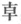 ，中日，上下象其光线，即太阳放光彩之象。乾之性，在人则气力圆满，刚健之义也。《说卦传》曰：“乾健也。”天之性至刚，其德至健，其体圆满盈实，其运动强进而无有间断，故以此卦此字充之。
乾：元亨利贞。
此五字文王所系，谓之《彖》辞。《乾》之为天，上文既述之，在人则君也，父也，夫也。盖天包地，君抚民，父育子，夫帅妻，其理一也。“元亨利贞”四者，乾之德也。乾秉纯阳之性，而兼此四德，故其为气也，充满宇宙，无瞬息之间，是即健而无息之谓也。人能法乾之健，自然气力充实，俯仰无愧，孟子所谓浩然之气，“至大至刚，配义与道，无是馁也”。此即被天命德之圣人也。
“元”者始也，大也，仁也，不朽不坏，天地之大德，所以生万物也。元字从二从人，仁字天字亦然，盖在天为元，在人为仁，犹仁者推爱己之心以及于人也。
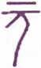
▲ 甲骨文元
“亨”者通也。物始生而成之义也。在人为礼，人之处世，以礼让为贵，便可使人生爱好之情，即与仁之博爱同。
“利”者宜也，吉也，万物发达而遂其生也。在人为义，见利思义。利与义若相反，而实足以相成，以义为利，利即义也。义 ［2］ 字从羊从我，我牧羊而衣其毛，食其肉，是自食其力，不慕夫外也。“义”者宜也，利之得其正也。利字，《说文》云“从刀从和”，和然后利，字本从和省文，古曰“利者义之和也”。
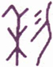
▲ 甲骨文利
“贞”者正也，兼贞正、贞常、贞固之义。在人为智，盖内有神明在抱之姿，外有坚贞不拔之操，斯有守有为，自得保其终也。故曰“贞固足以干事”。
▲ 甲骨文贞
盖“元亨”，物之始通也，言其时则自春而夏，言其日则自旦而昼，在人则自幼而壮，在草木则自萌芽而至繁盛也；“利贞”，物之成而又复其本也，言其时则自秋而冬，言其日则自映而夕，在人则自壮而耋，在草木则自实而陨也。为人君者，以乾天为法，故御天下之道，莫大于仁育万物，君能体仁，则天下莫不被其德。《文言传》曰：“君子体仁，足以长人。”且此卦爻象，亦非专止君上，下至匹夫匹妇，为父为夫者，其卦象、卦义、卦用亦复相同，宜推类而扩充之。“元亨”二字，专就乾之全体德性上说，“利贞”二字，更含圣人教诫之旨。何则？“贞”者正也，“利”者宜也，是贵行其所宜，守其所正也。以人事推之，必有其刚健进取之性，然自恃其勇毅果敢，或将侮人之弱，凌人之柔，欺人之愚，是自陷于过失也。惟贞正而可以克其终也，因深警之曰“利贞”。
《彖传》曰：大哉乾元，万物资始，乃统天。云行雨施，品物流形。大明终始，六位时成，时乘六龙以御天。乾道变化，各正性命，保合太和，乃利贞。首出庶物，万国咸宁。
六十四卦，始于《乾》，终于《未济》。《未济》之卦，《离》火之性上升，坎水之性下降，为水火不相交之象。刚柔失位，事犹未成，故曰《未济》。夫《未济》非不济也，有待而济也。六十四卦，循环不已，是未济之终，即复而为乾天之始。乾为日，阳光所照，万物发育，故坤舆得其照临而水气蒸发，腾而为云，降而为雨，寒暑燥湿，四时循环而无须臾之间。精气凝结，万物流形，是皆始于乾元一气之功德。故孔子赞之曰：“大哉乾元，万物资始，乃统天。云行雨施，品物流形。”“乾元”者，包括阴阳之称也。凡物必有始，又必有终，今以六爻之位 ［3］ 示其理，则初爻生也，始也，上爻死也，终也。各由其物之性，而不误其时命，谓之“大明终始，六位时成”。夫资始万物者，乾元之功，而乾元亦不自以为功，必使雷、风、水、火、山、泽六子相辅而成，六子亦能承袭天意，以行天之所欲为，而不违其道。天以父道而御六子，谓之“时乘六龙以御天”。乾坤与六子协心，以行变化之道，其间功用无穷，而分量有定。乾坤六子，各全其命，生生变化，谓之“乾道变化，各正性命”。八卦协心，以能保合此造化，谓之“保合太和”。“乃利贞”者，谓日月星辰与四时事物之消长，各不愆其运转，不违其次序，得保此元气之常存，是以利且贞也。圣人体天立极，以一人而统理万机，是曰“首出庶物”。一时庶物沐圣人之化，又得发育繁殖，各有其所，书曰“黎民于变时雍”，万邦协和，即此可见。圣功王道，乾元一德包括尽之矣。
此《彖传》自“大哉”以至“统天”，专说乾天纯阳之德体；自“云行”以至“流形”，专说天地阴阳和合交感之妙用；自“乾道”以至“性命”，专说阴阳变化之功德；至“保合太和”，扩充之于人道，始见教诫劝化之本领，于是三才之大义具备。盖人效法夫天，天之为道，以公明正大为主，则为人君、为人父、为人夫之道，亦宜以公明正大也。
此卦纯阳在上，自有君临万邦之象。圣天子体乾出治，布化宣猷，登进贤良，授之以职，又仰其德如龙者，崇以师傅，参与庶政，如汤之于伊尹，文王之于太公，一时庶职咸熙，风流令行，所谓“保合太和”。君令而臣行，上倡而下和，君臣合德，上下通志。盖君子秉纯阳之德，适当休明之全，虽有不善人，伏于里卦之坤，不敢复露头角，是以四海靖宁，国家安康，万民咸沐浴于深仁厚泽之中，无一天不得其所；于是品物丰饶，国富民裕，兵强食足，兆民输爱国之忱，四国动会归之化，熙熙皞皞，共乐泰平，是乾之时也。
溯昔仁德天皇亲察下民之疾苦，敕百官曰：“夫天子犹太阳之照临下土，发育万物，宜代天而布化。天子为天之子，而敬承上天之志，以施行之于下民者也，故朕视众庶犹子，众庶视朕犹父也。今朕尊为天子，万福无极，众庶有或未得其所者，若鳏寡孤独，穷而无告，或孝子而待父母之疾，不得医药，或遭逢水火二难，而不能抚育妻子，或罹疾病，不得药饵，朕岂忍晏然漠视哉！凡而百官，是朕众子中最年长而有德者也，其怜恤子弟，固当与朕同心。今后三年，除天下租税，救万民之疾苦，尔百官其共体此意，所谓一夫不获是予辜。朕实不胜饥渴之忧，愿汝等三年之内，与朕同此艰苦，以实行救荒之政。”百官谨而奉命，皆感戴君恩之厚，于是世风一变，上自权贵，下至贱民，济贫恤穷之风盛行，有余财者，赈济穷民，贷土田者，不收田租，贷家屋者，不征家税，惟以博爱为荣誉。是以兆民无不蒙王泽者，如大旱之得甘雨。迨三年之后，天皇登楼，远见炊烟之飏，欣然则咏《高屋》之御制。迄今追诵敕文，讽咏歌谣，无不感怀圣德也。
盖乘乾御宇之世，风同道一，明良相庆，无复所间；然气运迭更，极盛必衰，或潜龙而不用，或亢龙而有悔，运会之升降，阴阳消长之理，古今同然。故君子之处世，辨六爻之时，玩其辞，即可知天命之向背。凡人筮得此卦，法太阳之循环而不暂息，一切动静之为，要皆奉乾以为法。其宏量卓识，以见龙飞腾得力，正可进而有为之时。然气运之通塞进退各有其宜，初爻虽见其才德如龙，而时机未会，未可进而当事也。二爻可进之时既来，而应以九五，二五各以阳德应之，犹非阴阳相亲也。三爻更近上位而在下，拮据黾勉，颇劳思虑。至四爻，则五爻之盛运将来，察上下之情，审进退之机，待时而动，尚未决也。五爻得盛大之气运，百绩考成，正乘时得位之际也。上爻以乾之气运既过，要宜速退而无悔。九二之“利见大人”，由初九确乎不拔之志操；九三之无咎；由九二之谨慎不伐；九四之无咎，由九三之乾乾惕若；九五之“利见大人”，由九四之能疑能审。故积功累行在于人，而成德达才在于天。至九五，则潜龙之精神既竭，忧疑之念虑全消，无思无为，惟有“同声相应，同气相求”之乐而已，则亢龙之悔，不必待至上九而后知也。是所谓理之不可违，数之不可逃，几之不可不预者也。
《大象》曰：天行健，君子以自强不息。
“天行健”，一言以断定乾天全卦之德。行者运也，讲也，为也，往也，道也；谓天道运行，犹如太阳日日运行，循环不息，无一刻之停止也。君子体天行之刚健，天理浑然，无一毫人欲之间，自强不息，自足当天下万般之事业。然此自强者，亦非暴戾猛进而不知止，妄用健强之谓也。玩索“潜龙”、“亢龙”及用九“无首”之辞，而可知其义也。
【占】 得此卦者，要临事刚健，自强不息，犹天行也。又要包括“元亨利贞”之四德。乾有施德而不计利之意。
○ 女子：筮得此卦，以阴居阳，有刚强过中之嫌。宜慎重也。
○ 天候：二三四五之中，变则必晴也。
○ 买卖：不利买而利卖也。
○ 祸福：谓积善余庆，积不善余殃，恐有不在当代而在后裔也。
○ 常人：有高其身而不知鄙事之虞。
○ 贤者：有知天命而独行是道，恐群阴潜伏，有群小构谗之惧。
初九：潜龙勿用。
《象传》曰：潜龙勿用，阳在下也。
初九以阳居阳。龙之为物，神灵不测，能大能小，能飞能潜，应时而变化者也。爻之取象于龙者，以喻人具灵明之德，变通之才也。“潜龙勿用”四字，周公所系，谓之爻辞，以下仿之。“潜”者隐伏之称，此爻在纯乾之时而居最下，未得遽用，犹龙之时运未来，而隐伏于深渊也，故谓之“潜龙勿用”。占得此爻者，以不得其时，虽有才德，未可进用也。然龙之潜，非终于潜者也；“勿用”者，非竟不用也。龙有神灵之作用，不得其时，蛰而不腾，潜而不现，寂然以养其心神，君子亦待时而动，善成其用。当此勿用之时，晦其才，韬其德，不干进而取祸，亦不迟疑而失机，乐天知命，俨如神龙之蛰而待伸也。盖天地之气有升降，君子之道有行藏，孔子曰“舍之则藏”，正得此卦之旨也。若以小事筮得此卦，宜用妇人而成事，盖以此爻变则为《姤》 ［4］ ，《姤》以“女壮”故也。
【占】 问战征：乾为武人，有战征之象。初爻阳气始动于黄泉，犹是潜伏，故曰“潜龙”。在军事，为威令初发，大军未集，宜按兵以待也。吉。
○ 问营商：龙而潜，曰“勿用”，虽是一种好贸易，只可株守，未可骤动也。
○ 问功名：龙本飞腾发达之物，初爻曰潜，是未得风云之会也。故曰位在下也。
○ 问婚姻：《乾》初变《姤》，《姤》曰“女壮，勿用娶女，”是宜戒之。
○ 问家宅：按震为龙，震在东方，是宅之东，必有渊水，闭塞不济，宜修凿之。
○ 问六甲：生男。
【例】 明治二十二年，某贵显占气运，筮得《乾》之《姤》 ［5］ 。
断曰：《乾》者纯阳之卦，具“元亨得贞”之四德，刚健笃实，而六位不失其时，升降无常，随时应用。处则为潜龙，出则乘飞龙，静则专，动则直。初九曰“潜龙勿用”，盖以阳居阳，其位伏而在下，虽有龙德，未逢飞跃之会，宜法藏勿用。《文言传》赞之曰：“龙德而隐者也，不易乎世，不成乎名，遁世无闷，乐则行之，忧则违之，确乎其不可拔，潜龙也。”又曰：“潜之为言也，隐而未见，行而未成，是以君子弗用也。”今君占得此卦此爻，夫君当维新之始，以武功有勋劳，现升陆军中将之职，且精儒释二典，所谓学究天人，道兼文武，识见之高朗，学问之深奥，可谓当世无比者也。今当退而不用，正龙德法伏之时，以君才兼文武，仿诸葛卧龙，是有握乾旋坤之略，但恐阳刚独用，未免意气凌人，议论率直，以臻疑谤交集，不容于朝。然此卦所谓“勿用”者，非终不用也。以龙之象，失时则潜，得时即飞。君当韬光匿彩，“遁世无闷”，以待其时之来也。此爻变则为《巽》，《巽》者风也，顺也，入也，俚谚曰“入人之气”即是也。君能以刚方而济以巽顺，使人有坐我春风之想，则上下悦服，而望闻日隆，自得飞龙上升之象。虽今年之气运未亨，至明年，爻进九二，恰值“见龙在田，利见大人”之时，腾达变化，德泽普施，可拭目俟之。
九二：见 ［6］ 龙在田，利见大人。
《象传》曰：见龙在田，德施普也。
此爻阳处二位，故曰九二，阳气发现，有龙出渊，现于地上之义也。在圣人，潜不终潜，有屈而将伸之机。曰“在田”，盖有其德，而犹未居其位也。“大人”者，以其有人君之德，故称大人。此爻变则为《离》，《离》文明之象，卦变为《同人》，以文明之人而与人同，故曰“利见大人”。盖刚健者，性之德；文明者，学之成；中者居之宜；正者位之得。然有其德，而犹不自以为足，欲见九五之大人，盖期勉进其见识，相与赞成天下事业，是龙德始见于世，立身显名之时也。五者君上之定位，二者臣下之定位，此卦二五皆以阳刚相应者，盖有故也。《乾》之为卦，其体则纯阳圆满，其时则刚健日进，其爻则二五共备刚中之德，同德相助，谓之两刚相应之例。《乾》之卦，处九五之位，以明德御众贤，九二之臣，承奉君意，以飞力于国家，并法天德，以治国家，以其志望之同，而两阳相应如是。上下之大人，合志而济世，则其德化之所及，无有穷极也。又此爻备三才之妙义，“现龙”者，谓得天之时；“在田”者，谓得地之利；“利见大人”者，谓得人之和也。
【占】 问战征：龙本灵物，初爻曰“潜”，是谓伏兵；二爻曰“现”，则发现而出也。“在田”则必列阵于田野空旷之地。《传》曰“德施普也”，是必战胜而行赏也。
○ 问营商：爻曰“现龙在田”，知其货物大般是米麦丝棉之类。现者，谓物价发动开涨；“利见大人”者，谓当有官场出而购买也。
○ 问功名：谓伏处田间者，当乘时而进用也，且得贵人之助，故曰“利见大人”。
○ 问婚姻：二五相应，五居尊位，婿家必贵。曰“现龙”，必是新进少年也。大吉。
○ 问六甲：生男，且主贵。
【例】 明治之初，自占一身之方向，筮得《乾》之《同人》。
断曰：《乾》者纯阳之卦，六爻皆取象于龙，群贤在朝之时也。我国自德川氏治世以来，殆三百年，积弊之极，世运一变，得见今日维新之盛业。虽由气运之消长，实赖此龙德大人，各振其才力，匡辅王朝，致此中兴之伟业者也。是则今日之政治，即乾为天之世也。余曩得罪罹狱者七年，后遂获释，尔来黾勉拮据，四年而得十余万金，余不敢自恃意中，亦幸逢一时之气运，克获资产。然聚散离合，理之所不免，若聚而不散，谓之守财奴，即贻之子孙，往往徒供骄奢，何能久守？余惟当今在位之君子，在昔尊王室，废藩政，皆出万死而得一生者也。历今三十年来，王事鞅掌，莫敢或遑，孜孜以襄国是，余虽不肖，亦岂敢犹耽安逸，徒望富有哉？今筮得九二之辞曰“现龙在田”，谓余曩时出幽囚而再见天日，得以振兴家业也；“利见大人”，谓余尝占筮国家大计，得与当路大人交接，并得领其议论，往往外使归朝，投宿余邸，藉是得悉海外形势。凡此皆足针砭余之固陋，启迪知识，为《益》洵不少也。余乃法《同人》之卦意（《同人》之占载同卦之附录），创成铁道、瓦斯、学校、邮船四大业，其原实得于此也。盖《乾》之为卦，以天行之健，有自强不息之象，人能刚健而无须臾之怠忽，惟曰孜孜，自有成功之日也。
【例】 明治二十七年，占我国与清国战争之结果如何，筮得《乾》之《同人》。
断曰：《乾》者，两“乾”相接之象，以人事观之，有刚健纯粹之大人相接之象。今两国战争，彼国虑生内乱，必将遣首相李鸿章东来，与我伊藤首相相盟。谓之“现龙在田，利见大人”。《乾》者纯阳，四月之卦也，和议之成，其在明年四月乎？乃以此筮呈之伊藤首相。
二十八年四月，李鸿章果来我长门下关，与伊藤首相相见，和议始成。先是明治十七年，伊藤伯奉钦使之命，差遣清国，筮得《乾》之五爻，渡清之后，与李氏会，全命而还。今得二爻，知李氏之必来。天命不违如此，岂可不畏乎？
《象传》曰：终日乾乾，反复道也。
九三以阳居阳，故才强而志亦强，具刚健之性。然位不得其中，居内卦之上，奉外卦而治下，任大而责重，若违上意，必得谴责，若失下情，必受众怨。上下之际，祸福之交，成败之所由决也。盖九三所居之地，正当危惧之时，惟“终日乾乾”，戒慎恐惧，可以免咎。六爻之中，三爻配三才而为人位，此爻以乾德居六十四卦人道之首位，君子之象也，故不称大人，而称“君子”。初之“潜”，二之“现”，四之“跃”，五之“飞”，皆有待于此爻也。故修我德，勤我业，“终日乾乾”，如临危地，戒慎畏惧，而修之于身，施之于事，能通于下之志，能虑天下之变，则虽身居危地，处置得宜，可变危而为安也，故曰“厉无咎”。所谓“反复道”者，即反复叮咛，重复践行之意。又此爻变则为《履》，《履》之六三曰“履虎尾”，可以见危殆之地位也。三者日之终，故曰“夕”；此爻变则为《兑》，《兑》者西也，日之在西，即夕之象也。
【占】 问战征：危事也。爻曰“终曰乾乾，夕惕若”，是能临事而惧者也，故虽危无咎。
○ 问功名：九三处下卦之极，其位犹卑，功名未显也，故称君子；在忧危之地，故曰乾乾惕若，斯可免咎。
○ 问营商：居不中之位，履得刚之险，度其贸易必是危地，须日夜防备，可脱险而获利也。
○ 问家宅：观爻象，必须谨慎持身，勤俭保家，斯无灾害。
○ 问婚嫁：三以六为应，三位卑，六位尊，尊则不免亢而得悔，是不宜攀结高亲也。
○ 问六甲：生男。产时恐稍有危惧，恐终无咎。
【例】 明治十六年某月，谒松方大藏卿，卿曰：今春以来，深雪霖雨，气殊甚，余窃恐年谷之不登，子幸占其吉凶。筮得《乾》之《履》。
断曰：《乾》者纯阳之卦，故曰乾为天，是乾者天也。取象于太阳，且六爻皆阳无一阴，其辞曰“终曰乾乾”者，乾乾犹干干也，即旱魃之义也。今九三变而互卦 ［9］ 见《离》之日，是全卦无雨水之象，可知本年必旱。“夕惕若”者，谓炎热至夜而不去也。虽人民多畏久旱，而五谷丰熟，故曰“厉无咎”也，且二爻曰“现龙在田”，即田稻丰登之象；今三爻变《离》，见离火照彻田面，纵旱不为虐，是以无咎。
卿曰：占之验与否姑舍是，其于活断，可谓老成练熟者也。
九四：或跃在渊，无咎。
《象传》曰：或跃在渊，进无咎也。
九四以阳居阴，且近君位，其将进者阳之情，其将退者阴之志，故疑而未决也；然阳气方进，龙之一跃，自有升天之象。或者，疑而未定之辞，“或跃”者，将进而未进也。“在渊”者，欲进而复退。渊为空虚之地，上与天通气，且渊有水，龙得水便易于腾跃，与二爻“在田”不同。兹虽一跃而后在渊，知终必跃而升天，故曰“无咎”。《象》辞加一进字，益见乘时进必无咎也。人能审时势之可否，察人心之向背，待时而出，见可而动，其进也非贪位，其退也非沽名，可以投事机之会，可以免失身之辱。所谓无咎者，亦勉人之不失其时也。四爻越内卦迁外卦之处，故有进之意。又此爻变，外卦为《巽》，《说卦传》曰：“巽为时退，为不果”，故有犹豫之象。
【占】 问战征：观爻象，行军前进，必有渊水阻隔，宜设船筏；或临渊有敌军埋伏，宜预设备，乃得无咎。
○ 问营商：爻曰“或跃在渊”，若在贩运海货，恐罹波涛之险，或者物价一时腾涨。爻曰“无咎”，可保无害。
○ 问功名：有一举成名之象，大吉。
○ 问家宅：渊者水也，跃者飞升也，必家道有一时振兴之象。
○ 问六甲：生男。
【例】 明治二十四年二月，门人清水纯直来告曰：今府下第十五区代议士之选举，鸠山角田二氏，旗鼓对竖，竞争未决。余久知鸠山氏，因请占其胜败。筮得《乾》之《小畜》。
断曰：此卦六爻皆取象于龙，群龙聚集之时也。以此爻阳气旺盛，进而应选，本可必得。然九阳爻，四阴位，阳主进，阴主退，显见进退未定，明明将进而复退也。且上卦变而为《巽》，《巽》为疑，为不果，为进退；四属阴位，变则互卦含《离》明，应爻初九有渊之象，见此人学术渊深，具刚强之德，然其心怀迟疑，亦未尝冀望必选也。细玩爻辞，所谓“或跃”者，固不能不应其选；所谓“在渊”者，恐此番必不能得其选也。某氏哑然而去。
后果如此占。
【例】 二十八年冬至，占明年我国外交之气运，筮得《乾》之《小畜》。
断曰：《乾》之为卦，阳气循回，无一息之间断，纯全刚健之时也。今我国与清国交战，是欧美各邦所注视，此后各邦必将窥我举动，群相猜忌嫌恶，亦势所必至也。故我国与各帮，益当熟察彼我情形，揆度内外时势，使彼绝观觎之念，敦和好之情，蓄势审机，正在此时也。爻辞曰“或跃”，曰“在渊”，示我法神龙之变化，或进或退，神化莫测，乃得无咎也。
九五：飞龙在天，利见大人。
《象传》曰：飞龙在天，大人造也。
五爻刚健中正而居尊位，下与九二之臣，同德相应，见大人而助其治化，谓有圣人之德，而居天子之位，恩泽被于生民者也。盖“大宝曰位”，虽有其德，苟无其位，不能利济天下。“飞龙在天”者，谓龙飞上天，云行雨施，神变化而泽及万物。圣人在位，天下被其泽，万物遂其生，故取象于此。所谓大人者，“与天地合其德，与日月合其明，与四是合其序，与鬼神合其吉凶”。以其备龙之德，腾跃而居天位，为万物所瞻抑，故天下利见。《象传》曰“飞龙在天，大人造也，”造犹作也，即所谓“圣人作而万物睹”也。
【占】 问战征：九五尊位，必是天子亲征，王师伐罪，故曰“大人造也”。
○ 问营商：九五辰在申，上值毕 ［10］ ，附星咸池 ［11］ 。咸池者苍龙之舍，咸池亦名五车，主稻黍豆麦，度其贸易，定在五谷之属。曰“飞龙”者，知物价之飞生也；曰“利见大人”，知其贩运或出自政府之命也。
○ 问功名：有云宵直达之兆。
○ 问疾病：有上应天召之象，不吉。
○ 问六甲：生男，主贵。
【例】 明治十八年二月二十八日，伊藤伯奉命赴清，发横滨港，为昨年朝鲜事件，与清廷议事也。余为问结局如何，筮得《乾》之《大畜》，临行欲呈之于伯，因阻道者众，遂不得呈，乃更使人赍之于天津。
断曰：九五之大人，与九二之大人，其位相应。《易》以阴阳相应为例，二五共属阳爻，以我国之大人，与清国之大人相会论事，其必能深虑远谋，两国平和。且本卦五爻之背，即《坤》之五爻，其爻辞曰“黄裳，元吉”，是含彼我大人之心忧，关黄色人种之安危，互相扶持，两国大人留心于此，是即两国人民之幸庆也。
《乾》之《大象》曰：“君子以自强不息。”凡筮得此卦者，要知太阳之运行，无须臾之间断，故以进为先，可以制胜也。今我国先派使臣，则先鞭在我，我进而论事，以法乾之健行，故其胜在我，必可得好结果也。
时横滨商人立川矶兵卫，以事赴天津，乃托以此占，就书记官伊东氏，呈之于伊藤伯。时因国议不协，伊藤伯将整装归朝，偶见此占，大有所感，再开和战一决之议，乃得如议，不辱使命而旋。
【例】 明治十九年十二月，占明年铁道局气运，筮得《乾》之《大有》，呈之于铁道局长井上胜君。
断曰：《乾》三奇一连，纯阳之卦，五爻又属阳位，卦德莫盛于此，铁道局长气运，可谓盛矣。此爻得天时、地利、人和者三，足见世人注目于铁道。凡物产之繁殖，运输之交通，军事之防护，人民之往来，均沾利益，其盛运诚无可比也。“飞龙在天”者，喻汽车之飞行也；汽车通行，无分贵贱，即在大人之尊，亦同登乘，故曰“利见大人”。先是明治十四年，占未来之国会，预判二十年铁道可以盛行，今得此卦，适与相合，此后铁道事业之盛大，可期而待也。
上九：亢龙有悔。
《象传》曰：亢龙有悔，盈不可久也。
上爻以阳居《乾》卦之极，极则太过，龙飞过高，故曰“亢”，以高致危，故“有悔”。此卦言龙始而“潜”，继而“现”，中而“跃”，终而“飞”，飞则已当全盛，过此则宜复潜，则不特可免此日之悔，即可冀后日之再飞。犹人臣居势位之极，当知退避之意，斯富贵可以长保也，否则，知进而不知退，则鲜有不蒙咎者矣，故曰“盈不可久也。”此爻变则为《夬》，《夬》者，决也，日中则昃，月盈则亏，天理之必然也。故当斯之时，宜因悔思改，见机而退，斯得之矣。若夫尧舜之禅让，范蠡张良之功成身退，皆不极亢而善其终者也。
【占】 问战征：上九居《乾》之极，阳极于上，故“亢”；亢则因胜而骄，是以“有悔”也。故《传》曰“盈不可久”，知不能持久也。
○ 问营商：“亢”者，太过也，凡卖买之道，不可过于求盈也，过盈则必有亏，故曰“不可久”也。
○ 问功名：上九之位已极，宜反而自退，否则必致满而遭损。
○ 问家宅：是必宅基太高，太高则危，亦可惧也。
○ 问疾病：是龙阳上升之症 ［12］ 。《传》曰“盈不可久”，知命在旦夕间矣。可危。
○ 问婚嫁：不利。
○ 问六甲：生男，恐不育。
【例】 余以每年冬至，占庙堂诸贤进退，及亲属知己等来岁气运，送致之于其人为例。明治十九年，占某贵显翌年气运，筮得《乾》之《夬》。
断曰：《乾》者至大至刚至健，为纯阳之卦，在人则居高位，膺显爵，声名洋溢，正当功成身退之候。今阁下筮得此卦，譬如飞龙升天，高出云霄，反不能布施雨泽，故曰“亢龙有悔”。阁下英雄达识，老练世事，前日之功名赫耀，今盛运已过，惟宜急流勇退，救目前之亢，再期他日之飞，辞职谢荣，遵养时晦，斯无咎也。后果如此占。
用九：见群龙无首，吉。
《象传》曰：用九，天德不可为首也。
“用九”者，为六十四卦阳爻之变，示阳刚之用例，即《易》中百九十二阳爻之通例也。“用”者变动之象，“九”者阳数之终，《乾》卦全体皆阳，阳极则变，故曰“用九”。“见”者，《乾》六爻皆取象于龙，曰“潜”，曰“跃”，曰“飞”，显然昭著，故曰“见”。“首”者上也，《易》以《乾》为首，“无首”者，言而有出夫其上者矣。卦以得变为吉，《乾》卦纯阳无变，故六爻未尝言吉；用九则动而将变，故曰吉。《象传》曰用九天德，以《乾》卦纯阳，不亲阴柔，浑然无德，亦即乾为天之义。“不可为首”者，言无以尚之也。夫《乾》以六龙各有行云布雨之势，在人则谓群贤汇萃，同心翊赞，以匡国家，以显功名，各宜谦让巽顺，不矜不伐，或互竞才智，争夸首功，便是凶象。《易》曰“群龙无首，吉”，正所以垂诫之也。《象传》曰：“用九，天德不可为首也。”要必知舜之玄德升闻，而好问察迩，卑牧自下，斯以为至矣。
02 坤为地
《坤》卦三偶六断，纯阴虚阙之象。“坤 ［13］ ”字古文巛，顺字偏旁及川字，亦巛之象形也，故《象传》曰“及顺承天”，又曰“柔顺利贞”。《文言传》曰：“坤道其顺乎？”《系辞传》曰：“夫坤，天下之至顺也。”皆可见“坤”顺之义。后以其混山川之川，改从土从申，言坤地也。地土也，于方为申也。地之为体，安静而至柔至顺，以承乾也。《说卦传》曰，“坤为柔”，《杂卦传》曰：“乾刚坤柔”，柔顺之义可知矣。
坤：元享，利牝 ［14］ 马之贞。君子有攸往，先迷后得主，利西南得朋，东北丧朋。安贞吉。
坤者乾之对，万物之气始于天，万物之形生于地。其为义也，在人为卑，在物为雌，在事为静，在学为能，在时为秋。其为道也，可为人用而不可自用，小人自知其柔弱，而能顺从刚明之君子，则得矣。然《易》象变动，亦未可执一而论，非谓君父不得占《坤》，臣子不得占《乾》也，又非谓《乾》六爻无小人，《坤》六爻无君子也。但君子筮得此卦，则当知其气运在坤，要法坤顺之义，柔顺以处事也。
▲ 古文“坤”字
坤为地，顺承太阳之乾。天有象，地有形，天虚地实，地为土壤积累而成，仰承天施而化成万物，无所不持载也。在人则为臣为妻，臣之事君，母之育子，妻之随夫，皆法地道之至顺，其义一也。坤之德，柔而顺，含弘光大，笃实厚重，即《中庸》所谓“宽裕温柔，足以有容”之大德也。
此卦六画皆偶，顺之象；内外重偶，厚之象；内虚，中之象，又含之象，又通之象；两两相比，行之象，又明之象；彬彬均适，文之象，又美之象；六偶，十二方之象，又大之象；秩序不紊，理之象；左右分布，体之象，又业之象。爻辞及《文言传》所述，皆依是等之象而系辞也。
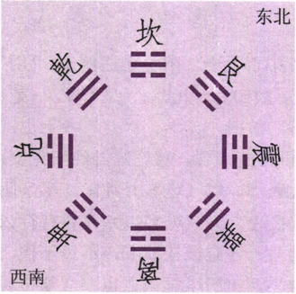
▲ 八卦方位图
元亨利贞之义，见《乾》卦下。惟乾者形而上，主天地之道；坤者形而下，主阴阳之功，是乾坤之别也。《坤》之“元亨”，即《乾》之“元亨”，犹月之得日光而有光也。马之性，柔顺而能服于人，牝马者，性尤柔顺。北地马群，每以十牝一牡而行，不入他群，“牝马之贞”，取象于此。然《乾》卦曰龙，《坤》卦曰马，以龙飞天上，变化自在，马行地上，驯服于人。牝对牡，为柔，故曰“利牝马之贞”。乾上坤下，即乾先坤后，坤先夫乾，是逆天也，必所往皆迷；坤从乾后，乃“顺承天”，斯“得主有常”，无往不利矣。是即阳倡阴和，阳施阴受之道。“攸往”者，谓有所行也。坤以得乾为主，君子以得君为主，君先臣后，从令而行，是以所往咸宜。“西南”阴方，属巽离兑，坤之本方；“东北”阳方，属坎艮震，为乾之本方。“西南得朋，《坤》以阴卦之方；“东北丧朋”，《坤》以阴卦往东北阳卦之方。以阴往阴，则与阴之类，以阴往阳，则从阳有庆。是以《彖传》曰“西南得朋乃与类行；东北丧朋，乃终有庆”也。“安贞”者，安于坤顺，以配乾健，故“君子有攸往”，惟法坤之顺而己矣。
一说读“主利”为句，谓在家则生殖勤俭以致富，在国则利用厚生以富国，不知当以孔子《文言》为据，利字属下二句读。“得朋”“丧朋”，正与上得主相对。
《彖传》曰：至哉坤元，万物资生，乃顺承天。坤厚载物，德合无疆。含弘光大，品物咸亨。牝马地类，行地无疆，柔顺利贞。君子攸行，先迷失道，后顺得常。西南得朋，乃与类行；东北丧朋，乃终有庆。安贞之吉，应地无疆。
乾元坤元，皆根于太极之一元，无二元也。坤以承乾，故坤亦称元。乾元在阳，故曰“大”；坤元属阴，故不曰大而曰“至”。“至”者，谓既到极尽处，阳之极尽处为阴，阴即坤，故曰“至哉”。
坤舆随太阳而圆转活动，外面以水为衣，受太阳之光热，而蒸发水气，雨露下降，而为资生之功，谓之阴阳之作用。阴阳者，天地之大气，而万物皆乘此二气以生成也。《系辞传》曰：“天地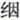 缊，万物化醇，男女媾精，万物化生”者，即是也。盖乾元之大气，与坤元之精气相交，万物森然而兴发，生育之功，无所不至，谓之“至哉坤元，万物资生，乃顺承天”。乾为天之积气，其德在始施也；坤承天之气而为体，其德在受育也。资生之“生”，与《乾》之《象传》“始”字相对，不可轻看。此卦上下皆《坤》，有重厚之象，故载山岳而不重，振河海而不泄，应天之施无疆，以生成万物，无不包容，无不发育，谓之“坤厚载物，德合无疆，含弘光大，品物咸亨”。按地精为马，马变阴类，牝马则阴而又阴，以其性柔顺，而又能行远，故曰“行地无疆”。法坤之君子，所行正当如是。“牝马”一言，圣人怀有深意，读《易》者，所宜留心玩索。盖此卦纯阴，阴主成，以得乾为主，宜从乾而动，为人臣为人妻者，因不可争先而成事也。故君子筮得此卦，其行事宜安静，不宜躁进，若先事而动，必取败也。夫阴，暗也，昧也，不宜主事也，必以从阳为主。此卦皆阴，故先人而当事，必迷而多误可知；承阳而后人，则顺而得常，故谓之“先迷失道，后顺得常”。西南退也，东北进也，且西南阴位，东北阳位，坤之时，退西南则得朋，进东北则丧朋。然人多喜其得朋则往西南，不知以阴而往阴位，不啻无一毫之益，见柔益柔而暗益暗矣。虽往东北而曰丧朋，以我之暗，往求高明之地，以为补救，则暗往明来，其道顺而得益多，故谓之“西南得朋，乃与类行；东北丧朋，乃终有庆”。如此而安其本分，确乎常道，故谓之“安贞之吉”。盖贞之为德，有所守而不变，以全万物之终，故谓之“安贞之吉，应地无疆”也。
按：《易》因“三天两地”之数，设天地之位，定刚柔之位。即“天一，地二，天三，地四，天五，地六”，而阴阳悉交也。六十四卦中，得定位之整正者，独有《水火既济》而已 ［15］ 。凡《易》中所言，当位不当位者，皆因此理也；天下大小之事，其合道理，或不合道理，皆由是而出者也。又地中有天者，以二与四谓之两地，以一与五谓之两天，三谓之地中之天，总谓之三天。上爻一阴，表地球之外犹有世界也。此“三天两地”之位，于《易》最为枢要，故天位有地，地位有天，皆谓之不当位。《易》之于时处位，其精密如此。
通观此卦，初爻阴之微也，小人汲汲于营利，不顾灾害，有陷入匪僻之象，履霜坚冰，戒之深矣。二爻得《坤》之纯体，卦中惟这一爻最纯粹，然第曰“无不利”，与《乾》之九五，得天位行天道而致太平之占者迥别。三则不中，且不正，是赏罚不明之时也。四则不中，以致君子缄默避祸。五则不正，以致尊卑失序。上六则群阴爻战，有以血洗血之象，阴之极也。要之，《坤》者纯阴之卦也，故六爻概以小人言之，与《乾》之君子相对也。以其小人故，《彖》辞曰“主利”，上爻曰“战”。以“履霜”戒其始，以“永贞”慎其终，虽或取象于君子，与乾之君子，自异其趣。乾之君子贤者也，坤之君子能者也，贤者用人，能者用于人；贤者在位，能者在职者是也。盖乾之时，贤者在位而施德化，坤之时，能者在职而计利益也。
《大象》曰：地势坤，君子以厚德载物。
《坤》之为象，两《坤》相重，一下一上，如地形之高下相仍。天似气运，故《乾》曰“天行”，地以形载，故《坤》曰“地势”。盖地有高低，而丘陵山岳之起伏，由地中火气之作用也。地球原来以水为衣，故其低处潴而为海，《易》谓之泽，其四面所缠之水，为太阳所吸引。至地形见于水上，虽地之形势，互有高低，各随其形而延出者也。延者伸也，故曰“地势坤”。夫人之有智愚贤不肖，犹地形之有高低，地质之有肥脊也。农夫不为脊土废其耕作，君子不为愚不肖止其教育，教之以事物之所以然，导之以道义之所以贵，以示社会之标准。然人性有上智，有中材，有下愚，上智修已以及人，中材自修而已，下愚不能自修，而待治于人。凡天地间有形之物，莫厚于地，莫不载于地，故君子法坤之象，以厚德而待人，无智愚贤不肖，悉受包容，亦犹坤之无不持载，故谓之“厚德载物”也。
【占】 问战征：坤为地，为众，“势”者有力之称。在行军，既得其地，复得其势，又得其众，宜乎攻无不克矣。
○ 问功名：上者能法坤德之厚，积厚流光，自得声名显远。
○ 问营商：《坤》为富，为财，为积，为聚，皆营商吉兆也。曰“厚德载物”，德者得也，可必得满载而归也。
○ 问家宅：知此宅胜占地势，大吉。
○ 问婚嫁：《坤》顺也，柔顺而已，地道也，即妇道也。大吉。
○ 问六甲：生女。
初六：履霜，坚冰至。
《象传》曰：履霜坚冰，阴始凝也。驯致其道，至坚冰也。
初爻居纯阴之初，阴之始凝也，虽其端甚微，其势必渐至于盛，故取其义于霜之将到坚冰也。盖谓履霜之初，宜察阴气之渐长，终至坚冰而预防也。在人则阴邪之萌犹微，如霜之易消，然积累之势，终至坚冰，其恶逆不能复，如之何？故大而治国，小而修身，皆宜谨之于微。《文言传》曰：“积善之家，必有余庆，积不善之家，必有余殃。臣弑其君，子弑其父，非一朝一夕之故，其所由来者渐矣。”可谓能解此义者也。抑此卦，全卦皆阴，小人知利欲而不知道义。当其初，由于父教不谨，日深月久，愈趋愈下，遂致利欲薰心，不孝不悌，极至犯上作乱，而亦无所忌惮，其祸实始于教之不谨所致。抑阴扶阳，防微杜渐，圣人所以谆谆垂诫也。坤道虽至顺，然至顺之变，流极而至于大逆，圣人因坤顺之流害，以戒坚冰之驯致，履霜防冰，履尾防虎，其训诫一样深切。《传》曰“其所由来者渐矣，”来也者，即在过去、未来、现在三般中。《彖传》曰“刚来而得中（《讼》）”，曰“柔来而文刚（《贲》）”，皆言来之意。往往固执之士，以因果报应，为释氏之说，圣人所不言，可谓误矣。《象传》曰“阴始凝”者，即小人之欲念始萌，则驯者顺也，随自然之势，不复留意，习而至于盛也。阴邪之萌，其初虽微，自履霜而至坚冰，渐渐而来，不可遏抑，遂至灭身丧家，不复可救。谚曰“窃针者窃钟”，即此义也。是以圣人于其过怠之未大戒后来，欲其速改也。此爻变则为《复》，《复》之初九曰“不远复，无祗悔，元吉”，即所谓速改其过，不贻其悔也。
【占】 问营商：初六阴气犹微，曰“履霜，坚冰至”，是由微而推至于盛也，犹商业由小至大，积渐而至于富。
○ 问功名：初爻是少年新进之时，由卑而尊，犹履霜以到坚冰，随时而来，未可躁进也。
○ 问战征：初爻阴之始，“履霜”之象，至上爻“龙战”，阴之极也，“坚冰”之象。曰“其血玄黄”，是两败也。所当先慎其始。
○ 问家宅：《坤》纯阴之卦，初爻阴气尚微，故曰“履霜”，“至坚冰”，则阴气盛矣。阴盛则衰，不吉之兆。
○ 问婚嫁：《坤》卦纯阴，曰霜，曰冰，皆阴象。纯阴无阳，不利。
○ 问六甲：生女。
○ 问疾病：恐是阴邪之症，初起可治矣，久则难医 ［16］ 。
【例】 明治二十一年冬，男爵某氏来告曰：余顷日欲从采矿之事业，其矿山为矿学士某所保证，其为有利无疑，虽然，子幸占其得失。筮得《坤》之《复》。
断曰：此卦纯阴而无一阳爻，是无统一事业者，是众人各谋私利之时也。且初爻为阴初凝，有小人贪而不知餍足之象。乾阳为金，此卦无一阳爻，是不能获金也，虽有矿学士保证，未可遽信。阴卦属小人，小人趋利而不顾君父，况朋友乎？君宜谢绝其谋。某氏从之，后得所闻，矿学士某，与外国人交通，谎言其矿山金产之盛，造作骗局，诱获多金，凡入其局者，皆大失利。因是谈矿业者，虽实有利益，往往人多不信，是阻人起业之心，绝人进取之气，皆此等小人贻之害也。
某氏因此占，不入其局，不致失利，可谓幸矣。
【例】 明治三十一年冬至，占明年我帝国气运，筮得《坤》之《复》。
《易》例，阳为君子，阴为小人。所谓君子者，忠心谋国，不挟私曲者也。圣上聪明睿智，临御天下，亦当以君子为法，小人为戒。若小人则惟利是务，不顾国家之隆替，孟子所谓“上下交征利”，不夺不餍，优胜劣败，弱肉强食，亦势所必至也。幸当圣明之世，文化日隆，虽比美欧各邦，亦不多让，无如世道人心，日益颓败，惟利是重，求其敦尚古风，讲论道德，喻义而不喻利者，百无一人焉，岂不可慨乎！夫《坤》之为卦，纯阴而无阳，是小人行世，君子退藏之时。今得初爻，地变为雷，即小人擅权，专博私利之兆。其辞曰“履霜，坚冰至”，言方当履霜，小人之机心乍萌，犹霜之易消，至坚冰固结，有不可复动之势。孔子曰：“积善之家，必有余庆；积不善之家，必有余殃。臣弑其君，子弑其父，非一朝一夕之故，其所由来者渐矣，由辨之不早辨也。《易》曰：‘履霜坚冰至’，盖言顺也。”如此不祥之辞，他邦征诛之朝，时或有之，至我帝国，为万世一系之天子，下亦不乏忠君爱国之辅弼，故无虑此。今占国家气运，而得此爻，岂可不戒慎乎？
按二爻变而为《师》，“师”者以身为仪表，教导万民之象，是为明年及明后年之气运也。其辞曰：“直方大，不习无不利，”此爻以阴居阴，备坤厚之德，居大臣之位。直者廉直而温，方者刚方而严，大者大光，谓其功也。君子秉直、方、大之德，虽无其位，天爵之贵者也；小人无直、方、大之德，一昧徇私，虽贵为公卿，人爵之贱者也。君子小人之判如此，是以小人而在高位，往往借公济私，不顾国家安危，徒作子孙之计，自以为得计，是亦不思之甚也。夫大臣而徇利，必至贿赂公行，是非颠倒，祸乱自此而起，不知祸乱之来，富者必先罹其毒。然则小人所为肥家，实酿败家之患，履霜坚冰而不知戒，小人之为计，不亦愚乎？
今我国家，幸得贤明之君子在上，秉正直刚方之德，行公明博大之政，正躬率物，师表群伦，庶几阳刚来复，阴邪退避，移风易俗，太平之治，其在斯乎？《坤》卦以十年为数，其纯阴而无一阳，为统御不全之象，今而不知所戒，恐因循以及十年，或者有上六龙战之祸，亦不可不预防也。“龙战于野”者，龙者谓上，野者谓野心之徒，反击而至流血也。自“履霜”而至“龙战”，国家之不祥莫大焉。今时大臣及各党首领，皆廉直公正，固无患此，但占筮如此，思其终局，颇切杞忧。夫爻所谓“龙战”者，所指何事，有识者，自能辨之。
六二：直方大，不习无不利。
《象传》曰：六二之动，直以方也。不习无不利，地道光也。
二爻以阴居阴，即《坤》之主爻，故有上人之势也。盖《乾》之九五，《坤》之六二，各居阴阳之本位，而合中正之德者。《乾》以君道，故以九五为主；《坤》以臣道，故以六二为主。六二具地道之全德，在内则无私曲，在外则事皆当理，称之曰“直方大”。直者无邪曲也；“方”者圆之对，纯阴之象也。圆者动而不静，阳之道也，“方”者止而守常，阴之道也，故曰天圆而地方。“大”者广大也，谓坤地生育之功德广大也。“直”则其心无私，“方”则其事当理，“大”则谓其功也。“直方大”，则配天之刚，而合自然之德。天理虽至直至方，人欲则邪曲也。人之性虽善，人欲蔽之，百岐横出，反致害天理之直也，此卦本非凶，惟为私欲所蔽，则陷于凶。然此爻得坤道之纯，其中直、方正、广大之全德，凡学之有待于习者，由于未晓其理，未谙其事也矣，亦何习之为？故曰“不习无不利”。“不习”者，谓其自然而能也，《大学》所谓“未有学养子而后嫁者也”之意。《乾》之六爻，莫盛于九五，《坤》之六爻，莫盛于六二。《象传》之意，谓六二柔顺中正，居本卦之主，动容周旋，皆中其规矩，又有“不习无不利”之功德，阴道、地道、臣道、妻道，皆得其当，德行光大之故也。盖此卦纯阴，初、三、五三爻柔顺而不正，四上两爻，柔顺而不中，惟此爻柔顺中正，独得坤道之粹者也。
【占】 问营商：六二《坤》之本位，“直方”者地之性，“大”者地之用，知其营业必是地产，如谷米、木材、丝棉之类是也。“不习无不利”，习与袭通，谓不烦重筮而知其获利也。
○ 问功名：二爻居中得位，动而获利，言不待修营而功自成，其成名也必矣。
○ 问战征：战之一道，以得地势为要，动以其方，势大力强，可一战而定也。
○ 问家宅：六二中正，居宅得宜，故曰“地道光也”。
○ 问嫁娶：“直方大”，地道也，妻道通于地道，故婚娶亦利。
○ 问疾病：爻曰“直方大”，知其素体强壮，不药有喜 ［17］ 。
○ 问六甲：生女。
【例】 明治二十三年一月，占伊藤伯气运，筮得《坤》之《师》。
断曰：《坤》者地也，地之德顺也，顺者臣之道也。此爻中正而为一卦之主，夫地之为物，载华岳而不重，振河海而不泄，禀天气而生育万物者也。今占大臣而得此爻，是其负世务之重，而能堪其位，奉至尊之命，而能尽其职。且此爻柔顺中正，具臣道之全德，故称赞之曰“直方大”。直方者，即所谓“敬以直内，义以方外”，而终之公明正大，是功之全也。伯有此器识，而复有此德性，循夫自然，故“不习无不利”也。此爻变则为《师》，《师》之为卦，九二一阳为全卦之主，统御众阴之象。本年两议院之开设，必当推为议长，以统督众议员，用以奏整理之功。故曰“六二之动，直以方”，盖不待习而无不利也。
后果如此占。
【例】 明治三十年六月，余趋爱知摄绵土制造所，该制造所，属小儿嘉兵卫所担当，因赴爱知县厅，晤江本知事及吉田书记官。书记官曰：今者，将兴筑埠头于治下热田，以图名古屋市之便利，其费几二百四十万元。欲提出此议于县会，为其大业，知事及余，深疑县会之赞否如何，踟蹰久之，子幸占其成否？筮得《坤》之《师》。
断曰：《坤》之为卦，上下皆柔顺而无一毫间隔，况《坤》卦主利，而此事尤属平直方正，大有利益，事成之后，不特当县获利，即他县亦得利便，后必得县会众员赞成，不容疑也。
知事及书记官闻之大喜，速附之于县会之议，议员中四十四名，不合议者，不过三人，立议决之云。
六三：含章可贞。或从王事，无成有终。
《象传》曰：含章可贞，以时发也。或从王事，知光大也。
三爻不中不正，而居内卦之极，改革之地，其心术行为，不能无不中不正之失；且柔顺之臣，与六五之君，皆阴柔而不相应，是人臣不得于其君者也。大抵六三之爻，多不得时位，即有才识之士，只宜韬德匿采，以待时至，若妄露才能，必招疑忌，故戒之日“含章”。刚柔相杂曰文，文之成曰章，含者含而不露也。惟其静而能守，故曰“可贞”。大凡为人臣者，不闻其遇与不遇，当有守其常而不可变之志操，纵无干进之心，亦未尝无进用之日。如或出而从事，则仍含其章，而不自居其功，从君之令，以终君之事而已，事即不成，必使后人得续以成之，谓之“无成有终”。六三居下卦之上，有“从王事”之象，盖《乾》之九四，《坤》之六三，皆居进退未定之地，曰“在渊”，曰“含章”，故皆加曰“或”，示以将进未进之意。当此进退之际，亦宜不失时宜，以从王事也。《象传》“知”字与“时”字相对。含蓄才能，未敢吐露，谓其能审时而发。“时发”者，即吐发其含章之光，退则能含，进则能发，是以其光大也。此爻变则为《谦》，《谦》之九三曰：“劳谦，君子有终，吉。”《系辞传》曰：“劳而不伐，有功而不德，厚之至也。”下卦为艮，艮者止也，有含之象，亦得含章之义也。
【占】 问战征：爻曰“含章可贞”，言平时含蓄才智，敛藏不露，一旦从事，自能制胜，即不成功，亦无大败。故曰“无成有终”。
○ 问营商：《坤》地也，百货皆生于地，商能蓄积百货，故曰“含章”。凡从事营商者，贸迁百货，以时发售，故曰“时发”。《坤》内卦至三而极，正盛满之地，故曰“光大”。是以一时虽或未成，知必有终也。吉。
○ 问功名：凡求名者，最宜待时，时未当发，“含章可贞”；时而当发，出从王事。知此道者，必能保功名以终也。吉。
○ 问疾病：玩“无成有终”句义，知不可药救矣。凶。
○ 问六甲：生女。
【例】 明治十九年，占知友柳田某气运，筮得《坤》之《谦》。
断曰：坤之时，柔顺而亨也。《彖》曰“利牝马之贞”，牝马负重而为人用，即劳而无居之意也；又曰“君子有攸往，先迷后得主，利”，谓不能得名誉，惟得俸给。三爻值有为之地，爻辞曰：“含章可贞，或从王事，无成有终。”“含章可贞”者，是足下包含文章，藏器于身，以待其时，今时会既来，当有从事于文章也。虽主管者知足下文才，欲任以事务，授以官职，其余属官，不得不出足下之下，以其势有不可也，只可酬报而已。此卦全卦皆阴，无自主之权，虽殚劳心力，苦无知之者，事成之后，其功亦必为人所夺，不能得分毫名誉，不劳者却得褒赏，或邀升进。以《坤》之卦纯阴，阴人得势，惟以主利，故笃实之人，反为彼所笼络，而不行于世。足下之时运如此，惟宜修德而待时。“或从王事，无成有终”，或之云者，今日无事，他日必将从事也。
其后同氏果受某局嘱托，从事编辑五年，早出晚退，事极繁剧。终了编辑，于是属官关其同事者，皆有升级，或受褒赏，氏以不登仕籍，不得邀恩典，止解其嘱托而已。
六四：括囊，无咎，无誉。
《象传》曰：括囊，无咎，慎不害也。
四爻虽柔顺得正，而居失其中，故不足以有为也。四居近五之位，而两柔不相得，上下闭隔，是大臣不信于君之象也。当此之时，宜慎重缄默，晦藏其智，如括结囊口，杜口不露，默默隐忍，以守其愚，如此则“无咎，无誉”，斯得远于灾害矣。故谓之“括囊，无咎，无誉”。“无咎”者，在避害，“无誉”者，在逃名。若因括囊而得誉，则有誉即有咎，必深藏不露，并泯其括囊之迹，故《象传》曰：“括囊，无咎，慎不害也。”此爻变则为《豫》，卦形有括囊之象。
【占】 问营商：四巽爻，巽为商，为利，巽“近利市三倍”之谓也。兹爻曰“括囊”，是明亦以闭囊之象，知必昔日得利，财已入囊，不使复出也。故曰“括囊，无咎，无誉”。
○ 问战征：六四重阴，当闭塞之时，虽有智，囊其才，无所施其计谋也，是宜闭关不战，如囊之括其口也，斯无咎矣。
○ 问功名：四重卦，动当否位，《文言》曰“天地闭”，“括囊”者，闭口也。天地且闭，何有于功名？若妄意干进求名，适足致祸，有誉反有咎矣。宜慎。
○ 问家宅：六四以阴居阴，履非中位，是宅必在山谷幽僻之处，宜隐遁者居之。
○ 问六甲：生女，或得孪生二女。
【例】 明治十二年一月，邂逅大阪五代友厚氏，氏请占本年商务，筮得《坤》之《豫》。
断曰：《坤》主利之卦，有群聚争利之象。四爻以阴居阴，不可进而为事也，故本年宜退守，不宜扩张商业。爻辞曰“括囊”者，括财囊之口，不可出财货也。故括囊则无损益，开囊便多失，嘱慎勿着手商事。
五代氏有感此占，然商业之势，虽知不利，只可小做，不能不做，偶有营业，果致亏致。
六五：黄裳，元吉。
《象传》曰：黄裳，元吉，文在中也。
黄属中央，土色也；裳下服。黄中色，守中而居下，为巨下之象。盖此爻以柔德居五尊位，或女后南面听政，或如伊周之辅主摄政者也。然《坤》者纯阴，六爻皆臣事，未可以六五直为人君。占此爻者，为当垂中和之盛德，维持朝宪，辅弼国君，终复退守臣职。此尊位所以为尊，阴爻不失其常，故曰“黄裳，元吉”，否则，居尊而为天下，必大凶也。《左传》昭公十二年，南蒯 ［18］ 筮得此爻，以不守“黄裳”之义，败家丧身，可为征矣。圣人以裳字系此爻者，恐有权臣乘势位，擅威福，失臣下之道，蔑视君上，其垂诫也深矣。《象传》曰：“文在中也”，坤为文，五居中，言美积于中而形于外，为能柔中而克守节也，故为元吉。
【占】 问战征：《坤》臣道，五居尊位，为人臣之极贵者，如舜之摄位诛四凶，周之摄政诛二叔。爻曰“黄裳，元吉”，是以文德而发为武功者也，故《传曰》“文在中也”。
○ 问功名：六五辰在卯，得《震》气，《震》有功名奋兴之象。五又《离》爻，《离》为黄位，近午，上值七星，七星主衣裳文绣，故曰“黄裳”。《离》又为明，有文明发达之象，故曰“文在中也”。
○ 问营商：《坤》五变《比》，比吉也，辅也，商业必得比辅而成。《比》卦下《坤》上《坎》，《坤》为裳，故曰“黄裳”；《比》为美，故曰“文在中”，知其经商必是锦绣章服之品。曰“元吉”，必获利也。
○ 问疾病：《坤》为大腹 ［19］ ，又黄为中色，裳下饰，可知其病在中下两焦。
○ 问六甲：生女。
【例】 明治二十二年，占贵显某之气运，筮得《坤》之《比》，乃呈之三条公及伊藤伯。
断曰：《坤》之为卦，纯阴而无一阳，五爻虽属君位，而《坤》卦皆臣事。“黄裳，元吉”者，如周公位冢宰，辅成王以摄政，畏天命不敢服黄衣，惟着黄裳，以严君臣之分者是也。惟其忠信笃敬，虽持朝宪，辅弼国君，故曰“黄裳，元吉”，否则，其凶可知也。今贵显某，幼而有神童之誉，及长拔所擢藩中，久留于欧洲，不特博学，又通晓海外各国之政体风俗，其归朝也，立要路而鞅掌职务，隐然负众人之望。然今筮得此爻，不堪骇异，盖此人久居欧洲，虽通君民同治之政体，或不明本邦建国之治法。安危之所系，殆见于此筮数乎？甚难其判。
其后宪法发布之日，某氏为凶暴者所害，于是始叹此占之有验也。
上六：龙战于野，其血玄黄。
《象传》曰：龙战于野，其道穷也。
上爻居全卦之终，是阴邪极盛之时，变而为《剥》，则有一阳与五阴相战之象。是以初六履霜之始，圣人谆谆警其将至坚冰，夫阴邪之势过盛，必将剥阳；其剥之甚也，势遂至于相战；及其战也，阴虽盛大，阳虽减退，终必两被其伤。血者伤害之甚也。玄者天色，黄者地色，天地即阴阳，故血色玄黄，为阴阳共伤也，故曰“龙战于野，其血玄黄”。近推之于一家之事，为人父兄者，其初误于弟之教育，遂养成不肖，其结果遂致骨肉相残，同类相害，争斗杀伤，势穷而始止。《象》曰“其道穷也”，其字即指阴阳君臣而言；道字亦指君臣；穷者穷困窘迫也。夫至君臣相战，其巨之横逆无道，固不俟论，其君亦未为无过。《系辞传》曰，“上慢下暴，盗思伐之矣”，“慢藏诲盗，冶容诲淫”，使其臣下至此者，君道之穷，亦即臣道之穷也，故曰“其道穷也”。龙本乾之象，今此爻言龙者，示阴极而抗阳也。又曰野者，以在外卦之外也。爻辞不言凶者，其凶不待言也。
【占】 问战征：象已明示是两败也。
○ 问功名：上处外卦之极，是穷老人闱，抑塞已久，一战复北，可哀也。
○ 问营商：上六《坤》卦之终，其道已穷，是资财既竭，血本又耗，商道穷矣。
○ 问疾病：必是阴亏之症，阴极抗阳，肝血暴动，命已穷矣。
○ 问六甲：阴尽变阳，可望男孩。
【例】 明治六年，占政府气运，筮得《坤》之《剥》。
断曰：《坤》之为卦，纯阴而无一阳，是君德不耀之时。今者明君在上，俊杰在位，占得此卦，窃怪与时事不合。盖在朝诸公，远忧深思，襄理国是，同心同德，厥躬尽瘁，何至有龙战之象？既而思之，龙之为物，神化不测，古者豪杰之士，才能卓绝，往往以龙称之，或者大臣之中，各怀忠愤，因意见之不同，以致议论之过激，始而相忌，继而相仇，终至相斗，各分党与，互相攻击，不奉朝旨，是谓野斗，故曰“龙战于野”，如曩昔源平之争权是也。此爻之象如是，然度今日在朝诸公，必不出此，犹疑莫决，乃呈之于三条相公。
先是，维新伟业略得整顿，大臣参议，多经历欧美各邦，视察实地，将取彼之长，更定国政。岩仓右大臣以下，木户大久保、伊藤山县诸公，远赴欧美，盖行者居者，各尽厥职，以匡中兴。约以一行未归之间，不启别议，岂图事出意外，缘我云扬舰测量朝鲜国仁川港，彼国轰炮击之，庙议纷起，谓宜兴师问罪，以雪国辱，电信达于欧洲。大久保公先归，欲停此议，西乡以下诸公不从，议论愈激。未几，岩仓右大臣等皆归，征韩之论，为全国之一大问题。物议嚣嚣，人心悻悻，终归议和，而主征韩者，各怀不平，纷纷去官，于是七年有佐贺之变，九年有长州之乱，十年有鹿儿岛之役，国家之不祥连臻，“龙战于野”之辞，实不虚也。
《易》之前知事变，大抵类此。
【例】 明治二十七年冬至，占明年之丰歉，筮得《坤》之《剥》。
断曰：坤地有生育万物之性，受太阳之光热，以奏其功者也。然此卦纯阴而无一阳，为多雨少晴之象。爻辞“龙战于野”者，谓阴阳不和，气候不顺，恐难望丰熟，故《象传》曰“其道穷也”。愿当路者，预知年谷之不登，宜讲救荒之策，以备之也。
果是年诸国有洪水之害，暑气亦比他年稍薄，秋收止七分。
用六：利永贞。
《象传》曰：用六水贞，以大终也。
用六之义，已示之卷首。永者长也，远也。《坤》卦之象纯阴，为臣妻之义，在人事则柔顺贞正，而悠久有恒，不变其志，可以从君从夫矣。忠臣不事二君，贞女不更两夫，即“永贞”之义也。为人臣为人妻者，从“永贞”之义，则大吉而有终，若少变之，则大凶大恶之道也，故深诫之曰“利永贞”。盖阴之性，柔躁而难守其常，有易进易退之弊。《象传》曰“以大终也”，谓其不变坤道之顺，而全其终也。若变动则阴侵阳，臣侵君，妻凌夫，逆理背常，乌得全其终哉！又阳为大，阴为小，阴者柔也，暗也，小也，然勤而不怠，必强学而不懈，终明，是有以大终之义也。
按：《乾》之用九，以过刚强，宜守无首之道；《坤》之用六，以阴道、臣道、妻道，直守恒常之德，不可变动。是警戒之辞也。
03 水雷屯
屯 ［20］ ，上一象地，中山象草，下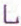 象草根之屈曲，即草木穿地始出，欲伸而未能即伸之形。内卦《震》，《震》雷也，能以鼓动发育万物；外卦《坎》，坎水也，能以滋润养成万物。按：卦为雷在水中，当冬至之候。雷欲发于地下，而地上之水，冻冰凝结，为所压抑，不能遽出于地，其象艰难郁结，如物之勾萌未舒也，故名之曰《屯》。
屯：元亨利贞。勿用，有攸往，利建侯。
▲ 甲骨文屯
▲ 篆体屯
“元亨”二字，概括全卦之终始而言也，非谓屯之时即亨通也。凡天下之事，创业伊始，必有电难，惟能耐其辛苦，勉强不已，自然脱离屯难，终得大亨通之时也，故曰“元亨”。夫人处屯难之会，所当动性忍心，坚贞自持，安于“勿用”，不敢先时妄动，又陷于险。虽明知后日利有攸往，自得亨通，要不可轻用其往也，故曰“勿用有攸往”。此卦阳爻惟二，九五为坎险之主爻，初九为震动之主爻。九五之君，当艰难之日，欲以征伐初九有为之人，必反致招祸也，不如优待之，以为侯伯，斯得共济时艰也，故曰“利建侯”。侯者震之象，故《豫》之《彖》辞，亦曰建侯也。
《彖传》曰：屯，刚柔始交而难生，动乎险中，大亨贞。雷雨之动满盈，天造草昧，宜建侯而不宁。
《乾》纯阳也，《坤》纯阴也，此卦内初九，外九五，二爻之刚，与四爻之柔，始相交也。内卦之震雷欲出地，而外卦之坎水遏阻之，以成屯难艰险之势，故曰“刚柔始交而难生”。《说卦传》曰“震一索而得男”，即始交之象也。又曰“震动也，坎陷也”，《震》以阳动之性，在《坎》阴之下，动而未能出也，故曰“动乎险中”。然在险难之中，能守贞正而不滥，他日自得大亨，故谓之“大亨贞”。《震》雷者，阳气之奋劲，《坎》雨者，阴泽之普施，故曰“雷雨之动满盈”。盖初九《震》之主，九五《坎》之主，故教之以无相敌害，仿雷雨之作用，使得相亲相助也。阴阳始交，故曰“天造草昧”。《说卦传》曰，震为崔苇，草字出于此；坎为月，天未明也，昧字出于此。当是时也，六四之宰相，礼遇初九之臣僚，相与辅相，使之共济时艰也，故曰“宜建侯”也。时方创业之世，非升平守成之日，岂可优游逸乐哉？故曰“不宁”。夫当此天地始创，阴阳始交，以精与气交媾，生物成象。震为崔苇，生长于互体坤地，以巩固地盘之组织，继而胎卵孵化，介类繁生。初九、九五二爻，并属阳刚，其中却含柔软坤体，为蚌蛤之象。盖万物之生，各具心灵，自能飞潜动跃，此自然之理也。我国旧俗谓主泥土之神，曰泥土煮尊，谓主沙土之神，曰沙土煮尊，主动物之神，曰面足尊，主植物之神，曰惶根尊，犹是生人之命，相传南斗主生，北斗主死者是也。故凡一物一命，皆有神主之。大凡始生之时，恰如草木逢春，其繁殖，一雨多于一雨，即“雷雨之动满盈”者也。人类繁殖，不可无大德之君以统御之也；君犹不能独治，必使贤者以为辅弼，是所谓“宜建侯”也。惟天地闭关未久，尤当无教逸欲，自耽安宁逸乐也，故戒之曰“不宁”也。
以此卦拟人事，则为阳刚之君子，与阴柔之小人始交，互异气质，彼此辄生争论，谓之“刚柔始交而难生”。何者？内卦我也，有雷厉之性，欲奋发而立志；外卦彼也，有水濡之性，挟下流之邪计，以妨我行为。凡我所欲振兴者，彼皆阻扰之，使不得成就，欲进不能进，欲往不能往，是谓之屯，故曰“勿用有攸往”。是以百事困难，恰如陷落水中，而不得自由，谓之“动乎险中”。虽然，气运变迁，困极必亨，犹冬去春来，冰冻自解，雷气发生，《屯》变为《解》，则屯难解散，而气运一新。故不宜急遽而图功，惟当固守以俟命，待气运一转，阳升阴降，自见君子当权，小人退位，是出屯而入亨也。当屯之时，要不忘此义也。
以此卦拟国家，则以下卦为人民，有暴雷上轰之象，蓄异谋，倡异论，欲以撼动上卦之政府；上卦为政府，下令如流水，以遏止下民之妄动，甚至以刑法制之。刑字古作 ，从刀井，谓犯法之人，如陷入井中也，是下卦之《屯》也。政府虽有政刑，或不能遏止下民，而反为下民所困，以阻国运之进步，是上卦之《屯》也，谓之“刚柔始交而难生”也。初九者，下卦雷之主，即一阳之微动乎地下坎水之中。夫天下无事，英雄亦与凡庸无异，今当屯难之时，初爻一阳，以君子刚健之才，将奋发而有为，岂可晏然处之乎？在上位者，惟尊其位，重其禄，以礼遇之，使之济世之屯难，不然，欲以威力压之，却生不测之祸乱，争功者并起，人心愈形扰乱矣，谓之“天造草昧，宜建侯而不宁”也。“天造”，犹天运也；草者，谓人心之草乱而失其伦序；“昧”者，谓冥顽而不明，是即《屯》之象也。
《易》有四难卦：《屯》、《坎》、《蹇》、《困》是也。《屯》者，“刚柔始交”，不知其意之所在，故生猜疑之念，为初酿困难之时。《坎》者，二人溺水之象，彼我共陷困难之中，惟能耐守当日之困，而得后来之亨也。《蹇》者，知彼构危险，乃止而不进，犹跛者之不得寸步也。《困》者，泽中无水之象，恰如盆栽之草木，滋润之气已竭。《屯》者难之始，《坎》者难之连及者，《蹇》者难之央，而《困》者难之终也。
通观此卦，初九，虽有建侯之才力，以当屯难之时，磐桓不进，居贞正之位，遇险而能自守其正。六二，居九五之应位，而为初九所挑，不能与九五共事，犹贞操之妇，拒强暴者之挑，经十年之久，始归其正应之夫。六三，为喻利之小人，乘此不明之时，欲独博其功。六四，应初九，亦比九五，因有所忌惮而不能共事，虽有“乘马班如”之屯难，终归正应初九之吉。九五，中正而并有位德，然介居二阴之间，不能沛雷雨之泽。上六，居屯难之终，无能为世。盖三与上无应之屯，二与四有应之屯也。六爻共动，当陷险之时，务要谨慎持重，经过屯难之气运，自有得志之日。曰“大亨贞”，大亨者，正屯难已解之时也。
《大象》曰：云雷，屯，君子以经纶。
不言雨而言云者，屯之时，云开于上，雷动于下，未能成雨；未能成雨，所以为屯。君子法此二气之动作妙用，以经纶政教之组织。“经纶”，犹言匡济也。经者机之纵丝，纵丝之不可易也，犹国家之大经，政教人心相合而不可紊也；纶者，机之横丝，犹取宇内各国之所长，见其时宜，而组织政体也。“经纶”者，即综理庶政之谓也。
【占】 问功名：内《震》外《坎》为《屯》，《震》为雷，《坎》为云，故曰“云雷”；《震》为出，《坎》为入，欲出而复入，故曰《屯》。又《震》为人，为上，《坎》为经，为法，故曰“君子以经纶”。是君子施经纶之才，而运当其屯也，宜待时而动。
○ 问战征：勤兵而守曰屯。“云雷”者，蓄其势也；“经纶”者，怀其才也。然当其屯，宜守不宜进。
○ 问营商：《彖》曰“刚柔始交而难生”，是必初次营商也。凡事始创者，多苦其难。经纶，治丝之事，知其业必在丝棉之类。
○ 问家宅：《震》东方，《坎》北方，《震》动也，《坎》陷也，恐是宅东北方有动作，宜经理修治之。
○ 问婚姻：雷阳气，云阴气，“刚柔始交而难生”，是初婚时，必不和洽，宜正人劝解之。
○ 问六甲：生男，恐始产不免有险难。
初九：磐桓。利居贞，利建侯。
《象传》曰：虽磐桓，志行正也。以贵下贱，大得民也。
每卦有主爻，皆具本卦之德，例之如《乾》之九五，具乾之德，《坤》之六二，具坤之德。《屯》以初九为内卦之主，故爻辞全类《彖》辞，他卦主爻，都依此例。“磐”者，大石也，“桓”者，柱也。此爻以正居刚，处险能动，虽有济屯之才，今居众阴之下，上应坎水之险，深虞陷入危险，未足以自持，惟守其身，贞固而耐困难，以待时机之来也。故如磐桓之居下，为柱石之臣，撑持难难之象。如因对抗之敌而占之，则有强敌坚固而不可摇动之势，在此时我惟固守持重，不可妄动，若妄进则不惟不得其志，却取其败，故曰“利居贞”。《彖》辞所云“勿用有攸往”，亦磐桓难进之意。盖言功业非容易可成，磐桓趑趄，不进不退，以待时会，即所谓“在下位而不获乎上，民不可得而治”之意。必明善诚心信友，而后乘时得位，则功业可得而成，故有大亨之利也。曰磐，曰居，皆震足之象。“利建侯”三字，与《彖》同而其义异也。《彖》辞属九五之君而言，爻辞属初九之人而言，故彼训为建侯，此训为所建之侯。侯之于王，臣也，能安其臣职，而为下不悖，即居贞也。
《象传》之意，贵谓阳，贱谓阴，此爻以一阳居三阴之下，为“以贵下贱”之象。虽时蹇位卑，而不得用其力。犹之江海居下，而百川归之，君主能下人，则众庶归之。屯难之世，江山易主之时也，此爻以刚健之德居下，大得人望，为他日立身之基，故曰“以贵下贱，大得民也”。第以磐桓观之，似失阳之德，要在内心坚确而不失其正也，故曰“虽磐桓，志行正”也。此爻变则为《比》，《比》之初六曰：“有孚比之，无咎。有孚盈缶，终来，有它 ［21］ 吉。”其不遽求成功之意，可推而知也。
【占】 问战征：磐桓，不进之貌，曰“利居贞，利建侯”。尽尝屯难之时，内则居正以守，外则求贤以辅，斯民心归向，众志成城，而终无不利矣。
○ 问营商：初九爻，辰在子，北方，上值虚宿 ［22］ ，曰元枵 ［23］ ，枵之为言耗，虚亦耗意，不利行商。能以守贞任人，尚有利也。
○ 问功名：初爻是必初次求名也，“磐桓者”，是欲进不进也。要当志行正直，谦退自下，终有得也。
○ 问家宅：磐字从石，所谓安如磐石，知其宅基巩固也；曰“利居贞”，知其居之安；曰“利建侯”，知必是贵宅也。
○ 问婚嫁：曰“以贵下贱”，知为富贵下嫁之象，吉。
○ 问六甲：初爻生男。
【例】 明治二十六年十二月，某贵显占气运，筮得《屯》之《比》。
断曰：《屯》者雷动水中之卦，为冬春之候，雷将发于地下，地上之水，结而未解，不能直升，必待冰冻融解，而后能发声也。以未得其时，故名曰《屯》，屯者难也。然及其时，水气蒸发而为雨，雷得时而升，雷雨和合，发育万物，成造化之功，谓之“元亨”。时之未至，利艰难贞固，若妄动轻进，则必陷乎险中，故戒之曰“利贞，勿用有攸往”。此卦以拟草昧之初，在上位者，宜用在下之志士，以济屯难而安生民也；在下者，不宜侵凌上位，宜奉戴元首，以祈国家之安宁也，谓之“利建侯”也。今某贵显占得此卦此爻，贵显于维新之始，整理财务，使无缺乏，以开富强之基，犹萧何之于汉高也，丰功伟绩，尡耀当今。谚曰“功成者坠，名盛者辱”，某因与同列议论不合，一朝罢黜，然报国之忱，未尝一日忘也。兹由此占观之，曰“利贞，勿用有攸往”，所谓“利贞”者，盖利贞守，不利躁进；所谓“勿用”者，即今舍藏之时也；所谓“有攸往”者，即可知后日之再用也。至若组织政党，以冀有为，恐党员中邪正混杂，转致酿祸，且《屯》之六二、六三，皆为坤阴主利之徒，可以鉴矣。《屯》之初九，以阳居阳，足见才志刚强，以上有坎水之险，阳陷乎险中，故曰“磐桓”。“磐桓”者，犹以磐石为柱，未可动摇，言难进也。待至气运一变，春冰解而雷雨作，“百果草木皆甲拆”，屯难去而嫌疑自释，九五之君，以礼聘之，翻然而应君命，得以经纶国家，大显其才德，故曰“利建侯”也。某贵显气运如此，彼既不信此占，余亦不复言矣。
【例】 秋田县士根本通明，邃于经学，诲人不倦，亦余之益友也。一日访之，出示一轴曰：是轴相传为明人某翁所画，以其无款识，未能辨其真伪，子请鉴之。然余素昧鉴识，乃为筮其真伪，遇《屯》之《比》。
断曰：此卦内卦《震》，龙也；外卦《坎》，云水也，此其画为云龙乎？爻辞“磐桓”，磐，地之磐石也，谓坚固而不可动易也，不可动易，则非伪物可知矣。且曰“利居贞”者，贞者真也，是谓之真品矣。“以贵下贱”者，贵重之物，无人知之，而为所贱也。
迨出画展观，果为云龙之图，笔力遒劲，其非凡笔可知，余即以此卦语为鉴定之。
【例】 占普法战争之胜败。友人益田者，尝留学欧洲，通晓西洋各邦事情。明治三年，普法两国交战，益田氏来谓曰，普法开战之电报，昨夜至自欧洲，仆尝久在法国，具知其国强，因与英人某赌两国之胜败。仆期法之胜，今朝互托保某银行以洋银若干，君请占其胜负。余曰：子已期法国之胜，何须占筮？氏曰：请试筮之！恳之不已。筮得《屯》之上《比》。
断曰：吁！法国必败，子必亡失若干元。子意以法为主，故以法定为内卦，法以内卦初爻为卦主，居《屯》之初，有雷之性，欲动而为上卦《坎》所阻，故不能进，是《屯》之义也。“磐桓”，难进之貌，以敌军坚刚，如岩石不可当也。“利居贞”者，谓不可轻举大事，然今法军妄进，将伐普国，详玩此占，其不能胜也必矣。《象传》曰，“以贵下贱，大得民也”，初变为阴，为“以贵下贱”也，法帝其将降敌军乎？国君降，则震一阳，变而为《坤》，《坤》为臣，为众，为民，国无君主之象。后其将为民选大统领，开共和国而治乎？内卦《震》为动，外卦《坎》为险，是“动乎险中而难生”，今内卦先动，遇外卦之险，法先开战端，为普兵所阻。又阳为将帅，阴为兵卒，外卦普将，居九五中正之位，有兵士护将之象，普国君民之亲和可知。内卦法将居初九，其位不中，法国君民之不亲和亦可知。大将居互卦《坤》后，身接军事，其心先以国家人民为赌物也，亦明矣。问其战略，见于内卦初爻，应外卦四爻；外卦五爻，应内卦二爻，是互有内应者之象。然应外卦普者，内卦二爻，即法之中正者，故为有效；应内卦法者，外卦四爻，即普之不中者，故为无效。初阳变而为阴，是失将之象，法之败已决矣。原来论两国之交涉，自法见之，自负为《震》长男，以普为《坎》中男，因此开战端者也；自普见之，以己虽为《坎》中男，以法为《艮》小男而应之者也。《屯》卦反为《蒙》，爻辞曰“击蒙，不利为寇，利御寇”。夫酿战者法，而御之者普，是法为《蒙》，普击蒙而惩之者也。普御法寇，而非为寇者也，普之必胜亦可知矣。又内卦坎险，不易犯也，外卦《艮》止，不能进也，更可知法之不能胜普也。
言未毕，益田氏噱然冷笑曰：卦乃凭空之论，犹呓语不足听也。余曰：余凭象数而推算，以决胜败之机。子虽久留法国，目击富强，信其必胜，是见外形，而未见其骨髓者也。《易》者，示天数预定者也，今既推究此占，又复细论时事。三世拿破仑之升帝位也，初千八百四十八年之乱，与民政党而有大功，遂选而为大统领。乘其威福，破宪法，弄权力，而登帝位。今则富国强兵，殆如欧洲列国之盟主，且与英国联合，而伐露国，陷西边士卜之坚城，实足继第一世拿破仑之豪杰，予之期其必胜，盖在于此。余观拿破仑之英豪，乘时践柞，睥睨欧洲列国，所向无敌，凭藉威势，欲使子孙继承帝位。知有不能如志之兆，与普国构兵，以国赌之，将决存亡于一举，是绝伦之英豪，亦为私利所诳谩，遂兴蒙昧之举，陷屯难之险。卦象时事，历历相符，然子何必疑之？
其后普王以六十万众，击法军于来因河畔，连战败衄，终退塞段城，普围益急，殆不可支，至八月三世拿破仑举军而降普。因录以证《易》象之不爽云。
六二：屯如邅如，乘马班如。匪 ［24］ 寇婚媾，女子贞不字 ［25］ ，十年乃字。
《象传》曰：六二之难，乘刚也。十年乃字，反 ［26］ 常也。
凡《易》三百八十四爻中，首揭卦名之字者，多言其卦之时也。“屯如”者，难进之貌；“邅如”者，行而不进，转辗迟回之貌；“班如”者，半欲进，半欲退，进退不决之貌。“匪寇婚媾”者，盖六二乘初爻阳，六四之阴应之，谓彼乘马不进者，非通于寇难，乃我之婚媾。然当此爻时，虽明知为正应，不能直行而遇也，故曰“女子贞不字”。《易》中言“匪寇婚媾”者凡三，此爻及《贲》之六四、《睽》之上九是也。“女子贞不字”者，此爻中正而应九五之阳，其义可从，然以阴柔，不能往而解《屯》之厄，救九五坎险之苦，故初九乘其隙来逼，此爻居中履正，执义守节，不敢许也。变则为《兑》，以少女配坎之中男，故托女子而系辞。曰“字”者，许嫁也，言女子有正应之夫。屯之时，内外相隔，不得从之，进退踌躇，是以“屯如邅如”也。“乘马班如”者，以震坎皆有马之象，故称“乘刚”曰“乘马”。时以初九之男子比我，虽欲娶我，不敢应其求，忌之避之，犹寇雠也。然初九实非寇我者，乃欲与己共事，特本婚媾耳，而我守正而不失其道，即贞而不字之象也。互卦有《坤》，坤数十，数之极也。又《震》为卯，坎为子，自卯于子，其数十。十干一周，而地数方极，数穷事变，星移物换，十年之后，其妄求者自云，屯难已解，而始得许嫁九五之应，谓之“十年乃字”。此爻犹太公居渭滨，伊尹居莘野，孔明在南阳也。屯难之时，群雄并起，不独君之择臣，臣亦择君，六二之“屯如邅如”，又非无故也。《象传》曰，“六二之难，乘刚也”，六二之艰难犹苦如此者，谓乘初九之刚故也。难字释“屯如邅如”之义。凡爻以刚乘柔为顺，以柔乘刚为逆，逆则其情乖而不相得，犹下有强刚之臣，我实艰于制驭。《象》曰“十年乃字，反常也。十年之久，尚守其贞操，而从九五，复女子常道，何者？女子生而愿为之有家，人伦之常也。女子二十而嫁，十年乃字，故曰“反常也。”
【占】 问婚嫁：爻曰“匪寇婚媾”，是明言佳偶，非怨偶也。但曰“女子贞不字，十年乃字”，知于归尚有待也。
○ 问战征：六二以柔居柔，有濡滞之象，故曰“屯如”。《春秋传》：“有班马之声，齐《师》乃《遁》。”古者还师称班师，故曰“班如”，知行师未可遽进也，必养精蓄锐，十年乃可获胜。
○ 问营商：媾与购音同，义亦相通。以货物求购，有迟回不决之意，故曰“屯如邅如”。又曰“十年乃字”，十者据成数而言，货物未可久积，或者十日十月乎？
○ 问功名：士之求名，犹女子之求嫁也，曰“屯如”、“邅如”、“班如”，皆言一时未成也。“十年乃字”，此其时也。
○ 问六甲：生子。
【例】 明治二十五年，占某贵绅之气运，筮得《屯》之《节》。
断曰：此卦阴阳始交，为万物难生之时，故名曰《屯》。《屯》者难也，大抵事物之初，未有不艰难者也。草木之自萌芽而至繁盛，必先经霜雪之摧折而后得全也，况君子之经纶天下，谈何容易！此卦以《震》之动，遇《坎》之险，进必陷于险。凡一事之未成，一念之未遂，皆《屯》也。然事未有不始于《屯》，而得成者也，匡世救难，其大者也，《彖》曰“元亨利贞”，即是也。人能守利贞之诫，可遂获元亨之时，是以曰“勿用有攸往”。今某占得此卦，在某识见卓越，才高智邃，维新之始，既有大功于国家，后虽辞职挂冠，其志要未尝须臾忘君也。今又奉献当大任，行将出而有为，爻辞则曰“屯如邅如，乘马班如”。《屯》者，屯难之义；邅者，迟回不进之貌；“乘马班如”者，乘马将进而复退之意也。此爻居辅相之位，上应九五之君，而以阴居阴，不能解屯难之厄，恐将出而仍不能速出也。犹女子之思嫁，虽有正夫，因其内外相隔，不得从之，故有此象。盖阴者阳之所求，柔者刚之所凌，时当其屯，六二之柔，困难自济。又比以初九之刚，恐不能免于嫌疑，可不戒慎乎？
后某因与政党首领某相会，致生政府疑忌，遂复辞职。《易》爻之著明如此。然今虽不遂其志，十年之后，则屯极必通。夫以女子之阴柔，能守其节操，久而必得其亨，况贤人君子之守其道，中正以匡家国者乎？
六三：即鹿无虞，惟入于林中，君子几 ［27］ 不如舍，往吝。
《象传》曰：即鹿无虞，以从禽也。君子舍之，往吝穷也。
“即鹿”，谓逐鹿也。鹿禄同音，又通乎禄利之义。鹿指九五而言。“虞”，掌山泽之官，犹土地向导者也，盖指初爻而言。初爻人位，故曰君子，与《乾》之九三同例。“几不如舍”。舍者，止也，谓知其功之不成，不如见几而止也。“往吝”者，吝，鄙吝贪吝之义，谓欲往而遂其志，必致辱名败节也。互卦为《艮》，《艮》者，止也。此爻以阴居阳，有阴柔而躁动之性，且乘应皆阴，无贤师良友训导，犹猎者无虞人之向导，而独入林中，虽冒险而进，不能获鹿，日倾西山，马困身疲，不可如何也。且林中之险，非必入而后知之也，无虞人之向导，在即鹿之初，其机已见，然以其贪于从禽，往而不舍也。夫舍与人林，均不获鹿，舍则为君子，入则为小人，君子小人之分，无他，利与义之间而已。《象传》“以从禽也”者，谓为贪心所使也。又爻辞曰“几不如舍”，《象传》曰“舍之”者，决去之辞也。此爻变则为《既济》，《既济》之九三曰：“高宗伐鬼方，三年克之，”建国之意，可并见也。
【占】 问战征：爻曰“即鹿无虞，惟入于林中”，犹言行军而无向导，冒进险地也。当知几而退，否则必凶。
○ 问营商：玩爻辞，知其不谙商业，不熟地理，前往求货，不特无货，反有损失，舍而去之，尚无大害也。
○ 问婚嫁：是钻穴隙以求婚也，其道穷矣。
○ 问功名：梯荣乞宠，士道穷矣。
○ 问六甲：六三阴居阳位，生男。
【例】 明治十八年应某显官之招，显官曰：予今将为国家进有所谋也，请占其成否如何？筮得《屯》之《既济》。
断曰：《屯》者物之始生也，为勾萌未舒之象。阴阳之气，始交未畅，谓之屯；世间有难而未通，又谓之屯；又遇险不遽进，又谓之屯。以人事拟之，则内卦之雷有动之性，欲奋发而有为，以外卦坎水之性，陷下而危险，有动而陷险之象，人苟欲有为，以前有危险，必不能如志也。非其才之不足，实运当其屯之象也。“即鹿无虞”者，欲入山中猎鹿，而无向导，致迷其途，必无所获。盖言此卦无阳爻之应比，其入于林中者，犹言贪位而前往，终不免羞吝也。《象》曰“君子舍之”，为能见几也，小人反是，“往吝穷也”。二爻辞曰，“十年乃字”，今得三爻，九年之后，气运一变，必可达志也。
当时显官不用此占，往干要路，终至辞职，不得其志，至二十五年，果后见用，再登显要，计之恰好九年云。
六四：乘马班如。求婚媾，往吉，无不利。
《象传》曰：求而往，明也。
“乘马班如”，解见六二下。六四之位，与九五之君，刚柔相接，然以阴居阴，其才不能救天下之屯，故欲进而复止，“乘马班如”也。夫大臣不患无才，患不能用才，苟能求贤自辅，可谓贤明也。其取象与六二同，盖以初九为刚明有为之才，求之偕往，相与共辅刚中之君，庶几“吉，无不利”，谓其有知贤之明，而无嫉贤之私也。故《象传》曰：“求而往，明也。”初九亦然，若不待其招而往，不知去就之义，岂得谓之明哉！此爻变则为《随》，《随》之九四，曰“有孚在道以明，何咎？”可以知婚姻之正道也。
【占】 问战征：“乘马班如”者，不明其进攻之路故也，明而前往，则所向无敌，故曰“往吉，无不利”。
○ 问功名：士者藏器待时，不宜躁进，迨于旌下逮，出而加民，“无不利”也。
○ 问婚嫁：《诗·关睢》云，“窈窕淑女，君子好逑”，逑，求也，必待君子来求，始为往嫁，故吉。
○ 问六甲：生女。
【例】 大仓喜八郎氏斡人某来，请占气运，筮得《屯》之《随》。
断曰：《屯》之为卦，我欲奋进为事，彼顽愚而妨之，故不能奏功，是屯之义也。今以四爻观之，四者比五，而在辅翼之位，但以五之不用我策，当变志而应初爻之阳爻。爻辞曰“乘马班如”者，谓欲进而犹未定也；“求婚媾，往吉”者，谓当求阳刚之初爻，以相辅也。
后依所闻，彼大仓之斡人与支配人，共趋广岛为镇台商务，继与支配人不合，意气不平，直辞大仓氏，自行大阪，开店于同镇台之侧。用从前同业某支配人，盖即卦中求初爻相助之兆也。
九五：屯其膏。小贞吉，大贞凶。
《象传》曰：屯其膏，施未光也。
膏者，膏润，坎水为雨为云之象。“屯其膏”者，谓时当屯难，不得下膏泽于民，致财政涩滞，有功而不能赏，有劳而不能报也。五爻中正而居尊位，得刚明之贤臣以辅之，则能济屯矣，以无其臣也，故“屯其膏”。初九备公使之选，在下而遵时养晦，六四应之，民望归之。九五居尊，而陷坎险之中，失时与势，其所应六二之臣，才弱而不足济屯，小事守正则可得吉，所谓“宽其政教，简其号令”，可使之徐就统理也。惟至大事，则不可也，若夫遽用改革，恐天下之人，将骇惧而分散，是求凶之道也。自古人君，时当叔季，往往愤权柄之下移，遽除强梗，而为权奸反噬者不少，谓之“小贞吉，大贞凶”也。夫天子亲裁万机，其中所尤急者，在于抚育教化万民，各使之沐浴泰平之德泽，无一夫不得其所。今九五之君，陷坎险之中，屯难之世，左右股肱之臣，亦皆阴柔，而无免险之力，不得施膏泽于下，故《象传》曰：“屯其膏，施未光也。”
【占】 问功名：士之所赖以显扬者，全望上之施其恩膏也，若上“屯其膏”，而士复何望焉！
○ 问战征：上有厚赏，则下愿效死，若恩泽不下，势必离心离德，大事去矣。凶。
○ 问营商：膏者谓商业之资财也，“屯其膏”，谓蓄聚而不流通也，小买卖犹可固守，大经营未免困穷矣。凶。
○ 问疾病：膏者在人为脂血，屯而不通，是闭郁之症，初病治之尚易，久病危矣。
○ 问六甲：九五居尊，生男，且主贵。
【例】 明治十九年初夏，某法官来访，曰：仆常在某任所，该地有一银行，颇称旺盛。仆偶听友言，为该行株主，购入株券若干，今犹藏之，顷闻该银行生业不佳，若将颠蹶，仆甚忧之。请君占该行盈亏如何？筮得《屯》之《复》。
断曰：屯者，屯难之甚。五爻在天位，而不能施雨泽，谓之“屯其膏”。《诗》曰，“芃芃黍苗，阴雨膏之”是也。以政府言，公债之利子，不能下付之象。据此则如该银行，必会计窘缩，未能获益于株主。然《屯》之《彖》辞曰“元亨利贞”，又《传》曰“君子以经纶”，故今虽陷困难，待时值元亨，必能经纶而奏救济之功。试为之推其数：二爻曰“十年乃字，返常也”，自二而数之，至下卦《蒙》之五爻，是为十年，今该行既过四年，再后六年，自当偿今日之损亡，必大有起色也。且《蒙》之五爻曰“童蒙，吉”，是株主犹童稚之无意无我，而受父母之爱育，师范之训示，不劳神思而得利润之象也。请君不患今日之窒滞，拾袭株券，可以待他日之兴隆也。
某氏拍手，感余言之奇，且曰：《易》占诚神矣哉！余之所言，则福岛银行也，该行头某，曩在东京，窃染指于株式市场，大取败衄，余殃波及该行会计，以至不能配赋利润。今得此明断，余心安矣。
【例】 二十七年九月，我国有征清之举，涩泽荣一氏以下，东京及横滨富豪，倡使全国富豪献纳军费之议，报之于余，余乃占其事之成否，筮得《屯》之《复》。
断曰：此卦内卦则首倡者，有雷之性，欲发声而震起百里；外卦则其他富豪，为水之性，就下不能应上，如雷动水中，不得如响斯应，曰《屯》。《屯》者事之滞也。今当国家需用孔急而募饷未集，有如密云不雨之象，故曰“屯其膏”。富豪者或能致少额，不能输巨额，故曰“小贞吉，大贞凶”，此举恐难如愿也。夫国家当大事，求微细之资于有志者，犹疗巨创以膏药，物之大小不相适可知，使他人谋之，不免笑我识见之陋劣。余谓国事，当以公议谋之。尔后闻集议员于广岛，立决一亿五千万元公债募集之议也。
上六：乘马班如，泣血涟如。
《象传》曰：泣血涟如，何可长也。
“乘马班如”，解见六二下。“泣血”者，悲泣之切，泪竭而继之以血也。《坎》为血卦，故曰“泣血”。“涟如”，泪下之貌，此爻变则为《巽》，以坎水从巽风，涟如之象。上六以阴居阴，在全卦之终，坎险之极，运尽道极，而不能济；三阴而不我应，虽下比五，以屯膏贞凶，不足归之，故困穷狼狈，不堪忧惧，其求救之切，犹欲乘马而驰者也。悲泣之甚，涕泪不绝，真有不堪其忧矣。然物穷则变，时穷则迁，如因忧而思奋，不难转祸为福，则屯可济矣。此爻与三四两爻，有济屯之志，而无其才，其占不言凶者，盖因时势使然，非其罪也。《象传》“泣血涟如，何可长也”者，谓其不久而时运将变也。此爻变则为《益》，《益》之上九曰，“莫益之，或击之，立心无恒，凶”，又可以见其穷之甚也。
《屯》之经纶国家也，初爻公而忘私，国而忘家，为《水地比》之世，建侯辅治，可得安泰。四爻往而求贤，与初爻建侯同，为《泽雷随》之世，亦得安泰也。上爻居于上位，奋发有为，为《风雷益》之世，国运可进步也。然初四二爻，相疑而不相让，上爻欲进复退，则屯难无复解之日也。
【占】 问战征：上居屯之极，进退维谷，穷戚已甚，而至泣血，是军败国亡之日也。凶。
○ 问营商：“乘马班如”一句，上已三复言之，是商业之疑惑不决，已至再至三矣。极之泣血，知耗失已多，故曰“何可长也”。
○ 问功名：上居《坎》终，更无前进，得保其身幸矣。
○ 问疾病：知必是呕血之症。凶。
○ 问六甲：生女，又恐不能长大。
【例】 明治二十四年，占内阁之气运，筮得《屯》之《益》。
断曰：《屯》者，雷将奋出于地中，为地上之水所抑制，不得出而踌躇之象，故名曰《屯》。以国家拟之，下卦之人民，有雷之性，欲奋进激动以长势力；上卦为政府，以水之性陷于坎险，压制下卦之雷，不能发动。现时政府，一为条约改正之事实，二为第二议会之准备，舆论喧扰，事务涩滞，国运正值屯难也。又见上卦之阴，应下卦初爻之阳，恐有在朝之人，与下民之有力者，隐相引援，以致滋事。今占内阁，得此爻，上爻近在君侧，但时当屯难，欲尽辅弼之任，苦无应爻之援，为首相者切思辞职，为侯辅者亦欲避位，正是“乘马班如”，进退未决也。追思曩时木户、大久保二氏，任天下之重，而能济其艰，今无其才，回念及之，不堪叹息忧闷，有“泣血涟如”之象。然他日天运循环，至下卦《山水蒙》二爻，则政府犹教师，人民犹子弟，可得互相爱敬，有豪杰者兴，自能出险济屯，经纶天下也。
04 山水蒙
“蒙 ［28］ ”字古篆从艹，从冖，从 。艹者草昧，冖者掩覆之形， 者众之本字，众三人，《国语》曰：“三人为众”是也。众民未得义方之训，智识未开，昧而不明，犹为物所掩覆之象，是为童蒙之“蒙”。此卦内坎水而外艮山，山下有水，水气成蒸为雾，昏不见山之义，故名曰《蒙》。
蒙：亨。匪我求童蒙，童蒙求我。初筮 ［29］ 告，再三渎，渎则不告。利贞。
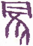
▲ 甲骨文蒙
“蒙亨”之亨，与《屯》之“元亨”同，非谓即蒙即亨，谓蒙昧者能以先觉为师，以启其聪明，斯蒙者亨矣，故谓之亨。“我”指师言，“童蒙”指子弟言，外卦《艮》少男，故有童蒙之象。童蒙而求聪明，莫善于求师，其得师也，宜以至诚请益。《礼》曰，往教者，非礼也，是师无往教之礼，故谓之“非我求童蒙，童蒙求我”。盖弟子之求师，与揲筮求神者同，故谓之“初筮告”。初则其发心也，诚一而不杂，迎其机以告之，其道亨也。若至“再三渎”，则私意起矣，杂而不纯，故不告，即《少仪》所谓“毋渎神”之渎。“不告”，即《诗·小旻》所云“我龟既厌，不我告犹”之义。《说卦传》曰，《艮》为手，自二爻至四爻，互卦有《震》，《震》为草，即以手揲蓍，“初筮”者，其象取此。且六五有颐口之互象，以虚中之孚而问也。“告”者以九二坎之舌，与震之声应之也。“再三”者，三爻四爻为颐口之象，连渎不已，亨贞之道胥失矣。拒以不告，教者之道正，而求者亦不敢不正，故曰“利贞”。
《彖传》曰：山下有险，险而止，蒙。蒙亨，以亨行时中也。匪我求童蒙，童蒙求我，志应也。初筮告，以刚中也。再三渎，渎则不告，渎蒙也。蒙以养正，圣功也。
《屯》之后次以《蒙》，谓山川之位既定，万物繁茂，然犹是蒙昧初启。卦象艮山之下，有坎水之险，水自山上而下，流而为坎。其初为雨为水，不知所自来也。《艮》止也，故“险而止，蒙”；《坎》通也，故“蒙亨，以亨行”。《艮》止则阴气闭结，故暗；《坎》通则阳光透发，故明，有由蒙生明之象。此卦自三爻至五爻而为《坤》，坤为地；自二爻至四爻而为《震》，《震》为崔苇，山下之地生崔苇蒙茸，是《蒙》之象也。
以此卦拟人事，有蒙昧无知之象。人幼而智识未发，谓之“童蒙”；不学而不知道义，谓之“困蒙”。六五“童蒙”柔中，天姿本美，幼而无知，功宜养。六四“困蒙”重柔，气禀本昏，而又不知自勉，利宜发，故谓之“山下有险，险而止，蒙”也。九二以刚中而应六五，六五为主，九二发其蒙。以阳爻为师，阴爻为弟子，故师得二爻之阳，以应弟子之求，谓之“非我求童蒙，童蒙求我，志应也”。弟子得五爻之阴，以求师之教，当致其精以叩之，谓之“初筮告”，若再三请益，渎慢不敬，则不告也。《易》之理如此，盖师教通于神道，凡人于未来之事，不得不问之于神，神之教之，所谓“受命如响”也。故告蒙亦曰“初筮”，言神之与人，犹师之与弟，应以诚求，不应以慢渎，谓之“再三渎，渎则不告，渎蒙也”。是以“困蒙”者，圣人所欲启发，“童蒙”者，圣人所欲养正也。养正之道，非由外加，亦即葆其固有之天真而已。凡人之受生于天也，耳自聪，目自明，父子自有恩，君臣自行义，莫不自具也。人能不失赤子之心，则亲亲长长而天下治平。且“童蒙”者人生之初也，“童蒙”而无所养，他日欲望其圣，不可得也，谓之“蒙以之正，圣功”也。
以此卦拟国家，上卦之政府，有山之性，傲然而在高位，固守而不动，乏奋进之精神，怠于政事，而不眷顾下民，惟以刚重镇压之；下卦之人民，有水之性，犹水之就下，陷于困难之中，苦其生活，忘教育之道，不知国家为何物。故《屯》《蒙》二卦，皆为洪荒之世，人民逸居而无教，争夺以谋生，弱肉强食，知己而不知有人。夫天下之人，当其智识未开，而导之于善，则其教易行，及其嗜欲既炽，天良已汩，则其教难行。政府当此时，宜开导斯民，使之就产业，待其衣食之丰足，而后可教以礼义。得此卦知政府之施政，未得其宜，国家之教育，亦误其方，人心激昂，不保无冒昧之举动也。政府既导之以德，齐之以礼，而下犹不从，不得不出之以政刑，击而除之，亦势所不免也，是以上爻有“击蒙”之象焉。
蒙之时，君子小人，皆不得其位，是非颠倒，邪正混乱，六四一爻，独得其正，亦不容于世，君子为小人所排挤，而不得于世，是国家之蒙也。蒙之世，六五之君，阴柔而顺良，异日听明大启，必将为圣明之君。以尚在幼稚，其德不普于天下，幸有九二之大贤，与之相应，是朝廷之师傅，而负发蒙之重任者也。此爻非以臣求君，而君求臣也，犹太甲之于伊尹，成王之于周公，谓之“非我求童蒙，童蒙求我”也。且以此治国家之蒙，包容蒙昧之民，诱掖扶导之，可以全教育之功，若犹有不奉教益，懒惰放恣，不知俊改，初六所谓“利用刑人”者，戒之深矣。
通观此卦，初六与上九，治蒙之始终也。九二当启发众蒙之任，六五“童蒙”之主，六三则女子之蒙也，六四“困蒙”之下愚者也。故初六蒙昧之民，而不知受教，不勤民业，以致陷于困难，处之刑辟，以惩其非，是以曰“发蒙，利用刑人”。九二为师，具顺良宏涵之德，善容众蒙，训导得直，得继祖先之志，使之守其业，故曰“包蒙吉”，“子克家”。六三，其性奸邪，不从教导，故曰“勿用娶女”。六四有顽固强慢之性。不听师教，自陷困苦，故曰“困蒙，吝”。六五犹是赤子，天性纯正，但智识未开，童稚而居君位，克顺九二师傅之教，遂成达识，此圣人之蒙，所谓聪明睿智，而守之以愚者也，故曰“童蒙，吉”。上九师教不得其正，不以德化，而以刑驱，是为寇也，故曰“击蒙，不利为寇，利御寇”也。
《易》中六爻之义，初爻对上爻，三爻对四爻，其义自易明也。例如此卦初爻用刑，上爻用兵以击之；二爻“包蒙”以应五爻，五爻“童蒙”以从二爻；三爻见二爻而失身，四爻远二爻而失利。诸卦之例，大凡如此。
《大象》曰：山下出泉，蒙。君子以果行育德。
《坎》为水，今不言水而言泉，《易》之例，以水概取险难之义，故避之，取象于泉之始出也。泉之始出于山下，涓涓清澈，不染尘汙，犹童稚之性，自具天良，得勃然发育之势，故取其义，而名之曰“蒙”也。得于心曰德，见于事曰行，山有生育之德，泉有流行之状，山之生物无限，水之行地不避险易，注诸于江，朝宗于海。君子法此象以果决其行，养育其德，所谓义所当为，勇往直前，无因循畏缩之弊；理之得于心者，优柔厌饫，无虚骄急迫之患。彼世人之不得实用者，辄云思而不能行，当因此而反省也。此卦自二至四为《震》，《震》为行，良为果；又自二至上为《颐》，《颐》为养，即育也。
【占】 问战征：《象》曰“山下出泉”，是潜伏之水也，有伏兵之象。君子谓军中之将帅也。“果行育德”，果者果敢也，育者蓄养也，谓当蓄其锐势，而果决以进也。
○ 问营商：玩《象》辞，想是开凿矿山生意。当果决从事，吉。
○ 问功名：是士者素抱德行，伏处深山之象。曰“山下出泉”，终将出而用世也。
○ 问家宅：知是宅坐向坎艮。曰“山下”，必近山也；曰“出泉”，必有泉流出其下也。君子居之，其宅必吉。
○ 问婚嫁：坎辰在子，上值女，《圣冷符》曰，“须女者主嫁娶”。《艮》下《兑》上为《咸》，二气相感，故曰“取女吉”。“山下出泉，蒙”，是婚姻之始也。
○ 问疾病：艮止坎险，病势必热邪渐陷于内，待初爻发蒙，邪气外发，可保无虞。
○ 问六甲：生男。
初六：发蒙，利用刑人，用说桎梏，以往吝。
《象传》曰：利用刑人，以正法也。
凡人而不喻道理，不通事情者，皆谓之蒙，“发蒙”者，启发蒙昧，使之明晓也。“刑”者，所以治违教犯法之人。“桎梏”刑具，在足曰桎，在手曰梏。“说”，脱也。初爻阴柔而失中正，居六爻之最下，陷坎险之底，如入幽暗之地，不见明光，是爻之象也。“发蒙”者，非不欲诱掖之，劝勉之，无如教之不从，则不得不以刑罚齐之，一经悔悟，便脱刑具，不敢或猛，亦足见发蒙者之苦心也，故曰“利用刑人，用说桎梏”。古圣人之治民也，教化以导其俗，刑罚以齐其众，圣人虽尚德不尚刑，而亦未尝偏废也。按，艮为手，互卦《震》足，手足交于坎险，有桎梏之象。又《坎》通也，《艮》止也，如能通达，遂即罢止，有脱之象也。若执法过严，下既改过，上复苛责，不特阻其自新之路，或激而成变，故谓之“以往吝”也。盖治民之蒙，不可太宽，亦不可太急，戒之以刑，改则脱之，所谓“恩威并行，宽猛相济”者，发蒙之道，斯得之矣。用刑固非圣人本意，然国家设法，所以齐不齐以致其齐也，若使有罪者皆脱网而去，则法将安用？顾刑法所主，宜大公至正，罚一人而使千万人知畏者是也，故曰“利用刑人，以正法也”。此爻变则为《损》，《损》之初九曰：“已事遄往，无咎。酌损之”。其斟酌适宜之义可见也。
【占】 问战征：爻曰“发蒙”，是为伐暴讨罪之师，如大禹之征有苗，格则罢师而还，故曰“以正法也”。
○ 问营商：初居内卦之始，是必初次谋办也。《坎》为难，爻曰“发蒙”，曰“用刑”，知营商必有阻碍，殆将兴讼，得直理直即止，若欲穷究，恐有害也，故曰“往吝”。
○ 问功名：欲往求荣，恐反受辱，宜自休止。
○ 问嫁娶：初居始位，爻曰“发蒙”，必在少年订婚。既多事变，罢婚可也。
○ 问六甲：初爻阴居阴位，生女，又恐生产有难。
【例】 余亲族田中平八氏来，以其弟某放荡，欲使之悔悟，将以某托余家，筮得《蒙》之《损》。
断曰：《蒙》之卦象，山为水气所蒸，朦陇不明，故谓之《蒙》，在人为邪欲所蔽，以致事理不明也。某之为人，才智胆力，悉类其父，但年少失教，竟习纨绔，不知艰难，故浪费货财，好与匪僻为伍。今使暂居余家，当先谕以处世之道，禁止他出，使之悔悟前非，是亦“发蒙，利用刑人”之义也。至其兄虽托于余，其母未免溺爱，恐有怨余教诲过严者，谚曰“人莫知其子之恶”，此之谓也。
既而果如此占，教之一年，因其伶俐之性质，遂生后悔，可望后来之成人也。
九二：包蒙吉。纳妇吉。子克家。
《象传》曰：子克家，刚柔接也。
“包”者，包容之义，“包蒙”者，包容众《蒙》而为之主也。“纳妇”者，受众阴而为妇也。“包蒙”，言其量之能容；“纳妇”，言其志之相得；“子克家”，言其居下而能任事，故曰“吉”。二爻以阳居阴，具刚明之才，中和之德，当启蒙之任，能以宽严适宜，训导有方，可为君蒙之师也。《蒙》一卦，只有两个阳爻，余爻皆阴。上九之阳过刚，至于“击蒙”，惟九二之阳得中，故能“包蒙”。且二爻之位，臣也，子也，在臣则与六五柔中之君，阴阳相应，斯内为同僚所悦服，外为众人所归向，虽妇人之性柔暗难晓，能以柔纳之，自得亲睦，故谓之“包蒙吉，纳妇吉”也。在子则能事六五之父，统众阴之子弟，以修齐家道，故曰“子克家”。夫子能治家，则家道日隆，父之信任专矣；臣能敷教，则民德日新，君之信任专矣。《象》曰“刚柔接也”，即所谓上下合德也。《象传》之意，以二为臣，则以五为君，以二为子，则以五为父，事虽异，义则一也。刚指九二，柔指六五，九二与六五，阴阳相应，以刚中之子，继柔中之父，能治家道，谓之“子克家，刚柔接也”。以阳刚爱阴柔，故有“纳妇”之象；居下位而能任上事，故有“子克家”之象。互卦为《震》，《震》为长子，有主器成家之象。
【占】 问战征：二爻以阳居阴，爻曰“包蒙”，有包括群阴之象。《象》曰“刚柔接也”，刚柔者两军也，“接”，接战也，“克家”，犹言克敌也。占例妇为财，子为福，既克敌军，又纳其财，并受其福，大吉。
○ 问营商：二上以两阳包三阴，一阳在内，一阳在外，有包罗财物，出贩外地之象，故曰“包蒙吉”。“纳妇”者，是必旅居纳妇也，有妇复有子。‘克家”者，必其子能继父业也。
○ 问功名：想不在其身，而在其子也，故曰“子克家”。
○ 问家宅：曰“包蒙”，以《艮》包《坎》，是必山环水抱之地。曰“纳妇”，曰“克家”，是宅必有佳妇佳儿，克振家业，吉。
○ 问婚姻：玩爻辞，有二吉，明言有妇有子，吉莫大焉。
○ 问六甲：生男，主富贵。
【例】 友人药师寺氏来告曰，余自少努力，业务励精之久，渐兴家产，然不幸无子，因养亲族之子，以家产托之。故亲族中皆欲为吾子之想，务辅助之，使之各就产业，各营一家。无如彼多不知处世之苦，不思余之家产，出于焦心竭力之余，洵非容易。而一族中互怀不和，颇生嫉妒，余之所言，亦皆阳顺之而阴背之，恐余之殁后，必至亲族敌视，余心所不安也。处之如何而可？为请一筮。筮得《蒙》之《剥》。
断曰：人当幼稚之时，首宜求师就学，教以道义，启其聪明，长则自能兴事立业，克成家道。若弃而不教，不得诿其咎于子弟，谚云“养不教，父之过，教不严，师之惰”，可为戒矣。然教之道，有严有宽，严则致怨，不如宽而有恩，故曰“包蒙吉”。且此卦上互《坤》，《坤》母也，下互《震》，《震》子也，是教其震子，并坤母，而亦容纳之，是以吉也。迨其子长成，克其家，斯不负教者之苦心矣。在足下智识活泼，勉强起家，能分财以抚育亲族，使之各居其业，继承祖先，其情可谓挚矣。而欲使亲族，咸知奋勉，一如足下之经营，其望未免过奢也。亲族中既无足下之才，又无足下之运，殊难相强。今占此爻，明示“包蒙”二字，盖劝足下惟以包容为量，不须苛责。人之至亲，莫如父子兄弟，往往父子兄弟之间，性情不同。父不能使其子皆为肖子；兄不能使其弟皆为悌弟，况于亲族者乎？惟一一以包容待之，斯明者必能知恩，而不明者亦将感而自化，斯彼此可以无忧矣。
六三：勿用娶 ［30］ 女，见金夫，不有躬，无攸利。
《象传》曰：勿用取女，行不顺也。
“金夫”，犹曰丈夫也，金者，阳爻之称，取刚坚之义，指九二。九二包君蒙，故有富之象。曰“金夫”者，为别上九正应之夫。三爻阴柔而不中正，暗昧而居坎险之极，不能守贞而待时，故求而不止，欲而不择，其行偏僻，其事暧昧，见九二为君蒙所归，得时之盛，因舍上九正应之夫，欲从近比之九二。操行不正，不能复持其身，娶此多欲之女，必无所利也，故曰“勿用娶女，见金夫，不有躬，无攸利”。艮山止而不动，坎水流而不止，可见“不有躬”之象。又《坎》为盗，此爻变则为巽，《巽》为近利，见人之有金，破节败名，不复知有躬。此爻又变而为《蛊》，以《巽》之长女，从艮之少男，惑乱之象。爻辞虽指女与夫言，亦喻辞耳，凡阴柔多欲者，皆可类推。九二有刚中之德，必不比六三而为不义之行，惟六三以不中正，欲自比九二，故系辞于六三，以见罪在六三也。《象传》之意，谓阳倡而阴和，男行而女随，顺也。以女求男，于理已悖，况舍正应之夫，而从比近之金夫乎？故曰“勿用娶女，行不顺也”。
【占】 问战征：爻曰“勿用娶女”，女阴象，凡占书以女爻为财，金亦财也，言行军宜散财以容众，不宜敛财以取怨。如掳掠财物，必致师败身亡，曰“勿用”，戒之深矣。
○ 问营商：六三以阴居阳，阴内阳外，是必行商出外也。行商最忌贪色，男恋其色，女图其财，一入骗局，小则破财，大则伤身。《象》曰“行不顺也”，顺与慎音同义通，可不慎哉！
○ 问家宅：玩爻辞，所谓“牝鸡司晨，惟家之索”，是宜深戒。
○ 问功名：妇道通于臣道，见财忘义，必致声名破败，为女不贞，即为臣不忠也。
○ 问六甲：生男。
【例】 某贵显当维新前脱藩，而与诸藩浪士交，共倡大义，奔驰东西，偶归乡里，遂为藩吏所忌。亲族多疏散，以致妻女亦不善遇，正如苏秦归来，裘敞金尽，妻不下机，嫂不为炊时也。既而维新之世，仕升显职，设邸东京，招致家族，彼糟糠之妻，性质朴野，容貌动止，多不适意。加以前日疏己之嫌，遂去之，外押一妇，情好最密，谋纳为妻。一日来谓曰：予将娶妻，请占其良否？筮得《蒙》之《蛊》。
断曰：《蒙》者，物之蒙昧而未发达之称，为幼稚之义。然非专指童蒙，凡人无道义之教者，总谓之“蒙”。今足下欲娶情妇，占得此爻，爻辞曰“见金夫，不有躬”此女必有淫行，想是艺妓之女。“金夫”者，谓将以金赎其躬矣。恐品格不正，难谐永好。此女以一时之举动，投足下之意，足下将欲娶之，若娶此女，后来恐别生葛藤，系累不绝，其有悔必也。足下阀阅家风，素守清白，如娶艺妓，必不适堂上之意，而彼妇暂时忍耐，未必能永守清规，足下即不去之，彼亦将下堂求去也。
某不用余言，纳之，后果如此占。
六四：困蒙，吝。
《象传》曰：困蒙之吝，独远实也。
四爻以阴居阴，其位不中，如艮下山足，牢不可移，谓顽固而不知迁善也。近六五之君，才拙而任重，无贤者以辅导，故不堪困苦，而终为鄙吝之行，所谓“困而不学，民斯为下”者也。盖《艮》之少男，柔弱不中，昏蒙未启，与群宵为伍，是自困也。况上有《艮》山而不能进，下有坎险而不能退，应比皆阴，无刚明之亲援，凡亲我者皆阴柔不正之徒，则聪明无自发，昏昧无由开，是以其为事也，无不困也，谓之“困蒙，吝”。窒而不通曰困，纳而不出曰吝，困犹病者之忌医，吝犹过者之讳师，如此者，教之虽以其道，不能从也，其吝甚矣。《象传》之意，此卦初爻比九二，三爻应上九而比九二，五爻应九二而比上九，各有阳刚之应比，得贤师良友之辅导，独此爻陷三阴之中，而不得刚实之师友，故曰“困蒙之吝，独远实也”。独者，无助之谓，阳以生为主，故称实也；“远实”者，自我远道之义也。人而远道，孟子所谓自弃者。
【占】 问战征：行军宜深入显出，曰“困蒙”，是入阴险之地，而不能出也，故困。足以济困者，在初爻之阳，六四距初间隔二爻，阳为实，故“远实”。是知救兵在远，不能及也。凶。
○ 问营商：经商之道，宜亨不宜困，宜通不宜吝。“实”资本也，“远实”则伤其资矣。困蒙之吝，其道穷矣。
○ 问时运：“蒙”，暗昧也，“困”，厄穷也，蒙而困，其终困矣。
○ 问家宅：据爻辞观之，家业困苦，宅地亦幽僻，《象》曰“独远实也”，是必孤村而乏邻居也。
○ 问六甲：生女。是女必少兄弟，故曰独。
【例】 乌尾得庵居士，余素所敬信也。明治二十三年十二月，与古庄嘉门氏等数人访余，曰：明年以国会开设之期，吾辈立一主义，欲有所倡导，请占其气运如何？筮得《蒙》之《未济》。
断曰：此卦山前水气蒸发，朦胧不明之象。《易》有《屯》、《困》、《蹇》、《坎》四难卦，其当之者，不能容易脱险，如《蒙》则否，虽陷坎险，由其爻之所居，有智识者，自得免险也。今以四爻观之，承乘应皆阴柔，无助吾之力，在人则无贤师良友，不得启发其蒙之时也，故曰“困蒙，吝”。君学通古今，才兼文武，其所欲倡导之主义，为天下之公道，加之以卓绝之识见，豪迈之胆力，故以理论之，如天下无敌者。然得蒙卦则天下之人，总如童蒙，不识是非邪正，犹暗夜不辨鸟之雌雄，是以君虽说得中正道理，终不能开发其悟。“困蒙”者，是无其效也，然过此一年，至五爻“童蒙吉”之时，下有九二阳爻之应，得以辅导，自可大遂其志也。
后果如此占。
【例】 明治二十七年冬至，占二十八年贵族院院议，筮得《蒙》之《未济》。
断曰：此卦山下有水之象，水自山上流下，前途不知所之。人亦如此，故虽贤哲之士，得此卦则固有之智识，为物所蔽，为言行蒙昧之时也。今以贵族院见之，若不觉自己之蒙昧，而焦虑国事，犹瞽盲之人，不见全象，而评其形状，谓之“困蒙之吝，独远实也”。为明年院议不举之占也。
六五：童蒙，吉。
《象传》曰：童蒙之吉，顺以巽也。
五爻以阴居阳，柔顺谦虚，下应九二；艮之少男，得柔中之德，而居尊位，幼主临下之象。九二之贤臣，有刚中之德，能辅佐六五之君，在幼主自知年少，委政贤相，无为而治，如成王之于周公是也。人主能不挟威权，舍己从人，任贤不二，如“童蒙”之得贤师，专心听受，故曰“童蒙，吉”。《象传》之意，以人主之尊，生长富贵之中，不知处世之艰苦，往往疏忠言，远耆德，以致败乱国家，在所不免。今六五能顺九二，故曰“童蒙之吉，顺以巽也”。此爻互卦为《坤》，《坤》为顺，变则为巽，顺《巽》二字，出于此。
《易》中以九居五，以六居二者，虽当其位，其辞多艰；以六居五，以九居二者，虽不当其位，其辞多吉。盖君贵以刚健为体，在虚中为用，臣贵以柔顺为体，以刚中为用，斯上下交而其志同也。是卦之通例也。
【占】 问战征：五互《坤》，辰在未，值井，弧矢九星在井东南，主伐叛。又东为子孙星，曰“童蒙”，是帅子弟以从军也，故吉。
○ 问营商：五为卦主，爻曰“童蒙”，是必店主尚在童年。五应二，正义云“委物以能”，谓委付事物于有能力之人，是委二也。盖五爻店主，自知年少，顺从二爻，以为经纪，故曰“童蒙吉”。
○ 问功名：年在“童蒙”，功未成，名未就，惟能顺听二爻师教，则成就未可量也，故曰“吉”。
○ 问婚姻：《蒙》上体艮，艮为少男，是以幼年定姻也，故曰“童蒙吉”。
○ 问六甲：生男。
【例】 友人福原实君，一日来访，告以荣转冲绳县知事，且请占前途吉凶。筮得蒙之涣。
断曰：此卦事物之理未明，蒙昧幼稚之象，故谓之《蒙》。按此卦以阳爻为师，以阴爻为弟子，今六五阴而应阳，以位得中正，犹童蒙之天禀本美，绝无私欲，故吉。足下之性质温厚沉实，余之所知也，赴任之后，接待僚属，宜磊磊落落，不挟一私，豁达大度，虚怀听受，自然上下同心，彼此相待，公私皆有益也。以《蒙》卦见之，足下初莅其任，风俗人情，未免蒙昧无知，择属官中通达事务者委任之，藉彼之明，启我之蒙，是为紧要。此占有实与足下之性质符合者，足下能体认事理，而从事县务，后必奏实功也。是所以曰“童蒙吉”也。
【例】 明治二十七年冬至，占明年众议院之形势，筮得《蒙》之涣。
断曰：《蒙》者山下有水之象，在人为智识不明，不知事理之方向也。先是众议院创议，节省政费，每年减之，不详度政府之动为，不留意各国之形势。此议纷起，政府颇以财费不足为忧，后忽有征清之敕，于是众议员辈，皆作青天霹雳之想，在广岛集议，不终日而决公债一亿万元募集之议，是谓“发蒙”也。蒙也者，非谓愚也，幼而智识未开之谓，故曰“童蒙”今得五爻，有“童蒙”受教，启迪聪明之意，故曰“童蒙古”为明年院议之占也。
上九：击蒙。不利为寇，利御寇。
《象传》曰：利用御寇，上下顺也。
“击蒙”者，谓不能“包蒙”，面杖作教刑，怒而出之以击也。此卦四阴二阳，四阴皆蒙昧，二阳均有刚明之才德，足以击蒙也。九二有刚中之德，训导中节，宽严适宜，其于蒙能包之，所谓“董之用劝”；此爻以阳居阴，刚极失中，其于蒙也，乃击之，所谓“戒之用威”。此击字，比“包蒙”之包，“发蒙”之发，凌厉严刻，不言可知矣。然“重蒙”而不从教，初发之而不知感，继包之而不知悟，教之术亦几穷矣，上九亦出于势之不得已也。至击之太甚，未免过于凶暴，是击之者，反为寇也，故曰“不利为寇”。然因其蒙顽不灵，一味优容而不惕之以威，将恐蒙极而流为寇，是宽之适以害之。击之者，治蒙虽严，正所以御其为寇也，故曰“利御寇”也。曰“为寇”者，寇在我也；曰“御寇”者，寇在彼也。《艮》为手，有击之象；《坎》为盗，有寇之象；《艮》止于上，有御寇之象。上九虽应于三，三之行不顺，是寇也，非婚媾也，故利御之也。此爻变则为《师》，《师》又有击之象，乃寇之象。《象传》之意，此卦有刚明之德，比六五而辅翼之，应六三而训导之，且自上九至六三，其应比之间，无有一阳之障碍，是为柔顺之极，故曰“利用御寇，上下顺也”。
【占】 问战征：上辰在戌，上值奎，奎主库兵，禁不违时，故曰“利御寇”。
○ 问营商：商业一道，全在利用，又贵顺取。逆取为寇，顺取则为御寇。“上下”者，卖买两家，卖买和洽，则上下顺矣。吉。
○ 问婚姻：“击蒙”，马郑作“系蒙”，恰合月下老人红丝系足之意。《屯》卦两言“匪寇婚媾”，是佳偶为婚，怨偶为仇之谓也。利用御寇，必为佳偶。妇道贵顺，《象》曰“上下顺也”，是必家室和平也。吉。
○ 问六甲：生男。此男童年，必宜严教。
【例】 明治二十七年冬至，占二十八年我国与英国交际，筮得《蒙》之《师》。
断曰：此卦山下有霭，朦陇不可远望之象，故名此卦曰《蒙》。人得此卦，为彼我之情不通，而不知所为也，国家之交际，亦犹是耳。夫智识未明者，谓之“重蒙”，此卦各爻有教蒙之义。阳爻为师，阴爻为弟子，上爻阳而失中，持之过激，未免薄于情义，甚至反招其怨，故谓之“击蒙，不利为寇，利御寇”。今得此卦，以我国拟纯良之弟子，以英国为傲慢之师，当我国与清国交战得胜，彼因之起妒忌之念。上爻幸居无位之地，故不须劳心，即不以师视之亦可，惟敬而远之，温言宽容，以敦交谊。彼虽有干涉之举，婉辞谢之，不可结寇也，谓之“不利为寇，利御寇”也。
05 水天需
“需 ［31］ ”字，古文作 ，本从天，非而字，即下卦《乾》天，上卦《坎》云之象形也。《大象》曰：“云上于天，需”是也。音须，从雨得声，此字训待之义。详《彖传》下。
需：有孚 ［32］ ，光亨，贞吉，利涉大川。
▲ 金文需
九五以阳陷阴中，待三阳之进；三阳亦欲进而未进，是以得同心之孚。虽在少时阴暗未消，而乾阳方升，自能光显亨通，而安贞有吉也。险莫如大川，上下相孚，阳长阴衰，往而涉之，必有利，惟在需其时而已。《坎》《乾》两卦，其中实，故曰“孚”；互卦《离》，为光为舟；坎水为川，以乾健临之，故“利涉”也。
《彖传》曰：需，须也，险在前也。刚健而不陷，其义不困穷矣。需有孚，光亨，贞吉，位乎天位，以正中也。利涉大川，往有功也。
此卦水气蒸发为云，云升于天，则大雨之来可立待也，故曰《需》。又《乾》为老父在内，《坎》为中男在外，倚阁之望，待子归来；又《乾》为进，《坎》为川，欲进而遭大水，必待水退而进，皆“需”之义也。凡需之为象不一，而莫急于饮食，外卦《坎》为饮食，而互《兑》口，是以九五日“需于酒食”，《象传》曰：“需，君子以饮食宴乐。”盖万物必需雨泽而得生，人则需饮食而养生，是《需》之义也。
以此拟人事，内卦为我，具刚健才力以求进也，外卦为彼，设危险之策略以阻我也。进则必陷于险，未可妄动，惟宜需时，或需彼之奸计败露，或需我之气运亨通，斯进而谋事，方无险阻之患矣。然世人往往虚浮轻躁，不待时机，而任气直前，未有不身陷祸患者也。此卦下卦为《乾》，惟“刚健而不陷”，故“其义不困穷”也。至九五之时，危险解释，得志尤易，自可成就大事，谓之“需，有孚，光亨，贞吉，位乎天位，以正中也，利涉大川，往有功也”。凡《易》中曰“光”，曰“光大”者，皆谓其光明正大，能奏成功也。六十四卦中，曰“利涉大川”者凡七，《需》居其首。自古创造舟揖，以济涉川，然时或风涛凶恶，多以不能忍耐，致遭覆溺，《需》卦故首戒之。惟其能需，是以“利涉大川”也。谚曰“急行者要迂回”，此之谓也。大凡人之为事，皆不当顾虑目前，与其速进而有悔，何如后时而圆功？大而求功名，以匡济国政，小而谋财产，以振兴家业，无不当待时而动也，故曰“往有功也”。
以此卦拟国家，下卦《乾》为人民，挟刚健之才力，欲进而参与政事；上卦《坎》为政府，禁下卦人民之暴进，示以法律。人民恐陷于危险，而不敢进，必待法网稍宽，斯可谋进矣。上卦政府，知下民有待泽之意，怜其陷于困难，布施雨泽，以苏民生，或减其租税，或谋其衣食，或开垦荒田，以资耕种，或赈发米粟，以济凶歉，故《系辞》曰：“需者，饮食之道也。”下卦之人民，具健行之德，非不思进谋国是，因时运未通，不得不隐居求志。是上下共守需道，庶几可得幸福，谓之“需，有孚，光亨，贞吉，利涉大川”也。
通观此卦，初九从二阳之后，有进行之志，虑遇险而难为，未敢轻进。九二，为三阳之主，本可进行，但以坎险在前，恐进而有咎，是以从容待时，即所谓“君子居《易》以俟命”也。九三，重刚而不中，独进而涉坎险，以致酿灾，惟能敬慎，尚可不败。六四，位邻九五，虽能尽其忠诚，而乏匡济之才，为下三阳所疑，未免受伤，仅得以身免而已。九五，秉刚健中正之德，以待天命，是能尽需之道也，故曰吉。上六，当爻之终，险陷已极，无复可需，虽有非意之来，“敬之终吉”。乃知需之为时，能含忍守敬，皆可免祸。需之时义大矣哉！
《象》曰：云上于天，需。君子以饮食宴乐。
《坎》云在上，《乾》天在下，阴阳之气未交，而不成雨。盖云在天上，虽有雨兆，或散而复晴，犹之君子养其才德，虽欲出而济世，而风云未会，不得施其膏泽。若怨天尤人，梯荣干进，是小人不知时命者之所为也。所谓“饮食”者，非侈意醉饱之谓，如孔子之饭蔬饮水，颜子之一簟一瓢也。所谓“宴乐”者，非溺情逸娱之谓，如考磐之足以悲歌，卫门之可以栖迟是也。以其能素位而行，不愿乎外，故曰“饮食宴乐”。余谓我国商人，以当地经营不合，出游外国，劳心劳力，自谋衣食，及一旦报内地凶歉，在外洋贩运米谷，赈济饥馑，藉以获利者，亦需之道也。
【占】 问战征：需，待也，云在天上，阴阳未交，未可战也。《乾》为君子，又为武人，属主帅言。《坎》为酒，故曰“饮食宴乐”，盖言行军先备军粮也。
○ 问营商：玩爻辞，想是贩运粮食，或开设酒馆之业也。曰“云上于天”，是云在上而雨未下，想是资本未集也，故曰《需》。
○ 问功名：是风云未际其会，尚有待也。
○ 问疾病：宜以饮食调剂，安乐自遣，遣久自愈。
○ 问六甲：生男。
初九：需于郊，利用恒，无咎。
《象传》曰：需于郊，不犯难行也。利用恒，无咎，未失常也。
“郊”者，偏鄙之地；《坎》者，水也，险也。“需于郊”者，前途为坎水所阻，必待川减退，故需。又《乾》为金，如旅客怀金，中途被水，以致滞留者。以《乾》三爻，对外卦之《坎》，各以所居远近系辞，曰“郊”，曰“沙”，曰“泥”，取渐次近险之象。此爻去水最远，不敢进而冒险，故曰“需于郊”，所谓“危邦不入，乱邦不居”之义也。躬耕郊野，无求于世，历久而不改其节，故曰“利用恒”。“恒”，不变动之义，“用恒”者，始终不变也。初九之患，相去尚远，然思患预防，恒守其贞，可以免祸矣，故曰“无咎”。此爻体《乾》，《乾》者刚健，其道以上行为常，且以初九与六四正应，苟急其应，则必有冒险之虞。今僻处远郊，以待时机，是以《象传》曰：“不犯难行也。”
【占】 问战征：爻曰“需于郊”，是必屯营于郊也。《坎》为险，为难，是必前进有险，故《象》曰“不犯难行也”。初为卦之始，知初次出军；曰“恒”，曰“需”，知宜久待。恒而后进，必无咎也。
○ 问功名：卦属初爻，知为初出求名也。郊为草莽之地，“需于郊”。谓宜退居于野也。恒久也，“利用恒”，谓宜久待而后可利见也。《象》曰“不犯难行也”，谓其不涉于难；“未失常也”，谓其能守其恒，故无咎。
○ 问营商：行商之道，以恒久为利。“需于郊”，知必前途有险，暂以货物堆积于郊，以待时而行也。《象》曰“未失常也”，知货物无损失也。
○ 问疾病：“郊”者田野空旷之处，谓宜就野外，幽居以养病也。“无咎”，即病无害之谓也。
○ 问六甲：生男。
【例】 友人左右田金作氏来告曰：有一会社，咸云利益甚多，将谋入社，请占前途吉凶。筮得《需》之《井》。
断曰：此卦内卦《乾》，《乾》纯阳属金，外卦《坎》，《坎》属水，有去高就下之性。且《坎》为险，谓彼设危险之计，募株主之金，将使入者皆陷之于险。然能察彼社之举动，审彼社之虚实，待其险陷既平，而后入之，是《需》之作用也。《彖传》曰，“需，须也，险在前也，刚健而不陷”也。初爻之辞曰“需于郊”，郊者，郊外之地，幸去危险尚远，足下不被其所诱，不陷于奸策，持重不变，可谓能守其常也。至五月之后，该社必有祸难，斯投机者皆退，株券亦当下落，此时买株券而入社，其后此社运必当盛大。爻象如此，是宜暂待时机也。
后果如所占。
九二：需于沙，小有言，终吉。
《彖传》曰：需于沙，衍在中也，虽小有言，以吉终也。
“沙”者，近水之地，比九三之“泥”尚远，《比》初爻之“郊”近矣。“小有言”者，谓有言论之争。凡《易》之辞，患难之小者曰“小有言”。二爻进初九一等，渐近于险，有“需于沙”之象。虽有刚阳之才，足以济险，以上无君长之应，中无同僚之助，惟居柔守中，宽裕自处，是需之善也。然以去险渐近，虽未至大害，已有小言矣，故曰“小有言”。互卦为《兑》，《兑》者口也，悦言之象，《坎》者舌也，怒言之象，谓彼出怒言，而我能和解之，故曰“终吉”。“衍”，宽绰也，谓胸中宽衍，又能忍耐，终得济焉。故《象传》曰：“需于沙，衍在中也，虽小有言，以吉终也。”凡爻辞变而之成曰终，为原始以要终。“终吉”者，前凶而后吉也。此爻变则为《既济》，其爻辞曰，“妇丧其茀，勿逐，七日得”，亦可以见终吉之义也。
【占】 问战征：《坎》为隐伏，玩爻象，谓宜伏兵于沙漠之地。或因间谍致误，小有挫折，终必吉也。
○ 问营商；二爻辰在寅，上值天江四星，石氏云，“天江明动，大水不具，津梁不通”，因之货物不能通运，故“需于沙”，沙，水岸也。虽小有口舌，无害商业，故“终吉”。
○ 问时运：沙从水从少，是少有水之处，不能通舟揖也。“需于沙”，犹言时运之不能也。二爻辰在寅，又上值箕，《诗纬》云：“箕为天口，主出气”，小有言，是谗言也。然需以待之，故“终吉”。
○ 问六甲：生男。
【例】 友人永井泰次郎氏，贷与金于北海道商人，某逾期未返，发信督促，未得回报，因欲自赴彼地，请占一卦。筮得《需》之《既济》。
断曰：《需》者，坐而待时之卦也，不宜自进而赴彼地。于《彖》曰“有孚”，见之知彼非故意延缓，因商业上有意外纷纭，为之奔走不遑也，谓之“小有言”。今后四月，即至第五爻之时，彼必可返还其金，谓之“终吉”
永井氏守此占，而不行，后至四月，果如所占。
九三：需于泥，致寇至。
《象传》曰：需于泥，灾在外也。自我致寇，敬慎不败也。
“泥”者，水际湿土，即水际之地也；“寇”者，《坎》之象，灾之大也。初九之郊险尚远，九二之沙险渐近，九三之泥，身已接险，祸在目前。此爻居《乾》卦之极，过刚而不中，故当险难在前，复不介意，恃己刚强，见上位之应我，不辨时机，不察事情，一意妄进，将以救在前之险，故非坎险来迫人，人自进而逼险，譬如水不溺人，人自冒险狎水，以致其溺，故曰“致寇”也。然当此时，能操谨思持重之心，戒轻举妄动之失，及早悔悟，犹得免于灾也。《象传》曰“灾在外也”者，坎险在外卦之义。又外者，谓意外之事也。我欲救彼而却为彼所害，九三之意外也。且非灾之来害我，自我去招致其灾，故曰“自我致寇”。若能敬慎自持，量宜而进，虽坎险围绕，亦不能如我何，我自得以不败，故曰“敬慎不败也”。凡争名者毁，争利者夺，是皆非寇之罪，自招之孽也。此爻变则为《节》，其辞曰，“不节若，则嗟若，无咎”，可以见敬慎之义矣。又如九三、六四虽阴阳相比，不相为助，而却相为害，《易》中此类之比，谓之害比。
【占】 问战征：九三居内卦之终，逼近外卦，《坎》为寇，亦为灾，故曰“灾在外也”。有敌来寇者，谓寇至，有我自去招敌者，谓“致寇至。”必谨慎自持，先立于不败之地也。
○ 问营商：“泥”拘泥也。行商之业，宜流动，不宜拘泥，若拘泥不化，内有疑忌，遂致外生变端。慢藏海盗，即以致寇也，可不谨慎哉！
○ 问功名：爻曰“需于泥”，泥水际污泥也，需于此，则必将下流而难期上达矣。其不败也亦仅免焉。
○ 问婚姻：《易》以寇与婚媾并言，谓寇则必非婚媾，是怨偶也。“需于泥”，不进之象，于婚事则必不成。
○ 问六甲：生男。
【例】 佃岛在监之时，占西村三濑及余三人之身事。
余之谪佃岛也，与同囚西村胜藏、三赖周藏，最亲密。一日二人叹曰：我侪有一大难事，须相与计划之。余问故，曰：昔役所有大会议，吾二人为所驱使，事繁议长，入夜渐散，因窃叩所议何事。或曰狱官等议，谓方今菜油价低，菜种价贵，购贵价菜种，制低价菜油，徒劳役徒，反遭损失。今后废制油之业，用此役徒，从事于横须贺船渠之造筑。役徒中有嘉右卫门者，长于指挥，委以指挥之任；胜藏者，长于计算，委以计算之任；周三者，善医，使以诊视役徒之病。亦今日之良策也。且熟见此三人，皆有一癖，非可以寻常视之，他日放免，恐生他事，再罹刑狱，使渠等罪上累罪。是亦可悯，不如长拘留驰使工事，免生他祸，是亦仁术也。会议如此，盖狱官等为此议者，凡幕府之例规，官所收入，以其半额称役得，吏员取之半额贮蓄之。此事若行，吾三人之灾害非浅，子请筮之。乃先为胜藏占之，遇《需》之《节》。
断曰：需，须也，坎险在前，乾健临之，将涉水而不轻进之卦也，辞曰“需于泥，致寇至”。九三居内卦之终，最近外卦之坎险，可谓危地也，《象传》解之曰：“灾在外也”。按此灾非横须贺之事，曰“在外”者，必别致之者。吾子有远虑，非犯法而脱役，亦必不复犯他罪者。然则吾子之灾，其或病乎？若有罹病，吾子须自爱，《象传》曰：“自我致寇，敬慎不败也。”
次占周三，遇《鼎》之《旅》。
爻辞曰：“鼎有实。我仇有疾，有我能即。吉。”
断曰：吉也。《鼎》者，重器而不可容易动者也，况其中有实乎？且风变而为山，山者止而不迁者也，可知其身依然不动。又欲动我者，即“我仇”也，今日“我仇有疾，不我能即”，“有疾”者，无力，其不能动我可知也。横须贺之事，不足忧也。
终乃占余，遇《艮》之《渐》。
爻辞曰：“艮其辅，言有序，悔亡。”
余惑之，熟考者久之，既而乃得其悟曰，辅者，口颊也，“艮其辅”者，不妄言也。其下曰“言有序，悔亡”，余他日必有得言语之秩序，为在上者所赏识，可得免罪也。
断虽如是，当时尚不知后日应验如何。后胜藏果罹脚疾，殆陷危笃，得周三敬慎看护而愈。周三由当任吏员免职，横须贺之事遂废，皆得赦免。余为占吏员和田十一郎氏身事，以事能中理，许期半而赦。
【例】 明治二十七年五月，朝鲜国东学党乱起，我国与清国有《天津条约》，六月六日，我国派军前往，至二十三日，朝鲜兵与我兵争斗。其事专依清国政府之命，于是有与清国开战之兆。筮得《需》之《节》。
断曰：此卦有水在天上之象，黑云在天，势将降雨，待时而举，必能奏功也。以内卦为我，乘阳健而将进，外卦为清国，设坎险而陷我，惟我刚健不陷，故不至困穷，待五爻之时，可以进师，谓之“需，有孚，光亨，贞吉，位乎天位，以正中也”。“天位”指九五之时；“利涉大川”者，谓海军必能获利；“往有功也”者，谓陆军必得成功。盖此卦五爻六爻阴阳各得其位，谓得天时之象；三爻以阳就阴，四爻以阴后阳，谓得人和之象；惟二爻阳在阴位，于地利大有所缺。今占得三爻，是本年六月，已将向危险之地，谓之“需于泥”，《传》曰“自我致寇，敬慎不败也。”“需于泥”者，谓进退不得如意；“自我致寇”者，谓自我进入也。四爻当七月，辞曰“需于血，出自穴”，此爻居三与五之间，有火，谓穴出火而见血，当预防地雷。按凡四十日间，须择屯营要地，使敌不能袭我，八月上旬，持五爻之气运，一举可以奏大功也。
反是而观，此卦于清国气运，“将转入《需》之下卦为《讼》。如左：
《彖辞》曰：“讼：有孚，窒惕，中吉，终凶。利见大人，不利涉大川。”
《彖传》曰：“讼，上刚下险，险而健，讼。讼有孚，窒惕，中吉，刚来而得中也；终凶，讼不可成也。利见大人，尚中正也；不利涉大川，入于渊也。”
此卦上卦天为日本，下卦水为清国，天气上腾，水流陷下，以卦象见之。天者刚健而威，水者陷下而危险困难。然困而思奋，欲藉公言而争是，是以得占《讼》卦也。清国遭此逆运，计谋筹策悉不达，谓之“讼，有孚窒”。天运如此，故曰“惕中吉，终凶”。且讼之时，非成事之时，故曰“讼不可成也”。但至五爻之时，从大人之意而处事则可，故曰“利见大人”。又于此卦用海军则大败，有军舰覆没之患，故曰“不利涉大川，入于渊也”。
呈此占于大本营某贵显，是月二十八日，《国民新闻》及《报知新闻》皆揭载之。我国得需之盛运，凡四十日后，陆军胜牙山及成欢之役，海军于丰岛及黄海得大捷。清国遭《讼》之逆运，陆军大败牙山及平壤，军舰至沉没，“入渊”之辞，为不虚也。就占后四十日计之，恰于三十九日得大胜也。又此战终局，《需》之上六，“有不速之客三人来，敬之终吉”，后果俄、英、美三国公使来议议，敬而容纳，则终吉也。
六四：需于血，出自穴 ［33］ 。
《象传》曰：需于血，顺以听也。
《坎》阴为血之象，坎险为穴之象。此爻与上六同言穴者，以体《坎》也。血者杀伤之地，穴者险陷之所，此爻入坎险杀伤之地，为寇所伤，故曰“需于血”。“需于血”者，承前爻“致寇”而言也。盖六四重阴才弱，居坎险之初，以一阴柔之资，为三阳所迫，临大难之冲，惟能顺以从时，不竞于险难，虽受小伤，不至大凶，终得出险。六四上《比》九五，为九五所救，出九死而得一生，故曰“出自穴”，犹孔子解匡人之围，文王脱前羑里之难也。夫云出于地，升于天，无不由穴，故有“出自穴”之义。且此爻居外卦之始，又有出之象，变则为夬，有决出之义。《象传》“顺以听也”者，谓能顺从九五之训诲也。《坎》为耳，有听之象。
【占】 问战征：四为《坎》之始，《坎》为血卦，“需于血”，是战之受其伤也。“出自穴”，是虽伤而犹能出于险也。其所以出险者，盖不在强争，而在顺听也，顺斯免害矣。
○ 问家宅：曰需血，曰出穴，有出幽谷迁乔木之象。顺者家道顺也，吉。
○ 问营商：玩爻辞，想必是采取矿产也。“出自穴”，斯得利矣。
○ 问功名：所谓呕尽心血，方得出人头地，故有《需》血出穴之象。
○ 问疾病：想是呕血之症，必须调养气血，使阴阳和顺，自可出险得生。
○ 问六甲：生男。虽小有险难，终获安产。
【例】 明治十九年，知友英国人工学博士某来告曰：余有一女，为法国公使馆书记官某氏之妻，今将分娩，适遭难产，命迫旦夕，愿一筮而卜吉凶。筮得《需》之《夬》。
断曰：《需》者，待也，万事以待为义。今临难产，惟待其分娩之速也。爻辞曰需，是不能速产也。九五，尚有可待，至上六无可复待矣。知此《易》理，以应其事变，当別求施治之策而已。以全卦象产妇之妊体，九三居阴门之位，阳爻变阴，即得安产之意。今筮得六四之阴，以阴柔而处于险，显见难产之象。且四爻位属腹部，有截开母腹之象。何者？爻辞“需于血”之血，非产血，乃鲜血也；“出自穴”之穴，非阴门，乃截开之穴。宜延外科，别施妙术，若夫侥幸九五之酒食，因循姑息，以延待分娩之期，恐至上爻“入于穴”之时，母子俱难保矣。爻象如此，宜速施应急之术，以图妊妇之安全也。
某氏闻此占断，大喜，速告医师，截开腹部而产，其子虽死，其母幸得生全。
九五：需于酒食，贞吉。
《象传》曰：酒食贞吉，以中正也。
五爻阳刚而居尊位，居中得正，克尽其道，以此而需，何需不获？《篡言》曰：“万物需雨泽，人需饮食，天下需涵养，需之时义大矣哉！”饮食者，人各需以养生，惟人君不需自养，而需饮食以养天下。斯休养生息，使天下之民，人人乐其乐，利其利，咸餍袄于深仁厚泽之中，故曰“贞吉”。然或妞狃于豆区釜钟之小惠，逸乐自耽，不知警戒，则坠其成业者，往往有之，是谓失其中正也。《象传》曰，“酒食贞吉，以中正也”，戒之深矣。且九五君德，尚在险中，需人共济。初爻乐躬耕以求志，二爻惕人言而复退，三爻守敬慎以免灾，至四爻则出穴而进也，上爻则不速而来也，五爻数来时可，众贤并进，斯时人君适馆授餐，礼隆养贤，贤才亦各效才能，以匡济天下。教稼明农，画并授田，首为民生谋衣食之源，不复使天下有一夫冻馁，即遭荒凶，亦必蠲赈周济，倍切人饥己饥之忧。是王道之久而成化者，其即在需之道乎？《彖传》曰，“需，有孚，光亨，贞吉，位于天位，以正中也”，此之谓也。此爻变则为《泰》，天下泰平之象也。
【占】 问战征：爻辞曰“需于酒食”，是得胜旋师，有犒赏策勋之象，故曰“贞吉”。
○ 问功名：是为鹿鸣宴乐之时也，吉。
○ 问营商：五互《离》，辰在午，上值柳，附星有酒旗，有外厨，主宴享饮食，知必是酒馆粮食等业。又《坎》为人，为纳，知其商业必输入有余也。故“贞吉”。
○ 问婚嫁：《需》四爻为《泰》，《泰》六五曰“帝乙归妹，以祉元吉”；又九三曰“于食有福”，此即“需于酒食”之义也。“有福”，故“贞吉”。《象》曰“以中正也”，是谓得婚嫁之正也。
○ 问六甲：生男。得子必置酒设席，古今皆然，故爻曰“需于酒食”。
【例】 某氏来自某县，曰：今欲谒某贵显，有所恳请，请占贵显之待遇如何？筮得《需》之《泰》。迎头痛击辞曰：“九五：需于酒食，贞吉。”
断曰：《需》者，须也，待也。凡疏远未晤者，偶然相会，必多欢乐。卦象如是，由是观之。足下访贵显，贵显必悦而迎之，加意厚待，淹留京中，屡得招待飨宴，共话旧事，可受敬爱也。故曰“需于酒食，贞吉”。
其后某氏来谢曰：依君之占箍，往访贵显，甚为厚遇，且得达志愿。神《易》妙机，甚灵！
上六：入于穴。有不速之客三人来，敬之终吉。
《象传》曰：不速之客来，敬之终吉，虽不当位，未大失也。
上与四共《坎》阴，有穴之象。上爻居外卦之终，出而无可行，故曰“入于穴”。“有不速之客三人来”者，谓内卦三阳，不招而皆来也。惟柔顺不拒绝，无妒嫉争竞之心，一以敬礼相待，彼三阳虽刚断，无争夺之意，故曰“敬之终吉”。“敬之”二字，暗含前爻“酒食”之意；“终吉”之义，与九二同。上六阴而居险，无复可需，然能敬而下贤，是无失也，故《象》辞曰：“虽不当位，未大失也。”
按：位者六爻六位，位当者，谓得正位，位不当者，谓不得正位也。是《易》之通例也。然其中亦有差别，《象传》曰位者，多指九五之君位。又《象传》中为生卦法而说位者，六爻之正位也，《小畜》、《同人》、《大有》、《噬嗑》、《家人》、《归妹》、《渐》、《涣》、《既济》皆一是也。又《象传》中说位亦有数义。说六爻之正不正者，《履》之六三，《否》之六三，《豫》之六三，《噬嗑》之六三，《晋》之九四，《蹇》之六四，《解》之九四，《震》之六三，《丰》之九四，《旅》之九四，《兑》之六三，《中孚》之六四，《小过》之九四，《未济》之六三，皆是也。于三四两爻说之者，盖二五之位虽不正，有刚中柔中之义。又以初上为无位之地，不主说位。位当者吉，位不当者凶，然又有以位不当之为吉者，《大壮》六五之《传》是也。又于九五有专说君位者，《比》、《否》、《巽》、《节》之《传》是也。又有系不当位之辞者，《需》上六之《传》、《噬嗑》之《象传》、《困》九四之《传》是也。盖不当位与位不当，其义稍异。不当位者，本非正不正之谓也，故《需》之上六，以阴居阴，虽得正者，尚有不当位之称。位者谓五之君位也，故《需》之上六及因之九四，共于君位比近之爻说之。叉按此卦中曰“难”，曰“败”，曰“寇”，曰“血”，曰“穴”，曰“陷”，曰“有言”，曰“孚”，曰“入”，曰“酒”，曰“食””，曰“宴”，曰“乐”，曰“郊”，曰“沙”，曰“衍”，曰“听”，皆《坎》之象，可知圣人观象，自有妙用也。一说“不速”，谓非不召而来也，需待也，谓需缓之意。观初、二、三、四诸爻，曰“于郊”，曰“于泥”，曰“于沙”，曰“出穴”，皆渐渐而进，不速而来，谓其迟缓而来也。“三人”者，即《乾》卦三阳。此说亦通。
【占】 问战征：上为《坎》之终，穴谓坎险，“入于穴”，谓凭险以自守也。“三人”者，谓内卦三阳；“不速”者，自来也，谓有敌兵三面来围。既入险地，不宜再战，宜以礼貌相接，以和解之，故曰“敬之，终吉”。
○ 问营商：《坎》劳卦，万物之所归也，故曰入穴。穴，窟也，谓贮藏货物之地。“三人来”者，买客也，敬礼以接之，是得价则售，故“终吉”也。然《坎》为水穴，不宜藏货，幸而客来即售，故曰“虽不当位，未大失也”。
○ 问家宅：此屋必幽暗潮湿，幸有三面阳光来照，故曰吉。
○ 问婚姻：《需》六变《小畜》，《小畜》上九曰“妇贞厉”。称妇谓已嫁之女，故曰“不当位”，以其“贞厉”故“终吉”。“入于穴”，有生同室死同穴之义。“三人来”者，媒人也。
○ 问疾病：曰入穴，凶象也；曰“终吉”，终而后吉，于病亦凶。
○ 问六甲：生男。曰“终吉”，必少男乃吉。
【例】 明治二十二年十二月，友人神保长兵卫之妻，罹胃癌而卧，余占其生死。筮得《需》之《小畜》。
断曰：《需》者待之意，又为游魂之卦。游魂者，即人之魂魄离其体而出游之谓也。是天命既绝，然需缓有待，暂时犹可保余命也。
此占以上爻居全卦之终，无所可往，往则复也，故病不愈而死，魂魄复其本也。爻辞“入于穴”者，埋葬之兆；“有不速之客三人来”者，谓僧之来而送葬也；“敬之终吉”者，谓安心坚固，得成佛也。此卦虽原来非归魂之卦，由爻辞而知其必死也。
后不日果殁。
【例】 中野梧一氏，向住大阪，余之所知，偶新闻纸报其自杀，众说纷纷。余惊其事之意外，以为斯人之俊才，何至穷迫如斯？若生前闻之，尚代为处置，今无如之何也，亦可惜矣！适友人来谈，又及此事，讶其致死之由未明，友人请余筮一卦，筮得《需》之《小畜》。
断曰：中野氏从事于商业，商业中所谓“入于穴”者，其矿山采掘之事乎？“有不速之客三人来”者，以事业不如心愿，得失不相偿，资金之负债，迫其偿期，屡受财主苛督，无策可出，遂忍心而自灭也。《坎》为加忧，为心病，互卦《巽》为风，是疯癫病之象也。又此卦为游魂之卦，是神魂不定也。
其后传闻事实，果如此占。
【例】 一日友人伊东贞雄氏来告曰：余小儿自幼为京都吴服商某之斡人，近来久绝消息，余甚忧之，幸请一筮。筮得《需》之《小畜》。
断曰：《需》者待也，内卦《乾》为老父，待外卦《坎》中男，消息之象。今得上爻，其辞日“入于穴”，想必令郎与同僚三人，流连花柳之巷，耽女色也。然此爻变则为《巽》，《巽》为风，为入，是本月之末，可必与同僚归宅也。果如此占。
爻神之验，随时随变，不可拘执。如此卦“入于穴”一语，皆当活用，方见灵变。读者宜玩味之 ［34］ 。他各爻亦皆如此例，爻辞得豕字，小为鼹鼠，大为象，就其形而活用之类是也。考《易》象者，不可不知此义也。
【例】 明治三十一年，占陆军之气运，筮得《需》之《小畜》。
断曰：《需》者，险在前，故有待时而进之象，是以曰《需》。我国憾兵备之不足，将扩张军备，充实国防。在欧洲各邦，赞我进步之速，而益知将来之可畏，尝遣海陆军参谋，屡来观我兵备。故内则要整顿兵备，外则礼遇来宾，使邦交益密，不启猜疑，谓之“有不速之客三人来，敬之终吉”也。
06 天水讼
“讼”字从言，从公，《说文》曰，“争也”；《六书通》曰：“争曲直于官有司也。”盖《坎》为言，为平，《乾》为公，为决，为争，为直，故取乾刚坎险之义，名此卦曰《讼》也。
讼：有孚，窒 ［35］ 惕，中吉，终凶。利见大人，不利涉大川。
《象传》曰：讼，上刚下险，险而健，讼。讼有孚，窒惕，中吉，刚来而得中也；终凶，讼不可成也。利见大人，尚中正也；不利涉大川，入于渊也。
此卦上卦为天，气清有上升之性，下卦为水，流动有下降之性，一升一降，各自为行而不相得，则有所争而至于分辨也。故占人事而得此卦，则彼上我下，彼我互异，互不相容，遂各上言于公，以求分别，是《讼》之卦名所由起也。盖下卦伏坎险之性，上卦挟刚健之行，其心既忍于害物，其力又足以遂奸，谓之“上刚而下险，险而健，讼”。且上位得占乐地，下位陷于困难，居困者必致势穷力竭，既羞且怒，不得已而反唇相争，争之不已，不得不诉之于官，此《讼》之所由来也，故曰“讼有孚窒”。“有孚”者，必其中有可信之实，无其实，即是虚妄。然在我有可信之实，而为彼所窒塞，则可信者不能自伸，是以有讼。至既讼矣，虽有可信之实，亦当惕厉恐惧，得伸而止，尚可获吉也；若健讼不已，终极其事，则必凶也，故曰“惕中吉，终凶”。讼有原告被告两造，有实者直也，无实者曲也，当讼之时，直者固直，即曲者亦必饰曲为直，且用巧辩之辩护士，为之架辞以饰其非，据律以辨其诬。听讼者一不明察，必致坠其计中，而曲直每多颠倒，甚或曲者行贿，听者受贿，势必以曲为直，则直者受冤难伸，是不利也，故曰“利见大人”。“大人”者，刚健中正，居九五之尊位者也，刚而能察，健而能决，中则无偏，正则无私，故能是非立判，曲直无枉也。盖利者利矣，其不利者即陷于危险之地，如涉大川而遇风波。讼为口舌之风波，故《讼》亦曰“涉”。《彖传》曰，“不利涉大川，入于渊也，”其戒之深矣。《讼》之为事，大则为战斗．故《讼》继之以《师》。一以口舌争，一以干戈争，皆危事也，凶象也，故以惕为吉，以终为凶。玩《易》者宜知所惧焉。
通观此卦，初爻以柔弱居下，不永其事，虽“小有言”，终得吉也，故曰“讼不可长”。二爻刚健，将讼者也，与五爻相应，以卑讼尊，势不能敌，知其不克，归而逋窜，尚“无眚”也。三爻以柔从刚，能安分守贞，处危知惧，故初之“不永”三之“从上”，皆终吉也。四爻与初爻对讼，初以“不永所事”，四亦复而即命，故不克，必将敛其欲讼之心，以守其安贞之道，斯无不吉矣。五爻明主当阳，用其中正，以断枉直，辟以止辟，刑期无刑，在斯时平？吉莫大焉。上九，《讼》之终也，即使善讼能胜，得邀命服之荣，然悖得悖失，其能久保乎？至“终朝三褫之”，故《象传》曰，“以讼受服，亦不足敬也”。读初、二、三、四爻辞，惕之吉可征；读五爻之辞，见大人之利可征；读上九之爻辞，所谓终讼之凶，与涉川之不利，又足征也。讼者能翻然而悔，惕然而省，斯有吉而无凶矣。盖惟上有元吉之君，初六之《讼》，可无以永；九二九四之《讼》，不以克；六三可食旧而守贞；终《讼》如上九者，虽胜终败。是使民无讼者，权在君上。讼之占尽此矣。
《大象》曰：天与水违行，讼，君子以作事谋始。
上卦为《乾》，天阳上行，下卦为《坎》，水性就下；上下异其性，各进反对之方向。在八卦中刚健充实者，无如《乾》，艰难忧苦者，无如《坎》，其行相背，是相违也。相违必至相争，讼之所由起也。君子见于此象，察其为争为讼之因，在事物之行相违，彼我之情相背，相违相背，不在于成讼之后，而在于作事之始，故曰“作事谋始”。言交朋友者，慎之于相知之始，结条约者，审之于立券之始。盖作事必慎于先图，斯不遗后患；必精其智虑，斯不启祸端，如此则讼自无也。孔子曰：“听讼我犹人也，必也使无讼乎！”是知使讼之无者，全在听讼者之默移潜化也。九五曰“讼元吉”，其庶几乎？
【占】 问战征：天《乾》也，《乾》为刚武，水《坎》也，《坎》为寇盗，故主讼事，亦主军事。两军相违，以致相战，而其所以相违者，则在未战之始，故曰“君子作事谋始”，即孔子慎战之旨也。
○ 问营商：《讼》卦内互《离》，《离》为资斧，外互《巽》，巽为商，有营商之义焉。营商之道，相合则成，相违则败，且《乾》为始，《坎》为谋，故曰“作事谋始”。善其始，乃可图其终，斯商业得久大矣，吉。
○ 问功名：《乾》健也，坎险也，是《乾》欲进而陷于坎险，此功名之所以难也。
○ 问婚姻：婚姻者，合两姓之好而成，有相合，无相违也。男有家，女有室，为人伦之始，故君子必求淑女，是谋始之道也。
○ 问疾病：病之始起，必由阴阳不和，不和则行违，行违即成疾。治之者，宜先慎夫始。
○ 问六甲：生男。
○ 问失物：此物在高处，坠落水中，不可复得。恐大有口舌之争。
初六：不永所事，小有言，终吉。
《象传》曰：不永所事，讼不可长也。虽小有言，其辨明也。
“事”，即讼也，以其事之小，故不曰讼而曰事。“有言”者，即诉讼之言；“小”者，与《需》之九二小言之小同，谓言论之伤，灾之小者也。此爻阴而居下，其身微践而无诉讼之势，其性柔暗而乏辩论之才，且畏上怖官，虽内实吞恨，不能遂讼而止。以其力弱，却不至凶，终得吉也。初六事之始，争讼未深，止之亦易，故曰“不永所事”。虽有小伤，以不遂讼得吉，谓之“小有言，终吉”。此爻变则为《兑》，《兑》者，悦也，不永所事，变而有悦也。此卦六爻中，惟九五刚健中正，为听讼之君，余五爻，皆讼者也。其中九二、九四、上九三阳，才逞而志强，贪必胜而遂讼者也，故直指其辞曰“讼”；初六、六三二阴，柔弱无才，虽一旦起讼，不遂其终者也，故初六曰“事”六三曰“旧德”并不指其为讼。此可知《易》爻扶阴抑阳之义矣。又《彖辞》曰“终凶”，此爻曰“终吉”同一终字，显分吉凶之异，《彖》为讼者言，爻为不讼者言也。讼本凶事，既得辨明，可止即止，若永讼不已，仇怨日深，必至贻累身家，故《象传》曰“讼不可长也”，又曰“其辨明也”。盖以初六之《讼》不为讼，先是被告也，且不为九二所笼络，虽为六三所疑，小有言语之伤，以上有九四之应，乃得辨明利害，故得“不永所事”也。
【占】 问战征：讼者两人相争，战者两国相争，故终讼与穷兵，皆凶事也。爻曰“不永所事”，是谓一战而胜，不复黩武，益见圣人不得已而用兵也，非好战也。
○ 问疾病：初爻者，初病也，“不永所事”，谓不久即愈也，故曰“吉”。久病则凶。
○ 问功名：初爻居卦之始，是初出而求名也。“不永所事”，谓不久困于人下也，故曰“终吉”。
○ 问营商：爻曰“不永所事，小有言”，谓商家贩售货物，宜即售脱，或卖买小有争论，亦无大碍，故曰“终吉”。
【例】 友人某来告曰：仆意欲求仕，向托某局长引援。某局长者，与仆有旧好，且必为仆尽力，请试占其成否？筮得《讼》之《履》。
断曰：此卦天气上升者属彼，水性下降者为我，彼我心思，两不相合，取象曰《讼》。我虽有孚实之诚，彼则绝不相顾也，事必难就，宜作变计，谓之“不永所事”。在足下未免心有不平，稍出怨言，转而他求，却可望成也，谓之“小有言，终吉”。
后果如此占。
九二：不克讼，归而逋 ［36］ ，其邑人三百户，无眚 ［37］ 。
《象传》曰：不克讼，归逋，窜也。自下讼上，患至掇也。
“不克讼”者，不遂讼而止也；“归而逋”者，以归窜而避眚也。“眚”者，灾也，自为孽曰眚。九二自外来，以刚处险，为讼之主，与五为敌，五居尊位，自知不免，归而逋避，故曰“不克讼，归而逋”。“其邑人”者，附讼者也，主讼既逋，附讼者皆得免灾，故曰“其邑人三百户，无眚”虞氏曰，《坎》为隐伏，有逋窜之象；李氏曰：《乾》为百，《坤》为户，下卦三爻，故曰三百户。二变而之正，则《坎》化为《坤》，故曰“无眚”，是《象辞》所谓“中吉”也。若归逋而据强地，虽不克讼，尚有相抗之势。至“三百户”，邑之小者也，下既悔罪，上亦免穷。《象传》曰，“归逋，窜也”，按窜字从穴，阴柔之物也，窜之义，曰入穴，可知必窜入阴柔以求免也。项氏曰，“一家好讼，则百家被灾”，今起讼者既逋，余党亦无连坐之患矣。《象传》曰，“自下讼上，患至掇也”，以二讼五，五居尊位，故谓之“以下讼上”；“掇”，自取也，言下讼上，势既不敌，祸患之至，犹自取之耳。一说掇作掇，即《诗》“忧心掇掇”之意，言下与上讼，深为可忧。《坎》为加忧，与爻辞地“惕中吉”惕字意同。此说亦通。凡爻曰“不克”者，皆就阳居阴位者而言，以阳讼阴，故不克。如此爻示人当见机而止，退而避祸，虽非君子所为，处浊世亦足以保身，并可为邑人免患也。此爻内卦变则为《坤》，《坤》顺也，有柔顺而止讼之义。
【占】 问战征：二应在五，五在尊位，大国也，二势弱，自知不克，《坎》为隐伏，故“归而逋”也。三百户小邑，二既归逋，五亦罢战，故三百户得以无眚。
○ 问营商：九二爻辰在寅，上值尾箕斗，附星天弁 ［38］ ，主列肆闬阍，有营商之象。二变为《否》，《否》败也，故曰“不克”，有耗败之象。外互《巽》，《巽》为归，故曰“归逋”。三百小数也，故曰“无眚”。
○ 问疾病：玩爻象，是必在外得病，宜速归家调治。病人既归，病气不致传染，故曰“邑人无眚”。
○ 问功名：爻曰“不克”，是一时不克成名也，退归隐居，亦无害也。
○ 问婚嫁：二五相敌，尊卑不相偶，宜罢婚，无眚。
○ 问六甲：生男，恐不举。
【例】 友人北泽正诚氏，信州松代藩士，维新之际，奔走国事，与当时名士相交。氏精坤舆之学，尤长汉学，后任外务省某官，居数年，转任华族女学校干事。一日来告曰：予顷因事故罢职，颇不满意，欲与长官辨白其事，请烦一筮，筮得《讼》之《否》。
断曰：此卦上卦乾气上升，下卦坎水下降，是反对之象，主彼我情意不通也。不问事之曲直，论之当否，讼必不克也。惟宜静以处身，不然不特自身有灾，恐祸及他人也。足下翻然中止，无复口舌相争，退藏于密，斯无害矣，谓之“不克讼，归而逋，其邑人三百户，无眚”也。余为之细绎爻象曰：“三百户”，小邑也，邑之小者，称岩邑。又《象传》曰“归逋，窜”，按窜字从穴，穴，岩穴也。且卦秉《乾》阳，必非凡民，意其为岛民之长乎？
北泽氏首肯而去，未几北泽氏果有任伊豆岛司之命。
六三：食旧德，贞厉，终吉。或从王事，无成。
《象传》曰：食旧德，从上吉也。
“旧”，昔也；“德”，业也。“食旧德”者，犹曰食旧业也。此爻以阴居阳，志强而才微，从九二而起《讼》，九二以不克而归逋，六三亦归旧居而食旧业，守分安常，不敢复与竞争也。“贞”固守也，“厉”危也，谓虽处危地，能知危惧而贞固自守，终必获吉也。“或从王事”者，上九为此爻正应，或将与之共从王事，然上九“终朝三褫”，是无成也，谓以阴柔不中而无功也。“或从王事”一语，与《坤》三同，《坤》以地道，故代而有终。此以讼故，不言有终，即讼不可成之意。此爻以柔从刚，以下从上，有功而不自居，故能不失旧德。盖有退让之心，无忿争之念，忧勤惕厉，自知才力柔弱，一惟从上所为，即有成功，不敢自居，故“无成”而终得吉也。此爻内卦变则为《巽》，《巽》者顺也，即从上之象。夫讼凶事也，观初三两爻，以柔不克讼者曰“终吉”，可知刚而好讼者必凶也。
【占】 问战征：六三居《坎》之终，逼近《乾》位，所谓“阴阳相薄”，“战乎《乾》”也。《坎》本为《乾》再索之男，《乾》为旧，为德，“食旧德”，是子食父遗禄，安常守分，保其旧业，无事争战也，故吉。若欲兴动王师，《坎》为破，为灾，必无成功也，故曰“无成”。
○ 问营商：爻曰“食旧德”，知其商业为先世遗产，谨慎固守，终得吉也。
○ 问功名：宜继守先人旧业，或欲出而求仕，必无成也。
○ 问疾病：须仍服前医方剂为吉。
○ 问家宅：直守居旧宅，不须别建新居，恐无成也。
○ 问六甲：生男。此子长成，亦以继承父业为吉。
【例】 友人某来告曰：仆向奉仕某局，黾勉职务，不获长官之意，同僚中皆有升级，仆独屈而不伸，不堪惭愧。因欲谋转他官，既恳请于某长官，请筮一卦，以占成否，并卜日后气运。筮得《讼》之《姤》。
断曰：占得此卦，显见气运否窒，一时难期如愿，惟宜顺时安分，以俟时运。所谓“食旧德”者，明明言当仍安旧业，不必谋转他任，坚贞固守，终必获吉。“或从王事，无成”，或，疑词，谓即或改谋别事，虽殷勤恳请，终难成功也。
九四：不克讼，复即命，渝 ［39］ ，安贞吉。
《象传》曰：复即命，渝，安贞，不失也。
四爻承五履三而应初，初既“不永所事”，四虽刚健欲讼，无与对敌，亦即得中止。且所谓“不克讼”者，与二爻同，然二爻以势不敌而归逋，四爻以理不足而自返。“复”者，返也；“即”者，从也；“命”者，正理也；“渝”者，变也；“贞”者，正也。祛其刚忿好讼之心，以复改过迁善之念，一就定命，变不安贞为安贞，故曰“渝，安贞，吉”。此爻以阳居阴，在《乾》之初，有“潜龙勿用”之义。外卦变则为《巽》，《说卦传》曰，《巽》为不果，有踌躇之象。《象传》曰“不失也”者，谓能量终始之势，复就正理，虽讼犹不失君子之道也。
【占】 问战征：四与初为敌，初既“不永所事”。四亦克无可克，故曰“不克”。《乾》为君，“命”，君命也，凯旋而复命于君。战，危事也，变危而安，故吉。
○ 问营商：玩爻象，知其商业必与初爻合办，初既“不永所事”，四亦复而“即命”，复命犹言罢事也，故吉。
○ 问婚姻：内卦《坎》为女家，外卦《乾》为男家，《坎》初曰“不永所事”，《乾》四亦复而“即命”，是变计改婚也。《象》曰“不失也”，谓不失其道也。
○ 问疾病：至致不克，是凶象也。“复”谓重生也。《坎》为疾，为炎，《乾》为生，为庆，复命即复乾也。变而得安，故吉。
○ 问六甲：生男。
【例】 友人某，商店甲干也，一日来告曰：余自主人开店之始，拮据勉励，以兴主人之家产，近来主人因世运变迁，改其面目，别兴新事业，又雇聘学士等，给之以过分之金，某则依然甲干而已，其给金亦不及学士等。某屈居人下，不堪遗憾，意欲向主人诉此情实，冀达平素之志愿。若不见许，余请以此数年来之勤劳，求相当之恩给，欲独立而营商业。请筮一卦，以卜成否。筮得《讼》之《涣》。
断曰：此卦上卦强健，为主人，下卦困难，为足下。足下虽欲陈述苦情，恐未必许可，直依旧从事，百般忍耐。爻辞所谓“不克讼”者，言足下即向主人陈说，必不伸理。所谓“复命”者，劝足下返而自审，安命守常。所谓“渝，安贞”者，劝足下变其不安贞而为安贞，则得吉也。细绎爻辞，是明明教足下无《复》多言，安常俟命，他日主人，自有优待，必获吉也。
九五：讼元吉。
《象传》曰：讼元吉，以中正也。
此爻为一卦之主，五居尊位，中正刚健，能听天下之讼，辨是非，析曲直，《彖辞》所谓“大人”也，讼者得此，吉莫大焉。自来无讼，固非易期，而听讼亦难。其人听讼而不刚，则威轻而民不服；听讼而不中，则意见多偏，而讼必多枉；听讼而不正，则性情固执，而断不当理。今五爻具刚健中正之德，居《乾》之中，《乾》健也，变体为《离》，高明也，健以致决，明以察几，听讼之能事尽矣。爻辞曰“讼元吉”，《象传》曰“讼元吉，以中正也”，元吉者，吉之尽善者也。
此卦初爻不永讼，六三不讼，九二九四“不克讼”，九五以“元吉”化《讼》，是此卦虽名曰《讼》，意在化讼，实即“使无讼”之圣训也。
【占】 问战征：五居尊位，是主战之大君也，师出有名，得其中正，是王者之师，无敌于天下者也，故曰“元吉”。
○ 问商业：《乾》为利，《坎》为平，商业固在谋利，亦要公平正直，斯不致于争夺，商业乃得其正矣，故吉。
○ 问功名：《讼》字从言从公，五为主爻，求名者，盖以言而求主公之知也。“元”谓三元，是功名之魁首也，吉莫大焉。
○ 问婚姻：五为卦主，与五结姻，是以贱从贵，以贫从富也，故曰“元吉”。
○ 问六甲：生男。此儿品貌端正，且有福泽。
【例】 北海道厅官某来告曰：长官常忧土人之户口，逐年减少，必由内地人民，役使土人，过于苛酷。今后许内地人民，与土人婚姻，使彼此亲睦，以冀蕃殖，愚意亦然。请筮一卦，以占得失。筮得《讼》之《未济》。
断曰：此卦上卦为政府，阳气上升，下卦为人民，水性下流，显见上下之意隔绝不相合。以不相合之甚，极而出之于讼，斯土人之情，藉得上达，以求伸理，故谓之“讼元吉”。于是上官感土人之情，悯其穷苦，改其条教，乃颁内地人民，许与土人婚姻之令。
后闻酋长等相集会议，颇以为难，上官招酋长问之，曰：美妇与丑妇孰好？吾知好美而恶丑者，人情相同也。吾土人中非无美女，内地之人求之，喜而许之，至土人欲取内地美女，恐内地人而不之许，是土人有失而无得也。且美者为内地所娶，则我同族中，丑者益多，为之奈何？长官亦服其理，遂废此令。
《象传》曰：以讼受服，亦不足敬也。
“或”者，不必然之辞；“鞶带”者，命服之饰也；“终朝”者，自旦至暮，一日间也；“褫”者，夺也。彼讼而得胜，非理之本直者，无非以机诈遂其谋，以私曲济其奸，是理不可胜者而幸胜之，其曲直真伪，固不待辨也。爻辞所谓“锡之鞶带”。不必实有此荣，而若或有之；所谓“终朝三褫”，不必实有此辱，而若或有之。盖极言虽得胜，终必败，虽膺荣，终必辱。盖见荣骤者，夺之速也。“终朝”者，暂时之义；“三褫”者，多数之象。《象传》曰“以讼受服”，言其受服不正，如沐猴而冠，何足敬哉！故曰“亦不足敬也”。“亦”字，深可玩味。《彖辞》所谓“终凶”者，于是可见矣。《乾》为敬，为衣，上九变则《乾》体坏，即不足敬之象；《兑》为毁拆，即褫之象。此爻不系讼字者，与初爻之不系讼字同。初爻不言讼，杜其始也；上爻不言讼，恶其终也。益见圣人“使无讼”之微意也。
【占】 问战征：上居《乾》阳之极，阳极而战，胜已难矣，至一日而三胜三败，败固为辱，即胜亦不为荣也。
○ 问功名：“锡”赐也，“褫”夺也，“或”者未然之辞。而设言赐之，至终朝而三夺之，是亦一患得患失之鄙夫也，何足敬哉！
○ 问商业：玩爻辞，是屡得屡失，终至得不偿失。且问其所得者，尚非正路之财，所谓悖入悻出，非其财者也，亦可鄙矣。
○ 问疾病：是必其病乍愈乍发，一日之间，病势不一。在上爻，处卦之极，势极难返，恐终凶矣。
○ 问六甲：生男。恐生男多不育，必至四胎可育。
【例】 明治二十三年，爱知县某来告曰：今当名古屋市长选举，有候补者三名，余不识可当选否，请占之。筮得《讼》之《困》。
断曰：此卦上卦为天，上升也，下卦为水，下降也，性情不合，故名曰《讼》。讼者以意不合，诉之于公，以待判也。今际市长之选举，市中人情，互生轧轹，是非莫定，今虽一旦得之，恐人心不服，难以永保，谓之“或锡之鞶带，终朝三褫之”。是求荣而反辱，不如不得。
某因感此占，遂辞职云。
07 地水师
“师 ［42］ ”篆书左旁为阜；右旁为巾。巾上加一者，为能一人指挥众人也。《师》承《讼》来，《讼》必有众，《师》者，众也，故《师》继夫《讼》。顾《师》有二义，一为教导子弟，一为统领军旅，是皆有率众之象。以九二为成卦之主，统率五阴而济坎险。《坤》上《坎》下，地中有水，水依地而安居，地得水而滋润，生育万物，相助为功。水土之性，原来相亲，此卦水在地下，是至险起于至顺之下，为聚众据险，扰乱不定之象。《师》者，以一人统众而平定之也。盖未乱之先，以师道训导之，格其非心，可戡乱于未形。既乱，则统师旅以征伐之，枭其元恶，可戡乱于方作，皆为师也。此卦初爻，柔而不得其正，为起难之首；二爻在险难之中，能率众以平难，故为一卦之主。
师：贞，大人吉，无咎。
▲ 金文师
▲ 篆书师
爻辞皆系以军旅之义，故《彖辞》亦从之，读者当以类推。夫军旅者，起大众，动干戈，伤人命，糜国帑，国家不得已而用之也。其得已而兴者，是谓穷兵黩武，无道之甚者也，故戒之曰“师贞”。“贞”者，正也，谓师道而以正为本也。兴师动众，以毒天下，苟不以正，民不从也。“大人”，坊本误作“丈人”，独《子夏传》作“大人”，与《困》卦《彖辞》同。以大人为元帅，谓必能拨乱反正，除暴安民者也，故曰“大人吉”。兵者凶器，战者危事，本属有咎，“大人”者，应天顺民，为天下除暴，是王者之师也，纵有杀伤，亦无害天地生生之道，故吉而无咎。
《彖传》曰：师，众也，贞，正也，能以众正，可以王矣。刚中而应，行险而顺，以此毒天下，而民从之，吉，又何咎矣。
“以”，《春秋传》：“能左右之曰以”，以犹用也。元帅能以严正而用众，可谓王者之师矣。“刚中”者，谓一阳居内卦之中，上应六五之君。内卦《坎》为险，外卦《坤》为顺，故曰“行险而顺”。“毒”，马云“治也”，王云“役也”，又古毒育二字，音义通，亦作育解，盖谓以此治天下，以此役天下，于义均顺。汉儒释毒为害，是以此害天下，民必不从，何以能王？若谓以民治乱，犹以毒药攻疡，说之牵强。夫众以正举，民以顺从，顺则获吉，正则复有何咎？“吉”者主事而言，“无咎”者主理而言也。
以此卦拟人事，则《坎》为中男，宜在外而在内，《坤》为老阴，宜居内而在外，母子位置，颠倒失伦，不安之象，是必启家乱也。当于家长内得刚中者，以贞正而治之，斯家道齐矣。
以此卦拟国家，上卦为政府，得《坤》之顺，阴弱而少威严，不能箝制下民；下卦为人民，得《坎》之险，阴险而好生事，动欲上抗政府，譬如水在地下，泛滥无归，有聚众据险，扰乱不顺之象。此卦五爻皆阴，惟九二独秉阳刚，当以九二受六五之君命，膺元帅之专任，率众兴师。以此毒天下，谓之“刚中而应，行险而顺”，“而民从之，吉，又何咎矣”。
通观此卦，九二为元帅，五阴从之。初六为师众，九二为主帅，六三六四为褊裨，六五为临敌，上六为赏功之时。又以内外卦见之，九二为将帅，六五为君主，将帅承君命而出征，所谓“礼乐征伐，出白天子”。将帅者，佐主成王，相与有成者也。故“能以众正”者，属九二之将帅言之；“可以王矣”，属六五之君言之也。
《屯》以下六卦，皆圣人济险之业，天下之事，未有不先难者也。《序卦》曰：“《讼》者必有众，《师》者，众也，故受之以《师》。”以《坤》众，《履》坎险，即兵凶之象，九二一阳率五阴，行师之象。人或曰《师》《比》两卦，均是地水相遇，而爻象大异者，何也？曰：《比》者一阳在上，是人君居尊临下者也；《师》者一阳在下，是人臣奉命出征者也。《坤》卦曰战，而此曰《师》》者何也？《师》者民也，国以民为本。天道好生而不杀，圣人容保如伤，然欲恶形而相岐，五兵作而相戕，是天地之闰数，不得已而用之者也。故卫灵公问陈，孔子不对，子路问子行三军则谁与，曰“必也临事而惧，好谋而成”。曰“惧”，曰“好谋”，何等郑重！知圣人未尝轻言兴师也。此卦九二为刚中之贤将，六三贪功而取败，六四无功而守常，六五为君任将不专，挠权偾事，是卦可备观军旅之情形矣。大抵三军和，将帅贤，褊裨奉令，委任专一，班师行赏，崇德报功，是帝王之举也。要旨所归，全在“容民畜众”，以六爻不取全胜，其义可知也。
《大象》曰：地中有水，师。君子以容民畜众。
《坎》在《坤》内，故曰“地中有水”，水藏地中，无地非水，犹兵藏民中，无民非兵。藏兵于民，有兵之利，无兵之害，犹水藏于地，有水之利，无水之害也。“水在地中”，显见地能包水，有容民畜众之象。又《坤》为民，《坎》为众，“容”者，保也，“畜”者，养也，兼养育教化之义。九二将帅，德量宏大，能包容亿兆，养育众庶，故无事之日，散兵为农，有事之日，集农为兵。其不曰治民，而曰“容民”者，治之则尚严，容之则尚宽也；其不曰动众，而曰“畜众”者，动之则劳，畜之则在逸也。所谓兵可百年不用，不可一日不备，“容民畜众”，盖讲兵于平时之道也。师旅本残民害众之事，然圣人取象，曰“容民畜众”，不杀为武之意，即此可知矣。
【占】 问战征：卦以《师》名，爻义甚明，可就各爻推究，吉凶自验。
○ 问营商：《坤》为财，为聚，《坎》为人，为纳，自有容保之量。坎水在地中，为地所包容，财源如水，流而不息，可知商业之富有也。吉。
○ 问功名：水在地中，犹士尚伏处，未显达也，而其德量，自能包容民物，一经进用，如水之朝宗于海，敷施甚广。“君子”者，有德有位之称也。吉。
○ 问婚嫁：按《坤》《坎》互用，地水相亲，是必旧亲联姻也。大吉。
○ 问疾病：是必水满腹胀之症。《坎》为心，为忧，宜息心调气，解忧取乐，自愈。
○ 问六甲：生男。
初六：师出以律，否臧凶。
《象传》曰：师出以律，失律凶也。
此卦内《坎》外《坤》，自内而外曰出。“以”，犹用也。《坎》为律，“律”法律，即号令节制之谓也。初为爻之始，即为出师之始。所谓临事而惧，言当谨其始也。师旅之事，率大众而临危地，国家之存亡，人民之安危系焉，苟纪律不严，人心不协，三军覆败，凶莫大矣。“否”，不也；“减”，善也，与《诗”·卫风》“何用不臧”同训。盖“师出以律”，胜负尚未可预决，故不言吉；至不善用其律，则陷于危险，势必凶矣。《象传》曰“失律凶也”，“否臧”即失律之谓也。一说否，塞也，谓军心隔塞，不得和协；臧藏古字通用，臧即藏字，谓深臧不发，是畏敌也，即使纪律严明，亦必取败。况“否臧”者，必不能“以律”，其凶必矣。此说亦通。
此爻居坎险之始，故以失律为戒，所谓“作事谋始”也。此爻内卦变则为《兑》，坎水变而为泽，停止而不流，是纪律不行之象。
【占】 问功名：初爻者，初出而求名也。“出师以律”为正，犹士之以道为重，失其道，虽荣终辱，凶。
○ 问营商：初爻，知为新立之业，水在地中，知为海运商务。总之谋利以义者吉，失义为凶。
○ 问家宅：《师》卦内《坎》外《坤》，是宅必坐子兼丑，向午未也。宅中人口最多。出师有律，犹言治家当以法也。否不也，减善也，不善治家，家道必凶。
○ 问疾病：《师》卦一阳五阴，是必寒多热少。症在初起，宜延良医调治，否则凶。
【例】 或人以有组织工业会社，募集株金，设定款，请占其社之成否。筮得《师》之《临》。
断曰：此卦九二，一阳统众阴，是必有刚健之人为社长，指挥众人之象。今定款既完全无间，即见规律整肃也。然依此爻辞，此社之盛衰，全在作事之纪律。我国方今集合株金兴会社者，皆以欧美各邦为模范，欧美各邦舟车之便，非本邦之比，是以贩运各种货物，最为适当。凡合众资，购备器械，人力既省，制费亦廉，大得胜利，至于小本营生，独立工业者，无不取败。今我国仿之，欲设立会社，然集合众资，询非易易，且役员从事营业，亦难得其人。故立会社，第一在社长得人，社长得人，则事可成，业可兴；不得其人，即成亦败。今初爻居事之始，未可以定款判吉凶，必俟社长选举既定，方可卜工业之兴废也。
九二：在师中，吉，无咎。王三锡命。
《象传》曰：在师中吉，承天宠也。王三锡命，怀万邦也。
《师》卦，九二为五爻正应，以一阳为众阴所归，乃师中之主将，得专主战伐之权。“在师中”者，谓居军阵之中，又得中正之道；“王三赐命”者，命者恩命，谓邀荷宠遇也。“三”者，言宠赐之频也。此爻以阳居阴，在《师》之中，当互卦《震》之主爻，为居将帅之位。《坎》为智，《震》为勇，以阳爻之德居中，智勇兼备，威信并行，洵足膺元帅之任，即《彖辞》所称“大人”者是也。承六五之君命，统率师众，且得六三之同僚比亲之，初六之众庶比顺之，上下咸相比应，并为参谋，所谓战必克，攻必胜者，惟在此九二之师也。六五之君，倚任既专，宠赐又厚，九二自得专制其权，所谓阃外之事，一以委卿者。其任既隆，其令必行，故成功也易。古来权臣在内，即有坤岳之将，未能克敌者，皆由信任之不专故也。此爻曰“王三赐命”，可见任之专，宠之渥也。《象》曰“承天宠也”，“天”即王也，王而曰天，可知王之明于任贤。《象》曰“怀万邦也”，谓王之所赐命，不在用威，而在用怀，即怀保万民之意也。
此爻变则全卦为《坤》，去坎险，就坤顺，有拨乱反正之象。《地水师》忽变《坤为地》，有拓地开疆之象，此爻为成卦之主，故以《彖》辞“吉无咎”属之也。
【占】 问功名：九二以一阳统率五阴，爻曰“在师中，吉”，是鸡群一鹤，杰出之才也。“王三赐命”，谓以能授爵，显膺王命也。
○ 问营商：九二为一卦之主，必其人谋为出众，在商务中称为老成练达，可举为商社之长者也。吉。
○ 问家宅：曰“师中吉”，是家必为一乡之巨室，即为一乡之善士也。
○ 问婚姻：九二变为《坤》，坤地道也，妻道也，水土之性相合，故吉。
○ 问疾病：知为水气停积中宫，必使水气流动，中焦宽舒，病无害也。吉。
○ 问六甲：生男。
【例】 明治二十五年十二月，占第五议会，筮得《师》之《坤》。
断曰：此卦九二以一阳统五阴，以人事拟之，则阳刚之教师，教导众阴之子弟，故名此卦曰《师》。以国家拟之，九二为阳刚大臣，入则为相，出则为将，国家有事，则受王命以专征伐，权无旁落，威信并行，谓之“师众也，贞，正也，能以众正，可以王矣”。《易》六十四卦，三百八十四爻中，教导人民，用其威严，保有国家，惟此一爻而已。天命所归，宜上承君令，下顺民心，正大人致身报国之时也。今筮议会，得此爻辞，亦当上承君令，下顺民心，斯议得其中矣。若其议上不能见信于君，下不能见信于民，议必不能行也。
翌二十六年十二月，议会使议长退，是二爻阳变为阴，再次有停止之命；至三次，遂有解散之命，果符此“王三赐命，怀万邦也”之占。呜呼！天命之严确如此，可不畏敬乎！
六三：师或舆尸，凶。
《象传》曰：师或舆尸，大无功也。
“舆尸”者，谓军败而战死者多，载尸于车而归也。此爻内卦变则为《巽》，《巽》为进退，有疑之象，故曰“或”。古语曰，三军之灾，生于狐疑，疑者行军之所大戒也。六三以阴居阳，不中不正，进而无所应，退而无所守，居内卦之极，对外卦之敌，正当交锋接刃之际也。三以柔居刚，如小人之才弱志刚者，窃二之权，而恃强妄进，遂致失律丧师，舆尸而归，谓之“师或舆尸，凶”。《象传》曰“大无功也”，犹曰大败也。军旅之事，信任宜专，二为主帅，三为偏稗，偏稗擅权致败，主帅亦不能辞咎，故曰‘大无功也”。如城濮之战，左师右师败，子玉不败，然子玉帅也，故败师之罪，子玉不免。盖以全卦言之，六爻皆师徒也，独以三言，内卦为先锋，外卦为敌，外卦《坤》为众，敌兵众多也。至四则又以五上为敌；五君位而非敌，是卦爻之变例也。《易》之取象，概如此，学者不可不知。
【占】 问商业：《坎》为舆，舆所以载货物也；《坎》又为陷，为破，舆而遇隘，则舆破而货覆矣。人死谓尸，犹车败物亡也。“或”者未然之辞，“大无功”者，大失利也。行商未必遇此凶险，亦不可不防此凶险也。爻象戒之如此。
○ 问功名：“君子得舆”，得为德，舆所以载德而行也。君子有德位之称。或曰，“舆尸”是无德而尸位者也，故凶。
○ 问家宅：阴阳家称堪舆，堪天也，舆地也，舆尸是地有尸气，安得不凶！
○ 问婚嫁：三爻居《坎》之终，得乾气，《乾》下《巽》上为《小畜》，《小畜》三爻曰“舆脱辐，夫妻反目”，《象》曰“不能正室”，其凶可知。
○ 问六甲：虽生男，凶。
【例】 明治三年，横滨商人三名，搭载舶来物品于蒸气船，贩赴箱馆。适际舶来物品匮乏，获利三倍，因再购巨额物品，将往得大利。其一人某氏来请占《损》《益》，筮得《师》之《升》。
断曰：此卦有自水上投土之象，例之商业，其目的未定，混杂不可言也。况今得三爻，足下等以廉价购入目下在东京横滨不通销物品，贩卖于边鄙之地，将得大利。在他商闻之，亦谋置各种物品，多欲争著先鞭。然此不适时之物品，当众人竞争贩运，转必抬价，至箱馆各自竞卖，已为彼地商人所料。将来货到不售，势必跌价，极之贱亦不售，则必转运而归。往复装运，费耗殊大，及至售得，不特无利，反致伤本。其舆物而返，恰如载尸而归也，故不如止。
某氏闻之，大感，遂止北地之行，后果如此占。他商人赴箱馆者，皆多损失。
六四：师左 ［43］ 次，无咎。
《象传》曰：左次，无咎，未失常也。
左者右之对，不用之地。人手右为便，左为僻，故称不正之术，曰左道，称谪官曰左迁，划策不适，曰左计。“左次”者，谓退舍也。左氏曰“不进曰次”，又曰“凡军三宿为次”，又《易》阳为右，阴为左，六四以爻位俱阴曰左。此爻阴柔而不中，志弱而不能克敌者也。自知不能克敌，量宜而退，克保全师，愈于三爻之覆败者远矣，故“无咎”也。《象传》曰“未失常也”，谓不违“左次”之常道。古语所谓见可而进，知难而退，军政之善也。若可进而退，何得无咎？《易》之发此义，为后世行军不量力而妄进者戒。
【占】 问家宅：四出《坎》历《坤》，《坤》西南，是宅必朝西南。吉事尚左，是宅逼近东方，青龙主喜，吉无咎也。
○ 问功名：凡官职下降称左，所谓左迁是也。曰“左次”，不吉。
○ 问营商：有高左下，次亦为下，占此爻，知其货财必非高品。然货虽次，尚可获利，故曰“未失常也”。
○ 问婚姻：男尚有，女尚左，爻曰“左次”，或者入赘于女家乎？然赘亦无咎。
○ 问疾病：按春生于左，得其生气，疾必无咎。
○ 问六甲：生女。
【例】 余在热海，会陆军中将某，陆军少将某来游，为亩傍舰归港过迟，占其吉凶如何，筮得《师》之《解》。
断曰：《师》者以一阳统五阴，众阴从一阳之卦也，故曰《师》。六四以在阴位，退避战地而休息，爻曰“无咎”，《象传》曰“未失常也”者，谓其如平常而无事也。今占亩傍舰得此爻，《师》即军舰，“左次”者，有暂退航路之外，而休泊之象；“无咎”者，补过之义，谓修缮舰体，想是此舰，现在碇泊而修理舰体也，不可不速探而谋救助。来月为第五爻之时，其辞曰“长子帅师，弟子舆尸”，长子即大夫，可保无事，弟子谓舰中杂役，恐有灾害。又此爻外卦变则为《震》，坎水之上，见《震》木之浮，亦可知舰体之无事也。
此占一时流传于世，其后以不得该舰踪迹，政府定为沉没者，征保险金百三十万元于法国保险会社，以救恤金给我海军士官及水夫等同舰者之遗族。
余占往往历数年而经验，百占百中，未尝或失。惟《易》三百八十四爻之活断中，独水雷屯之上爻，尝不用辞，用变而偶误也。又此爻虽受不中之评，或由探索之未至邪？又两月间无事，而其后遭遇事变，亦不可知，故此占尚在中不中之间。如此爻，非当今浅学之士所可容喙，后世有笃志《易》学如余者出，始可判断其是非矣。
六五：田有禽，利执言，无咎。长子帅师，弟子舆尸，贞凶。
《象传》曰：长子帅师，以中行也；弟子舆尸，使不当也。
“田”者，艺禾之地；禽者，鸟兽之总称。“田有禽”者，谓有禽兽来害稼，犹言寇贼来害人民也，故驱逐之，捕获之，不可以不保持防御也。此爻五居尊位，其德柔顺，见有寇贼来犯，执言下命，委任将帅，以主征伐，故曰“利执言”。此爻互卦，变则为艮，艮为手，又为执，即执言之象。九二秉刚中之德，上承天宠，奉辞讨罪，所谓“师出以律”，必有功也，故曰“无咎”。奈何既任长子帅师，复任弟子，以分长子之权，是六五之君，信任不专也。长子指九二，弟子指六三。盖九二刚中有才，其出师也，纪律严明，故吉；六三阴柔不中，无智无谋，是以一败涂地，舆尸而归，故曰“长子帅师，弟子舆尸”。此长子即《彖》辞所谓“大人”也。自《彖》称之曰“大人”，自君命之曰“长子”。《篡言》曰：“凡次子以下，皆长子之弟，曰弟子。”此卦九二为主帅，六三、六四分将一军，举九二、六三，不及六四者，以九二大吉，六三大凶，六四能不失其常，故无咎也。“贞凶”者，谓命将出师，必宜择贤而任，所谓“贞”也，反是则虽贞亦凶。此“贞凶”二字，包括一章之要。此爻因彼来寇，而我讨之，是曲在彼也，是以“无咎”。《象传》“以中行也”者，谓九二之长子，具中行之才德，能奏征讨之功也；“使不当也”者，谓六三阴柔不中之弟子，失律丧《师》，是任使之不当其才也。
【占】 问营商：爻曰“田有禽”，犹言农有谷，商有利也。“执言”者，谓约证之券也。在商业一道，总宜以老成练达者为主，则利，否贝凶。
○ 问家宅：此宅想是立约新售者，利在长房，不利众子。
○ 问功名：知其人才能素著，有一朝获十禽之技，然要在德长于人，若德劣于物，虽正亦凶。
○ 问婚姻：“有禽”者，奠雁之仪；“执言”者，媒的之书。所约之婚，当以长子长女为吉。
○ 问六甲：生男，是《震》之长男也。
【例】 明治十八年一月，余以避寒游浴热海，时有朝鲜京城之变，政府将对清廷有所诘责。朝野汹汹，人皆注目使任之谁属，并论辩之何如。余为之占其使命之任，筮得《师》之《坎》。
断曰：“田有禽”者，谓禽来害我禾稼；所谓“长子帅师”者，或者长州男子任其选乎？一曰“长子”，一曰“弟子”，皆使任之人也。当今庙堂中，称老练政事家者，莫如伊藤伯，伯者长州之男子也，“长子”之占，其在此人乎？今回之谈，依“帅师”之言考之，其实际原期平和，然亦不可不预整备，非我有和战两备，意到底难讲平和。此议实一大关系，若让却一步，其破裂也必矣，能弥缝之，使两国不陷于厄难，惟在遣使得其人而已。伊藤伯而当此大任，缓急得宜，必能平和于樽俎之间，毋复疑虑，故曰“以中行也”。“中行”者，《易》之所尚，谓能守中正，得其宜也，即赞美之言。若以他人任之，恐有“使不当”之虞。一“使”字，是民命之生死，国家之安危所系，由其当否，而吉凶成败，实有霄壤之别。今得此卦如此，知《易》之垂诫深矣。现却未可详说，惟推察爻辞，可知其吉凶也。
未几伊藤伯果膺遣清大使之命。
上六：大君有命，开国承 ［44］ 家，小人勿用。
《象传》曰：大君有命，以正功也。小人勿用，必乱邦也。
“大君”指六五之君；“有命”谓论功行赏；“开国”，谓新封建诸侯也；“承家”，谓使之为卿大夫也。此爻外卦变则为艮，艮为门阙，有家之象；《坤》为土，有国之象。上爻居上卦之极，在师武功之终，即战定功成，旋凯行赏之时也。九二主帅，首功也，以“开国”封之；六四“左次”与有功也，以“承家”赏之；六三以柔居阴，舆尸败北，是小人也，诫勿复用；上六在大君左右，于师无所事，然在内而参赞王命，以尽将将之道，功亦大焉，故赏亦同之。审其功之大小，辨其罪之轻重，赏必公，罚必行，是皆大君之命也，故曰“以正功也”。若夫汇缘以邀功，遮饰以免罪，则非九五之命，是失其正矣。至于小人在军旅中，或以驰驱而效力，或以勇敢而获胜，未始无功也，但当赏以金帛禄位，不可使“开国承家”，以杜后患。《象传》曰，“小人勿用，必乱邦也”，戒之深矣。此爻居上卦《坤》之极，伏卦为《乾》，大君之象。下卦《坎》为盗，盗即小人，故以“勿用”警之。
【占】 问家宅：爻曰“大君有命，开国承家”，知是家必是阀阅巨室也。“小人勿用”，为其后嗣戒也。
○ 问营商：上六辰在巳，得《巽》气，《巽》为商，“近利市三倍”，此家必由商业兴家。《巽》又为命，爻曰“大君有命”，又将因富致贵，家道日隆。但因富生骄，比呢小人，所宜戒也。
○ 问功名：上六居卦之终，谓当论功用赏之时，正见功名显赫。在《震》之长子，自能克家，惟《坎》中男为不可用也，故曰：小人勿用”。
○ 问婚姻：《师》三至六为《坤》，《坤》妻道也。爻曰“开国承家”，两姓俱是巨室；曰“大君有命”，媒的必是贵人。吉。
○ 问六甲：生男，主贵。
【例】 某贵显罹胃癌之病，余访问之，适有元老院议官三人在坐。议官问余曰：此君维新际与元老诸公，同有伟功，他人俱邀爵位恩典，此君独未得其荣，今患大病，恐罹不测，我辈以朋友谊，将以此有请于君，未知得达其愿否？请占一卦。筮得《师》之《蒙》。
断曰：此公有功于国家，人之所知，朝廷必有以酬之，固不俟言。今此卦曰“大君有命”，知爵位之赐，即在此数日内也。
后果六日，承赐男爵恩典。
（附言）六十四卦中，《师》、《比》、《同人》、《大有》、《随》、《蛊》、《渐》、《归妹》八卦，谓之归魂，人若占命数，而得此卦，上爻为命尽之时。《系辞传》曰“原始反终，可知死生之说”，由此卦而知其终也。盖人之生死，有正命非命之别。心魂之依附肉体，譬如人身之寄寓家宅也。心神脱离肉体，犹家宅之借限已满也，魂去身死，谓之正命；限期未满，或家宅破坏，遂臻疾病，其他非常灾眚，肉体已殪，心魂遽绝者，谓之非命。欲救此非命之死，恐良医亦无可如何也。三百八十四爻中，得正命而死者，惟此八爻而已。鸣呼！人之死生，亦可哀矣。
08 水地比
“比 ［45］ ”字篆书作二人相比之象。比则亲，亲则相辅，相辅则乐。又作炏，炏以联属一体为义。此卦坎水在坤地之上，水得地而流行，地得水而滋润，故相亲辅而和合，因名此卦曰《比》。《彖传》曰，“比，辅也”；《序卦传》曰，“比者，亲也”；《杂卦传》曰，“比乐”，皆同义也。以卦象言之，九五一阳位中正，上下五阴爻皆比而从之。
比：吉。原筮，元永贞，无咎。不宁方来，后夫凶。
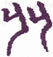
▲ 甲骨文比
▲ 篆书比
此卦《坎》上《坤》下，惟五爻一阳主全体，五柔皆归，故曰《比》。“原”，推原也，谓原其所始也。“筮”者，分析辨别之意，或作筮蓍解，然皆所以决疑，意亦相通，不必拘泥。“元”，即坤元之元。“永”者长也，有坎水长流之象。“贞”谓道得其正。上之比下，要必有此三者；下之从上，亦必求此三者，斯无咎矣。“原筮”者，谓推原诸柔来从，果得此“元永贞”之道否。《坎》为加忧，“不宁”之象，民有不宁，必从君以求安，君有不宁，必得民而共保，上下相应，则来者自宁。四柔既比，其比在前，六来独后，故曰“后夫”，五不受之，其道穷矣，是以凶也。
《彖传》曰：比，吉也。比，辅也，下顺从也。原筮，元永贞，无咎，以刚中也。不宁方来，上下应也。后夫凶，其道穷也。
“辅”者，助也，九五一阳居尊位，与五阴亲比，有下助上之象，孟子所谓“多助之至，天下顺之”是也，吉莫大焉，故曰“比吉也，比辅也，下顺从也”。“原筮”以下七字，主九五而言，九五为成卦之主，具阳刚之德，居中正之位，故曰“以刚中也”。“不宁方来”一句，就初、二、三、四四明言，九五以刚中施亲比之道，则天下众阴，皆服从而来，故曰“上下应也”。“后夫凶”一句，就上六而言，上六处阴之极，刚愎不逊，是为顽梗之夫，归附独后，为众所疏，故曰“其道穷也”
以此卦拟人事，父子兄弟夫妇，彝伦之中，自然亲比。朋友以义合，有贵贱、长少、亲疏、贤愚之等差，择之最宜分明。别其是非，辨其邪正，谚曰“近朱者赤”，交之不正，相匿而并入歧路，所谓小人比也。故当推原筮决，必其人有“元永贞”之德，然后相与亲比。“原筮”者，筮之于相亲之始，慎之至也；“元”者，统万善也；“永”者，谓能久于其道也；“贞”者，谓得正道而固守之也。比非其人，后必有咎，故曰“原筮，元永贞，无咎”。如孔子所云，晏平仲善与人交，久而敬之是也。夫人心莫不欲求友，比得其正，虽疏远之人，亦感其德义，自求亲睦，谓之“不宁方来”。然君子小人，各异其趣，往往有顽梗之夫，不服德化，虽后亦归附，其来已迟，是比道穷也，故谓之“后夫凶”。
以此卦拟国家，九五之君，施膏泽于下，六四、六二，皆奉戴九五君意，尽力于国家，于是亿兆之民，感其威德，上下亲比。此卦《坎》上《坤》下，恰如水土相济，融洽为一。以上比下，为一人而抚四海，以下比上，自四海而仰一人，上下相助，君民一体，谓之“比吉也，比辅也，下顺从也”。“比辅”者，臣亲其君也；“顺从”者，民亲其上也。然上非有刚中之德，不足当下之亲比，下非有“元永贞”之德，不足当上之亲比，是以必当推原而占决之也，谓之“原筮，元永贞，无咎，以刚中也”。《比》之初，上下之情或犹未通，不来者不宁，来者自宁，谓之“不宁方来，上下应也”。“方”者，来而不已之辞，取下四阴顺从也。当此时有不服风教，不服德义，刚愎负气，自取困难者，是为顽夫，其凶可知也。穷而后求比，其谁亲之！上六居《比》之极，以不得比，穷无所归，谓之“后夫凶，其道穷也”。郦生所谓“后服者先亡”是也。
通观此卦，初爻为远人，二爻为贤士，三爻为求进之士，四爻为在位之宰相，五爻为君，上爻为化外之民。此皆莫非王民，而休咎不同者，物情自不能齐也。此卦次《师》，《师》《比》二卦，同是一阳五阴。《易》中一阳之卦凡六，其最吉者莫如《比》卦，以其九五一阳居天位，而“上下应之”也。又《师》《比》共为得位之卦，得君位者为《比》，得臣位者为《师》。“《师》者，众也”，众不能无争，争则乱，靖乱以武，孚之以德，所以《比》次于《师》。《师》之群阴来而居下，载九五阳刚中正之君，有乱后得明主，各安其位之象。
《大象》曰：地上有水，比。先王以建万国，亲诸侯。
水之性平，地之道顺，水在地上，散则为万，合则为一。先王见此象，而分封有功之臣于各地，以为王室之藩屏，亲抚战后穷民，轻减其租税，平均其法律，沛其恩泽，如水之润物，无不浃洽。夫天下之大，可以一人统之，不可以一人治之，必建国置侯，有朝聘往来之礼，以结其欢，有巡狩述职之典，以通其情。天子犹大海朝宗之众水，其亲诸侯，犹身之使肱，则诸侯服顺君德之渥，其于民犹肱之使指。是封建之制，虽与方今郡县之治异其体，君主统治臣民之意，无有差违。谓之“先王以建万国，亲诸侯”，内卦为《坤》，万国之象，初爻变则为《震》，建侯之象。
【占】 问战征：玩爻象，其军威之盛，有如水就下，沛然莫御之势。一战平定，即当列土分封，建立屏藩。
○ 问营商：水在地上，无处不流通，商业亦以流通为利。《比》，亲比也，得亲比之人以共事，斯商业可垂永远矣。
○ 问功名：建国封侯为士生荣显之极品；《比》反《师》，《师》上六曰“大君有命，开国承家，”此之谓也。
○ 问家宅：是宅必低洼近水，亦比近贵人之宅。宅基大吉。
○ 问婚姻：《比》，比好也，地与水，本相亲比，占婚得此，必卜百年好合，且主贵。
○ 问疾病：坤为地，亦为腹，《坎》为水，亦为心，恐是心腹水肿之症。诸侯能治国，犹医能治病，宜切近求治。吉。
○ 问六甲：生女，主贵。
初六：有孚比之，无咎。有孚盈缶，终来有它 ［46］ 吉。
《象传》曰：比之初六，有它吉也。
“有孚比之”者，谓诚信充实于中，如物之盈满于缶中。缶者，上古之土器，郑云：“缶，汲器也。”此卦以五阴比九五一阳为义，与他卦应比之例不同。《比》之道以诚信为本，若中无信实，虽欲亲人，人谁与之！此爻居比之初，与九五犹远，本非其应，然《比》之道在初，初能积诚于中，率先三柔而从五，五比由初而始，故“无咎”也。譬如以诚事神，神必来格，有酒盈击，神必来享也。“缶”指六二，中虚能受之象；“之”字指九五而言。缶者质朴而无文饰，喻人之质朴正直，不事虚饰，以此交人，人亦乐推诚相与，即素未识面者，亦将乐与比助，共得欢心。谓之“终来有它吉，”“终来”者，谓将来也；“他吉”者，谓意外之吉。九五本不相比应，而亦比之，是意外之吉也。《象传》一“也”字，示其心之不可疑。此爻变则为《屯》，其辞曰：“磐桓，利居贞，利建侯。”磐与盘通，有缶象。“磐桓”“居贞”，“有它吉”者，建侯也。
【占】 问战征：有如禹征有苗，干羽来格之象，故曰“有孚比之，无咎”。
○ 问营商：商业专以信实为主，斯远近商客皆亲比而来，贸易广，而获利亦厚矣。吉。
○ 问功名：“有孚比之”，即中卦所云“信及豚鱼”之谓也。《中孚》九二曰，“我有好爵，吾与尔靡之”，靡共也，言我与尔愿亲比而共升荣也。故曰：“比之初六，有它吉也。”
○ 问婚姻：玩爻辞，谓既得相孚，又复相比，亲之至也，以是订婚，吉无咎也。
○ 问家宅：《比》，比邻也，近者既信义相孚，往来亲密，远者亦闻风愿来比邻，故曰“终来有它吉”。
○ 问六甲：生女。
【例】 某氏之子，多年留学英国，归朝之后，奉职某省，一日来访，请占气运。筮得《比》之《屯》。
断曰：《比》卦地上有水，水土和合，故曰《比》。《比》者亲也，占得此卦，可知足下家庭完好，和乐无间；且天性温和，久游英国，而熟谙外交之道，《比》之为卦，可谓适合足下焉。所谓《比》者，以亲好为立身之本，持躬以诚而无伪，交友以信而无虞，则人亦将推心置腹，和好无尤，故曰“有孚比之，无咎”。盖人必真诚积于中，而后光辉发于外，犹缶之必有酒醺盈于中，而后芬香达于外，此谓之“有孚盈缶。“终来有它吉”者，谓足下以争信待人，斯上信下效，他日禄位升迁，不特得意中之吉，且更有望外之喜也。可为足下预贺之。
六二：比之自内，贞吉。
《象传》曰：比之自内，不自失也。
“自内”者，自心也。古称中心曰内，书多其例，如《大学》“诚于内必形乎外”之类是也。此爻为内卦之主，柔顺中正，与五为正应，能以中正之道相比者也。盖其抱道在躬，而不愿夫外，故曰“比之自内，贞吉”，若急于用世，出而求君，虽有其道，已自失矣。必其秉中正之德，贞固自守，以待上之下求，而斯出而相辅，如商汤之三聘伊尹，刘先主之三顾诸葛，斯谓“不自失也”。此爻之辞为士之抱道者劝，即为土之失身者戒。
【占】 问战征：士卒同心，上下一体，战无不克，故曰“比之自内，贞吉”。
○ 问功名：“内”，我也，以我有实学，足以感孚于人，所谓实至而名归也。吉。
○ 问营商：一店伙友，性情比洽，自然百为顺从。以此出而贸易，人皆信服，无不获利，故《象》曰人之自内，不自失也”。
○ 问疾病：“内”谓心腹也，凡病总宜心平气和。中藏通利，外邪自消，故吉。
○ 问六甲：生女。
○ 问婚姻：必是内亲重联姻，吉。
【例】 某县知事，将荣转某省，请占其气运及升迁。筮得《比》之《坎》。
断曰：此爻以柔顺中正之德，应九五刚健中正之主，阴阳相应，其吉可知。足下为某省次官，负任省中巨细之政务，与某大臣相辅为理者也。是足下为某大臣素所亲信，今又将转任某省，可期而俟也，故爻辞曰“比之自内，贞吉”。
未岁，某知事果荣转某省次官。
六三：比之匪 ［47］ 人。
《象传》曰：比之匪人，不亦伤乎！
此爻阴柔，居《坤》之终，不中不正，承乘应皆阴，有远君子而比小人之象。所交非其友，所事非其君，不以正道相助，而以私谊相亲，是巧言孔壬之小人也。初应四为比，比得其人；二应五为比，比得其人，皆正人也。三乃应上，上处卦之终，是为“后夫”，即“非人”也。上比“无首”，“无首”，有伤之象。例如范增之从项羽，不能展其才力，忧辱而死。故《象传》曰“不亦伤乎”，谓其意之可悯也。此爻变则为《蹇》，《蹇》九三辞曰，“往蹇来反”，可以知“比之非人”之凶也。
【占】 问战征：观军而任用阉寺，参谋而偏听佞人，爻辞所云“比之非人”是也，安得不败！
○ 问营商：商业之盛衰，惟在其人，其人而日与市并无赖之辈，征逐往来。非人日亲，正人日远，不特其业立败，其人亦不堪问矣。
○ 问功名：交道不正，士品日下，不特声名破裂，祸亦随至。
○ 问婚姻：女贵贞洁，男效才良，人伦正道，苟非其偶，致误终身，不亦伤乎！
【例】 友人某来告曰：仆近与友某相谋，兴一大商业，请占其成否。筮得《比》之《蹇》。
断曰：《比》者，地上有水，有往来亲洽之意也。然依其所亲，其中显分利害，与善人亲则吉，与不善人亲则凶。此爻曰“非人”，显见非善人也。今足下共谋之友，余却不知其人，就爻辞而论，三与上爻既相应，三之所云“非人”，即上爻所云“无首”，人而无首，恐难免祸。足下与之共兴商业，凶莫甚焉，谓之“比之非人”，故《象传》曰，“不亦伤乎”。
友人闻而大惊，未岁而西国乱起，此友果处重罪云。
六四：外比之，贞吉。
《象传》曰：外比于贤，以从上也。
四本应初，不内顾初，而外比五，谓之“外比”。二之应五，在卦之内，故曰“比之自内”；四之承五，在卦之外，故曰外比之”。内外虽异，而皆得比于五，五刚阳中正，贤也；居尊位，上也；亲贤从上，比之正也，故曰“贞吉”，如夫周公之吐哺握发，以下天下之士，辅翼君德。下亲贤人，《比》爻之义也，《象传》曰“外比于贤，以从上也”。此爻于九五，象则为外，德则为贤，位则为上也。变则全卦为《萃》，九四之辞曰“大吉无咎，”可以见此爻之吉也。
【占】 问战征：爻曰“外比之”，得外夷归服之象，故曰“贞吉”。
○ 问营商：想是海外营业，货物流通，无远不居之象，故曰“外比之，贞吉”。
○ 问功名：四外比五，五居尊位，有简在帝心之象，功名之显赫可知也。
○ 问家宅：二居内卦，四居外卦，皆曰“贞吉”，自得内外亲比，一家和睦。
○ 问婚嫁：玩爻辞，想在外地订亲。吉。
○ 问六甲：生男。
【例】 明治二十一年，占某贵显之气运，筮得《比》之《萃》。
断曰：《比》者，地上有水，亲和之象。今得四爻，此人在九五君侧，以尽精忠，大得君宠，上下亲比之占也。某贵显任宫内大臣之职，其爻辞适合。
九五：显比。王用三驱，失前禽，邑人不诫，吉。
《象传》曰：显比之吉，位正中也。舍逆取顺，失前禽也。邑人不诫，上使中也。
“显比”者，明亲比和顺之道于天下也。“三驱”者，《礼》所谓“天子不围”，天子之畋，合其三面，开其一面，使之可去，不忍尽伤物命，即好生之德也。“失前禽”者，以禽之前去者，失之不追也，商汤之祝网，即是此义。“邑人不诫”者，谓王者田猎，与民同乐，不烦告诫，如归市不止，耕者不变之意，故吉。诸爻之比，皆以阴比阳，五爻则以阳比阴，以阳故曰“显”。且九五阳刚中正，为《比》之主，阳刚则光明而不暗，中正则公直而无私。此其所以为“显比”也，《比》之至中而至正者也，故《象传》曰“位中正也”，位即九五之位。顺逆以去就言，前去之禽，任其失之，不复穷追，来者抚之，去者不追，谓之“舍逆取顺”也。“上使中也”者，言上之使下，中平不偏，是下民熙皞之象也。《比》《师》二卦，五爻皆取田之象，然《师》喻除忧，《比》喻同乐，故《杂卦传》曰“《比》乐，《师》忧”也。又《师》自二至五，《比》自五至二，《师》曰“三赐”，《比》曰“三驱”。《师》《比》皆禽，《师》之禽在内害物，为境内之寇，故“执”之，王者之义也；《比》之禽在外而背己，为化外之民，故“失”之，王者之仁也。
按：六十四卦中，有《坎》者十五，《屯》、《蒙》、《需》、《讼》、《师》、《比》、《坎》、《蹇》、《解》、《困》、《井》、《涣》、《节》、《既济》、《未济》是也。其中虽有轻重大小之别，皆不免艰难劳苦，以《坎》有险难之义，惟《比》之一卦，独无艰难劳苦之象，得为最上之吉。卦全由九五为主，爻具阳刚之盛德，读者玩索其义，可自得也。
【占】 问战征：有降者不杀，奔者不禁之恩威，故曰“王用三驱，失前禽也”；有耕者不变，归市不止之德化，故曰“邑人不诫，吉”。
○ 问营商：玩爻辞，不贪目前小利，不图意外资财，舍逆取顺，虽前有耗，后自得盈余也。
○ 问疾病：症象已显，前服驱邪之剂，邪已若失，不必警戒，病自愈也。吉。
○ 问功名：驰驱生事，前功虽失，后效自必显著。吉。
○ 问六四：生男。
【例】 明治二十四年三月十四日，众议院议长中岛信行、前长崎县知事日下义雄两氏来访，谈及横滨《每日新闻》所译美国勃斯顿府新闻所载美国猎船一事，言所雇美国人四人，与日本人二十四人，在亚细亚俄领海岸，为俄国人所捕，充当苦役，数年内死几人未明，惟有美国二名，最耐苦役，已得无事归国。俄国者目下宇内强国也，美为民主之国，亦称强大，本邦介立两国之间，政府不知将如何处置？请占之。筮得《比》之《坤》。
断曰：此卦地上有水之象，水与土两相比辅，故曰《比》也。维新以来，我国与欧美各国，订盟联约，通商往来，正两相亲比之时。今为美国猎船被捕之事，占得此卦，曰“王用三驱，失前禽”，见俄国政府，未尝有捕之之令；“邑人不诫”，或者出于俄国土人所为也。考俄国西比利亚地方旷远，万里只有督统御之，为政府政令所不及，前欧美各邦人民，每每滋事，虽各国政府责问俄国，俄政府答曰：彼地有总督统理，我当谕令总督查办，终至迟延岁月，迄无结局。今回之事，不过北方边陬之一琐务，即今责问俄国，彼之所答，亦必如前所云，渝令该地总督查办面已。况此卦曰“显比”，是明言光明正大，与万国相亲比，我国亦何必以此一小事，伤国家大体之亲睦也？惟今后须议定西《比》利亚海，两国人民互渔之规则，凡两国人民，非得其国政府免许，勿论港内，连络其国所属两岬线内，禁渔业，在线外，无论何国人，任其渔猎，亦可谓之“王用三驱，失前禽”也。
中岛氏等为之感服《易》理之妙。
【例】 占明治三十一年内务省之气运，筮得《比》之《坤》。
断曰：《比》者，地上有水之象，水得地而流行，地得水而滋润，是两相亲比，故名此卦曰《比》。《比》者亲也。今占得五爻，以奉戴九五之君意，抚育万民，行公平之政，五阴之臣民，顺从阳刚之君也，谓之“显比”。在众民中或有不从教化者，宜举直错枉，使之自化，谓之“王用三驱，失前禽，邑人不诫，吉”。本年内该省之措置，必得善良之结果也。
时板垣伯为内务大臣，既而辞职，西乡侯代之。当时内阁，颇为政党纷扰，内务省之施政，独无一毫之障碍。
上六：比之无首，凶。
《象传》曰：比之无首，无所终也。
此爻阴柔不才，居《比》之终。阴以阳为首，诸阴皆比五，上居五上，不下从五，是无阳也，无阳，即“无首”。胡氏云，“无首者，无君，”是所谓“后夫凶”。至众阴皆比，比道已成，于是欲比于五，不可得矣，故曰“无所终也”。天下有其始而无其终者，往往有之，无其始而有其终者，未之有也，是以“比之无首，”至终则凶也。
【占】 问战征：“首”，军中之首领，谓元帅也。“无首”者，亡其主帅也。凶。
○ 问营商：五为卦主，上不与比，犹营商之伙，不与店主相亲比，是“无首”也。凡有所谋，必无所终也。凶。
○ 问功名：凡求名以高等者为首，曰榜首，曰魁首，“无首”则名于何有？凶。
○ 问家宅：恐丧家主，凶。
○ 问婚姻：不知何以无主婚之人？婚家来历，不甚明白。凶。
○ 问六甲：生女，恐有奇疾。
【例】 某县人携友人某氏绍介状来，告曰：生今有志上京，某贵显者，为生同县人，素所相知，欲往求引援，请占诺否如何？筮得《比》之《观》。
断曰：《比》者地上有水，水土相亲，显见有同乡之谊。今得上爻，曰“比之无首”，想是未尝谋面也。足下虽云与贵显有旧谊，平生之交际，恐不信实，或疏阔已久，今往请托，未必见许，故爻辞曰“比之无首，凶”。
后闻往见，果如此占。
【例】 明治三十二年，占我国与德国之交际，筮得《比》之《观》。
断曰：《比》者地上有水，水之在地，遍处流行，无远不居，有万帮亲睦之象。德国财力，并臻富强，与各国素敦亲好，此爻爻辞曰“比之无首，凶，”殊为可疑。既而思之，我国与德国交际，所称首领者，惟在该国驻在公使，或者此人近将易任乎？故曰“无首”。
09 风天小畜
畜 ［48］ 字从玄，从田，玄者，水也，田中蓄水以养禾，兼有蕴藏含养等义。“小”者大之反，谓物之微细者也。此卦六爻，惟六四一阴，能畜五阳，为成卦之义。阳大阴小，以阴畜阳，故谓小。卦体下《乾》上《巽》，《乾》者刚健，《巽》者柔顺，《乾》下三刚，《巽》一柔二刚，《巽》以一柔为主，蓄藏群刚，故谓之《小畜》。《序卦传》曰：“《比》必有所畜，故受之以《小畜》。”凡物相比附，则必聚积，是卦之所以次《比》也。
小畜：亨。密云不雨，自我西郊。
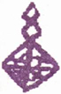
▲ 甲骨文畜
“畜”者，止也，“亨”者，通也，其义相反。然此卦二五皆阳而得中，有健行之象，虽一时为六四所止，终得亨通也，故曰“《小畜》亨”，犹《屯》曰“元亨”。“密云不雨，自我西郊”，此二句专就六四成卦之主而言，《乾》者天也，《巽》者风也，内卦为天，太阳热气，照射大地，水气感触，阳气蒸腾为云，《乾》为密，故曰“密云”。天上有风，云欲为雨，为风吹散，故“不雨”。凡云气自东而西则雨，自西而东则不雨，今云气虽密不自东而自西，故不成雨。云，明气，西，阴方，阴倡而阳不和，且自二至四，互卦有《兑》，《兑》为西，《乾》为郊，故曰“密云不雨，自我西郊”。当时文王囚于羑里，歧周在其西，故称“我西郊”。是小畜之象也。
《彖传》曰：小畜，柔得位而上下应之，曰小畜。健而巽，刚中而志行，乃亨。密云不雨，尚往也；自我西郊，施未行也。
六四者阴柔之正位，即为阳爻之正应。此卦六四为主，上下五阳皆应之，以一柔而畜五刚，故曰“柔得位而上下应之，曰《小畜》”，是所以释卦名也。内爻虽健，外爻居《巽》，是以健而能《巽》，且二与五居内外卦之中，其志能行，故谓之“刚中而志行，乃亨”。刚健者，内卦之象；《巽》者，外卦之象。五阳为一阴所畜，故不成雨，然其前进之气，岂能终已？至上九变为坎水之雨，故曰“密云不雨，尚往也”。此时密云自西而起，是阴先倡而阳不和，不能成雨，故曰“自我西郊，施未行也”。“往”、“行”、“施”三者，皆得阳刚之气，《乾》之象也；“未”者，阴柔之气，《巽》之象也。盖阴之畜阳，以柔克刚，其畜虽小，而牵制殊巨，譬如三寸之键，可以闭厄险之关，一丝之纶，可以掣吞舟之鱼，不可以其小而忽诸。且《巽》为长女，象妇，九三曰“夫妻反目”，上九曰“妇贞厉”，皆以阳受制于阴。历观夏桀以妹喜亡，殷纣以姐己诛，幽王以褒拟灭，一妇为累，祸延宗社，阴之累阳，夫岂在多哉！
以此卦拟国家，六四居辅相之位，仰膺君宠，然秉性阴柔，器识不大，不能任用贤才，惟以巽顺畜阳，以致膏泽不下于民，谓之“密云不雨”。《小畜》之象，国运如此。然以一阴止五阳，毕竟不能持久，至上爻阴极则亢，风变为雨，遂有“既雨既处”之象。若其时犹未至，而强欲施行，不能也，谓之“自我西郊，施未行也”。盖九二之大臣，与九五之尊位，两阳不相应，上九与九五，两阳亦不相比，故意见不和，是气运使然，不复如之何。是以五阳并为一阴所畜，谓之“柔得位而上下应之，曰《小畜》”。凡君子之行事，小人得以扰之，大事之将成，小物得以阻之，皆《小畜》之义也。国家然，即拟之人事，亦无不然。
通观此卦，六四以柔虚孚于九五，专以优柔抑制群阳。初九与六四，阴阳相应，阳为阴所畜，不宜躁动，是以自复于道，潜伏下位，故“无咎”而又“吉”也。九二以阳居下体之中，能与初九牵连而复，亦吉道也。九三与六四相比，刚而不中，止于阴而不得进，如车之脱辐，而不可行也。始则相比，而终则相争，则不和如“夫妻反目”，而不安于室也。六四处近君之位，以信实相孚，是能畜君者也，而众阳亦并受其畜；然以一阴敌众阳，因循姑息，势或攻击致伤，于是六四逃避而去，故有“血去惕出”之辞。九五在君位，任用六四，今见六四之去，怜其诚孚，有所赐与，故有“有孚挛如，富以其邻”之辞。至上九之时，处畜之终，六四之一阴已退，《巽》风变为《坎》雨，是为畜道之成也。
《大象》曰：风行天上，小畜，君子以懿文德。
宇宙之间，太阳热气，彭薄郁塞，充满太虚，不能复行，冷气来而填其后，其气之流动，谓之风。此卦风在上而得位，故在下之气，亦受太阳之热，而欲上升，然为上卦之风所畜止，不能复进，谓之“风行天上，《小畜》”。君子见此象，能于潜伏之时，修文学，勉德行，以立身命。“懿”者修饰而示章美之意，容仪之温恭，言辞之和婉，皆德之文饰也。君子言语有章，威仪有度，以风动天下，犹风之鼓动万物，无所远而不居。盖文德之所化，无有穷极也。
【占】 问时运：目下平平，有动作被人牵阻之患。
○ 问商业：有外观完美，内多耗失之象。
○ 问出行：主有风波之患。
○ 问家宅：主小康之家，防有口舌之祸。
○ 问战征：虽有雷厉风行之势，而恩泽不孚，只可小捷，难获大胜。
○ 问六甲：生女，又防小产。
○ 问行人：恐舟行阻风，迟日可归。无咎。
○ 问婚姻：主得懿美淑女，吉。
○ 问年成：主多风少雨，收成平平。
○ 问疾病：主风火之症。小儿吉，大人凶。
初九：复自道，何其咎？吉。
《象传》曰：复自道，其义吉也。
“复自道”者，谓知时之不可进，而自复于道。此爻居《乾》卦之初，是君子隐于下位者也。以阳居阳，位得其正，才力俱强，志欲上行，为六四之正应所畜，故返于本位，而复守其正。虽为彼所畜，而终不失其道，是不降其志，不辱其身，乃吉之道也，故曰“复自道，何其咎？吉”。“何”者，谓不复容疑之辞，叹美初九之能明道义，不吝改过，中途而复也。“何其咎”而后言“吉”者，谓不待其事之吉，而其义自吉也。
【占】 问时运：目下平常，宜退守，无咎。
○ 问商业：直稳守旧业，不宜创立新基。
○ 问家宅：所谓“士食旧德，农服先畴”，返而求已，不愿夫外，家道自亨。
○ 问疾病：宜静心自养，自可复原。
○ 问六甲：生男。
○ 问行人：即归。
○ 问年成：佳。
【例】 某县学务课长，常谈论国事，意气慷慨，以志士自任。顷日怀一书来，告曰：仆近日将面谒贵显，为国家述一意见，请占其成否，如何？筮得《小畜》之《巽》。
断曰：《小畜》之卦，犹利刀切风，腕力虽强，无所见其交也。知足下往告，必不能达其意趣，故不若止。何则？上卦为政府，当维新之际，执兵戎以定乱，其后事务多端，各守职任，断不容下僚妄参末议。且上卦为风，有进退不定之象，足下以刚健之意气，欲达其素志，风主散，散则不成，若强行之，不惟不得面谒贵显，恐为门街巡查所拒，激昂之余，或反受警察之诫谕。至此而悔其事之不成，不若中止，谓之“复自道，何其咎？吉”。
某不信余占，乘气往叩某大臣之门，强请不已，果受其辱，悉女此占。
九二：牵复，吉。
《象传》曰：牵复在中，亦不自失也。
“牵复”者，谓与初九牵连而复也。此爻亦秉《乾》体，具阳刚之性，上进而为六四所止。然以阳居阴，位不得正，故欲进而有障；见初九之复，亦即牵连而复本位，故曰“牵复”。盖以刚中从容之德，自审进退，不失其宜，是以吉也。《象传》曰，“牵复在中，亦不自失也”，谓其有中正之德，能适进退出处之宜，自不失其节操也。“亦”字，承初爻《象传》而言。
【占】 问时运：因人成事，自得获利。大吉。
○ 问商业：宜创立公同社业，或旧业重振，皆得吉也。
○ 问家宅：主兄弟和睦，恢复先业，必致家道兴隆，大吉之象。
○ 问疾病：必主夙疾复发，小心调治，无妨。
○ 问行人：即日偕伴同归。
○ 问战征：主连日得胜。
○ 问六甲：生女。
○ 问年成：丰收。
【例】 余有熟知商人某氏，以某局有购旧罗纱之命，乃至横滨外国商馆，先取样品进呈某局。时适有他商二名，亦进呈样品，某局员以某氏所进为良品，以他二名所进为劣等。二商人愤愤不平，来告曰，同一物品，而局员妄以一心之爱憎，漫评货品之高低，其中不无贿嘱，余将告发于长宫，请占前途得失。筮得《小畜》之《家人》。
断曰：此卦君子为小人所止，有屈而不伸之象。今二爻与五爻，虽同秉阳刚，本非正应，恐告于长官，未必能达，以止为可。夫商人贩旧货物，同业相妒，亦事之常。在该局员妄评货品，与之争论究亦无益，足下即使议论得直，物未必得售，不如中止。劝二商牵连而归复其本业，谓之“牵复在中，亦不自失也”。“不自失”者，谓思后日之利益，忍而归也。
【例】 明治二十四年，邮船会社汽船东京九，值朝雾昏迷，误搁房州洋之浅洲，以军舰并他汽船，极力牵引，毫不能动。或来请占是船之利害，筮得《小畜》之《家人》。
断曰：依此占，今东京九，已得他汽船引出，其船体无所损，可安全而还也。《象传》曰“不自失也”者，即无所损之谓也。
后果如此占。
九三：舆说辐 ［49］ ，夫妻反目。
《象传》曰：夫妻反目，不能正室也。
“舆”者，人所乘以行远也；“辐”者，轮中之直木，或作輹；“说”者，脱也。“夫妻反目”者，谓妻瞋目而视夫，夫亦瞋目而视妻，故曰“反目”。此爻以阳居阳，刚而不中，才强而志刚，其性躁妄而不能自守，先众阳而锐进，为六四所止，故比之车之运行，脱辐而不能进，曰“舆说輹”。九三之阳，比六四之阴，有夫妻之象，但夫为妻所制，阴阳不和，致夫妻不睦，则其妻之不顺不敬，固不俟论，其夫亦不为无罪也。何则？夫之素行，苟能庄重笃实，闺门之内，相敬如宾，夫何反目之有？反目之来，实由于夫之素行有缺：始则溺于私爱，继则疏于自防，终则为妻所制。阴柔渐长，而阳刚无权，此家之所以不齐也，故《象传》曰，“不能正室也”。盖妻正位夫内，夫正位夫外，今以妻制夫，出而在外，是闺门之不正也。九三至九五，互卦为《离》为目，巽为多白眼，皆反目之象。
【占】 问时运：阴盛阳衰，内外不安，最宜慎守。
○ 问商业：有积货，急宜脱售，凡众所争售者，切勿售，众所不售者，急进售之。此谓反其道而行之，得利。
○ 问家业：阴阳颠倒，家室不和。
○ 问疾病：防医士不察，以寒作热，以虚作实，药不对症，是阴阳相反也。宜急别看良医，病必脱体，吉。
○ 问战征：军心不和，防有辙乱旗靡，倒戈相向之虑。
○ 问行人：即日可返。
○ 问出行：恐中途有险。
○ 问六甲：生男，主有目疾。
○ 问年成：不佳。
○ 问婚姻：不利。
【例】 明治六年，岩仓有大臣及木户大久保、伊藤山口诸君，奉命使欧美各邦。当派遣之初，使臣不得与各邦擅订条约。在朝者，为三条太政副岛后藤、板垣大隈、江藤大木诸君，使臣未归之先，不得创议新政。后因海军省所辖云扬舰，测量朝鲜仁川海岸，彼国炮击我舰，庙议将发问罪之师，欧美派遣诸君，亦遽相继归朝，共参朝议，遂分为征韩非征韩二派。某贵显来，请占朝议归结，筮得《小畜》之《中孚》。
断曰：此卦下卦三阳，欲牵连而进，为六四一阴所止，而不能进，乃以大为小所畜，故名曰《小畜》。下卦三阳，有锐进之性，在主征韩者，谓我国三百年来，以锁国为国是，故致文化后于欧美各邦，今模仿欧美之进化，非力图进取，恐难独立于东洋，其奋激锐进，殆有不可遏之势。在主非征韩者，目击欧美之文化，与夫陆海军之全备，专划远大之策，戒轻举之生事，辩征韩之不可，大反其议。盖谓征韩之举，虽一旦遂志，在朝鲜人，或逃赴清国，与清国政府谋恢复，或脱走于俄，乞俄国之救援。又清俄两政府，受朝鲜再兴之依赖，不无责问我政府之由；至英、法、德各邦坐视我东洋有事，亦将藉生口实，皆可预料也。此番出使诸臣，归而作是议者，洵有见而言之。后朝旨一从罢征之议，主征韩者愠其言之不用，群相辞职，谓之“与说辐”也。征韩非征韩二派，至相仇视，恰如夫妻不睦，谓之“夫妻反目”。
后果主征韩者，悉辞其职。
六四：有孚。血去惕出，无咎。
《象传》曰：有孚惕出，上合志也。
“血”者，恤也，恤字古文作血。曰恤，曰“惕”，皆忧惧之甚也。“血去”者，远伤害也，“惕出”者，免危惧也，皆所以解脱忧患。此爻成卦之主，以一阴之微弱，止五阳之刚强，盖畜得其时，又得其位，故能畜止众阳。自全卦言，为以小人畜君子；以一爻言，为以孤柔敌群刚。五为君位，四与五相比，是以臣而畜君者也。始如不足，终乃有济，有因人之功，无偾事之失。但在下三阳，为柔所制，欲锐进以害柔，亦势所不免；惟六四明而中虚，能以《中孚》感君，君臣契合，以至诚相畜，故五阳亦终服六四之制。非其力能止之，实本孚信有以感之也。且六四不以获君为荣，转以位高为惕，退避三阳，而不妨贤路，如六四者诚辅相之贤者也，谓之“有孚，血去惕出，无咎”。《象传》曰“上合志也”者，以六四之大臣，比于九五之君，尽心谋国，上下交孚；又以九五之君，爱庇六四之臣，恩遇优渥，始终无间，故曰“上合志也”。
【占】 问时运：目下不免忧虑，切忌与人争斗，防有损伤。宜出门远避，斯无咎也。
○ 问仕途：必得上官契合，即有升迁，大吉。
○ 问战征：利于出军进攻，可以获胜。
○ 问家业：姬妾仆从，御之宜得其道，否则防反受其制。
○ 问行商：利西北，不利东南。
○ 问疾病：是寒里热之症，治之宜宽解，不宜燥烈药品。
○ 问谋事：有得邻里相助之力。
○ 占行人：恐中途遇险，宜微服潜行，忍而避难。
○ 占六甲：此胎生女。后胎可连举五男。
【例】 明治五年，占某贵显气运，筮得《小畜》之《中孚》。
断曰：此卦六四一阴，在九五之下，奉戴君德，制伏上下四阳之锐进。一阴之势力本孤，惟以真诚相孚，能使群阳受畜。然阳亢则变生，不无可虑。曰“血去惕出”，其虑患也深矣，故“无咎”。因呈此占于贵显，贵显惟首肯而已。
后闻某贵显驾过赤坂，果罹暴徒之难，被轻伤。“血去惕出”之占，可谓先示其兆也已。
九五：有孚挛 ［50］ 如，富以其邻。
《象传》曰：有孚挛如，不独富也。
“挛”与孪通，“挛如”者，相连之意。“富以其邻”者，邻指六四，谓九五之君，能信任六四，与之合志而畜乾。六四之臣，积诚以格其君，九五之君，推诚以待其下，上下相孚，而畜道成。九五之富，皆六四之功也。此爻中正，以阳居尊位，而密比六四之宰相，惟其有孚，则群阳亦牵连以相从也。九五居尊，所谓贵为天子，富有四海，与上爻、四爻同居巽体，并力畜乾，以御众阳锐进之锋，方张之势。曰“富以其邻”，是以四爻为邻也。然九五之君，当以大赉天下，泽被群生，若第挛如六四之宰相，其富厚之泽，未免偏而不公，故曰“有孚挛如，富以其邻”。指臣位而称邻者，可见君德之不满。又爻辞不系吉凶者，亦以君德之未美也。《象传》曰“不独富也”者，以爻辞“以”字读为助之义也。
此卦初九、九二二爻，虽复道，不过独善其身；九三与六四为敌，遂至反目；独九五终始信任六四，以共天下之富，是《小畜》之所以亨也。
【占】 问商业：有百货辐辏，群商悦服之象，大利也。
○ 问时运：一生气运亨通，无往不利。
○ 问仕途：主连得升迁，禄位双全。
○ 问家业：主累代忠厚，惠及邻里，不独富有，且得贵显。
○ 问战征：主军士同心，有国境日辟之象。
○ 问六甲：有孪生之象。
○ 问疾病：主麻痹不仁，手足挛拘之症。
○ 问失物：宜从邻近寻觅，自得。
○ 问出行：宜结伴而行，不宜独往。
【例】 明治四年三月，友人冈田平藏氏来曰：余今将创一业，请占其成否。筮得《小畜》之《大畜》。
断曰：此卦有畜积货财之象，定可得商利之满足也。但必得一信实伙友，以主其事，获利之后，当分肥及之，庶几相与有成也。
后果如此占。
上九：既雨既处，尚德载。妇贞厉，月几望 ［51］ ，君子征凶。
《象传》曰：既雨既处，德积载也。君子征凶，有所疑也。
“既”者，事之既成也。“既雨”者，此爻外卦变《坎》，前之“密云不雨”者，今则既雨矣。“既处”者，止也，谓阴阳相和，各得其所。阴之畜阳，不和则不能止，既和而止之，畜道成也。“尚德载”者，尚即《论语》“好仁者无以尚之”之谓，美六四之孚信充实，众阳感孚，明《小畜》全卦之成功也。九五、上九，同属《巽》体，知《乾》难畜，故积德而共载之。“望”者，满月也，“月几望”者，喻阴德之盛。此爻以阳居阴，《小畜》之终，畜道已成之时也。《彖辞》曰“亨”，即指上爻而言。盖此卦一阴，以巽顺为性，顺者妾妇之道，且巽为长女，象妇，故以妇为喻。六四阴象为女，九五信任不疑，六四之威权已重，恰如月之几望，满盈而敌九五之尊。“妇贞厉”之贞，谓以阴制阳，即以妇止夫。妇宜贞固自守，若以此道为常则厉，当此时虽有贤人君子，不能复如之何，故曰“君子征凶”。且阴之既胜，固无可为之道，方其将盛未盛之间，君子所最宜警戒。此爻“月几望”、“凶”者，阴之疑阳也；《归妹》之六五，“月几望，吉”者，阴之应阳也；《中孚》之六四，“月几望，无咎”者，阴之从阳也。“妇贞厉”者，以理言之，戒小人也；“月几望”二句，以势言之，戒君子也。《象传》曰“有所疑也”者，盖以阴敌阳则必消，犹言小人抗君子则有害，君子安得不疑之？一说，疑者碍也，谓于道义有所碍塞，义亦通。雨与月皆有《坎》象，此爻外卦变为《坎》，故有此辞也。
【占】 问时运：有昔时希望不遂，今得如顺之意。
○ 问家业：有前困后亨之象。
○ 问营商：宜得利则止，若贪得无厌，终恐盈满致凶。
○ 问战征：既得战胜，宜即罢军，若复进攻，不利主帅。
○ 问年成：旱，不为灾。
○ 问六甲：生女。
○ 问行人：即归。
○ 问出行：不利。
【例】 明治二十二年某月，某贵显来访谈时事，请试占政党首领某氏之气运，筮得《小畜》之《需》。应其请而讲《小畜》全卦之义。
断曰：此卦上爻。《乾》天，天气上升，有云随之，被风吹散，不得为雨，谓之“密云不雨”。以风之小，止天之大，故名此卦曰《小畜》。以国家拟之，四爻一阴，得时得位，上下五阳，牵连应之。阳大阴小，以一阴止五阳，是小畜之义也，故曰“柔得位而上下应之，曰《小畜》”。
此占为政党首领所关，其所从来者久矣，请推其原而说之。
明治之始，某缙绅为众所推，奉励令为相，奉侍九五之君，尽见信任，一时群僚皆受其畜，诚千载一时之会也。就《小畜》之卦言之，以某贵显当六四之位，下卦三阳，牵连被畜，虽众阳有健行之性，欲进而谋事，六四虑其躁动，悉被抑止，独以孚信感君，巽顺行权，谓之“健而巽，刚中而志行”也。明治元年三月，虽有万机之敕命，究未施行，谓之“密云不雨”。
初九：“复自道，何其咎？吉。”
此爻以阳居阳，虽有才力，未得信用，与六四之阴相应，见六四专权，难与共事，中途而返者也。
九二：“牵复，吉。”
此爻亦虽欲进，见初爻既复于道，是以牵连亦复，进退审详，不失其宜，以中正也。
九三：“舆说輹，夫妻反目。”
此爻与六四，同居重职，先众阳而锐进，为六四所抑止，志不能行，辞职去官，谓之“舆说輹”。“夫妻反目”者，以九三阳爻为夫，六四阴爻为妇，阳为阴制，犹夫为妻制，愤懑而争，故曰“反目”。
六四：“有争，血去惕出，无咎。”
此爻为全卦之主，以一阴止五阳，独得权势。然阴孤阳众，抑亦可危，惟在六四能以孚信感君，故九五之君，爱识六四，不使群阳得以相犯，故曰“血去惕出，无咎”。
九五：“有孚挛如，富以其邻。”
此爻居尊位，与六四之阴，挛系而御《小畜》之世。九五六国，皆曰“有孚”，是以积诚相感，上下交孚也。下卦三爻，同为《乾》体，故曰“挛如”，赏赐之厚，如富人之以财产分赐邻里也。今以某贵显拟之，朝廷录维新之功，恩赐优渥，且政府以数万元，买置其第宅，即是也。
上九：“既雨既处，尚德载。妇贞厉，月几望，君子征凶。”
“既雨既处”者，《小畜》之终，风变雨为水。前之“密云不雨”者，今“既雨”也。明治创业以来，某首领有功于国家，人所皆知，但政令随时更变，惟在积德累仁，励精图治，国家大权，不容旁落，亦不可偏任。明治十四年，请开国会，至今二十三年，有众议院开设之议，谓之“尚德载”也。在大臣谋划国计，未免擅权，以臣制君，犹之以妻制夫，谓之“妇贞厉”。“月几望”者，月满则亏，几望则将近于亏，是即阴阳消长之机。“君子征凶”者，谓当戒其满盈也。
10 天泽履
“履 ［52］ ”者，冠履之履。篆书从尸，从彳，从舟。尸者，象人身；舟者，载也；彳者，行也。即所谓步履而行，可以运动人身者也。故此卦以此取名，《彖》辞曰“履虎尾”者是也。转而为礼，礼者，人之所践行也，故《序卦传》曰，“物畜然后有礼，故受之以履”；《大象》曰，“以辨上下”。又转为福之义，《诗》曰“福履绥之”是也。人能守礼，则天赐之以福。此卦外《乾》内《兑》，《乾》天，《兑》泽，天在上，泽居下，上下尊卑之分正，故有礼之象。又《乾》为行，《兑》为和，《论语》曰：“礼之用，和为贵。”《彖》有“履虎尾”之辞，故即取其首字以名卦也。
履：履虎尾，不咥 ［53］ 人，亨。
▲ 篆书履
《象传》曰：履，柔履刚也。说而应乎乾，是以履虎尾，不咥人，亨。刚中正，履帝位而不疚，光明也。
此卦《乾》上《兑》下，《乾》为老父，前行，《兑》为小女，追随在后。凡以刚健践弱之后易，以柔弱践刚健之后难。就卦面《观》之，以六三一阴之柔弱，介五阳刚强之中，有欲行难行之象。以至弱之质，蹑于至刚之后，犹“履虎尾”，最是危机。文王就其难行之道，系其辞曰“履虎尾”，危之也。《乾》为虎，虎指刚健者。人者对虎而言，“不咥人，亨”。此卦二五两爻，皆得阳刚之中正，九五尊位，居至高至贵，而能不疚于心，必有光明之德也，谓之“刚中正，履帝位而不疚，光明也”。《彖传》三句，专就五爻而言，此爻卦变则为《离》，《离》为火，为日，为电，有光明之象。
以此卦拟人事，内卦《兑》为我，外卦《乾》为彼，我柔弱而彼刚健。例之古人，如上杉谦信、织田信长等，刚毅果敢，为其臣仆者，一不顺从，每遭惨祸，谚云“伴君如伴虎”，此之谓也。嗟乎！世路险阻，无往而非危机，虎之惟人，不独山林，凡一切利害所关，即为危机之所伏，皆可作虎观也。惟以不敢先之心，后天下之人，以不敢犯之心，临天下之事，以不敢轻进之心，处天下之忧患，敬以持己，和以接人，以此履虎，虎虽刚猛，必不见难。由是观之，人能行以卑逊，何往而不亨通哉！行于强暴，则强暴服，行于蛮貊，则蛮貂化，行于患难，则患难再，皆和悦之效也。以卦体言，初爻虎尾，至九五之时，危险既去，身安心泰，自具光明之德也。故履之时，柔能制刚，弱能胜强，虽刚暴难制者，皆可以柔和之道制之。若欲以刚制刚，必有大咎，此《履》卦所以贵和悦而应上也。
以此卦拟国家，上卦为政府，下卦为人民，上刚强，下卑屈，名分悬隔，刚强者进于前，卑屈者随其后，谓之履，柔履刚也。上下之秩序如此，下以和悦爱敬，服从夫上，上亦乐其柔顺，不复以强暴相凌，谓之“悦而应乎乾，是以履虎尾，不咥人，亨”。九五之君，德称其位，垂拱而天下治，上不愧祖宗之鉴临，下不负臣民之瞻仰，何疚之有？于是功业显著，德性光明，谓之“刚中正，履帝位而不疚，光明也”。
通观此卦，高者无若天，低者无若泽，上下尊卑之分，昭然若揭。六三以一阴，介在五阳之间，为全卦之主，才弱而志刚，体暗而用明，不自量力，而敢于前进，致蹈危祸也。初九在下，素位而行，不关荣誉，虽涉危险之世，行其固有之业，而自得其安乐也。九二居内卦之中，不系情于名利之途，坦然自乐，不陷于危险也。九四上事威猛之君，下接奸佞之侣，处危惧之地，小心翼翼，位尊而主不疑，权重而人不忌，终得遂其志也。九五居尊位，雄才大略，独断独行，以刚猛而御下者也。上爻熟练世故，洞悉人情，建大业，奏伟功，而克享元吉者也，是《履》之终也。
《大象》曰：上天下泽，履，君子以辨上下，定民志。
此卦“上天下泽”，尊卑贵贱之等级分明，是不易之定理也。君子见此象，“辨上下，定民志”，使之各居其所，各安其分，不相紊乱，自无僭越，礼制之要也。夫宇宙间，莫低于泽，莫高于天，譬诸在人，莫尊于冠，莫卑于履，上下之分如此。《履》者，礼也，君子体《乾》之强，庄敬而日强，所以行礼也。《兑》之德悦也，悦者和也，礼以退为让，履以下为基，故曰“履，德之基也”。天而不下交于泽，则江河无润；泽而不上交于天，则雨露无滋。惟天高而能下，故水土草木之气，蒸而为云雨，而天益高；惟君尊而能卑，故亿兆臣民之分辨，而为礼让，而君益尊。若上下不辨，民志不定，则等威无别，民情骚动，天下纷然，乱自此起，如之何其能治也？此卦上自天子，下至庶人，安尊卑之分，联上下之情，君怀明德，民无二志，天下所由治也，谓之“君子以辨上下，定民志”。
【占】 问家业：有门庭肃穆，仆妾顺从之象。
○ 问任官：有品级渐升之象，若攀援干进，反致不利。
○ 问营商：宜辨别货品，实察商情，待时而售，必得高价。
○ 问出行：利于滨海之地。
○ 问六甲：得女。
○ 问疾病：宜疏通中焦。
○ 问遗失：一时为物所掩，久后自出。
初九：素履，往无咎。
《象传》曰：素履之往，独行愿也。
“素”者生帛，取天然之色而无饰也。“素履”者，谓直行本分。此爻以阳居阳，虽得正位，上无正应，在下位，不援上，《中庸》所谓“君子素其位而行，不愿乎其外”者也。以居《履》之初，去虎犹远，守当然之本业，独善其身，不求闻达，一旦得位，亦不改其“素履”之守，所谓“穷不失志，达不离道”，故曰“素履，往无咎”《象传》曰“独行愿也”者，谓己之所愿，不在乎外也。此爻无正应，故曰“独”也。
【占】 问功名：宜安居乐道，待时运亨通，往无不利。
○ 问营商：直守旧业，久后必获利。
○ 问谋事：宜缓待，不宜急迫。
○ 问战征：宜独行潜往，刺探敌情，无咎。
○ 问家宅：“福履绥之”，门庭吉祥。
○ 问六甲：生男。
【例】 横滨商人某氏来告曰：近来商业不振，得不偿失，欲移居于东京，别创事业，请占前途吉凶。筮得《履》之《讼》。
断曰：此卦《兑》之少女，《履》《乾》父之后，明明教人以谨守先业。商务之通塞，未可拘一时而论，物价高低，随时变换，前失后得，亦事之常，何必遽作改计？不如守旧，久必享通也，故曰“素履，往无咎”。某氏闻之，随绝改图之念，仍在横滨，从事旧业，未几而商机一变，大获利益。
九二：履道坦坦，幽人贞吉。
《象传》曰：幽人贞吉，中不自乱也。
“坦坦”者，道之平也；“幽人”者，谓隐居山林之士也。此爻当履之时，得刚中之位，中则不偏，不偏则不危，履行其道，犹行平坦之道路也，故曰“履道坦坦”夫行道者，履于旁则危险，履其中则平坦，必其中心淡泊，忘情荣辱，以道自守，斯得幽人之贞也，故曰“幽人贞吉”，若欲急进而从事，恐履虎而招祸也。盖此爻虽有才德，以上无应爻之助，故未得出而用世，惟其穷居乐道，遵时养晦，故吉。《象传》曰“中不自乱也”者，谓不降其志，不辱其身，是不以利达乱其心者也。一说“幽人”为幽囚之人，如文王之囚羑里而演《周易》，文天祥之囚土室而作《正气歌》之类，虽在患难，不乱其志也。此爻内卦变为《震》，《震》为大途，有道之象；又以《兑》泽，有幽谷之象，故曰“幽人”。
【占】 问功名：有高尚其志之象。
○ 问营商：一时物价平平，可得微利。
○ 问出行：平稳，获吉。
○ 问终身：有恭敬修身之意。
○ 问家宅：有分析财产之意。
○ 问失物：有意外损耗之虑。
【例】 一夕有盗入某贵显邸宅，窃去衣服若干，贵显请占盗之就捕与否，筮得《履》之《无妄》。
断回：此卦《兑》之少女，《履》《乾》父之后，老父为盗，少女者改造其藏品，或变其体裁，而转卖之，是父女共为盗者也。一时不得显露者，盗中之最狡者也。然互卦有《离》火，火之明，即探索吏也，互卦之主爻，即六三之探索吏。《象传》所谓“眇能视，不足以有明也”，故现时不能捕获；至上爻有“视履考祥，其旋元吉”之辞，自此爻至上爻，爻数五，必在五月之后，藏品暴露，盗贼即可就缚。后五月，此盗就缚，果如此占。
六三：眇能视，跛能履。履虎尾，咥人，凶。武人为于太君。
《象传》曰：眇能视，不足以有明也；跛能履，不足以与行也。咥人之凶，位不当也。武人为于大君，志刚也。
“眇”者，目之偏视也；“跛”者，足之偏废也。“武人”者，文官之对；“大君”者，尊贵之称。此爻以阴居阳，不中不正，无才无德，以刚暴取辱者也。盖于履为成卦之主，欲恃其势而统辖群刚，不自度才德之微，不足负担大事。目之眇，自以为能视，足之跛，自以为能履，不避危险，勇往直前，自蹈履虎受咥之祸，故曰“眇能视，跛能履，履虎尾，咥人，凶”。曰“眇”曰“跛”者，示六三之柔暗，能视履者，谓恃九二而冒险躁进。虎之不咥我，以我背后有《乾》也。六三见虎之畏《乾》，以为畏己也，去《乾》而自用，遂为虎所咥。《彖》曰“不咥人”，爻曰“咥人”，其义相反，盖《彖》取内卦《兑》之柔和爱敬而立义，爻主中正，以六三阴柔不中正，独与上九之一爻相应，上九虎之首也。履尾而首应，故有咥人之象。六三不自知其量，放肆横行，武人而干犯九五之大君，其强暴而无所忌惮如此，大凶之道也。《象传》曰“眇能视，不足以有明也；跛能履，不足以与行也”者，谓其识暗，故视不能明，谓其才弱，故行不能远。“位不当也”者，谓以阴居阳；“志刚也”者，谓其阴柔而不中正，志刚而触祸也。《兑》为毁折，互卦《离》为目，巽为股，《离》目为《兑》所毁折，有眇之象；《巽》股为《兑》所毁折，有跛之象。又《兑》为口，有咥之象；“武人”《巽》之象，《巽》之初六“利武人之贞”可见也。“武人”，武士也，如《诗》所咏“赳赳武夫”是也，其职掌专主军政，奉王命以讨伐不庭，效忠于疆场者也。“武人为于大君，”刚强自用，干犯名分，孔子所谓“暴虎冯河，死而无悔”之徒，其甚者窃弄兵权，不奉朝命，如北条义时足利尊氏者也。我国维新以来，军政严肃，海陆两军，类皆桓桓武士，干城之选，好谋而成，固不徒以志刚为武也。《易》之垂诫，或不在当时而在后世，其虑远矣。
【占】 问家宅：有暗昧不明，以小凌大之象。
○ 问商业：有被人欺弄，急切不能脱售之虑。
○ 问战征：宜退守，不宜进攻，妄动者凶。
○ 问行人：恐中途遇险。
○ 问失物：就近寻觅，自得。
○ 问六甲：生男，但婴儿防有残疾。
【例】 友人副田虎六氏，从佐贺县来告曰：某所矿山，工学士最所称赏，矿质极良，余将请政府之认可，着手采掘，请占其利害。筮得《履》之《乾》。
断曰：此卦刚健之乾父前进，柔弱之少女随后，足下继续先辈所开之矿山。今此爻以阴居阳，气强而智昏，其所计划，必有与实际相龃龉者也，故谓之“眇能视，不足以有明也”。凡商办之业，与官办之局，大异其趣。如彼矿山，固乡间无赖人所集合，能设其规则，而统制得宜，斯众人服从；且指挥众役，必用老成谙练之人，乃能成其业，若指挥不得其人，彼矿夫纷扰，非易老制，懒惰虚喝，百弊丛生。足下纵精明强干，而于矿业，究属生手，譬如行路，此程非熟悉之途，故爻辞又曰“跛能履，不足以与行也。”足下又谓“不入虎穴，焉得虎子”，是以决意担当，但恐入虎穴而为虎所咥，其危险实可寒心。爻象如是，足下宜断念也。
氏不信余占，用某学士为甲干，使之赴矿山，为不谙实业，部下不服，终以不克成事而罢。
【例】 贵族院议员某，福岛县多额纳税者也，自去年（三十一年）冬，至本年春，蚕丝输出外国者，时价益腾，本年养蚕之成绩，颇好结果，预料他日蚕丝，辐辏横滨，势必低价。乃于横滨四品取引所，期五月与六月，约卖蚕丝苦干，与买者同纳付保证金数万元于取引所。至期，蚕丝之入横滨者稀少，时价看涨，不能交现，买者知蚕丝之不足，数人联合，益倡高价，于是有介卖买两间而谋为仲裁者。某来曰：“此仲裁适余意否？请为一筮。筮得《履》之《乾》。
断曰：此卦以《兑》之柔，随《乾》之刚，犹少女与暴夫同行，其危险如“履虎尾”。今占得三爻，足下测度蚕丝出产与时价，是诚以管窥天，谓之“眇能视，不足以有明也”。横滨商人，自产地贩集蚕丝，向以贷金收买，故转运往往不速，谓之“跛能履，不足以有行也”。卖者乘其虚，而益倡高价，殆将食没足下之保证金，谓之“履虎尾，咥人，凶”。足下不自揣其不能，不知卖家之不良，欲博一时巨万之利，反生大损，犹以匹夫之勇，望为武将者也。谓之“武人为于大君”今仲裁难行，过六月中旬，可得协商，然大损不免也。
后果如此占。
九四：履虎尾，愬愬，终吉。
《象传》曰：愬愬终吉，志行也。
“愬愬”者，畏惧之貌。此爻以阳居阴，逼近九五尊位，才强态弱，以九五为虎，常怀危惧，故有“履虎尾”之戒。若以其危故，而退身远引，亦非为臣之道。此爻处大臣之位，有可未常不献，有否未常不替，亦非避其威而不履也。但小心谨慎，常若想想，故曰“履虎尾，愬愬”。是以位虽高而主不疑，权虽重而上不忌，终免忧危，而得保全之吉，故曰“终吉”。此卦全卦以柔为吉。‘终”字对初而言，有始于危，终于不危之义也。《系辞传》曰“四多得”，此爻多惧，惟其防患周密，终得免害。《彖》辞曰“不咥人，亨”者，谓此爻也。《象传》曰“志行也”者，谓履行其道也。“志”者，为平日期望之志也。
【占】 问时运：以温和接人，以笃实当事，虽临危险，终得免祸，是气运平稳之时也。
○ 问商业：不宜急切脱货，宜谨慎耐守，终获利益。
○ 问战征：宜临危固守，遇救得捷，可转败为胜。
○ 问六甲：平稳得男。
【例】 明治十七年十二月，朝鲜京城有政党纷扰，时国王遣特使来我公使馆，请我办理公使竹添君护卫王宫，公使因率兵前进。清国将官某氏，亦率部下兵迫王城，遂抗我兵。此报达我国，朝野骚然，朝旨派外务卿井上伯，奉使朝鲜责问，是国家之重事也。某贵显使余占其动静，筮得《履》之《中孚》。
断回：此卦上卦《乾》，为父，下卦《兑》为少女，有少女随父之象也，故名曰《履》。夫我国之于朝鲜，以我既行欧美之开化，欲使彼国速从时势之变迁，我导其前，彼履其后，以同行改革也。万一朝鲜为欧人所占领，不啻为我国之赘疣，实为亚细亚全洲之障碍。奈彼国冥顽不悟，妄以嫌忌外人，遂起今回之乱。今外务卿井上伯奉使前往责问，彼必自知微弱。四爻变而为《中孚》，结局终归乎和，谓之“履虎尾，愬愬，终吉”。于时十七年十二月二十五日也。
（附言）是月二十七日，交询社传福泽谕吉氏之言，邀余演说朝鲜《易》占。余因趋其席，社员满室，于事诸氏谓余曰：今回朝鲜之事，甲论乙驳，或和或战，群蹴纷纷，不如归的，君玩《易》象，必获先机，幸为开陈爻辞。余曰：《易》道，通天机而知未来者也，与凭空议论者不同也。余凭《易》占，已预知结果，在外人或未之信也。遂应其请，详述前说。在席自福泽氏以下，皆不解《易》脸如怪讶，余归后，福地源一郎氏，寄书请示占象，因更记前说以自送之，翌十八年一月一日揭之于东京《日日新闻》。当时《时事新报》记者痛嘲余说。彼昏昏者不解《易》理，亦无足怪，彼闻井上大使，与朝鲜政府开论，即在一月二日。《易》理之定数，不差分毫，余之《易》占，不失一语，不亦可畏敬哉！
九五：夬履，贞厉。
《象传》曰：夬履贞厉，位正当也。
夬者，决也“夬履”者，谓其一任刚决以履行也。此爻刚健中正，体《乾》卦，《履》尊位，下无应爻，自恃刚明，果于任事，多威武猛断之政，未免有果敢而窒之弊，故曰“夬履”。古圣人居天下之尊位，虽明足以照，刚足以决，势足以专，未尝不博取天下之议，以广其见识，此圣人之所以为圣人也。此爻不患不刚明，而患在躁急，一任己见，以刚行刚，不审时机，不察群情，遂致上下不通，内外阻隔，急切之甚，激成祸变，是危殆之道也，故曰“贞厉”。“贞”者，贞固也，谓固执而不变也；“厉”者，危也，谓当常存危惧之心也。《易》中用“厉”字之例皆然，《噬嗑》之九五，“贞厉无咎”，亦犹是也。盖《履》之道，尚柔不尚刚，九五以刚居刚，是决于履也；以其中正之德，又能危厉自惕，斯得动无过举。《书》曰“心之忧危，若蹈虎尾”，国君能常思蹈虎之危，可谓“履帝位而不疚”也。爻辞“贞厉”者，固见其厉也。《象传》曰“位正当也”者，与《兑》之九五及《中孚》之九五同义。盖有不满于君德之旨也，谓刚决之君，似于宽仁温和之德有阙，所宜反省而加勉也。
【占】 问时运：前苦后甘，目下正当披云见日之时，犹宜毋忘曩时苦境，兢兢业业，斯能长保其富也。
○ 问商业：宜和衷共济，有货不宜急售，久后必得厚利。
○ 问失物：有不待寻而自得之象。
○ 问官途：目下已得升迁，惟宜谨慎，斯可永保。
○ 问疾病：危而后安。
【例】 某会社社长，来占命运之吉凶，筮得《履》之《睽》。
断曰：此卦以《兑》之少女，继《乾》父之后。今君富学识，温和而长于交际，由株主迁举而为社长，地位中正，固无可疑。但既任职权，不能不竭力谋事，一或刚决独行，凡事难保无失，谓之“夬履，贞厉”。在足下精明果敢，胜任社长，固余所深信也，惟从占筮之意，尚宜时时警戒。劝足下注意而已。
后果如此占。
《象传》曰：元吉在上，大有庆也。
“视履，考祥其旋”者，谓自视其履行之迹，能考祸福之祥兆。此爻居《履》之终，即践行之终，凡人之所践行，善则得福，不善则得祸，治乱祸福之所歧，悉由于履行。人之所履，亦难保始终皆善，有始不善而终善者，有始善而终不善者，必观于终，然后见也。若周旋无亏，终始如一，则其吉大矣，故曰“视履，考祥其旋，元吉”。《象传》曰，“元吉在上，大有庆也”。谓君上能行此道，则大有吉庆也。元即大，吉即庆也。凡六十四卦之中，上爻系“元吉”者，不过二三卦，此爻居其一，盖上爻者，极地而多危殆也。
【占】 问时运：目下正得安乐之时，其人必素行无亏，晚运亨通，福寿双全，大吉也。
○ 问商业：往返经营，俱得大利。
○ 问家宅：祸福无门，惟人自招，若能积善，必有余庆。
○ 问疾病：恐天年有限。
○ 问失物：不寻自得。
○ 问六甲：必产贵子。
○ 问战征：大获胜捷，奏凯而旋。
【例】 明治二十三年十月，东京府下第十五区选举，代议士有候补三名，其一人为某豪商也。一日友人某氏，来请占其成否，筮得《履》之《兑》。
断曰：此卦以《兑》柔弱之少女，随行《乾》刚之老父，其势不相匹敌，固不待论。《履》之上九，《履》之终也，必其人经履几多艰难危机，渐奏事功，以至今日之盛运也。然应不中不正之六三，依偏视之眇者，与偏废之跛者，与刚猛之武人，共相竞争，孙子所谓下驷与上驷，其不能必胜可知矣。上爻处位之极，无可复进，悟前非而鉴既往，翻然回头，可得大吉也。若谋不出此，欲强遂初志，其凶有不可言也。
后依所闻，某豪商果察机自退，不复与争云。
【例】 明治三十年，占我国与德国交际，筮得《履》之《兑》。
爻辞曰“上九：视履考祥其旋，元吉。”
断曰：《履》者以柔顺而履刚健之迹，有周旋无亏之象，故名此卦曰《履》。曰“履虎尾，不咥人，亨”，以柔蹑刚，恭顺而不失其正，故不见咥，而反见亨也。见之本年我国与德国交际，彼国夸其武威，非无虎视耽耽之意，然我国当路之重臣，处置得宜，且彼国驻劄公使得人，能两得平和，故彼此无事。博强国之称，比之从前交际，自然不同。在彼具猛虎之性，搏噬之志，固未尝一日忘也；且因我之强，亦不无嫉妒。在我惟宜以柔克刚，随时应变，斯得矣。
11 地天泰
“泰 ［56］ ”字，从大，从水。形以两手决水，取水从中分，流通无滞，水去而民得安居也。自昔中土，大禹治水，疏通九河，则土壤，教稼穑，奠厥民居，斯地平天成，而万民得生活于其间，永享泰平之福，是《泰》之义也。此卦《坤》上《乾》下，《坤》阴也，《乾》阳也，是天地合气，阴阳爻和，资生资始，而民物咸亨，故名此卦曰《泰》。
泰：小往大来，吉亨。
篆书泰
《彖传》曰：泰，小往大来，吉亨，则是天地交而万物通也，上下交而其志同也。内阳而外阴，内健而外顺，内君子而外小人。君子道长，小人道消也。
此卦《乾》天在下，《坤》地在上，就天地之形体言之，上下颠倒，如不得其义，然此卦所取，不在形而在气。乾为天之气，坤为地之精，天地之形，高卑隔绝，以气相交，乾气上腾，《坤》气下降，二气来往，能成雨泽，雨泽成而万物生育，因名此卦曰《泰》。泰者，通也，又安也，竟也，如《彖传》所言也。
以此卦拟人事，《乾》为夫，《坤》为妻，阴阳交和，定然家室和平安乐。《乾》阳《坤》阴，阴阳二气，包括甚广，天地间一物一事，莫不各有阴阳。就人身体而言，气为阳，血为阴，阴阳齐则血气自平；就人起居而言，静为阴，动为阳，阴阳交则动静自定。此卦以《乾》下《坤》，似乎阴阳倒置，然《彖传》曰“内阳而外阴”，盖以退阴进阳，重君子而抑小人也。《易》理于阴阳消长，防维甚严。人生涉世，是宜推崇阳刚，抑止阴柔，斯二气各得其正，而万事泰然矣。
以此卦拟国家，政府体天地造化之原理，公明正大，以布人民化育之政。《乾》者，君也；《坤》者，臣也。君礼其臣，推诚以任之；臣忠其君，尽诚以事之。圣主得贤臣，以弘功业；贤士得明主，以展才猷。于是万民感其德化，和亲康乐，一道同风，是诚天地交泰之世也，谓之“上下交而其志同”也。以上下二体言之，阳为君子，阴为小人，君子在内，布政施令，小人在外，安分服教，谓之“内君子而外小人”。盖天地之间，有阳即有阴，有君子即有小人。泰和极盛之世，不能无小人，但君子能善化夫小人，小人亦乐从夫君子，两不相害，而其情相通。自我出去者阴之小，自彼入来者阳之大，小人往而各安其生，大人来而乐行其道，是泰道之成也。道有消长，即时有否泰，总括天地阴阳之交，可见世运升降之会。“君子道长，小人道消”，消长之极，正国家治乱之大防也。此卦下三爻为天下治平之时，上三爻为自《泰》趋《否》之时，君子当玩味爻辞，深察气运之变迁，维持泰运于不替也。
圣人之序《易》也，以《乾》《坤》为始，《乾》之后几十有一卦，而后始得《泰》。盖君之以《屯》，教之以《蒙》，养之以《需》，理之以《讼》，正之以《师》，和之以《比》，约之以《小畜》，礼之以《履》，而后始《泰》。故《乾》以下十卦，奇数之爻，凡三十；《坤》以下九卦，偶数之爻，亦三十，而后始得《乾》《坤》相交。开泰之运，其难如是，圣人之所以垂诫于后者深矣！
通观此卦，天气下降，地精上升，天地之气相交，始开造化之功。初九，君子得位，拔擢同气之贤者，共立朝廷，以勤劳国事，谓之“拔茅茹以其汇，征吉”。“汇”，类也，盖以同类而并进也。九二有刚中正之德，为济泰之大臣。“包荒”，谓能包容群才，即所谓“尊贤而容众”是也。然亦一于“包荒”，又必济以果决。“用冯河”取其勇敢，足以任事；“不遐遗”，谓其思虑之诚实，不惟留心于目前，且远及僻偏之域；不惟顾虑于方今，且远图长久之谋。至为国家选择人才，不涉私情，其可进者，虽仇怨而不弃，其不可用者，虽亲近而不举，谓之“朋亡”。九二之行为，公明正大，中正以应尊位，宜六五之信任不疑也，谓之“得尚于中行”。九三居阳之极，其位不中正，且值盛极将衰之时。以卦体见之，天气不能久居下，地气不能久居上，有各将复其本位之象，谓之“无平不陂，无往不复”。夫阴阳之消长，如寒暑之往来，时运使然，无如之何；然天定胜人，人亦足胜天，将陂而预防其陂，将复而预虑其复，克艰其心，贞固其守，尽其人事，以挽天运，是保泰之道也。如此则可永食其福矣。六四以阳居阴，逼近尊位，上三爻皆以虚谦接下，下三皆以刚直事上，四当上下之交，故“翩翩”相从，乐与共进，是以不徒富而从邻，不持戒而相孚也。志同道合，正《彖传》所谓“上下交而其志同”也。六五温顺之君，虚已而信任九二，降其尊而从臣，有“帝乙归妹”之象焉。用此道而获福祉，则大吉而尽善矣。上六，《泰》之终，泰极而变，有“城复于隍”之象。当九二九三之时，尽人事之孚，可以维持泰运，然怠其道以至于是，虽天运循环之自然，亦人事之所自招。上六之时，失泰之道，上下睽隔，民情离散，以兵争之，盖乱之时耳，故曰“勿用师，自邑告命”焉。盖将守其城邑，明其政教，以挽天心，拨乱而返正，亦足以保泰之终也。“平”、“陂”、“城”、“隍”，其机甚捷，其象甚危，垂诫深哉！
爻辞，初曰“茅”地之象；二曰“荒”、曰“河”。亦地之象。三曰“陂”，地之形也，以内卦皆阴，为主《坤》而客《乾》也。四日“富”、曰“实”，五曰“帝乙”，上曰“城”，皆阳之象，外卦皆阳，为主《乾》而客《坤》也。客还而主常住，其义可见矣。
《大象》曰：天地交泰，后以财“成天地之道，辅相天地之宜，以左右民。
此卦天地二气交通之活象，万物即受天地之化育也。圣人见此象以赞天地之化育，为天地之所不能为。盖天地之生万物，笼统无别，圣人能历象日月星辰，分别分至启闭而成岁功，相度东西南北山川道路，以定城邑，察天之时，辨地之利，春夏耕耘，秋冬收积，无非尽致泰之道也，谓之“财成天地之道，辅相天地之宜，以左右民”也。人民之生，必赖君上，斯得遂其生成。“财成”所以制其过，“辅相”所以补其不及也。
（附言）近年卫生之道普及，医学之研究，日益进步，种痘之法盛行，生民免夭折之患，皆足以燮理阴阳，参赞化育也。欧罗巴诸国，以土地之晓瘠，人畜之繁殖，众民生活之艰难，创举移民之略，还殖人民于南北亚米利加、亚弗利加、壕斯太刺利亚及亚细亚诸岛，维日不足。即如我国以土地与人口比较，统计前后数年，每年得四十万口之增加，生活不告不足者，抑有故也。我国之土地膏腴，全国中得米麦两作之暖地，殆居其半；维新以前，两作之地，不满十分之三，今渐增加，既居十分之七。是以人口虽见增加，而生活有资，故不忧其不足。然由今以往两作之地，所余仅居十分之三，人口增加，岁多一岁，朝野贤士，晏然犹未知预筹，不亦可忧？现今开铁路于北海道，渐次移住凡一千万人口，得减内地人民增加之半数，五十年间，犹可保国家之安泰也。其间当设殖民之地于海外各邦，以计国家永远策，谓之“左右民”。
【占】 问国家气运：正当君明臣良，黎民安泰，是全盛之时也。然盛之极即衰之渐，否泰在天，回挽在人，所当深虑，家道亦然。
○ 问谋事：事必可成，后败须防。
○ 问婚嫁：阴阳合体，大吉之象。
○ 问商业：买卖均吉，然卖出利微，买入者利大，其象于“小往大来”见之。
○ 问年成：雨水调和，丰登之象。
○ 问六甲：有男女孪生之象。
○ 问失物：须就左右近处，寻觅自见。
初九：拔茅茹以其汇 ［57］ ，征吉。
《象传》曰：拔茅征吉，志在外也。
“茹”者，草根牵连之貌；“拔茅茹”者，谓拔茅之一根，其牵连者与之皆拔也。此爻具刚明之才德而居下，六四之大臣，阴阳相应，是在野之贤才，为大臣所荐举者也。以三阳同体，一阳进而众阳共进，犹拔一茅而其茹连类而起也，故设其象曰“拔茅茹”。自古君子得位，则贤士萃于朝廷，同心协力，以成天下之泰；小人在位，则不肖者立进，以启天下之乱，是各从其类也。今初九之“拔茅”，能引荐九二九三之贤士，相共并进，故曰“以其汇”。“汇”者，类也。初九为《泰》之始，得其正位，克履怀德之道，是以吉也，故曰“征吉”。《彖》曰“来”者，谓天气之下降；爻曰“征”者，谓君子之上进。卦以气交，自上而降；爻以位升，自下而升。凡君子之学道也，修之于身，以待其时，居天下之广阔，立天下之正位，行天下之大道，欲使其君为尧舜之君，使其民为尧舜之民，是学者之夙愿也。然天命不佑，不得其志，曲肱饮水，独居陋巷，是独善其身也。然其心要未尝一日忘天下也，《象传》“志在外也”者，谓初九贤士，身虽在下，志在泽民。“外”者，指天下国家也。此爻变则全卦为《升》，《升》初六之辞曰“允升，大吉”，可以卜贤者之升进也。
【占】 问时运：有因人成事之象。
○ 问家宅：有家室团圆，人口平安之吉。
○ 问营商：得主伙合志，货财汇萃之象。
○ 问功名：有逐渐升迁之喜。
○ 问战征：以进攻获胜。
○ 问失物：宜于丛草处寻觅。
○ 问六甲：初胎者生女，三四胎则男。
【例】 明治二年，某藩士氏来，请占从事商业之可否，筮得《泰》之《升》。
断曰：此卦其象为天气彻微地下，地气升腾天上；以人事言之，是被我相合，上下相通之会也，故谓之《泰》。今得初爻，其辞曰“拔茅茹”，夫茅之为物，其茎虽分生，其根则相连。想足下旧交，必有奉职宦途者，就其人而谋仕途，事可必成。余观足下之貌，适于为官，不适于为商。余据《易》理断之，知足下之人品才力，宜从友人而谋进身也。
后此人果从事仕官，渐得升迁。
九二：包荒，用冯 ［58］ 河，不遐 ［59］ 遗，朋亡，得尚于中行 ［60］ 。
《象传》曰：包荒，得尚于中行，以光大也。
“荒”，如洪荒之荒，又兼荒野之义。“包”者，容也；“凭河”者，徒涉也；“不遐遗”者，不忘远也；“朋亡”者，犹坤为地之“丧朋”也；“中行”，犹曰中道也。此爻具刚明之才，秉中正之德，与六五之君，阴阳正应，匡王佐霸，是有猷有为之荩臣也。盖其雍容大度，能包容荒远之细民，抚育教诲，使无一夫不得其所；且有冯河之果断，不流文弱，故曰“包荒”、“用凭河”。自来圣贤之心无弃物，非包荒不足示天地之慈祥，非冯河不能发天地之威怒，雨露雷霆，宽严兼济，而又不弃幽遐，不私习近。九二能体此刚中之德，光明正大，符合中道，故曰“不遐遗，朋亡，得尚于中行”。治泰之道，有此四者，所谓宽则得众，信则民任，敏则有功，公则众悦；诚不失中行之德也。而其要首在于宽，故《象传》统举“包荒”二字以括之，谓其得配中行，以光大也。旨深哉！
为活用占筮，姑就开拓之事而言之。“包荒”者，谓荒野也。“用冯河”者，谓开垦荒地，诱导无业贫民，开道架桥，以从公役。“不遐遗”者，谓极至深山幽僻之地，越险犯阻，而开拓之也。“朋亡，得尚于中行”者，谓无朋比之私，率众而举事，得天下之爱敬者是也。盖“包荒”，仁也；“冯河”，勇也；“不遐遗”，智也；“朋亡”，公也。备此四德治天下，尚有余力，若夫有包容而无断制，则非刚柔相济之才也。不遗遐远，而或阿私党类，则偏重而失公正之体。故必包容荒秽，而又果断刚决；不遗遐远，而又不私昵朋比，则不忘远，不狃迩，是合于中道者也。《象传》“以光大也”者，谓胸次宽阔，有容人之量。“光”则其明足以有照也；“大”则其器足以有容也。
【占】 问时运：目下正当功名显达之时，可以远游海外，创兴事业。
○ 问仕途：有奉使远行，或从事军征之兆，均获吉也。
○ 问商业：利在行商，贩运外物。
○ 问失物：定坠落水中，恐难寻得。
○ 问疾病：不吉。
○ 问家宅：用人宜宽，处事宜决，不可专信仆从，致《损》家业。
○ 问战征：有怀柔远人，征伐不庭，疆宇日辟之势。
○ 问六甲：生男。
【例】 东京友人某氏，在常陆欲开垦沼地，请占吉凶。筮得《泰》之《明夷》。
断曰：“泰”古字，象人以左右手决大水之形。凡洲泽之地，由大雨骤降，山岳砂土，冲激崩坠，随流壅积而成，其中低所，或为湖水，或为沼陂。足下今欲开垦沼地，其有利益于社会，以助国家之经济，可知也。爻辞“拔茅茹”者，谓芟除芜草，播种五谷，开垦之好结果也。又“包荒”，谓买荒地之象；“用冯河”，谓尽力乎沟洫也。盖人有巨多之财产，往往以安乐送世为目的，使子孙可永享素餐，以为上策，而不知此真失策之大者。何则？凡世间富者，不计公益，贫者无由得衣食；贫者不得衣食，必至不顾礼义，败坏廉耻，其极至犯禁令而罹法网，谓之国家乱民，乱民之起，皆由游手坐食而来也。足下能包容此辈，奋发而抛资财，欲为众人开垦沼地，藉以赈济饥寒，其志气操行，光明正大，诚有超绝于朋侪者也，故谓“朋亡”。足下之为此事业，利己利人，谓之“尚于中行”，必光大也。友人曰：谨奉命。然余年老，不能亲至其地，监督工业，目今紧要事务，欲余所信任某氏为代理，委以此事，请筮以决之。筮得《坤》之《豫》。
爻辞曰：“六四：括囊，无咎无誉。”
断曰：此卦全卦纯阴，无一阳爻。《易》之道，阳为尊，阴为贱，今筮得此卦，恐其人为卑贱之小人也。世之皮相者，皆就人之阶级，以别贵贱，余则专论心术。第一不为己谋而为人谋，众人之所喜，己亦喜之，众人之所恶，己亦恶之，其性情之所发，公正而无丝毫之私，是为上。第二，己之所欲，望人亦有之，万事以和衷相济，不任己之自由，是为其次。第三，专顾利欲，不顾亲戚朋友，苟所得利，遑知廉耻，是为最下。此余之平素所持论也。自来上智之人，生性完善，不见异而思迁，谓之贵人；下愚之人，其心残忍卑鄙，偏于不善，谓之贱人。《坤》之初爻曰，“履霜，坚冰至”，谓争利而至犯上作乱；上爻曰“龙战于野”，谋利而至相争相战，两家俱伤。如委此人以任事，犹售盗以键也，宜括财囊之口而戒于心焉，谓之“括襄，无咎无誉”。此事必当自任，未可委人也。
友人乃从予言。
九三：无平不陂 ［61］ ，无往不复，艰贞无咎。勿恤 ［62］ 其孚，于食有福。
《象传》曰：无往不复，天地际也。
“无平不陂，无往不复”者，时运变迁之常，犹月满则亏，花开则落。此爻以全卦见之，正当泰运全盛之时，然玩占爻位，为阳穷阴逼，《泰》之时将终，《否》之时将至也。凡物中则平，过中必倾，天数人事皆然。《泰》至九三，天道复其上，地道归其下，君子抚泰运之极，惟当尽人事以挽回天运，是以思患预防，常惕艰危，如是则可以无咎。此爻重刚不中，互卦有《震》，居健动不止之体，健进一步，即为陂复之象。是《乾》本上也，《坤》本下也，下交上，故《乾》居内而《坤》在外。《乾》苟不安于下，必上而迫《坤》，《坤》苟不得安于上，必下而夺《乾》，故曰“无平不陂”。复而不听其复，持其平，守其往，防微杜渐，用保厥终，凡小人欲乘怠而入者，君子则弥思其难，小人欲伺隙而攻者，君子则必保其贞。其操心之危如此，则举动措置，必无有过咎也，故曰“艰贞无咎”。夫天下之事，未有不戒惧而能保其终者也，《易》之垂诫，于始终消长之机，最为深切。世运之陂复，犹日月之食也，当食霎时晦冥，过时而复光明，故曰“勿恤其孚，于食有福”。“食”即蚀也。以日月之食喻祸，而以食终而光明喻福。
按：六十四卦中，不拘爻之阶级，专以内外卦分时运之转迁者四卦：《泰》、《否》、《既济》、《未济》是也。此卦以内卦三阳，为《泰》中之《泰》，以外卦三阴，为《泰》中之《否》，盖以阳为有余，为实，为富，阴为不足，为虚，为贫。九三居内卦之极，遇六四而当《乾》《坤》二体之会，为《泰》中之《泰》将终，六四居外卦之始，为《泰》中之《否》将来，故于三四两爻，示时运之转变。《象传》曰“天地际也”者，“际”即交际之际，是阴阳之两交接也。
【占】 问时运：谨慎者昌，逸欲者败，最宜留意。
○ 问商业：现虽失意，后必大利。
○ 问战征：须防敌兵埋伏，宜固守，不宜进攻。
○ 问失物：不久即得。
○ 问生产：虽危无咎，必生福泽之儿。
○ 问家业：宜谨守先业，可以永保富也。
○ 问疾病：少者无咎，老者大限有阻。
【例】 明治十八年，奉故三条相公之命，占公气运于滨离宫，筮得《泰》之《大壮》。此时陪从者，为武者小路君、福泽重香君两氏。
断曰：此卦太阳之火气，透彻地下，地精为之蒸发，天地之精气相交，万物发育，国家安泰之象也。拟之国家，政府之恩惠，透彻下民，下民之情志，上达政府，君能信任臣，臣能服从君，故曰《泰》。然《泰》之极，变而为《否》，是阴阳消长，自然推移之运也，故有自《泰》趋《否》之时，又有自《否》趋《泰》之时。此卦内卦三阳，泰平最盛，外卦三阴，自《泰》趋《否》。今筮得三爻，第三爻内卦之极，《泰》中之泰既去，将移外卦之阴，将转入《泰》中之否也，故爻辞曰，平者无不遂陂，往者无不复返，喻时运变迁之义。在时运使然，原非人力所能争，然保其固然，防其未然，惕以艰危，矢以贞诚，人定亦可胜天，故谓之“艰贞无咎，勿恤其孚，于食有福”。阁下声名显赫，勋业崇隆，可媲尹周，小心翼翼，持盈保泰，自有鬼神默相呵护也，故《象传》曰“天地际也”。
后相公解显职，就内大臣之闲位，永矢尽诚，克光辅翼之业。
六四；翩翩不富，以其邻，不戒以孚。
《象传》曰：翩翩不富，皆失实也。不戒以孚，中心愿也。
“翩翩”者鸟刷羽之貌；“邻”者，指六五、上六而言。此爻在泰之时，上与二阴在外卦，皆与下应。阴柔之质，宜在下位，今居上体，志不自安，故上三爻相连，同欲下行，是上者以谦虚接下，不待告诫而自信孚，谓之“翩翩不富，以其邻，不诫以孚”。“不富”者，阴虚之象。此爻是运过中，《泰》将转《否》，为小人合志，谋害正道之时，君子所当戒也。五上皆阴，不富识量，故《象传》曰“翩翩不富，皆失实也”。“皆”者，指《坤》之三阴；“实”者，指阳爻。阴之从阳，犹贫之依富，今三阴在外，失所依也。然当泰之时，阴气上升，阳气下降，上下不相疑，兴国利，植民福，谓之“不诫以孚，中心愿也”。
【占】 问时运：喜得朋友同心相孚，诸事可谋。
○ 问商业：外则场面甚好，内实空虚，全赖同业相助，可以成事。
○ 问战征：粮饷缺乏，当劫掠敌粮，以供军需。众心坚固，有胜无败。
○ 问家业：本一富家，目下外强内弱，幸亲戚邻里，皆得有无相通，不忧匮乏。
○ 问失物：主遗落比邻之家，问之即得。
【例】 东京豪商某氏甲干某来，告曰：维新以来，商况大变，主家遂赴衰运，欲建维持之策，不得方向，如何而可？请筮一卦。筮得《泰》之《大壮》。
断曰：此卦天气下降，地精上升，上下安泰，共守旧规而耽安乐，无事之时也。足下今所占问，无论主人及经理伙友，皆惟知株守旧法，依向来之规则，不知随时而变迁。近今宇内各国通商，商业亦随而更新，彼家信用旧人，不谙新法，又不雇用能才，于是商业日居人后，将数代之积产，遂至艰于接续。《泰》之四爻，泰既过半，将渐入衰运，正合彼家之运也。此时欲谋立维持之策，想旧时伙友，不富于经验，宜代以适任之人，委之事权，使众人投票推荐，以定其人，悉从其指挥。旧时伙友，亦不宜恋恋旧态，勤勉从事新业可也，谓之“翩翩不富，以其邻，不诫以孚”。如此则彼家之衰运，尚可得而维持也。
某氏从余言，奋然改革其家风，至仓监辈，使之投票推荐，果得适任之人。其家至今益致繁盛。
六五：帝乙 ［63］ 归妹，以祉元吉。
《象传》曰：以祉元吉，中以行愿也。
“帝乙”者，殷纣之父也。此爻柔而居尊位，下与九二之刚，阴阳正应，恭己无为，虚心下贤，是当位之君，开太平之治者也。九二成卦之主，辅弼六五之君以成乃治，故引“帝乙归妹”，下嫁从夫，以喻圣君虚己，下礼贤臣，开国承家，永保福祉，故曰“帝乙归妹，以祉元吉”，“元吉”者，谓大吉而尽善者，即所以成治泰之功也。夫帝女之归也，非求胜其夫，将以祉之；《坤》之复下也，非欲侵《乾》，将以辅之，《彖传》曰：“上下交而其志同”者是也。又互卦有《归妹》，故与《归妹》之六五，爻辞相同。《象传》曰“中以行愿也”者，当《泰》之时，君虑《泰》极变《否》，谨慎恐惧，所愿保持之终，永享至治之福，是所谓“中以行愿也”。
【占】 问时运：目下亨通，宜谦虚柔顺，万事皆吉。
○ 问商业：宜贸达海外。吉。
○ 问家宅：得内助之贤。
○ 问婚嫁：宜远嫁远娶，吉。
○ 问六甲：主生贵女。
○ 问疾病：必得神佑，吉。
○ 问失物：拾者必自来归还。
【例】 有相识豪富某来，请占家政气运，筮得《泰》之《需》。
断曰：此卦上下通气之象，主从相应，家政安泰之时也。今筮得第五爻，尊府之财产，相承旧业，足下性质良善，家教完全，但于方今之时势，未免碍于通达。今得第二爻为之经理，能负担一切事务，忠实可靠，故家政整理，商运益盛。然旧时伙友，不免有阴相嫉妒，潜生谗毁者，好在二爻经理人，能如新婚之妇，柔顺相从，谗毁自消，得以十分尽力，克保其家，谓之“帝乙归妹，以祉元吉”。
上六：城复于隍。勿用师，自邑告命。贞吝。
《象传》曰：城复于隍，其命乱也。
“隍”者，城壕也，无水为隍，有水为池。“城”者，筑土所成，隍者辟土所成。“城复于隍”，谓其高城崩而复旧隍也。“自邑告命”，谓从下邑发命令，而告上国也。此爻《泰》之终，将转而为《否》，其象取阴弱之君，不能制阳刚之臣，而以时运之变革为辞，以示盛衰消长之机，曰“城复于隍”。当时运既衰，天命将革，君倦于政，臣工于谗，取民无制，贿赂公行，其极必起逆乱。且军旅之要，以人和为主，上六之时，世运方否，人心不和，犹冰炭之不相容也，若以兵争之，成败难知。且城已坏而不修，岂可据此以战斗乎？故戒之曰“勿用师”。至是而君德既衰，威权尽废，武功不可用，惟退而修文，远略不可图，惟退而治近，故曰“自邑告命”。盖固守城邑，明示政教，如孟子所谓效死勿去，冀得民心，以挽天运也。“贞吝”者，圣人谓其不告命于未否之前，而告命于将否之际，惜已晚矣，虽正犹可羞也，故曰“贞吝”。《象传》曰“其命乱也”者，是上下俱乱也。彼守成之君，生长深宫之中，与妇寺为伍，虽有师传，多非正士，君则骄奢淫佚，臣则阿谀逢迎，无所不至，于是下情抑郁，不通于上，君泽涸滞，不流于下，鬼蜮奸贼，惑乱其间，终至人心离散，国家倾覆，是之谓“其命乱也”。
【占】 问时运：目下气运颠倒，宜谨慎自守，须防小人播弄。
○ 问商业：宜就小做，以待时运。
○ 问战征：攻夺城地，必胜。
○ 问家宅：防有颠覆破败，宜牢稳守业。
○ 问生产：生女。
○ 问失物：恐难复得。
12 天地否
“否 ［64］ ”字从不，从口。不者弗也，弗与茀通。茀者车后之蔽障，以茀蔽口，呼吸蔽塞之会意。医书“心下痞硬”之痞亦同，即取此义也。
否：否之匪人，不利君子贞。大往小来。
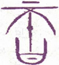
▲ 篆书否
《象传》曰：否之匪人，不利君子贞，大往小来，则是天地不交而万物不通也，上下不交而天下无邦也。内阴而外阳，内柔而外刚，内小人而外君子。小人道长，君子道消也。
此卦《乾》天在上，《坤》地在下，自天地实体见之，在上在下，位置自然得直。然此卦所取，不在形而在气，谓天气不降，地精不升，阴阳呼吸，否塞不通之象，名之曰《否》。盖天地阴阳之气，不相交通，虽造化亦无能作用。其交通不正，以致上下否塞，数十百年中时或有之。尝闻天明年中，夏大旱，太阳之色，赤如丹砂，五谷不登，天下饥馑，即天气不降，地精不升，《否》之时也。“否”字分之为不口，即谓凶荒，万民不得口食也。《彖传》曰，“天地不交而万物不通也”。《泰》《否》二卦，《彖传》始用“则是”二字，犹曰其故不过如是，非有他故也。
以此卦拟人事，凡一家之中，上卦为父兄，下卦为子弟，父兄过于刚猛，子弟过于愚柔，上下性情不合，以致动辄相左，百事乖张，往来悉是奸邪，仆妾敢行背逆，或凭空而启狱讼，或无故而陷飞灾，钱财耗损，声名破裂，家道之日替，实由时运之否而来也。推否运之极，年时则风雨不调，疾病则胸膈不通，经商则有货难销，求名则历试被黜，虽有善者，亦无如何也，故曰“不利君子贞”。君子亦惟顺守其变，以避患而已。故当初爻，君子惟连类而退，汇守其贞。二爻惟以道自处，不肯屈己从人；三爻则以尸位素餐为羞；四爻则否极泰来，方可乘时而动；五爻否已将止，又惕“其亡”之诫；上爻则“否倾”矣，故曰“后喜”。处否之难如此，苟一不慎，祸必随之，是所谓“小人道长，君子道消”之时也。凡人值此否运，终当守道安命，以俟时运之亨，斯不失为君子也。
以此卦拟国家，《乾》在上，《坤》在下，阳气上浮而不降，阴气下沉而不《升》，上下二气隔绝，是君臣之志不通也。小人柄政而在内，君子退居而在外，一时乘时得势者，皆非君子也，故曰“非人”。国家值此否运，君骄臣馅，国事日非，正道日坏，内则权臣擅政，外则强敌压境，岁时不登，而饥馑洊臻，兵役不息，而疆土日蹙，故曰“天地不交而万物不通，上下不交而天下无邦”。国家将奚由得治哉！此时君子惟居《易》俟命，独善其身，所谓邦无道则隐，故曰“不利君子贞”。小人则洋洋得意，诡计百出，其巧者或将内挟奸邪，外托正真，掩其不善，以著其善，谓之“内阴而外阳，内柔而外刚”。又或收罗君子，以张羽翼，如王莽之礼贤下士，藉以文奸，即二爻之“包承”是也。是以小人日进，君子日退，谓之“小人道长，君子道消”也。“道”字中，包括天之阴阳，地之刚柔，国家之治乱，内外之处置，进退得失，其义甚广，所以明《否》之运，皆由阴阳不交和而来。《易》之系辞，《泰》则归之于天，否则责之于人，故《泰》之《大象》曰“财成辅相”，不敢贪天功，《否》之《大象》曰，“君子以俭德辟难，不可荣以禄”，圣人垂诫之意，可谓深也。
通观此卦，下三爻者《否》之时，为小人用事，上三爻者否运已极，为趋《泰》之渐。初六虽小人并进之时，亦未尝无君子，君上亦未尝不求士也。在下之君子，不忍忘君，见可进而进，故曰“贞吉”。六二，当否之时，君子固当退避，然或有枉道行权，屈身济世，如汉陈平之于诸吕，唐狄仁杰之于诸武，亦足以救否也，故曰“包承”。又“包”者，苞也，“包承”者，受苞宜也。君子处浊世，往往独立廉介之节，为小人所畏忌，不啻不能保身，且不利于国家，故有姑受小人之苞直，以晦清节也。是随流扬波之士，谓之“包承”。又有痛恨小人，而欲去之，因势有不可，姑以利啗之，以潜消其凶焰，即枉道行权之计，亦谓之“包承”。在小人而能“包承”君子，是小人中之君子也；君子受小人所“包承”，是君子中之小人也。大人当否，必不受其包，故亨。六三，小人之尤者，本欲伤害君子，尚蓄而未发，今感君子之德，内省而羞耻，故曰“包羞”。盖君子遇凶顽，使之畏，不如使之耻。九四，当阳来之初，为转《泰》之渐，上近九五，君子见泰机之已动，方将出而济否，故曰“有命无咎，志行也”。九五，明君在上，从容而体否，即中兴之君也，故曰“休否”。上九，否运倾消，已及泰来之时，故曰“倾否”。“休否”之后，又恐其正之复陷于邪，治之复入于乱，故有“系于苞桑”之戒。夫天地以好生为德，圣人以思治为心。人君而知此，必思所以杜祸患之端；人臣而知此，必思所以严邪正之辨；小人而知此，当亦知所以变也。
此卦《泰》之反，而次于《泰》，盖人情安乐，则生骄情，骄情则生凶咎，是自然之势也。故《序卦传》曰：“泰者通也，物不可以终通，故受之以否，”然人能畏天命，应时而守中庸之道，纵令时运之否，可使转而趋泰。故否而泰，保泰而期其不否者，君子之心也；泰而否，任否而不期复泰者，小人之心也。此卦天气归地，隔塞而为否，否运之来，虽为天运之使然，而君子不敢委之于天，必欲尽其道以济其否。盖《泰》卦先言往来，以时而言；《否》卦先言“非人”，属人而言。《泰》者时为之，《否》者人为之。益知天道未尝不欲长泰，人实为之。谓之何哉？惟君子为能以人胜天，故天与人常相因者也。
《大象》曰：天地不交，否。君子以俭“德辟”难，不可荣以禄。
“天地不交”，即阴阳二气闭息之会也。此时君臣乖睽，上下离叛，内政不修，外乱交迫，是无道之极也。所谓“天地闭而贤人隐”，君子于此，惟当潜身修德，隐居避禄而已，若犹萦情利禄，恐禄之所在，祸即随之，至此而始欲避难，已不及也。是以君子必韬光匿彩，穷约自守，避之惟恐不远，即有以禄来“包承者”，君子亦不受其包，盖惟知以德为荣，而不知以禄为荣也。
【占】 问时运：目下诸事不利，宜慎守，不宜妄动。
○ 问营商：宜买入，不宜卖出，隐藏待价，后可获利。
○ 问战征：不利攻，宜退守。
○ 问家业：惟宜克俭克勤，方可免祸。
○ 问疾病：是痞隔之症，宜节饮食。
○ 问生产：恐生男不育。
○ 问失物：恐不可复得。
○ 问婚嫁：有分离之象。
○ 问谋事：不成。
初六：拔茅茹，以其汇。贞吉，亨。
《象传》曰：拔茅贞吉，志在君也。
“拔茅茹，以其汇”，解见《泰》初九下。此卦与《泰》卦虽同，而别分内外，以气运变迁言之。下卦《坤》，为《否》中之否，上卦《乾》，为《否》中之泰。此内卦之三阴相连，犹《泰》内卦之三阳相连，故初爻之辞，与《泰》初爻同。惟此爻以阴柔之小人，三阴相连，一阴起则众阴并起，例如大奸得志，群奸竞进，谓之“拔茅茹以其汇”。初之时，小人恶迹未形，且与四相应，尚有改而为君子之意，故圣人不虑绝之，而教之以贞，如能祛邪从正，以道匡时，固可得吉而亨也。《象传》曰“拔茅贞吉，志在君也”，谓小人初时得位，亦未尝无忠君爱国之心，苟与君子并进，能从君子之道，即可为君子也，较之只知有身，而不知有君异矣。
【占】 问时运：吉，宜以合伙谋事。
○ 问营商：于新立商业，用人宜慎。
○ 问战征：当牵左右营，合队并进。吉。
○ 问家宅：主有亲戚同居，吉。
○ 问疾病：恐患传染之症，然无害也。
○ 问六甲：生女。
○ 问失物：可得。
六二：包承。小人吉，大人否亨。
《象传》曰：大人否亨，不乱群也。
“包承”者，谓承顺于上，下顺上，臣承君，阴为阳所包之义。“小人”，皆指占者德位，及事之大小而言。夫为臣者不一，有事人君者，有安社稷者，有天民者，有大人者，如六二则事其君而为容悦者也。此爻柔顺中正，上应九五，小人之巧者，包承容悦，以得其君之宠幸，爵禄之崇，赐予之丰，可为吉矣。然阴柔不才，当否之时，无开通闭塞，拨除骚乱之力，但与上下二阴，为阳所包。以其能包容君子，礼贤下士，藉作攀援，较与嫉正妒贤，残害君子者，固有间焉，故曰“包承，小人吉”。而在大人，则惟固守其否，穷居乐道，必不肯委曲以效其承，其身虽否，道自亨也。盖志高品洁，断不随流扬波，混入于小人之群，故《象传》曰“不乱群也”。盖可见君子处否，不失其道也。
【占】 问时运：目下顺适，能以宽容待人，万事皆吉。
○ 问商业：买卖皆利。
○ 问讼事：防有贿赂伪造等弊，始审或不利，上控则吉。
○ 问家宅：家口平安，年老家长，或恐有疾，亦无害也。
○ 问战征：必可获胜，主将或有小害。
○ 问失物：须就包裹内见之，必得。
○ 问生产：得女，产母有疾，无妨。
【例】 明治二十二年春，亲友某氏，访余山庄，某氏系卖蚕丝为业，曰：今年横滨丝价大昂，势必随日腾贵，欲归吾乡奥州，多请办之，占一大利，请占其得失。筮得《否》之《讼》。
断曰：此卦天升而在上。地降而在下，拟之物价，有高低悬隔之象。《彖》辞曰“大往小来”，明明言去出之金大，而收人之利小也。据此占，则有损无利必矣。在足下以生丝为商业，际此时机，固未可袖手旁观，当授一有盈无亏之计。爻辞曰“包承，小人吉，大人否亨”，吾劝足下归于奥州，买卖生丝，可效牙保之行，今日所买，即今日卖之，获利虽微，保无亏耗，万不可作一抛万金之想。所谓“包承，小人吉”者，盖明言小利则吉也，若必以巨万购买，恐货方买入，而时价低落，且各处蚕丝贩集，货多价跌，恐后日价亦未必再腾也，谓之“大人否”。
后某氏趋福岛地方，从事生丝卖买，一时丝市腾贵，人皆争购，未几，价忽低落，买者均多损失。氏独信此占，斯不亏本，且得微利。
六三：包羞 ［65］ 。
《象传》曰：包羞，位不当也。
羞者，耻其非之谓也；“包羞”者，掩蔽羞辱也。此爻居内卦阴之极，为恶既深，既昧于审时，又短于量己。今《否》中之否既去，《否》中之泰将来，有为之士，出而图治，施其才力，正宜拨乱反正，以济国家之否也。乃六三阴柔无才，不中正而在阳位，较六二更为凶险。六二尚欲包承君子，六三则已有伤害善人之意，但当否运已转，恶势已衰，欲伤不能，见得君子，反觉自形羞耻，是以曲意掩饰，谓之“包羞”。内羞而外包，其中心之凶险，未可测矣。不言凶者，其既知羞，当必自知其凶也，《象传》曰“位不当也”者，谓其不中不正，柔居阳位，不得其当也。
【占】 问时运：目下正当好运将来之际，宜谨慎自守，以避羞辱。
○ 问商业：防内中暗有耗失，外面仍然瞒盖，以用人不当也。
○ 问家宅：恐内行不修，有墙茨之羞。又不宜以妾作妻。
○ 问战征：防为敌军所困。
○ 问疾病：防以寒包热之症，恐药不对症，宜急看良医。
○ 问讼事：恐辨护士，不得其当。
○ 问失物：防窃者含羞自尽，反致多事。
○ 问行人：防其人恋女色，一时未归。
【例】 明治中兴以来，迄今二十有余年矣，文运大兴，学者彬彬辈出，而其学贯汉欧，识彻古今，受博士之宠敬，为一世士君子之楷模者，独有我敬宇先生而已。先生讳正直，幼字曰敬助，姓中村。父某豆州宇佐美村人，以农为业，弱冠好学，来江户，其后纳娶武州幸手驿农之女。居数年，患无子，祈小石川牛天神祠，遂举一男，即先生也。先生天资慧敏，甫三岁，能作字，七岁善赋诗。当时贤太守德川齐昭（水户藩主）、岛津齐彬（广岛藩主）、锅岛齐正（佐贺藩主）皆闻其早慧，奇之，召见使之赋诗，诗成，声律整齐，句意俱佳。三侯感叹不措，或疑其父预所教，留之旬日，复试以他题，愈出愈佳，三侯益奇之，敬以神童。稍长，入昌平学校，勤勉超越侪辈，学业益进，未几为助教。年二十二，幕府命列布衣格，诸老辈无不钦羡者。及幕府与外国缔结条约，置蕃书调所，以先生为其头取。既而先生奉命，率生徒隽秀者数十人趋欧洲，未及归，国势一变，王室中兴。先生既归，卜居于静冈县下，著《西国立志编》，公之于世，盖先生口自翻译，夫人某氏笔之云。凡先生所翻译之书，世人争购读之，纸价为贵，先生因是得巨利。先生谓此资，由学而所获，复宜用之于学事，乃设同人社，大聚后进，延师教授，受其熏陶而辈出者，不可指数。初余闻先生名，渴思一见，明治十二年，由栗本锄云、向山黄村两氏为介，始得相识。先生温粹端严，一见而知为德行之君子也。余既缔交先生，意气投合，恍如旧识，与之谈《易》，数日不倦。余窃重先生以为益友，每相见，欢然莫逆，十数年如一日。明治二十四年，余漫游京摄，留数十日而归。时既夜，有忽赍急信者，受而见之，为先生之息一吉氏书翰，报先生之疾笃。余惊叹心动，一夕不能寐，翌日早起，直访其庐。时先生患中风，困卧褥中，见余之至，欣然目迎，如有欲言，然舌端涩缩，不能出口，仰出右手，书卜字而示。余知其意，筮得《否》之《遁》。
断曰：此卦内卦为地沉下，外卦为天腾上，是心魂归天，形体归地，即心身相离之象。且“否”之为字，从不，从口，为口不能言，是气息将绝之时也。今六三在上下之境，变则为《遁》，是先生将避俗世而超升仙界也。九四为翌日之未来者，其辞曰“有命无咎，畴高祉”，“有命”者，即所谓死生有命也；曰“无咎，畴高祉”者，行将逍遥极乐，永享天神之福祉矣。变而为《观》，《观》者祭祀之卦也，先生殁后，世人追慕其德而祭祀之。
据占，已知先生翌日将殁，乃书《否》之六三示之。先生固知《易》理，一见首肯而瞑目，其状盖自知天命，顺受其正。翌日果溘然仙逝，乃以神祭葬之云。
呜呼！君子视死如归，余于先生见之。
九四：有命无咎，畴 ［66］ 离祉。
《象传》曰：有命无咎，志行也。
“命”者，天命也；“畴”者，类也。“畴高祉”者，谓三阳同类而共受福也。此爻上近至尊，有济否之才，居济否之位，若不待君命而举事，急于图功，虽济亦不能无咎。要必奉五之命令，斯名正言顺，才力足以除奸，威权一归于上，故曰“有命无咎”。迨事平论赏，固不独为一己之功，凡与谋诸贤，皆得并受福祉，故曰“畴离祉”。“离”者，丽也；“畴”者，谓同类济否之三阳也。夙具济否之志，向以未得其时，故未行也；今则上奉君命，进而举事，乃得行其夙志，而克奏济否之功也。
【占】 问时运：目下已得盛运，随意谋事，必获利益。
○ 问商业：大得转机，但须立定意志，审度市面，从前所失，今可复得，且获盈余。
○ 问家宅：宅运已转，吉。
○ 问战征：命将出征，大吉。
○ 问疾病：命根牢固，无害。
○ 问失物：必夹入在用品物中，寻之即得。
【例】 秋田县人根本通明氏，近世之鸿儒，长于经学，尤精《易》》义，博学洽闻，有名当世，余素相亲密。曩者余欲著《易断》，相与商碓，曰：君邃古《易》于先圣古哲之说，无不究其精奥，请君著《易》义，余述自得之活断，共公示世。氏大喜，奈氏虽有此意，懒于执笔，余屡促之，未尝从事。余乃转计曰：君精《易》学，世人所共知，好《易》者必叩君之门，当今有精《易》学而长文才者，请介绍之。氏乃以齐藤真男告。此人旧住仓藩士，久奉职于滋贺县，后转任元老院书记院书记官，近时闲散。余拟延请齐藤氏，先占其编述可否，筮得《否》之《观》。
断曰：《否》者塞也，故夙无面之识，今得友人介命，得以相晤，共事著作。余虽通《易》理，长活断，文章非吾所能，幸逢齐藤氏，得以成余素志，齐藤氏得亦藉显其长技，则“畴离祉”之占也。
团访齐藤氏，告以余之意中，氏欣然许诺，遂得从事《易断》之编纂。《易断》十卷，脱稿之后，氏任岛根县某郡长，颇有良宰之称，不幸罹肺患，以二十二年五月没于神户，令余不堪悲怆。余永诀良友，追怀往事，特记之。
九五：休否，大人吉。其亡其亡，系于苞桑。
《象传》曰：大人之吉，位正当也。
“休否”者，谓能休止其否运。“苞桑”者，谓桑之丛生者也。“系”，维系也，谓系之而坚牢也。此爻刚健中正，而居尊位，其才德威望，足以休否而开泰，是有德有位之大人也，故曰“休否，大人吉”。六二“大人否”，以六二之时，大人有德无位，时会未来，只得守其否。至居九五，则德位兼备，适当体否之会也。然否之方休，而泰未全复，譬如病之新愈，痛痒虽除，元气未充，苟不慎起居，不节饮食，则旧患再作，其祸更烈，危亡立见。是以休否之后，内怀敬畏之心，外尽保护之计，常恐天命之难知，人心之难保，夙夜深虑，凛凛灭亡，其虑患深，操心危，正不容一刻偷安也，庶几长治久安，可得保也，故形容其危曰“其亡其亡”。不嫌反复重述，垂诫深矣！曰“系于苞桑”，象旨以二在巽下为桑，初三与二，同类系之，令桑止于其下，无复向上而长，则根本不摇，三阳得并力休否，而启泰运也。无道之君，自谓不亡，故必亡；有道之君，常怀其亡，故不亡。《系辞传》引伸其辞曰：“安而不忘危，存而不忘亡，治而不忘乱，是以身安而国家可保也。”《象传》曰“位正当也”；六二曰“位不当”，属之“非人”，九五曰“位正当”，谓之大人，故六二日“大人否”，此则曰“大人吉”也。
【占】 问时运：目下渐入佳境，惟安而不忘危，百事皆吉。
○ 问商业：恰当绝好机会，但须改用伙友，谨慎做去，必获利益。
○ 问家宅：祖业深厚，吉。
○ 问战征：暂宜休战。
○ 问疾病：有碍。
○ 问讼事：和。
○ 问失物：防难复得。
○ 问行人：不利。
○ 问生产：大人无碍，小人难保。
【例】 明治十八年五月，出云大社教正千家尊福君，枉过余庄，叙寒喧，既而曰：顷日传闻政府为筹人民之归向，有定国教之议，所谓国教者，我国固有之神教乎？或佛教乎？抑耶稣教乎？未悉庙议何属。是虽非我侪所敢议，然欲预知其归着，请劳一筮。余乃先筮神道之气运，筮得《否》之《晋》。
断曰：此卦阴进阳退，智术盛行，道德渐衰之象。又《泰》为通，《否》为塞，占神道气运，得此卦，即为神道闭塞之时也。卦象阳在上，阴在下，显见上下隔绝，威灵不通之象。阴阳消长之理，非人所能为力，《序卦传》曰，“物不可以终否”，且《否》自《遁》来，一阴进则为《观》，爻辞曰“观国之光”，可知观神灵显赫，大《观》在上，将复光大我国教也。爻辞所云，能系神道气运于将亡者，惟有苞桑一缕而已。苞桑丛生，一根数茎，殆可充谍蓍之神草乎？复兴我国上古卜部所掌太卜之道，有事占间神意，以感动天神地抵，守护国家，其灵妙有不可思议者。以此神卜可传神道于悠久，使人民永仰神威也。是我国诸神灵，特假卦象以示世；且我国古称扶桑，维系扶桑之神教而永存也，故谓之“神道”。近时各国创兴理学，独吾国崇奉太卜神事，使彼理学者敬服，因更示实验，俾世人敬畏神明，知神教系留而不亡者有在也。
教正大感此言。
【例】 明治十五年某月日，某贵显来谈曰：方今我国有四十万之士族，皆以解旧禄陷贫困。”夫衣食足而知礼仪，古今之常则，今此辈遭此穷厄，或转而起不良之事，未可知也。欲代谋安置之策，请为一筮。予曰：予亦向为此辈忧之，谨筮之。筮得《否》之《晋》。
断曰：方今我国士族贫蹇，甚于穷民之惨者，无地无之。昔者乞丐之徒，其生来本贫，贫固其常，至于土族，本非贫者也。袭祖先之功绩，得膺俸禄，生平不知经营为何事，衣租食税，习惯为常。维新一变，俄解世禄，于是百方计划，或从事商业，或劳力农务，双刀纨绔之余习未去，诸务向不习谙，凡所谋划，有耗无赢，衣食乏资，室家交谪，其困苦殆不可言状。天下四十万之士族，陷此穷厄者居多。在往时守世禄之常，以一死报君为本分，其临事也，以有进无退为荣誉，零落至今，犹凛凛乎不失其勇气。其从来行为，固与农商辈大异，是以不能为农商之事也。惟当与应分产业，使之尽其所长，是当道之责也。此爻辞曰“其亡其亡”者，盖谓士族生计之困难，殆将濒死；“系于苞桑”者，谓足维系其将亡，惟有苞桑而已。爻象将令此辈士族，开垦新地，种艺桑树，使之专营养蚕制丝之术，维持其家计也。今试论其方法：关东地方，多荒芜之原野；关西地方，多坦夷之山郊，其原野之杂草，可供肥料，山郊之荆棒，可供薪柴。例如其肥料，南亚米利加有鸟粪，其价甚廉，今政府贷与资本及一舰，输载我国产，交换彼鸟粪，沽买之于各土人民，购入杂草丛出之原野，使旧士族开拓之，可种之以桑也。为此举也，布设铁道于全国，使兵士实地演习，为兵营多造设家屋，如一村落，使彼士族移住于此，以男子依常备兵之年限，为屯田兵，以练习军事；使女子勤牧畜养蚕之业，是其大略也。若夫详细处置，一任当局划策而已。如是施政，今日贫苦士族，得以安居乐业，国家之盛业，无复加于此者也。
《象传》曰：《否》终则倾，何可长也。
“倾否”者，谓倾毁否运，而渐复泰运也。此爻以阳刚之才，居《否》之极，能倾毁其否者也。九五之君，既有休否之务，上九居其后而辅佐之，鞠躬尽瘁，能恢复既坠之国运，故曰“倾否”。盖《否》《泰》本有循环之机，处《否》之极，其势必倾，否塞已尽，泰运将至。然当否之时，要不可委之天运，终当尽其人事，故九五不日否体，而曰“休否”；此爻不曰否倾，而日“倾否”，见运会之转，人力居多。夫天道开导人事，人事赞辅天道，拨乱者贵夫德，成治者在夫时。上九阳刚，而具有为之才，居否之机，又值可为之极，故能拔乱反正。从前忧苦于否塞之乱，今乃复遇康泰之盛，安宁喜乐，谓之“先否后喜。”盖往者无不还，终者无不始，是天运循环之定理。假令否之时，天地闭塞，阴阳不交，天下无道，而小人得时，一旦否倾则泰来，即天地生生之道也。《象传》曰“何可长也”，是之谓也。
【占】 问时运：亨通。
○ 问商业：春夏不利，秋冬大吉。
○ 问家宅：迁居大吉，老宅不利。
○ 问讼事：即日可结。
○ 问战征：小败大胜。
○ 问六甲：生男。
○ 问失物：即得。
○ 问疾病：即愈，但复发可虑。
【例】 横滨商人某来告曰：目下商业上，有一大事，欲谋之于东京友人，请占其成否如何？筮得《否》之《萃》。
断曰：此卦天地之气，塞而不通之时也。足下欲与人谋事，其人必因事疏远，心气不通，非知己之友也。今得上爻《否》之终，是将释其前嫌，重寻旧好，倾谈之下，彼此愉悦，谋必可就，谓之“倾否，先否后喜。”
其后某来谢曰：东京之谈，果如贵占。
13 天火同人
《同人》一卦，《离》下《乾》上，故合为“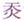 ”字，有光明上际溥见之象。《乾》天也，《离》火也，天气上升，火性炎上，与天同也，故为《同人》。按《同人》之卦，上承《否》，天地不交为《否》，上下相同为《同人》。盖与《否》相反，而足以相济，故虽同道相与，乃能济否也，是卦之所以次《否》也。
同 ［69］ 人：同人于野 ［70］ ，亨。利涉大川，利君子贞。
《同人》之道，要在广远无间，中外如一，斯谓之大同。“野”谓旷野，取远与外之义；“于野，”则上天下地，空阔无际，无所容其私心，斯物无不应，人无不助，故“亨”。心无私欲，则地无险阻，无往不利，虽大川亦可涉。但同亦分公私，合我者同，不合者异，是小人之党也，非同也；要必公正无私，浑然天心，虽千里之遥，干载之后，志无不合，道无不同，故曰“利君子贞”。
《象传》曰：同人，柔得位得中而应乎《乾》，曰《同人》。《同人》曰，同人于野，亨，利涉大川，乾行也。文明以健，中正而应，君子正也。惟君子为能通天下之志。
《彖》以卦体释卦义。柔谓六二，《乾》为九五，六二以柔居柔，得位得中，以应九五，故曰“应乎《乾》”。《乾》者健也，健而能行，足以济险，故曰“利涉大川，乾行也”。“文明”者，《离》之象，刚健者，《乾》之德。二五皆中正，得以相应，君子之道也，故曰“君子正也”。君子心公，公则天下感之，君子道正，正则天下化之，遐迩一体，上下同德，则天下之志皆通矣。惟君子能之，故曰“惟君子为能通天下之志”。
以此卦拟人事，全卦五阳一阴，六二一爻，以阴居阴，位得中正，为内卦之主，上应九五。全卦之象，恰如以一女居五男之中，以一女对五男，宽裕温柔，周而不比，众阳和悦，而同心合意，天下皆通。“同人，柔得位得中而应乎乾”，不曰应九五，而曰应《乾》，可知不专应九五一爻，而遍应众阳，为“能通天下之志”也。几天下之事，以一人独成则难，与人共成则易，而与人之道，有公有私，公则道合，私则道离，且以私同者其道小，以公同者其道大。譬如平原，一望无垠，绝无隐蔽，是即“同人于野”之象也。内卦《离》为明，为智，外卦《乾》为正，为健。人能得夫《离》之明，《离》之智，以应乎《乾》之为正为健，以此而谋事，则事无不利，以此而涉险，众险皆可涉，即以此而交天下之人，则天下之人志无不通，是率天下而大同也。
以此卦拟国家，上卦为君，至刚至健，威权赫赫，卦中之九五也；下卦为臣，得位得中，文明有象，卦中之六二也。二与五为正应，君臣合志，正明良际会之时也。《同人》之卦，次于《否》后，否则“天地不交，万物不通”，其要在于不能“通天下之志”，惟《同人》为能通之。通则为《泰》，是国家所以济否开泰者，实赖《同人》之力也。《序卦》曰，“物不可以终《否》，故受之以《同人》”，可知天地不交为《否》，上下相通为《同人》。是故有国家者，君得其位，又当得其刚之中，臣得其位，又当得其柔之中，庶几刚柔相应，上下合志，虽大川之险而可涉，天下之志而能通。且六二之臣，不特上应九五，又必比合初、三、四、上诸阳，一心一德，同朝共济，体《离》之明，法《乾》之行，出以至正，不涉偏私，斯天下之人，正者感而通，不正者亦化而通，安往而不通，即安往而不同哉！
通观此卦，上卦为《乾》，下卦为《离》。《离》本《乾》也，《坤》交于中而生《离》，其象为火。盖《乾》本元阳，火者阳之真气，与《乾》同体，故曰同。天之生人，耳同听，目同视，口同味，心同觉，一人之所是，万人同以为是，一人之所非，万人以为非，亲者同爱，长者同敬，人虽至愚，此心此志，无不同也。故孟子曰：“圣人先得我心之所同然者也”，“天之所与于我者，不异也”。盖公则无不同，一涉私欲，遂致去《离》乖僻，不可复同，然其秉彝之良，卒不可昧也。是天之所与于我，而其不可昧者，离也；不可异者，乾也。故人秉《离》之明，行《乾》之健，至公无私，自然亨通，险阻化而为平地，虽涉大川，亦无不利，是《同人》之所以亨也。观诸爻无同之象，盖凡人有意求同，便涉于私，私则不同，盖同者不言同而自同也。初九曰“于门”，谓出外无所私呢也，故“无咎”。六二曰“于宗”，虽中且正，以涉宗党之私，为可吝也。九三以刚强居二五之间，强欲求同，虽伏藏三年，终不敢兴，知惧，故不凶也。九四近五，如隔塘耳，知义弗直，弗敢强攻，则为吉也。九五刚健，应二爻明，当其未通，不胜愤郁，一旦贯通，自觉喜悦，故曰“先号咷而后笑”也。上九《遁》居郊外，无意求同，故“无悔”。合而言之，《同人》一卦，初、上二爻，“于门”“于郊”，皆在外也，故无咎悔；二有“于宗”之吝，三有戎莽之祸，五有“大师”之患，是皆同于内，故无吉者。盖“于宗”不若“于门”，“于门”不若“于郊”，“于郊”不若“于野”。总之出外则无党援，亦无阿好，地愈远而心愈公。公则平，平则通，故圣人以四海一家，中国一人为心，斯谓之大同矣。若求同于近，虽同亦私，是以《彖》辞首曰“于野”，可知《同人》之道，当以天下力量者也。
《大象》曰：天与火，同人，君子以类族辨物。
此卦《乾》上《离》下，《象传》不曰火在天下，而曰“天与火”，盖以《乾》为日，《离》亦为日，象相同也，故曰“天与火”，取其同也。《乾》阳上升，《离》火上炎，性相同也，犹人生性无不相同，故曰《同人》。君子法乾之健，以类其族，用离之明，以辨其物；于异中求同，故族必类之，于同中求共，故物必辨之。凡异之不可不明辨，益知同之不容以相混也。即此而推之，知人有善恶邪正之分，心有是非公私之判，君子亦必当类而观之，辨而别之。如周之与比，党之与群，其貌若相似，其心则自别。要必明析严辨，不稍假借，是异其所不得不共，乃能同其所不得不同。此所以为同之大者也。
【占】 问时运：目下大有升腾之象，且得朋友扶助，大吉。
○ 问商业：宜于合资会社等业，大利。
○ 问家宅：得合家和悦之象，吉。
○ 问战征：主军士同心，即宜调兵进攻，大利。
○ 问疾病：是火症也，恐医药有误，宜别求良医。
○ 问讼事：防有同党私庇，一时未可结案。
○ 问六甲：生女。
○ 问失物：须细细于物类中寻觅，乃得。
○ 问行人：即日可归，必与友偕来。
初九：同人于门，无咎。
《象传》曰：出门同人，又谁咎也。
初九居一卦之始，为《同人》之首也。此卦以二爻为主。初变阴下卦为艮，象门，故曰“于门”，亦不愿独同于二，故欲出门以广交也。门以外无所私昵，故“无咎”。《象传》则颠倒其辞曰，“出门同人”，显言一出门外，天地万物，孰不吾同？不曰无咎，而曰“又谁咎也”，盖无咎，第属己言，“又谁咎”，则见门外之人，皆乐与之同，谁复得咎之者？《易》以人名卦者，《家人》《同人》两卦。《家人》者，一家之人，宜位正夫内；《同人》者，天下之人也，宜志通夫外。《易》言“出门”者，《随》与《同人》两卦，《随》曰出门有功，《同人》曰出门无咎，皆以门内为易溺于私，门外则廓然大公矣。
【占】 问时运：目下平顺，宜经营出外，利。
○ 问家宅：一门之内，雍雍和睦，无咎。
○ 问商业：利行商，不利坐贾。
○ 问疾病：宜避地调养，无碍。
○ 问讼事：防有惩役之患，宜预出躲避，可以免咎。
○ 问失物：须于门外寻觅。
○ 问六甲：即时可产，得男。
【例】 一日友人某氏来请占气运，筮得《同人》之《遁》。
断曰：此卦为出门求友之象也。交际之道，宜与善人同，不宜与不善人同。爻辞曰“于门”，《象传》曰“出门”，言出外自得《同人》之助。盖在内则相与者皆亲好，不能无私，私则有咎；出门则往来者皆同与，故无咎也。今占得《同人》初爻，知君必初次出门者也。君可放胆做去，他日必得高位，博众望，可预决也。
某用之，后果大得人望，如占所云。
六二：同人于宗，吝。
《象传》曰：同人于宗，吝道也。
此爻以阴居阴，文明中正，而为全卦之主，卦中诸阳，皆求应二。二与九五为正应，九五为君，居一卦之尊位，二爻曰“同人于宗”，“宗”尊也，言二得同于至尊。在二与五，刚柔中正，时位相应，可谓尽善，但两相亲密，未免偏私，有失至公大同之量。且三四两爻，求同不得，见二与五，同意亲密，致生嫉妒，即所以取吝也，故曰“同人于宗，吝”。《象传》曰“吝道也”，道字最宜玩味，谓一时即未见吝，而已有取吝之道也。《彖》辞以六二得位得中，曰“亨”，爻义以“同人于宗”，曰“吝”，盖卦体主大同，爻义戒阿党也。
【占】 问时运：目下未佳，虽有相助，而相忌者多，未能百事遂意。
○ 问商业：利于大宗买卖，惟须出纳宜留意。得利。
○ 问讼事：不利。
○ 问家宅：以勤俭起家，得长子之力。
○ 问疾病：有魂归宗庙之象，凶。
○ 问行人：即返。
○ 问六甲：生女。
○ 问失物：被拾者藏匿，不见还也。
【例】 明治三年，占自气运，与将来之方向如何。
我国维新之初，明治元年，有奥羽北越之役，二年有箱馆之征讨，天下之形势未宁。三年干戈既息，天下拭目，以望升平。当是时余大有所感，自以生长商家，惟汲汲谋兴家业，未逞计及国事，兹幸遭遇圣代，得与贵显诸公，朝夕面晤，深荷款遇。在诸公毁家纾难，勤劳王事，皆维新之功臣也，如余者得生长今日，际盛运，而于国家毫无建树，实可耻之甚也。兹愿稍展寸长，勉力从公，冀图深厚之报，为此自占现时气运，与进步之方向。筮得《同人》。
断曰：幕府末路，升平日久，政纲废弛，加以外交事起，当时君子不得其位，小人得逞其奸，上下闭塞，秩序紊乱。于是豪杰之士，所在兴起，天下翕然应之，拔乱反正，一变否极之世，得启今日泰平之盛，是即《同人》之卦也。今筮得此卦，《彖传》曰，“同人，柔得位得中而应乎乾，曰《同人》”。以六二一柔得位中正，应上卦九五之中正，是余居民间中正之地位，上与政府之政略相应，同其目的，“柔”者，谓余本无爵位，才力柔弱。曰“同人于野”，谓余本是在野草莽之臣也。“亨”者，谓余之气运与天下之大势，悉当亨通，凡为国家创兴事业，无不成功也。按《同人》一卦，卦体则主大同，爻义则戒偏私，独“于野”曰亨，盖宜远取于外，不宜近取于内也。且《彖传》曰“乾行”，“乾行”者，自强也；曰“利涉大川”，“利涉”者，兴造舟揖也；曰“文明以健”，“文明”者，创修文学也。卦象所言，皆一一示余着手之方向，且教余取法海外之造作，通行于天下，故曰“为能通天下之志”。
余既得此卦象，惟冀有辅政府剧务万一，区区家资，遑足惜乎！明治三年，决志抛资产，先设飞脚船，便内国之运输；次谋创铁道；次建设洋学校，聘教师于外国，以振起教育之业；布设瓦斯灯于横滨港内，至七年之冬，得成此四大创始工业。此四大工业，当时邦人，实未尝着手，余为之创始也。明治七年，瓦斯灯建成之日，荣邀天皇陛下临幸，蒙赐接见。余当时怀藏先考灵牌，冀得同《观》天颜，又荷宠颁进步首倡敕语。拜受之下，荣何如之！
此卦以第五爻为《同人》之主，以年计之，初爻至五爻，恰是五年。今自明治三年，至七年，其间九三之伏莽，九四之乘塘，多有障碍余事业者，然余公平无私，百折不屈，果得奏效。然物盛必衰，势极必变，是天理之常，余虽乘《同人》之运，得成厥事，若味人事穷通之理，知进而不知退，恐有“亢龙”之悔，即《同人》上九诫之曰“同人于郊，无悔”。是《易》理之妙用也，其旨深矣。迨八年，余居神奈川郊外望欣台，优游逍遥，间玩《易》理，以至今日。爰述《同人》之卦义，追怀往事，附记数语。
九三：伏戎于莽 ［71］ ，升其高陵，三岁不兴。
《象传》曰：伏戎于莽，敌刚也。三岁不兴，安行也。
“戎”者，兵戎也。“莽”者，草深处也。此卦六二，一阴居中，卦中诸阳，皆欲与同。三爻接二最近，欲同之意尤切，然二爻中正，为九五正应，不与三同。三爻过刚不中，性情刚暴，位居二五之间，欲用强而同之。然惧二之中正，畏五之刚健，不敢显发，“伏戎于莽”，以俟其机，上升高陵，以窥其隙，至三岁之久，终不敢兴，亦可见小人之情状矣。其不言凶者，以久而不兴，故未至凶矣，然曰“伏”，曰“升”，其凶已露矣。《象传》曰“敌刚”也者，谓其所敌九五刚健，自知不能胜也；“安行”也者，“三岁不兴”，亦安行乎？《离》为甲，兵戎之象，互卦《巽》，为隐伏之象。此卦九三九四，不言同人者，两爻共有争夺之象，非同人者也。此爻变为《无妄》，其六三之辞曰：“无妄之灾，或系之牛，行人之得，邑人之灾”。可以见其有凶咎也。
【占】 问时运：目下直潜伏，三岁后方可出而谋事。
○ 问商业：宜开山林，三年后大可获利。
○ 问家宅：防有盗贼窃伺。
○ 问战征：须防敌军埋伏。
○ 问讼事：虑有意外葛藤，一时不了。
○ 问失物：须于丛草中寻之，或山上草中。
○ 问行人：俟三年后可归。
【例】 明治二十四年，某贵显来请占当年气运，筮得《同人》之《无妄》。
断曰：此卦有公同谋事之象，故曰《同人》。在世间智者少而愚者多，古今皆然。今人往往采取朝野大众之论说，谓之公议，所云谋野则获者是也，故《彖》曰“同人于野，亨”。及三爻刚而不中，强欲求同，不曰“于野”，而曰伏莽，又自知畏惧，终久而不敢兴。其象如是，气运可知，请俟三年后而谋之可也。
后果如此占。
九四：乘其墉，弗克攻，吉。
《象传》曰：乘其墉，义弗克也；其吉，则因而反则也。
“墉”者，城垣也。此爻以刚居柔，而不中正，四与二非应，亦非比，而欲强同于二，且中间隔以九三之“墉”并忌二五粮密，故欲“乘其猜”而攻焉。既思九五刚健中正，攻之于义不直，于势亦不敌，必弗能克，故不攻也。即此转念间，悔过而改善，乃得变凶而为吉，谓之“乘其墉，弗克攻，吉”《象传》曰“义弗克也”者，谓不自逞其强，而能反省夫义，是以吉也。“困而反则也”者，谓不义之举，必陷困厄，止其邪念，而所法则也。此卦名《同人》，三四两爻，均有乖象。人情同极则必异，异极则复同，犹国家之治极而乱，乱极复治也。是人事分合之端，即《易》道循环之理也。凡《易》曰不克，皆以阳居阴之爻，惟其阳，故有《讼》，有攻；惟其阴，故弗克也。此爻及《讼》之九二九四，如“不克讼”，皆是也。
【占】 问时运：目下直退守弗动，吉。
○ 问商业：宜垄断货物，待价弗售，后必获利。
○ 问家宅：宜修葺墙垣，吉。
○ 问战征：直坚筑营磊，防敌袭击。
○ 问讼事：今虽不直，后反得胜。
○ 问失物：久后可得。
○ 问疾病：虽凶无害。
【例】 友人来告白：今有一业可兴，请占其成败。筮得《同人》之《家人》。
断曰：此卦有合众兴事之象，其事必关公共利益可知也。九五《乾》之有金力者，与六二《离》之聪明者，阴阳相应而成事，其间有九三九四两爻，嫉妒其利益，于中阻挠，以谋占取之象。足下为占事业，以爻辞观之，知足下或羡彼之事业，谋彼之权利，将夺取而代之乎？足下一时不露声色，惟阴使同意者九三，为之计划，即爻辞所云乘墉，如乘垣而伺敌，潜伏而谋事之谓也。然此事必难遂志，不如中止，谓之“弗克攻，吉”，故《象传》曰“困而反则也”。
后有所闻，果如此占。
九五：同人，先号咷而后笑，大师克相遇。
《象传》曰：同人之先，以中直也。大师相遇，了相克也。
“号咷”者，谓悲忧之甚而啼哭也。此爻君位，当与天下同应，若独与二亲密，非人君之道，即非大同之道也。是以为九三九四所嫉妒，隔绝阻挠，使不得与六二相遇，遂致兴师攻克，始得相遇，盖其初以不遇而号咷，今得相遇而笑乐，谓之“同人，先号咷而后笑，大师克相遇”。在五与二，刚柔相应，上下相洽，其情似私，其理本正，故《象传》明其“中直”，《彖传》称其“中正”，是师壮而得克也，岂得以私匿病之哉！
又一说：长国家而欲和同众人，其间有猜疑而离间者，使之隔绝而不相遇，极之号咷悲泣，使离间者亦服其德，复得和同而笑乐也。
【占】 问时运：目下正当欢乐之时，从前苦志，今得遂愿。
○ 问商业：虽小有挫折，终获大利。
○ 问家宅：防有惊惶之虑，然终得平和也。
○ 问疾病：先危后安。
○ 问讼事：须请大好辩护士，方能得直。
○ 问行人：防中途有阻，须缓得归。
○ 问六甲：生男。
【例】 明治二十五年三月，余漫游骏州兴津，阅新闻纸，知北海道炭矿欣道会社堀基氏免职。余为是社评议员，遂速归京，与同事涩泽荣一、汤地定基、田中平八等，共为会社周旋，方得协议，评议委员定以汤地与余两名中，充任社长，请愿于该官厅。同事诸君，预问余之诺否，余先取决于筮，筮得《同人》之《离》。
断曰：此卦六二一阴得时，又得中正之地位，上下五阳应之，余之就任社长也。九五之政府，九三之北海道厅长官，九四之大臣，初九之社员，上九远方之株主，不特不倡异议，定必同心喜悦可知也，谓之“同人，柔得位得中而应乎《乾》，曰《同人》”至处之之道，如平原广野，无所隐蔽，一以光明正大为主也，谓之“于野，亨”。余虽不才，于此等事业，久经历验，加之以六百五十万元之金力，与政府补给之利子，余惟公明正大，毫无私曲，可得胜此责任，谓之“文明以健，中正而应，君子正也”。此会社在人迹稀绝之区，凡执工业者，多非常劳动，亦不免暗生情弊，此亦势所必有也。一旦革绝其弊，必生诽谤，然既任其事，自当任怨任劳。谚曰一功能服，百论得快，政理则疑谤自灭，谓之“君子为能通天下之志”。即有如九三九四，以不得兴事，生出意外枝节，百计窥伺，相谋窃夺，余当预定目的，终不受其害也，谓之“同人先号咷而后笑，大师克相遇”也。
余得此占，承诺社长之任，后果如此占。在任五百四十日间，会社之整理，幸博同人之信用，价格四十四圆之株卷，腾贵至八十四元，其十三万株，合计五百二十万元，足见会社之盛运也。以在任之日数除之，平均一日，大凡一万元，是可谓全以道德得之者也。呜呼！谁谓为仁不富乎？谓道德与经济相反者，此乃愚而无知者之言也。夫道德之功效，优于区区之经济，不知其几千百倍也。世之好夸大，言内无实学者，宜知所猛省矣！
【例】 明治二十八年四月，我国与清国讲和约成，将遣大使于清国芝罘，交换条约。时法、德、俄三国，联合告我以不可久占辽东，且聚战舰于芝罘，有动辄起事之势，上下心颇不安。各大臣及机密顾问官等，皆赶西京，余亦闻之至西京，会土方宫内大臣、杜边大藏大臣于木屋町柏亭。两大臣谓曰：今日之势，三国联合迫我，其意有不可测者。我军舰劳数月之海战，且有许多损伤，不复适战斗之用，实危急存亡之秋也。占筮决疑，其在此时乎？余曰：曾已占之，筮得《同人》之《离》，请陈其义。
《同人》一卦，二爻一阴得中正，在五阳之间，辉离明于宇内之象。卦德有文明与刚健，通志于天下时也。今得五爻，则知大事必遂也。法、德、俄三国，联合妨我行为，且欲逞溪壑之愿，聚合军舰于芝罘，又在各要港，悉整戎备，有不愆时期而举事之意，又有夺我所得清国偿金之胸算，其狡计炳如见火。就爻象推究，其中妨阻二五之交者，三四两爻，三爻之辞不云乎？”伏戎于莽，升其高陵，三岁不兴。”“伏戎于莽”者，谓自航海之要路，突然袭击之备；“升其高陵”者，谓从旁窥伺其隙也；“三岁不兴”者，谓等机而动，不遽发也。四爻之辞不云乎？“乘其墉，义弗克也；其吉，则困而反则也。”四与三同意，欲乘隙而起者也，谓之“乘其塘”；然以义有不直，故曰“义不克也”。是亦不能举事而止，故曰“其吉，则困而反则也”。三国之非望如此，天命不许，不足介意也。今得五爻之占，虽忧三国之障，然必得清帝批准条约，喜可知也，谓之“同人，先号咷而后笑”。日后不为宇内各国所轻侮，终得战胜之誉，宜扬国光于万里，谓之“大师克相遇”。占筮如此，我元老何须忧虑？于是两大臣扬眉，不堪欣喜。
后果庙议一如此占，直以商船遣伊东已代治氏于芝罘，交换条约而归。当时三国虽伺我衅隙，无举事之辞，非常之备，无所复用，如《易》辞所示也。
【例】 明治二十九年一月，余避寒于热海，偶得神奈川县吉田书记官报曰：前农商务大臣白根专一君罹大患，入大学病院，内外名医，无所施治，束手待死而已。吾得君之知遇久矣，不堪忧苦，希其万死一生，敢烦一筮。筮得《同人》之《离》。
断曰：白根君疾，一时国医束手，谓症必不治，待死而已。据此占，料君不特不死，且即日愈快，谓之“同人，先号咷而后笑”；其病或必得大汗大泻而愈，故曰“大师克相遇”。但此卦上爻为归魂，今得五爻，则上爻正当明年，明年恐或难保。然上爻之辞曰，“同人于郊，无悔”，此番愈快之后，宜移从近郊闲散之地，远于世累，休息静养，尽我人事，亦足挽回天命，或得无悔。乃记以报之。
后果大患徐徐而愈。德人白耳都氏以下诸名医，不知其快复之理，后余亦访君于病院，面渠夫人，劝以出院之后，宜就闲地休息静养。然君以得复健康，不复应余之劝，翌年果复得疾不治，不堪痛惜。
上九：同人于郊，无悔。
《象传》曰：同人于郊，志未得也。
“郊”者，国都之外，旷远之地。此爻在五爻之上，为无位之地。《同人》一卦，卦中五阳皆欲同于六二一阴，三爻与二相比，其欲同之意尤切。四爻非应非比，然以介在二五之间，亦欲强同于六二。五爻与二为正应，惟此爻居上，与二非应非比，孤介特立，置身荒郊之外，较初之于门更远。无私匿之情，免争夺之患，在六爻中，最为完善，谓之“同人于郊，无悔”。盖《同人》之量，“愈远则愈大，国外曰郊，郊外曰野，“于郊”较野殊近，故“于野”则亨，于郊”则第曰“无悔”。《象传》曰“志未得也”，志即“为能通天下之志”而言，其仅曰“于郊”。犹未能通天下之志也，故曰“志未得也”。
【占】 问时运：目下顺适，诸事无所障碍，但宜在闲散之地。
○ 问商业：宜立业于市尘之外，无忧耗损，一时亦未能获大利益。
○ 问战征：宜在荒地屯营。
○ 问失物：于郊外觅之。
○ 问讼事：恐难得直。
○ 问家宅：平顺无灾。
此卦为归魂之卦，若占命数而得此卦，至上爻必死。《师》之上爻，可参看也。
【例】 有相识会社役员某氏来，告曰：近来我会社头取，与大株主之间，颇生纷议。株主欲开总会，改选社员，又有一派赞成当时之社员者，竞争颇甚。余不自知免职与否，请占前途之气运。筮得《同人》之《革》。
断曰：《同人》者，与人相同也。勿论社员株主，皆思其社之利益，非各谋私利者，惟其所为有左有之差，而遂生纷议也。盖此纷议之来，由五爻之头取，与二爻之支配人，其间过相亲密，致启他人之疑，然其疑可不久解也。如足下不偏不党，无所关系，亦无免职之忧，故曰“于郊，无悔”。郊者，田舍之谓，而离市街烦杂之地也。
后果如此占。
14 火天大有
按：大字从一从人。一者天也，以人贯天，天人一致，所以谓大也。有字从又从月，又手也，持也；月渐渐生光，满则光大，有大有之象焉。此卦《离》上《乾》下，《离》炏，《乾》作三，合作 字。卦位六五一阴居尊，五刚之大，皆为尊位所有，故曰《大有》，遂以《大有》名卦。阴小阳大，阳为阴所有，宜曰小有，不知爻虽阴，位则居阳，五刚为九五主阳位者所有，故不曰小有，曰《大有》。
大有 ［72］ ：元亨。
《正义》曰：柔处尊位，群阳并应，能大所有，故称《大有》。元为善之长，大有得《乾》之元，以流行成化，故以“元亨”归之。程子曰：诸卦“元亨利贞”，《彖》皆释为“大亨”，恐与《乾》《坤》同也。凡卦有“元亨”者四，《大有》、《蛊》、《升》、《鼎》也。
《彖传》曰：《大有》，柔得尊位，大中而上下应之，曰“大有”。其德刚健而文明，应乎天而时行，是以元亨。
此卦下《乾》上《离》，《乾》者天也，《离》者日也，是日在天上，遍照万物，庶类繁昌，君心下交，贤才辈出，物之大者，人之大者，皆归我所有之象也。以其所有之大，名此卦曰《大有》。《大有》者，包括宇宙之大而有之也。卦中一阴五阳，五阳皆服六五柔中之德化，故曰“《大有》，柔得尊位，大中而上下应之，曰《大有》”，“大中”者，犹曰正中也，从容中道，见天子建中和之极，启天下大顺之化，柔能应天，故上下皆应之也。六五之君，虚以容人，中以服人，明以知人，是以得独擅《大有》之尊称。无论诸爻得位或失位，并无凶咎者，以其皆应六五也。且内卦《乾》刚健，外卦《离》文明，六五之君，应于《乾》之九二，应乎《乾》，即应乎天也。应天而时行，其德如是，是以“元亨”，不在上下五阳，而在六五一阴。夫健而不明，则不能辨，明而不健，则不能决，惟健而明，乃足以保其大有也。盖“刚健而文明”者，德之体，存其德于身也；“应乎天而时行”者，德之用，施其德于政也。应天乃所时行，时行必本于应天，德本一贯，人君有如此之德，天下虽大，可运于掌上也。“元亨”者，元即从乾元来，亨者通也；乾健高明，居尊应天，是得“元亨”之道也。
以此卦拟人事，凡人处世，贵贱尊卑，各从分限，有所宜有，故各宜保其所有。然求有之道，又宜出于公，而不宜溺于私也；又宜取诸远，而不宜拘于近也。私则情意系恋，而有必不正；近则见识狭隘，而有必不广。譬如求学，当扩其识于上下古今，而识斯大也；譬如求财，当搜其利于山川海陆，而利斯大也。然必健以行之，而无或自怠；明以察之，而无为所蔽。德则应乎天，行则合乎时，如是以求有，则我之所有，可包括夫天下之有；天下所有，皆统归于我之所有，庶几所有者皆公而非私，亦可即近而及远矣。此之谓“大有元亨”。人能玩味《易》象，凡其作事，顺天而无违，出于公不溺于私，取诸远不拘于近，是即《大有》之道也。
以此卦拟国家，六五一阴在天位，而抚有五阳。《乾》为富，为正大，《离》为福，为公明，具此公明正大之德，即未尝富有天下，而其量已足包天下矣，《系辞传》所谓“富有之谓大业”是也。《周易》六十四卦中，一阴五阳之卦凡六，而一阴占君位者，惟此一卦，是以能得《大有》之名也。故《大有》之世，六五之君，虚己而抚育万民，集臣民之贤者，使之从大中之政。九四为近侍之臣，以明哲而有为；九二为正应之臣，刚健而多才；六五能信任不疑，凡臣民之有为有才，皆得收用其效，而若己有之者也。制作尽善者，元也；治化四达者，亨也。是以其政公明正大，德被四海，天下之事，各得其理，天下之民，各得其所，国富民裕，上熙下安，世日进者文明，治堪造者康乐。抚此良庶之人民，大起富强之国势，纳四海之广于利用厚生之中，图天下之大归一道同风之俗。凡下民身家衣食，皆得被其泽，使不敢自私其有，咸欲以所有举之于上也。是之谓《大有》，谓之“上下应之”也。
《同人》之卦，文明之化行于下，庶民皆有君子之风，而无乖戾之俗；《大有》之卦，文明之德备于上，天下咸被圣人之泽，而无缺陷之遗。《比》卦以一阳居尊，下应五阴，其应者皆系民庶；《大有》以阴居尊，下应五阳，其应者皆系贤人。得天下贤人而应之，其德之所有，岂不大乎！
通观此卦，以五阳函一阴，一阴具离明之德，升五爻之天位，诸阳崇之，天子富有四海之象也。《比》卦以一阳统五阴，受《师》之后，宜继乱用刚；此卦一阴统五阳，受《同人》之后，宜继治用柔。《离》火为阳精，与天同体，天体高而火炎上，高明无极。上九“自天佑之，吉无不利”者，为君同于天之象。六爻皆以贡上为义，初为民，二为臣，三为诸侯，四为辅政之大臣，五为天子，上为天人。天子富有天下，天下百物之利，九壤之赋，皆天之所生。五者天之子也，以天之物，养天之子，造化之定理，谁得而干之！士君子涉世饮啄皆天也，况其大者乎？此《大有》之占也。
《大象》曰：火在天上，大有，君子以遏恶扬善，顺天休命。
《离》为日，乾为天，日在天上，照见物之繁多，故曰《大有》。夫“日在天上”明至也，明至则公明正大，而善恶无逃。君子体天，善则举之，恶则抑之，庆赏威罚，各得其当，即福善祸淫之道也，故曰“遏恶扬善，顺天休命”。其“遏恶”，使其有所惩也；其“扬善”使之有所劝也。民能惩恶劝善，天下岂有不治者哉！夫天命之性，有善而无恶，“遏恶扬善”亦不过顺天命之本然。推之讨有罪，奉天之休命而遏之也；命有德，奉天之休命而扬之也。五刑五用，怒非有私，五服五章，喜非有私，于是恶无不化，善无不劝，大有之治，长保永久也。
【占】 问时运：目下亨通，如日在天上，有光明遍照之象。
○ 问商业：可放胆大做，有富有日新之象。
○ 问家宅：必是祖基素封，积善之家，宜诫劝子弟，培植善根，家业可永保也。
○ 问战征：主将星明耀，赏罚得中，万军用命之象。
○ 问行人：必满载而归，大利。
○ 问六甲：生男。
○ 问疾病：不利。
○ 问讼事：主公明断结，否则亦必和息。
初九：无交害。匪咎，艰则无咎。
《象传》曰：《大有》初九，无灾害也。
“交害”者，涉害也。九居一卦之初，虽卦属富有，初阳在下，未与物交，所以未涉于害也，何咎之有？凡处富有之时，易致自满，满则骄生，骄生则害即随之，有害即有咎。惟时时克思厥艰，斯小心敬惧，有而不自以为有，即出而无相交，必矢刻苦自劝之心，不敢稍存骄盈之念，故曰“艰则无咎”。盖富有本非有咎，在初时未交于害，以为“非咎”，则一交而遂得咎者，咎由自取之耳。能思其艰难，则可以保其有，即可以免其咎。《象传》曰“《大有》初九”，言当《大有》初爻，无所交涉，不关灾害也。一说，训“无交害”三字，为国无交而害者，盖以初九之应在九四，两刚相遇，其情不相得。此意亦可备一解。
【占】 问时运：目下尚未交盛运，须刻苦自勉，待好运到来，自然得利。
○ 问商业：想是基业初创，百货未曾交办，须要谨守其初，自得无害而有利也。
○ 问战征：必是初次动众，尚未交锋，须要慎始，自无后患。
○ 问家宅：必是新富之家，艰难创业，自得后福。
○ 问讼事：尚未投告，还宜和息为善。
○ 问行人：尚未有归志也。
○ 问六甲：生男，产期尚远。
○ 问失物：一时难以即得，待久可有。
【例】 佐贺县士族深江某，余之亲友也。明治四年，从事纸石灰等商业，来横滨为奸商所败。此人虽有才学，不惯商业，请余占后来气运，策得《大有》之《鼎》。
断曰：此卦《大有》，足见后运昌盛。今九居初爻，是将近运来之时，故不免为小人所害。虽近来有意外之损失，原来足下于商业本未惯习，虽有小害，未足咎也。今谋出仕官途，将来必得升迁，但一值盛运，不思厥艰，咎必难免。惟持盈保泰，虽有而不忘其艰，时时刻苦自勉，以今日之苦，期他日之亨，即得他日之亨，又仍虑今日之苦，不忘其艰，则无咎也。如是，则可长保其有矣。愿足下勉之！后果如此占。
【例】 相识某县人永井某来，请占气运，筮得《大有》之《鼎》。
断曰：卦曰《大有》，已兆资产丰足之象，可欣可喜。今得初爻，知为一时之初运，未得大利，若不思经营之难，稍涉骄盈，便干灾害，万宜戒慎。就尊府论之，尊大人性情笃实，平生桔据勉励，未能扩充家计。足下意犹未满，欲发一攫千金之念，幸此盛运初交，得此利益，是正《大有》之初爻也。其辞曰：“初九，无交害，非咎，艰则无咎。”此艰字，最宜审慎。盖谓爻居初九，未与物交，是以“非咎”，一经交际，害即伏之，若不思克艰，咎必难免矣。慎之勉之！
某氏一时虽面从我言，然年少意气，不能自抑，渐耽骄奢，卒致败事，遂即非行，而陷囹圄。爻象垂诫，不爽如此，岂不可畏哉！
九二：大车以载，有攸往，无咎。
《象传》曰：大车以载，积中不败也。
此爻以阳居二，阴阳刚柔，适得其宜。当大有之时，居臣下之位，上应六五之君，是具大有为之才，遇大有为之时，以一身而任国家之重者也。二阴柔，是以能容，九阳刚，是以能行，象车。初、三两刚，比辅于左右，为“大车”，故曰“大车以载”，谓其才之足以任重而行远也。二以刚中之德，恢有容之量，能以天下之人才，属之于群，量才器使，俾得各效厥职，而无有丛脞，故曰“有攸往，无咎”。占者如此，则位足以酬其志，德足以堪其任，上不负君之所托，下不失民之所望，何咎之有？《象传》曰“积中不败也”者，言大车得初三左右两刚比辅，车体完厚，虽积重于中，行远而不败，犹九二才力刚强，能肩当天下之重，断无败事之虞也。此爻变则为《离》，《离》六二辞曰，“黄离，元吉”，可以参考也。
【占】 问时运：目下正交好运，一路顺风，无往不利。
○ 问商业：贩运货物，贸迁有无，极之域外通商，无不获利。
○ 问战征：利于陆战，率军直进，攻取皆捷。
○ 问家宅：平安无咎，若谋高迁，更吉。
○ 问疾病：宜出外就医，吉。
○ 问行人：因在外谋事，诸多利益，一时未归。
○ 问讼事：得胜。
○ 问六甲：生男，逾月则生女。
【例】 明治二年，友人来请占某贵显气运，筮得《大有》之《离》。
断曰：此卦六五一阴居君位，统御五阳。内卦为《乾》．《乾》纲独揽，正大之象；外卦为《离》，《离》明普照，光明之象。光明正大而有天下，谓之《大有》。二爻具刚中之德，与六五之君，阴阳相应，能积载天下之大任，辅佐天下之大业，恰如大车运转自在，谓之大“车以载，有攸往，无咎”。据此爻辞，知某贵显，后必当大任，奏大功也。后果如此占。
【例】 占明治三十二年，占德国之气运，筮得《大有》之《离》。
断曰：此卦五爻阴得中，统御五刚，恰如德帝统御普国，众民悦服，国中兵食完备，战守咸宜，正国军盛大之象。今得二爻，其辞曰“大车以载，有攸往，无咎，”可以见矣。
九三：公用亨于天子，小人弗克。
《象传》曰：公用亨于天子，小人害也。
“亨”与享同。“公用亨于天子”者，谓天子设筵，宴会公侯也。九三与之，此爻居下卦之上，公侯之象。九五之君，虚己下贤，一时四方公侯，感化来宾，如《诗》所咏“喜宾安乐，寥获湛露”之义是也，故曰“公用享于天子”。盖诸侯之于天子，藩屏王家，天子喜其功，宴享而劳之。此爻以阳居阳，具纯正之才德，可得与此宠荣，若使小人当此，捧富有，擅威福，慢上凌下，必招祸患，安得与享礼之优待乎？上无比应，君上必不信任，故曰“小人弗克”，《象传》亦曰“小人害也”。
一说“享于天子”者，谓能以所有贡奉于君上。凡土地之富，人民之众，皆天子之有也，诸侯谨守臣节，忠顺奉上，抚育黎庶，以效屏藩，丰殖货财。以资贡献，享之天于，以其有为天子之有也。若小人而居此位，则私有其富，不复知奉公之道，故曰“小人弗克”。此义亦通。
按：凡《易》辞曰“先王者，以垂统言；曰“帝”者，以主宰言；曰“天子”者，以正位言；又“后”者，天子诸侯之通称；“大君”者，天子之尊称也。
【占】 问时运：目下正当显荣之时，利为公，不利营私。
○ 问仕途：恰得宠任荣赏之象，若取赂必败，宜慎。
○ 问商业：不特得利，且可得名。
○ 问战征：有犒赏三军之象，得获胜仗，恐于兵众有《损》。
○ 问家宅：有喜庆宴会之象，家食丰富，但使用婢仆中，须当留意。
○ 问讼事：若为饮食起衅，恐难得直。
○ 问六甲：生男。主贵，但幼小时，防多疾厄。
【例】 大阪友人某来，请占某豪商时运，筮得《大有》之《睽》。
断曰：此卦《大有》，可知为富豪之家。“公用享于天子”者，为大臣宠荷君恩也。在商人处涉王事，得官家优待，其象亦同。商人而获此宠遇，宜慎守其常，切勿恃势怙宠，不然，挟富有，假威权，恃宠而骄，必损资产。吉凶悔吝，惟在其人自取而己。
其后某豪富，管理某省用途金，与贵显交往，自负富有，颇招人怨，偶罹病死，不能办偿官金，致破其产。
【例】 明治五年，土州人渡边小一郎来，请占气运，筮得《大有》之《睽》。
断曰：《大有》之世，天子虚己用贤，金帛之出纳委之臣下，大臣为能谨慎任事，小人则必失奉上之道，故辞曰“公用享于天子，小人弗克。”足下令负担铁道局神户出张所事务，出纳金钱，最宜注意。昔封建之世，士民共有义气，往往有监守自盗者，则屠腹而谢其罪。维新以来，刑法宽缓，人少廉耻，不可不深留意也。
后在神户，某属员为私买米市，偷用官金若干，渡边氏亦不免其责，且为救护属员，借入某商人之金若干，以办偿官金。后事发觉，与属员某共处其罪云。
【例】 江京虎之门，琴平神社宫司鸿雪爪者，余之知己也。二十九年某月，来告曰：顷日浅野侯爵罹大患，以其危笃，不堪忧虑，请筮一卦，以占休咎。筮得《大有》之《睽》。
断曰：《大有》者，以示生命之有在也。上爻为有之终，恰值归魂，今占得三艾，病之用享，利在药饵，知必昨良医奏功也。”贫贱辈请良医难得，良药万难。“克”者，愈也，故在小人或防“弗克”，在侯之家，良医易招，即贵重药品，亦易购觅，故谓之“王用享于天子”。如得天子之赏赐良药也，病必无碍。后果快愈，今犹无恙也。
九四：匪其彭，无咎。
《象传》曰：匪其彭，无咎，明辨析也。
“彭”者，盛多貌。《诗》曰“行人彰彭”，曰“出车彭彭”，曰“驷 彭彭”曰“四牡彭彭”皆形容人马之强盛也。此爻以刚居柔，当《大有》之时，在执政之位，有刚明之才德，立众贤之上，与六五之君，阴阳亲比，君上之眷顾至渥，宠遇殊盛，所谓位极人臣，威权富贵，萃于一身，是处过盛之势者也。过盛则可危，惟能体《离》之明，居柔善逊，见几而避，虽处其盛，以为非已之盛也，故曰“非其彭，无咎”。《象传》释“无咎”曰，“明辨析也”，“析”者明之体，“明辨”者，得外卦《离》日之象。
一说以“匪”为篚，此爻威权之盛，天下之人，辐辏其门，非无赠贿之嫌。身居大臣之地，运值《大有》之时，琐琐赠贿，何足动其心乎？是谓“非其彭，无咎”。《易》之取象广大，不容偏执一义也。
【占】 问时运：六爻已值其四，是目下已到极盛之会，当持盈保泰，知止不辱。
○ 问商业：已得利益，毋过贪求，斯无害。
○ 问家宅：必苟完苟美，如卫公子荆之居室，则善矣，否则未免盈满有损。
○ 问疾病：防有膨胀之患。
○ 问六甲：生男。
○ 问讼事：得明决之才，判断得直。
○ 问失物：在竹篚内寻之。
【例】 亲友某氏，以商业旅行，托余代襄其事。一夜深更，其伙友某，突来哀诉曰：有一疑事，而不知所措，请一占为解。仆穷厄，今朝有一商来，领受金三百元，藏之簟笥，忘施锁钥，至夕检取，不见其金。或疑遗忘他所，搜索不得，于是检查朝来出入，及在家者，其人皆夙所信任，无可疑者，遗失所由，实不可知。筮得《大有》之《家人》。
断曰：卦名曰《大有》，知未出外，而在家中可知也。又以卦拟全家，上卦者为二阶，爻辞曰“匪其彭，无咎”，“匪”者，盛玉帛之竹器，子宜速还，检二阶之竹器，必可得之也。
某谢而去，少顷来报曰，果发见之于二阶之竹器中也。
六五：厥孚交如，威 ［73］ 如，吉。
《象传》曰：厥孚交如，信以发志也；威如之吉，易而无备也。
“孚”者，所以通上下之情；“威”者，所以严上下之分也。情不通则高，分不严则亵。“交如”者，交接之义；“威如”者，威严之义。孔子曰，“正其衣冠，尊其瞻视，俨然人望而畏之”，此之谓也。此爻以柔中居尊位，虚心礼贤，下应九二，上下五阳，皆归其德，故曰“厥孚”。明良一德，朝野倾心，如良友之善交，故曰“交如”。然君心贵和，而君体贵尊，所谓有仪可象，有威可畏，故曰“威如”。盖《大有》之世，在下者有协助之志，在上者又能诚信接下，足以感发之，故《象传》曰“信以发志也”。又《象传》曰“易而无备也”者，六五居群刚之间，独用柔道，未免为人所易慢，而无畏怖之心也。
【占】 问时运：必其平生为人所信服，且有威望，晚运亨佳之会也。
○ 问商业：一时众商信服，货物通行，可永保其富有也。
○ 问战征：众军勇跃，威令远扬，尤宜警备，以防敌军。
○ 问家宅：主一家和睦，恐有盗窃，宜备防也。
○ 问失物：所窃者即信用之人，以威逼之，必交还也。但恐得而复失。
○ 问六甲：生男。
○ 问讼事：被告者必畏威而和。
○ 问行人：如期而归。
【例】 一日亲友某来，请占气运，筮得《大有》之《乾》。
断曰：此卦拟之于国家，六五柔中之君，备公明、正大、威信、温和之德，与九二阴阳相应，与九四阴阳相比，统御众阳，以保大有之治，以一个人观之亦同。足下信用忠实之伙友，虚己而容人，以众之喜为己之喜，以众之忧为已之忧，主仆相和，家政克行。然有不可无威，无威则命令不行，国政然，家政亦然。今当大有之时，预体此意，可注意于恩威并行也。某氏守之，家业益臻繁昌。
上九：自天佑之，吉无不利。
《象传》曰：《大有》上吉，自天佑也。
此爻居《大有》之极，不居其有者也。以刚在六五国君之后，可谓尽人事而待天命者也，是贤师付也。为能则天道，以计划国政，使《大有》之君，应天时，统万机，积德行，享有全盛之福。此非“自天佑之”，岂能享其有哉！所谓不期而自致者。当此时得天助之，凡百事业，无不吉利，故曰“自天佑之，吉无不利”。夫圣人之作《易》其要在天助人归，如云“天之所助者顺也，人之所助者信也”。此爻之辞，可谓一言足以蔽三百八十四爻也。
【占】 问时运：目下一路好运，万事皆吉。
○ 问商业：百货皆获利。
○ 问家宅：一门福庆。
○ 问战征：即此一战，军功大捷，可罢师也。
○ 问行人：即归。
○ 问疾病：默得神佑，吉。
○ 问六甲：生男。
○ 问失物：就高处寻觅，可得。
【例】 明治十五年，占某贵显气运，筮得《大有》之《大壮》。
断曰：此卦如日之辉天，五阳之众贤辅翼之，得见《大有》之治。今占得此爻，积善积德，得自天佑，天下之事业，无不吉利，谓之“自天佑之，吉无不利”。
然此年某贵显死去，以卦《大有》之终为归魂，即谓之归天也。
15 地山谦
“谦 ［74］ ”字本从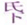 ，谓心所念，常收敛向在氐下也。取心念常在下，而不自满亢，故屈己下物曰“谦”，贬己从人亦曰“谦”。《子夏传》作嗛，嗛与“谦”同。此卦《艮》下《坤》上，是即山在地下之象。或曰：山各有脉，其形起于地上，其根发于地下，故山从地而上。盖山本高也，伏于地下，而不自以为高，是为谦之义也。遂以《谦》为卦名。《序卦》曰，“有大者不可盈，故受之以谦。”此《谦》之所以次乎《大有》也。
谦：亨，君子有终。
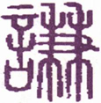
▲ 篆书谦
《谦》者，卑退为义，屈己下物也。止内而顺外，《谦》之意也；屈高而居卑，《谦》之象也。守之以虚，行之以逊，故亨也。小人亡而为有，约而为泰，是自满也，满者故难保其终；君子则尊而能卑，高而能下，心愈小而道愈宏，志弥显。《坤》曰“大终”，艮曰“厚终”，故曰“君子有终”。今文曰终下当有吉字，盖本刘向《说苑》。《彖》辞曰“君子有终”，亦不言吉。盖不言吉，而吉自在也。
《彖传》曰：谦亨。天道下济而光明，地道卑而上行。天道亏盈而益谦，地道变盈而流谦，鬼神害盈而福谦，人道恶盈而好谦。谦尊而光，卑而不可逾，君子之终也。
此卦下艮为山，上坤为地。山本在上，退而居于地下，如人去高位而降下位，能以谦退而居下也，故名此卦曰《谦》。“济”，助也。天道高明，其气下降而助乎地；地道卑俯，其气上腾而交乎天，是天地自然之道也。“天道下济”，“地道卑”，所以成谦也；天气光明，地气上行，所以为亨也。“盈”者“谦”之反，所谓谦受益，满招损，满则盈也。天之“亏盈”者，日月晦明是也；地之“变盈”者，山川河岳是也；鬼神之“害盈”者，奸雄末路，每为鬼神挪揄；人道之“恶盈”者，暴富起家，多为群情怨府。盖“亏”、“变”、“害”、“恶”，自从“益”、“流”、“福”、“好”中而出，循环自然，毫无偏私。谦则不自尊，而人愈尊之，故其道光也；卑则不自高，而其道弥高，故“不可逾”也。君子戒其盈而守其谦，体造化之功，察阴阳之理，万事咸亨，而终身可行，此所以为君子之终也。
以此卦拟人事，有谦逊卑退之义，为德之基也，即礼义所由生也，惟君子能之。若小人有位而自恃其显，有才而自夸其能，有功而自矜其劳，视人之有位有才有功者，则嫉妒之，谗毁之，惟期其颠覆倾败而后快，绝无相扶相助之情，偏多相轧相倾之意，何怪夫吉凶利害之相寻于无穷也哉？鲜克有终，此小人之所以为小人也。君子守谦逊退让之道，其心愈小，其德愈光，其志益虚，其道益高，人虽欲逾之，而卒不可逾也，故曰“谦亨，君子有终”。夫天下之事，始而亨者，十得八九，终而亨者，十不过一二而已，是终之难也，故其终为“君子之终”也。
以此卦拟国家，上卦者地也，下卦者山也，即以山之高，入于地中之象，是《谦》之义也。六五之君，虚己礼贤，不敢自作威福，一以委任臣邻，或用其“吉”以济险，或善其“鸣”以作乐，或取其“撝”以制礼，或尚其“劳”以兴师。有文德，又有武功，愈卑下，乃愈高大。尧之克明克兴，舜之舍己从人，禹之拜昌言，所谓恭己无为而天下治者也，其皆同行《谦》之道者乎？后世不察，君耽暴慢，臣溺骄盈，擅权而虐下，窃位而蔽贤，品尊而德《益》晦，名高而行益污，君不能终其位，臣不能终其禄，凶莫大焉。无他，在不知持《谦》之道也，故《易》惟《谦》一卦，六爻皆吉，反此则凶，《易》之垂诫深远矣！
通观此卦，《谦》者兼也，卑而能尊，故曰兼。六爻之象，下《艮》上《坤》，《艮》止《坤》顺，能止而不上，所以“谦”也。夫造化之理，不足者常益，有余者常损。君子以不足留有余，以有余待不足，故有余者终不至过盈，不足者终不至大损。此两兼之道，称平之权也。诸卦以第三爻为凶地，惟《谦》能保终；诸卦以第五爻为尊也，惟《谦》独用武。盖以《谦》为主，则卑者尊；以无为盈，则高者危；以平为福，则盈者留，是“裒多益寡”之理也。下卦三爻，皆吉而无凶，上卦三爻，皆利而无害。为君而利，为臣面亦利；处常而吉，涉险而亦吉；平治利，即勘乱而亦利。爻象初六《谦》之始，“卑以自牧．也”。六二《谦》之中，积中以发也。九三《谦》之至，以功下人也。六四《谦》之过，不失其则也。六五《谦》之尊，以武服柔也。上六《谦》之极，反而自治也。盖自初至三，自谦而进之；自四至上，自谦而反之。进至三而止，能济险，能扬善，能立功，一以谦行之，有以触退之象；反至六而止，能顺则能服人，能克己，自上反下之象。盖其谦也，非以不足而谦，正以有余而用谦也。故君子之谦，非委靡也，器大而识远，基厚而养定。震世之事功，处之以虚怀，及其当大任，决大疑，勘大乱，翦大恶，世之退诿所不敢任者，君子未常不兼任之也。有可为之才，而不敢为，象山之止，不得不为而后为，象地之顺，谓之“君子有终”也。
《大象》曰：地中有山，谦，君子以裒多益寡，称物平施。
山本高耸地上，今入地中，有谦退在下之义，故曰”“地中有山，谦”。夫地至卑也，百步而上丘陵，人以为高，此飓尺之见而已。四隅八极，相距万里，高山峻坂，不知其几也。千仞之山，自百里之外而视之，已没而为平地，岂其山之不高哉？以地之能谦也。盖上卦居夫多，多则裒，下卦居夫寡，寡则益，圣人设象，最有深意。君子见此象，称量品物，宜酌量贫富，使人各得其平，《谦》之道在此，谓之“裒多益寡，称物平施”。
【占】 问时运：目下平顺，有步步渐高之象。
○ 问商业：物价均平，利益顺适，此业可保永远。
○ 问家宅：此宅想近山麓，家道平顺，大利。
○ 问战征：营屯宜近山，须整齐队伍，严明赏罚。至五爻进师，六爻可以攻取城邑，大胜。
○ 问讼事：宜平和，不宜纷争。
○ 问疾病：是内郁之症，宜宽怀调治。
○ 问行人：舟行而归，吉。
○ 问失物：须于积土中寻见。
○ 问年成：风雨调顺，在不丰不歉之间，平平。
初六：谦谦君子，用涉大川，吉。
《象传》曰：谦谦君子，卑以自牧也。
此爻柔而居《谦》卦之初，是《谦》中之谦者，为笃行之君子，而在下位者也。克善其始，知必克全其终也，故曰“谦谦君子”。大凡涉江海之险，轻率急进则多失，宽容缓济则无患，故曰“用涉大川，吉”。“用涉”与“利涉”不同，“用涉”者，谓用谦道以涉之，不言期其利，而要无不利者也，故吉。《象传》曰“卑以自牧也”者，正以释“用涉大川”之义。“牧”者，驯养六畜之名。夫牧牛马，守之不使奔逸，君子之牧心，亦犹此也，能安其卑，不与人争先。此爻变则为《明夷》，《明夷》之初九，有垂翼之辞，君子涉难之象。但“卑以自牧”，不求闻达，则大难可以涉，所以吉也。又互卦（二三四）有《坎》，大川之象。一说牧为郊外之地，大川在郊外，故曰“用涉大川”。
【占】 问时运：目下万事亨通，利涉大川。
○ 问商业：经营之始，宜谦逊谨慎，可获宏利。
○ 问家宅：辛苦起家，积资成富，家业可长保也。
○ 问疾病：明夷之伤。
○ 问失物：失而不可得。
○ 问六甲：生女。
○ 问讼事：彼此耗费，必有一伤。
○ 问功名：可成事。
【例】 某县劝业课长某，以上京顺途，过余山庄，自云奉职某县，意欲举行劝业实际，购种牛于美国，改良品质，将劝牧畜，并大开桑园，扩张蚕业，及蒐集米麦等良种，勉劝农业。某县知事，亦乐为赞成。初着进步，后日功效，尚难预知，烦为一筮。筮得《谦》之《明夷》。
断曰：此卦以山之高，下地之低，即以尊下卑之义，故曰《谦》。是上而为下谋，贵而为贱谋，皆得谦退之道也。足下所占事，适合此卦义。《彖》辞曰：“谦，亨，君子有终”，谓谦则事无不通，终必成就。爻辞曰“用涉大川，吉”，谓此绝大事业，勉而行之，不患不成也。《象传》曰“卑以自物”，卑者卑下之事，“牧”者，牧畜也，“自牧”者，谓自愿从事于牧畜也。或谓郊外为牧，郊外者，郊野也，农桑之事，皆属之矣。
某氏感谢而归。后据所闻，某就居农场近旁，朝夕劳苦，“卑以自牧”，属僚下吏，相与共事，果得创兴厥功，悉如此占。
六二：鸣谦，贞吉。
《象传》曰：鸣谦贞吉，中心得也。
此爻柔顺中正，与三相比，与五相应，服三之刚，从五之柔，并用《谦》退之道，故得令闻传于远近，世人盛称其德，谓之“鸣谦，贞吉。”“鸣谦”者，非自鸣其谦，谓谦德积中，必闻于外，名誉彰著，而人皆知其谦，称为谦德之君子也。誉称其情，非自我而干誉，名符其实，非向人以沽名。谦者德之本。六二者，臣位也，人臣而过谦，恐流佞媚之嫌，惟其贞而正，故吉也。《象传》“中心得也”“中心”者，谓积中而发也。
【占】 问时运：目下名称藉藉，定多得意。
○ 问商业：得利。
○ 问家宅：家中积产富足，外面名声亦好。
○ 问战征：可鸣鼓直前，攻取中营，大捷。
○ 问疾病：是用心过劳之症。
○ 问功名：有必得之喜。
○ 问讼事：鸣冤得伸。
○ 问失物：即得。
○ 问六甲：生女。
【例】 明治二十二年，闻旧友元老院议员井田氏病笃，驰往访之。时楠田三浦两议官亦相会，两氏谓余曰：井田氏有功劳于维新前后，人所共知，明治四年任陆军少将，后又任外国公使，今与余辈同在元老院。维新功臣，各有爵赏，氏独不与，余辈甚憾之。故余辈欲谋代请，俾氏生时得拜恩命也。请为一占，以卜成否。筮得《谦》之《升》。
断曰：此卦以山之高，下地之低，故曰《谦》。以人拟之，有功高而居卑之象，恰与井田氏有功未赏相合。今诸君朋友之情，代谋申请，谓之“鸣谦，贞吉”。又爻变而为《升》，即升闻上达之谓也。三爻变则为地，是山崩也，料身死之时，恩命可下。
【例】 一书生携友人千众叶人某介书来，曰：自今将就学事，请占其气运。筮得《谦》之《升》。
断曰：此卦以山之高，就地之低，以人比之，有高尚君子，不显于世之象。子临就学，得此卦，子将就高尚君子以求学也。近从乡里来，尚不知世间之广大，一到东京，得良师之教诲，日夜勤学，心愈虚而业愈进，积中发外，必得广闻令誉也，谓之“鸣谦贞吉，中心得也”。
九三：劳 ［75］ 谦，君子有终，吉。
《象传》曰：劳谦君子，万民服也。
此爻以一阳居众阴之中，众阴皆顺之，有一人信任，万民归服之象。盖三爻为成卦之主，大公无我，人好其德，未尝期人之服，而人自服之。且民为身，互卦二三四为《坎》，《坎》为险难，三四五为《震》，《震》为动，为知惧。身在险难，动而知惧，所谓有劳而不自居其劳者，故曰“劳谦”。爻以一阳居下卦之上，位高而责重，处己而求贤，有吐哺握发之风，《系辞》所云劳而不伐，有功而不德者也。其器度之大，识量之高，是足令天下众民畏服，如此则天下无与争功者，其位可终保矣，故曰“君子有终，吉”。以《乾》九三之君子，入《坤》而为《谦》，故《谦》之三，亦曰“君子”。《艮》者万物成终之象，故曰“有终”。变而之《坤》，《坤》六三曰“或从王事，无成有终”，是可见其《谦》之德也。
【占】 问时运：一生劳苦，目下万事亨通，老运更佳。
○ 问商业：经营之始，百般勤劳，今基业已成，可以永远获利。
○ 问家宅：必是辛苦起家，积资成富，能复持盈保泰，家业可长保也。
○ 问疾病：恐病成劳弱，天命有终。
○ 问失物：后可复得。
○ 问六甲：生男。
○ 问讼事：枉者自服，即可了结。
○ 问功名：得此劳绩，自必《升》用。
六四：无不利，撝 ［76］ 谦。
《象传》曰：无不利，撝谦，不违则也。
此爻居大臣之位，上戴柔顺谦德之君，下有劳谦大功之君子，己处其中，位得其正，故上无所疑，下无所忌，《谦》之善者也，故曰“无不利”。然以阴居阴，德不及五，功不及三，不敢自安，动作施为，无在而不“撝谦”。“撝”字，注作挥，《本义》作发挥，撝与挥本通，即《文言》“六爻发挥”之挥，谓发越挥发也。《象传》释之曰“不违则也”。“则”者，法则也，谓其发挥《谦》德，能合夫法则也。《尚书·〈泰〉誓》曰，如有一臣，断断兮无他技，其心休休焉，其如有容焉。人之有技，若己有之，人之彦圣，其心好之，不啻如自其口出，实能容之，以保我子孙黎民，尚亦有利哉。亦可见其发挥休休有容之度也。若无功而受其禄，无实而窃其名，是失其则矣。
一说此爻在大臣之位，初六“谦谦”，如一味谦虚，未免反失权势，恐开轻蔑之渐，故戒之曰“撝谦”。盖谓谦而违其则，必招轻侮，惟不违其则，斯为之“撝谦”也。
【占】 问时运：目下正当好运，万事吉利。
○ 问商业：任从指挥，无不获利；凡买卖但宜留些余步为好。
○ 问家宅：盍家以谦和作事，事事吉利。
○ 问战征：指挥如意，必得大捷。
○ 问疾病：宜表散之，吉。
○ 问六甲：生女。
【例】 明治二十二年，某贵显来，请占某院气运，筮得《谦》之《小过》。
断曰：此卦全卦中惟九三一阳为上所任，为众所宗，有功而在下位者也。某院众贤所集，今以阴居阴，气运委靡不振，有登用九三之望，故曰“无不利，撝谦。”“撝谦”者，谓虚心以求贤，进而信任之也。
后未几，果如此占。
六五：不富以其邻。利用侵伐，无不利。
《象传》曰：利用侵伐，征不服也。
“不富”者，谓不以己之爵位为富，即谦逊之意。本《虞书》“臣哉邻哉”，邻即臣也。“以其邻”者，谓愿与臣邻同心图治，亦即德必有邻之义也。此爻居尊位，有柔中之德，以为温恭克让之君。为君而能谦顺，不以崇高自满，则天下之人，莫不归心焉，是谦德之至也。然谦虽美德，专尚柔和，或致有轻慢而不服者，故柔宜济以刚，则“利用侵伐”，威德并著，然后能怀服天下，安往而不利哉！故曰：“不富以其邻”，“利用侵伐，无不利。”谦柔之过，或失威武也，圣人故发此义，防其过。一说九三一爻，以全卦言，为劳谦之君子；自六五而言，为过刚不服之臣。《易》之取象，变动而不拘如此。
《大有》六五，以不自有而能有人，《谦》之六五，以不自用而能用人，《谦》之用，可谓大也。
（附言）山入地中，地变也，有地脉陷落之兆。余十七岁时，与静冈藩士早川和右卫门氏相知，时氏已八十余岁，语余以少时之事。天明年间，该氏修文武之业，经历诸国，时或卖卜，以充旅费。一年夏，偶至羽州象泄辏，船舶辐辏，风景奇绝，为北海之大辏，氏留此数旬。一日午后，结发于旅店楼上，见室内船虫婚聚，初疑为此地常有，问旅店主，答曰：未尝有也。转顾左右壁上天井，悉皆船虫，因益骇异。筮得《谦》之《蹇》。此卦山入地中，有地陷之象，《易》爻经验，未尝或爽，然如此大数，未可妄言告人，惟中心畏惧，急切收拾行李而行。时已将暮，主人劝留明朝，不听，提灯直发。山路险恶，至夜半，渐行四里许，猛闻山谷震荡，神魂惊骇，伏地傍惶。既而震息，灯火已灭，昏黑不能行，踌躇无计，远远闻有人马之声。往前问之，答以因惊受地震，驮倒货覆也。于是谓马丁曰：黑夜难以前往，不如焚火，以待天明，众皆以为然。迨晓，见有赍飞信过者，问之曰：昨夜地大震，象泻辏变陷成海，其他山谷倾倒，顿改旧形，闻之毛发悚然。《易》爻之昭示未来，灵应如此，益为惊服，至今追思，心犹凛凛。推之古老传言，洪水之年，獭凿穴于高处；大风之年，鸟不巢于乔木之梢；昔江户有大火灾，前数夜，鼠连绵结队，转渡桥栏之外，避就他处。他如老狐能知未来，鹊知前吉，鸦知前凶，皆有令人所不可解者。蠢然动物，尚感天地，预知祸福，人为万物之灵，不克前知，可谓人而不如禽兽者也。
【占】 问时运：目下虽处正运，然或有龃龉，宜自振作，不可一味姑息也。
○ 问商业：所获利益，防为他人分取，致生事端。
○ 问家宅：能以择邻而处，自得守望相助之义。
○ 问婚姻：得邻近之女议婚，大利。
○ 问疾病：利用消伐之剂，吉。
○ 问讼事：宜取邻人作证，得直。
○ 问失物：于邻家觅之，得。
【例】 明治二十七年，占国家气运，筮得《谦》之《蹇》。
断曰：此卦以山之高，入地之卑，拟之国运，在维新之际，天下牧伯，悬命于军门，脱万死而得一生，渐得平定。奉还数百年管领之封土，复古郡县之制，非尽心力于国家者不能也，盖其劳而不伐，有功而不德，厚之至也。尔后政府创行欧美文化，抚育人民，政令宽裕，世人名之曰“自由”。一时多误解自由之义，为可以放纵自由，不受朝廷节制，此诚盛世之顽民也。今占国运，得《谦》之五爻，其辞日“不富以其邻”，“利用侵伐，无不利”。盖谓人居国中，往往有不事生产，徒羡他人之资财，窃效欧州社会党所为。政府虽宽厚待民，此中有不得不惩罚者，猛以济竞，亦势之不得不然也。
【例】 明治十年，某贵显嘱余占本年国运，筮得《谦》之《蹇》。
断曰：此卦以山之高，屈而入地之象，故名曰《谦》。今圣明天子治世，又得贤明之臣辅弼，四海静谧，太平有象。当维新之初，诸侯奉命，勤劳王事，以奏复古之大业，各藩奉还封土，改置郡县，一时赞襄诸臣，皆可谓劳谦之君子也。然其间亦有功劳卓著，偶因意见不合，辞朝归隐者，朝野瞩望，以为此公谦退避位，有高山入地之象，群情惜之。朝廷因以人望所归，势不得不复征召。此公以“劳谦”自居，不应征辟，于是平日不平之徒，乘机启衅，相传而煽惑人心。朝廷见之，以为不廷之臣，不得不用侵伐，是九三过谦，而败于谦之象。当时任侵伐之权者，上六之臣也。上六与九三，阴阳不应，《易》谓之敌应，是以曰“利用行师，征邑国”也。既而此年果有西南之乱，征讨之议，某贵显所专任。战经数月，贼军扑灭，王师凯旋，既爻辞所云“利用侵伐，无不利”。至明年五月，某贵显过东京纪尾井坂，猝罹暴徒之毒，迄今西海有九三之塚，东京有上六之塚。占爻早隐示其兆，愈知天命之不可诬也。
【例】 明治二十九年冬至，占，三十年台湾之施政，筮得《谦》之《蹇》。
断曰：此卦以山之高，下地之卑，故名曰《谦》。夫台湾之地，当明季为郑成功所据，后为清人战而取之，故岛民常不驯服清国，清廷苦其难驭，使满洲人监之，满人不通南方风俗人情，驾驭不奏其绩，惟以多得蛮人首级，受清廷赏誉为功。往往台湾知县，聚广东福州等剽悍之徒，有蛮人不服者，则使之伐之，窃为得施治之方。是以剽悍之徒，常施诈谋奇计，或设陷井，伐蛮人犹猎禽兽。积年之久，蛮人复仇之念，不能复已，争斗殆无虚日。今归我版图，务镇抚其民，专施恩惠，以得该地之奥情。然彼一时不知戴德，亦无可如何；在我官吏，亦苦于风俗之不同，言语之不通，每于施政，终相隔膜。是以抚恤岛民，格外宽柔，恰有以山之高，下地之卑之象。盖蛮民之凶悍，屡起骚乱，抗拒官吏，此台湾总督府所深患也。加之为之魁首者，清国阴为输送铳器弹药，我若以武力镇压之，外国宣教师等，将訾我处置之残酷，故总督府亦不能不踌躇也。今占得五爻，知本年尚有匪众未靖之象，不得不一奋兵威也。我兵士之出征，军用甚巨，区区台湾之势，有必不敷岁人，不得不以国帑偿之，谓之“不富，以其邻”。化外之民，以武力压之，谓之“利用侵伐，无不利”就此五爻推之，明年值上爻，又有“鸣谦，利用行师，征邑国”之象，不如今年剪伐，毋使复滋也。
上六：鸣谦。利用行师，征邑国。
《象传》曰：鸣谦，志未得也。可用行师，征邑国也。
此爻不中而在上卦之极，即处《谦》之极。处极谦之地，而未得其志，所谓不得其平则鸣，故曰“鸣谦”，与六二之“鸣谦”，诚中而发者，辞同而义异。六以柔处柔，柔而未得其志，不能不济之以刚，故曰“利用行师，征邑国”。《象传》换“利”字以“可”字，可者，谓当其时之可，可则用，不可则已。上六之用师，岂得已乎？故断曰“可”。然邑国属己之小国，上六才柔，未足克大敌，力柔不足兴王师，是以有不能昭神武于天下，振王威于华夷之意。《象传》曰“志未得也”，中心未得之意，亦可见也。《豫》之利行师，用其顺而动也；《谦》之利行师，用其顺而止也。
【占】 问时运：盛运已过，目下未见得意。
○ 问商业：有名无实，宜整顿旧业。
○ 问家宅：防有怪祟，时作响动，用法镇压治之。
○ 问疾病：宜自调养心志。
○ 问六甲：生女。
【例】 明治九年，应某贵显之嘱，为占一事，筮得《谦》之《艮》。
断曰：此卦有以山之高，入地之卑之象，恰如有功大臣，去高位而就下位，辞俸禄而隐山林，使天下之人，皆颂扬其谦德也。是以众望益归之，君上亦屡征召之，其人终谦逊而不应，迨至有可疑之迹，于是朝廷不得不声其罪，而用侵伐。上六为九三之应，虽惜九三之为人，庙议命讨，不得已也。“鸣谦，志未得”，“利用行师，征邑国”之辞，可玩味也。上爻变而为艮，见内外两卦，显现二冢之象，当时苦不得其解，至翌十年，西海起一冢，十一年东京又起一冢，遥见东西相对。余一日，与某贵显谈往事而及此，感天命之可畏，相与悚然者久之。
16 雷地豫
按：“豫”字从象，从牙，左旁之牙垂地，象之大者也。象性柔缓，进退多疑，以其外行安舒，一俯一仰，而不抑藏，故以安舒不抑藏为豫，遂以《豫》名卦。卦体《坤》下《震》上，《坤》下顺而载乎上，《震》上动而振乎下，盖谓扬舒于外，而不抑藏于内，是以为《豫》也。《豫》与《谦》对，《序卦》曰，“有大而能《谦》必《豫》，故受之以《豫》”，此《豫》所以次于《谦》也。
豫：利建侯行师。
▲ 甲骨文豫
《豫》，和悦也，《震》动也；《坤》，顺也，上动而下顺，故“利”。《坤》为国，《震》为侯，是以利于建侯；《坤》为业，《震》为行，是以利于行师。夫不动则不威，不顺则不利，以顺而动，所以君立而民顺，师出而有功，利莫大焉，故《传》曰“顺以动”。主万邦，集大众，非《豫》不能也。
《象传》曰：豫，刚应而志行，顺以动，豫。豫顺以动，故天地如之，而况建侯行师乎？天地以顺动，故日月不过，而四时不忒；圣人以顺动，则刑罚清而民服。豫之时义大矣哉！
卦体下《坤》上《震》，《震》雷《坤》地，有雷出地奋之象。《坤》地静也，纯阴主闭，闭极则郁结而不畅；《震》动也，阳气动而万物出，故悦。九四一阳当《坤》之交，静极而始动，闭极而始宣，不先不后，应时顺动，故曰《豫》。夫天下之事，逆理而动者，其心常劳，其事多难，惟以顺动，从容不迫，此心安和，故“刚应而志行”，全在顺以动之也。顺而动，在天则“四时不忒”，在人则动止和顺，其“建侯”也，屏藩五国，其“行师”也，吊民伐罪，皆出于豫乐之义，谓之“刚应而志行，顺以动，豫”也。盖“顺以动”三字，为此卦之德性，故“天地如之，况建侯行师乎”？天地顺动以下，言豫之功用无比。“日月不过”者，谓日月之行度无过差；“刑罚清而民服”者，谓圣代至治之准则。狱讼衰息，民志大畏，协中而民服也。盖圣人无心，惟顺物而动，彼善则顺其善而赏之，彼恶则顺其恶而罚之，不敢稍存偏私，刑无过刑，罚无过罚，而刑罚自清。如此皆出于“顺动”之德，三才之道，万物之理，皆不过此，故曰“豫之时义大矣哉”。《彖传》前曰“顺以动”，后曰“以顺动”。“顺以动”者，就卦象之自然释之；“以顺动”者，就人事之作用而说。曰“天地”，曰“圣人”，相对而言也，后“则”字，对上文，当用故字，今曰“则”字，大有意味。“天地以顺动”者，即亘万古而无有退转，必然之定理也，以“故”字承之。《易》中单称“圣人”者，即指天子，盖必有圣人之德者，而后富有四海，尊为天子，是谓顺命。文王、周公、孔子之圣，皆不得其时，不得其位，是则圣人之在天位，有不可必然者，故后文以“则”字承之，是此篇之主眼，《易》教之本意也。故以天地日月四时为宾，以圣人为主，重在圣人一句，读者匆匆匆看过。
凡《象传》用“大矣哉”，共有十二卦，其上有曰“时义”，有曰“时用”，或单言“时”。其中曰“时义大矣哉”五卦，《豫》、《随》、《遁》、《姤》、《旅》是也，言浅旨深，欲人熟思之也。曰“时用大矣哉”三卦，《坎》、《睽》、《蹇》是也，虽皆非美事，圣人有时而用之。曰“时大矣哉”四卦，《颐》、《大过》、《解》、《革》是也，皆因大事变而警诫之。要之其义各有取也。
以此卦拟人事，此卦五柔一刚，其人必多柔少刚。柔主顺，刚主动，柔必应刚而能行，故曰“应”。夫“刚应而志行，顺以动，豫”，天地之动，日月往来，而四时乃定，圣人则之，以定刑罚，而万民乃服。人处天地之中，沐圣人之化，人而在下，无所谓建侯，凡求友亲师者类是；无所谓行师，凡祛邪嫉恶者类是，凡有所动，皆当法天地之顺，斯动无过则也。能顺天地，则天地亦顺之，使得永保其安豫；若过豫而不省，则必将为初六之“凶”，六三之“悔”，六五之“疾”，上六之“冥”，是自失其豫矣。其为豫，乃其所为忧也，必如六二之“介”，九四之“勿疑”，斯得焉。人固当顺理而动，动顺夫理，动乃无咎，所以豫也。
以此卦拟国家。《震》为动而在上，《坤》为顺而居下，上动下顺，是上行威令，下皆顺从也，故曰“主万帮，聚大众，非豫不能也”。夫天下之人不同，其心同也，天下之心不同，其理同也，己能顺理而动，则人莫不顺之。九四一阳，居执政之位，有刚明之德，威权赫赫，以统治国家，故卦中众阴皆和顺而悦服。《震》为侯，为建，《坤》为国，为臣民，为顺，即为臣民服从之象。四为成卦之主，与六五之君，阴阳相比，而辅佐之，使万民豫乐和顺。至其行政，一法天道，如寒极则温风至，暑极则凉风至，世之所好好之，世之所恶恶之，赏罚公明，毫无私意，是豫之时也。但执政负国家之重，威权独揽，未免近逼，或致动群僚之“疑”，启君心之“疾”，尾大不掉，亦可惧也。惟当尽其至诚，勿有疑虑，乃能合众力以安其上，庶几上之信任愈隆，将赏其功劳，而封建为侯，有不服王命者，即命之以征伐。上卦《震》之方伯，动而俱进，下卦《坤》之众民，悦而顺从，谓之“利建侯行师”。四体《震》，《震》为长子，故曰“建侯”；以一阳统众阴，故曰“行师”。此卦五爻以下，有《比》之众，《比》为建国亲侯，故曰“建侯”；三爻以上，有师之象，故曰“行师”。“利”字括“建侯”“行师”两行，豫之时势如此。上下悦乐之余，《豫》之极，危之基也，所当反之以《谦》，一转移而天下治乱安危系焉。惟其善则归君，过则归己，利公而不专，害审而不避，是为大臣处《豫》之道，而上下交泰矣。
通观此卦，其要旨不出“顺以动”三字。凡顺之至者，不动则不悦，动而顺应，故悦。未顺则不先，既顺则不后，由气机之自然而已。豫之时心劳意足，其乐已极，处乐之极，遂至纵情逸欲，流连忘返，亦恒情所不免也。圣人忧之，故未《豫》而先者为“鸣豫”，不动者为“介”豫，坐而观者为“盱”，当豫而顺者为“由，”过豫而不忘者为“疾”，极豫而忘返者为“冥”。在初爻则戒其“穷”，在六三则警其“悔”，在六五则防其“疾”，在上六之“渝”，则危不可长，幸其终改。“鸣”、“盱”、“疾”、“冥”四者，居《豫》之咎，所谓失豫者也。惟六二之“介于石”，为能熟察忧乐治乱之机，故顺莫善于“贞”，动莫善于“由”，“贞”以待顺，“由”以行动，由未豫而豫必至，既豫而豫不忧。天地圣人之悦豫无疆者，惟其能处乎豫也。读此卦而圣人谆谆于世之意，可见矣。
按：六爻言《豫》不同。初六上六之《豫》，逸豫也；六二之《豫》，几先之豫也；六三之《豫》，犹豫也；九四之《豫》，和豫也；六五之疾，弗豫也；《彖》之言《豫》，众人和同之豫也；爻之言《豫》，各人一己之豫也。要之示悦豫之必与众同，非可自私之意也。盖人事不可无豫，人心不可有豫也。
《大象》曰：雷出地奋，豫。先王以作乐崇德，殷荐之上帝，以配祖考。
雷者，得时而奋出地上，阳气宣发，震动有声，足以鼓动天地之和，发越阴阳之气，通达和畅，《豫》之象也。故先王法震之动以作乐，为象其声以鸣盛也；先王法《坤》之顺以崇德，为明其体以报功也。盖乐之作也，近而闺门，远而邦国，显而人事，幽而鬼神，无不用之。至于荐上帝而上帝来格，配祖考而祖考来享，幽感明孚，《豫》之所以为《豫》也。故《履》为《易》中之礼，《豫》为《易》中之乐，人君克体此意，以使万民乐和，《豫》之至也。
【占】 问时运：目下如春雷发动，正得时会，万事皆吉。
○ 问商业：时当新货初到，市价飞腾，绝好机会，必得大利。
○ 问家宅：防有变动，宜礼神祭祖，以祈福佑，得安。
○ 问疾病：宜祷。
○ 问战征：雷厉风行，必胜之兆。
○ 问功名：所谓平地一声雷，指日高升之象。
○ 问失物：自然出现。
○ 问六甲：生男。
初六：鸣豫，凶。
《象传》曰：初六鸣豫，志穷，凶也。
“鸣豫”者，自鸣得意之谓，悦豫之情动于心，而发于声者也。初爻阴柔不才，居最下之位，与四相应，恃其爱眷，心满意溢，不胜其悦，应而自鸣，其凶可知也，故曰“鸣豫，凶”。《象传》曰“志穷，凶也”。“穷”谓满极，初才得志，便为满极，盖时方来而志已先穷矣，故凶。一说穷在凶下，谓志凶穷也。
按：《豫》初六，与《谦》上六相反，《谦》上曰“鸣谦”，应九三而鸣也；《豫》初曰“鸣豫”，应九四而鸣也。鸣人之谦吉，鸣己之豫凶，故曰：“《谦》可鸣。《豫》不可鸣也。”
【占】 问时运：初运颇佳，但一经得意，使尔夸张，以致穷也。
○ 问商业：初次必得利，不可过贪。
○ 问家宅：恐鸟啼猿啸，致有怪异之惊，凶。
○ 问疾病：不利。
○ 问讼事：鸣冤不直，宜自罢讼。
○ 问失物：不得。
【例】 余一日赴横滨访亲友某氏，客有先在者，求余一占，筮得《豫》之《震》。
断曰：此卦九四一阳，得时与位，威权赫赫，上下五阴皆从之。今足下得初爻，四爻阴阳相应，有大受爱顾之象。足下得其爱顾，藉其权势，颇有扬扬自得之意，谓之“鸣豫，凶”。占筮如此，劝足下宜顾身慎行。客怫然而去。
客归后，主人告余曰，彼以其女为某贵显之妾，时时出入其邸，卑鄙谄谀，无所不至。时或假贵显手书，历赴诸外县，以营私利。又临豪商等集会宴席，举动效如贵显亲族，诳惑俗人。今君占断，道破小人心事，使彼不堪惭愧而去。
六二：介于石，不终日，贞吉。
《象传》曰：不终日，贞吉，以中正也。
“介于石”者，谓操守坚固，而不可移动也。夫逸豫之道，恣则失正，故《豫》之诸爻，多不得正，惟此爻以中正居阴，其与九四之刚，非应非比，有自守独立之操，其节之介，犹石之坚也。夫人之处豫也，或洋洋而自得，或恋恋而不舍，或昏迷而不悟，是皆失其正中矣，遂致豫方来而祸即随之，世之不知自守者，往往如此。六二独节操坚固，不为外物所动，知豫乐之不可恋，而去之不待终日，其察理甚明，其操身甚固，其审几甚决，其避患甚速，故曰“介于石，不终日，贞吉”。“介”者，坚确不拔之谓，所谓“不以三公易其介”者是也。惟其能介，是以中正也，《象传》曰“以中正也”；惟“以中正”，故能辨之明，知之速也。按此爻互卦为艮，《艮》为石，故有“介于石”之象。
【占】 问时运：其人品行高尚，不随世为隆汙，吉。
○ 问商业：能决定己志，不为奸商摇惑，贩运快速，获利。
○ 问家宅：主家者宜严正持之，凡非人来往，速宜斥绝。吉。
○ 问战征：所谓守之如山，发之如火，能审机也。
○ 问疾病：新疾即愈，夙疾即亡，终日间也。
○ 问六甲：生女，即产。
【例】 明治二十二年，某局属官某氏来访，曰：余自明治四年创局之始，奉职一等属，尔来十八年，日夜黾勉，当事务多端之冲，未尝少怠，足下之所知也。部下新任者，多升上任，今日居我上者，大概昔日之部下也。凡所升迁，亦非有过人之学问，余甚不慊于意，本欲辞职，犹恐别无位置，是以郁郁居此。请为一筮，以占后来气运。筮得《豫》之《解》。
断曰：此卦九四一阳，专擅威权，五阴不得不应之。今占得二爻，与九四非应非比，故于足下眷顾独薄。在足下品行中正，不事谄媚，惟以坚守职务为事，确乎不拔，如石之介，凡非分之事，惟恐浼焉，避之甚速，故曰“介于石，不终日，贞吉”。然自二爻进之四爻，气运一变，三年后，必可升进。
后至明治二十四年，此人果升高等官。
六三：盱豫，悔，迟有悔。
《象传》曰：“盱豫有悔，位不当也。
“盱”者，为张目企望之象，譬如见乌之飞，仰瞻太空，见鱼之泳，俯眄深渊，不胜眷恋，故曰“盱豫”。六三阴居阳位，不中不正，其所盱者，盖上视九四之权势，而欲趋附之也。九四为一卦之主，居大臣之位，独擅威福，众阴皆归附之，六三是以惟盱瞻视，欲冀攀援，以固豫悦，谓之“盱豫”。九四以其窥探窃视，不得中正，为所鄙弃，是以有悔也。既知其悔，当翻然立改，效六二之介，决意远避，不俟终日，悔复何有？若一念以为悔，一念以为豫，迟疑不决，流连不返，悔必难免矣，故曰“悔，迟有悔”。“迟”之一字，可谓当头一棒，提醒昏昏，教其及早审悟也，最当玩味。《象传》曰“位不当也”，谓其柔居阳位，优柔不决，不当其位也。此爻变则为《巽》为不果，故知悔而犹不改，有迟疑不决之象。
【占】 问时运：目下运非不佳，在自己作为不正，是以有悔。
○ 问商业：能窥探商情，为商家之能事，然一得消息，卖买宜决，若一迟疑，便落人后。
○ 问家宅：须防窃盗，宜速警备。
○ 问失物：速寻则得，迟则无矣。
○ 问讼事：宜速了结。
【例】 某县官吏，携友人介书来访，请占气运。筮得《豫》之《小过》。
断曰：此卦九四一阳得时，上下五阴皆归应之，足下占得三爻，与四爻阴阳亲比，可知长官意气相投。然在他人见之，或未免有阿谀长官，假弄威福之嫌。今后宜注意，毋贻后日之悔。后闻长官转任他县，此人请附骥尾，其事不成，遂辞其职。
九四：由豫，大有得。勿疑，朋盍簪 ［77］ 。
《象传》曰：由豫，大有得，志大行也。
九四以一刚统率众阴，为一卦之主，凡众阴之所豫，皆由九四之豫而为《豫》，故曰“由豫”。四近五，居大臣之位，承柔弱之君，负天下之重，包容诸柔，独得倚任，任大责重，故曰“大有得”也。但当此信任过重，易致招疑，惟能开诚布公，自然无复疑虑矣。“勿疑”，乃能率众柔以奉上，犹如簪之贯众发而不乱也。“盍”，合也；“朋”，即众柔也。四刚而位居阴，犹得与诸柔相类为朋，故曰“勿疑，朋盍簪”。夫疑则生隙，隙则生忌，忌则众情离散，百事丛脞，虽有安豫之鸿业，必不能得其终也，故戒以“勿疑”。斯猜疑悉绝，上下同心，秉至诚以图事，合群力以从公，众贤汇萃，德泽宏施，足以成天下之豫者，斯之谓欤？《象传》曰“志大行也”，即所谓得志则泽加于民，功施于后。大道之行，可由豫而致也，庶乎交泰之道矣。此卦自初爻观之，为权臣，其豫者逸豫也；自四爻观之，为任政之贤臣，其豫者和豫也。《易》道之变动不居如此。
【占】 问时运：目下正大运方通。
○ 问商业：会萃众货，大得利也。
○ 问家宅：门庭豫顺，得财得福，大有之家。
○ 问功名：即卜弹冠之庆。
○ 问讼事：由此罢讼，两造豫悦。
○ 问行人：必主满载归来。
○ 问出行：由此前行，一路顺风，大得喜悦，可“勿疑”也。
○ 问六甲：生男，易长易成，且主贵。
○ 问失物：即得。
【例】 一日缙绅某来，请占某贵显气运，筮得《豫》之《坤》。
断曰：此卦春雷得气，奋出地上，有扫除积阴，启发阳和之象。拟之国家，必是祛谗进贤，能致太平之硕辅也。此爻九四一阳，居执政之大位，负国之重任，上承君德，下集群才，斯得大行其志，以启豫顺之休也。今占某贵显气运，得此爻，在某贵显，刚毅有为，德望夙著，固不待言，惟爻辞“勿疑”二字，最当审慎。盖一有疑心，则上下猜忌，庶政丛脞，必不能臻太平之治，故曰“勿疑，朋盍簪”。是某贵显所宜注意也。
缙绅闻之，甚感《易》理精切，曰：吾他日当转语诸某贵显。
【例】 明治二十八年四月九日，占我国与清国和议之谈判，筮得《豫》之《坤》。
此卦雷出地奋，有威武和乐之象。今占得四爻，爻辞曰“由豫，大有得”，盖谓两国和议，成后大得有为，豫顺之休，由此来也。又曰“勿疑，朋盍簪”，谓从此两无猜疑，如唇依齿，并将合宇内友邦而同欢，犹簪之贯万缕之发而为一也。和议之成，可预决也。四月十七日，果议和约成。
此卦《大象》曰：“先王以作乐崇德，殷荐之上帝，以配祖考。”曰“上帝”，曰“祖考”者，即伊势大庙以下历代之皇灵也。
六五：贞疾，恒不死。
《象传》曰：六五贞疾，乘刚也；恒不死，中未亡也。
“贞疾”者，痼疾，谓不可愈之疾也。上下耽逸乐，即“贞疾”之症。此爻柔中而居尊位，信任九四，九四阳刚得权，众皆归之，六五柔弱之君，受制于专权之臣，欲豫而不能自由，战兢恐惧，中心凛凛，常如痼疾之在身，故曰“贞疾”。疾者豫之反也，《书·金滕》曰，“王有疾，不豫”是也。顾六五虽阴柔，其得君位者，贞也，其受制于下者，疾也，虽失权，其位未亡，故曰“恒不死”。《孝经》曰，“天子有诤臣七人，虽无道，不失其天下”，此之谓也。夫升平之久，人主恒耽逸豫，非以刚暴失势，必以柔懦失权。势孤于上，权移于下，虽未遽亡，而国事日非，为人君者，安可不戒哉！《象传》曰“中未亡也”，盖为四所逼，心恒有疾，幸而得中，故未亡，然曰“未亡”，亦几几乎将至于亡矣，危矣哉！
按：六二与六五，并贞者也。贞者不志于利，故不言豫，然其所以贞不同，故六二得吉，六五得疾。六二本不屑从四，可则进，否则退，故吉；六五以阴居阳，力不能以制四，而心甚疑忌之，故其贞适足为疾而已。贞虽为疾，其中之所守未亡，故“恒不死”，可知居贞之可恃也。
【占】 问时运：知其人本尊贵，因素性柔弱，不能自振。
○ 问商业：其基业甚好，因用人不当，钱财落他人之手，几致亏耗。
○ 问家宅：恐被借居者侵占，业主反不得自主。
○ 问战征：以偏将擅权，主帅失威，虽未丧师，亦幸免也。
○ 问疾病：是带病延年之症。
○ 问六甲：生男，必有病。
○ 问失物：可得。
【例】 相识之富豪某，请占其气运，筮得《豫》之《萃》。
断曰：此卦就一家而论，有家产殷富之象。九四一阳擅权，上下五阴皆应之，如一家之中，旧管家统辖家政，主人居虚位而已。今足下为海内屈指富豪，承累世之旧业，专任一能事管家，统辖事务，主人不得自主，而反受其所制，虽豫乐而不能自由，其状恰如宿疾在身，心甚怏快。幸守此祖宗遗规，不致陨坠，谓之“贞疾，恒不死”。
【例】 明治二十八年十月以来，余横滨本宅侍女，年四十五，罹疾几至危笃，医师多言不治。筮得《豫》之《萃》。
断曰：《豫》者雷出地奋之象，在人为得春阳之气，精神尚能透发，未至衰亡。此疾虽危重，尚不至死。但快愈之后，不能强健如故，犹可延其余喘也，谓之“贞疾恒不死，中未亡也”。后果得快复，今（三十二年）尚存也。
上六：冥 ［78］ 豫。成有渝，无咎。
《象传》曰：冥豫在上，何可长也。
“冥豫”者，昏冥于豫，而不知返者也。此爻以阴柔之性，居豫乐之极，纵欲而不顾，极乐而无厌，故谓之“冥豫”。上六居《豫》之终，在卦之上，纵情逸欲，不觉其非，如入幽冥之室。下卦《坤》，《坤》为冥，是过顺之咎也；上卦《震》，震则动，动则变，变则渝，是以有“渝，无咎”。凡人之溺情私欲者，亦苦于不知改变耳。此爻有雷厉之性，虽昏迷既成，一旦阳刚发动，便能改志变行，复归正道，夫复何咎？《象传》曰，“冥豫在上，何可长也，”示逸豫之不可长，以劝人之反省自新也。故爻辞不责其“冥”之凶，而反称其“渝”之“无咎”，意深哉！此爻变则为《晋》，则无冥暗之咎。凡《易》曰“渝”者，当以变卦观之也。
【占】 问时运：目下歹运已极，好运将来，翻然振作，大有可为。
○ 问商业：宜作变计，改旧从新，必得利益。
○ 问家宅：老宅不利，或迁居，或改造，吉。
○ 问战征：宜别遣主帅，改旗易辙，乃可得胜；或更就别路进兵。
○ 问讼事：宜罢讼和好，无咎。
○ 问六甲：逾月可产，得女。
【例】 友人某来谓曰：现今商事繁忙之时，别有见机，着手一事，请占其成否？筮得《豫》之《晋》。
断曰：“冥豫”者，昏冥于豫，是所谓沉溺而不悟者也。在商业上，是妄想图利，而不知其害也。急宜变志，斯可免咎。爻象如是，当知所戒。
某闻此言，大有所感，返守旧业，免致破产。
17 泽雷随
《随》：泽上雷下，《震》奋下，《兑》虚上，其中疏流，则内动不自主，而顺从外，从外，故曰“随”，遂以《随》名卦。《兑》为少女，《震》为长男，以少女从长男，是随之义也；兑为泽，《震》为雷，雷震泽中，泽随而动，是随之象也。其义其象，皆取以阳下阴，阴必悦随，朱子所谓“此动彼悦，成随”是也。《序卦》曰，“《豫》必有随，故受之以《随》”，盖为豫悦之道，物来随己，己亦随物，此《随》之所以次于《豫》也。
随：元亨利贞，无咎。
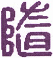
▲ 篆书随
卦体《震》自下而震动，《兑》在上而感悦，从而应和之为《随》。盖有舍己从人，乐取于人以为善，故《随》之道，可以致大亨也。《震》为健，得夫《乾》，故曰“元亨”；《巽》于地为刚卤，合夫《坤》，故曰“利贞”。《杂卦》曰“随无故也”，谓上下各从其所处而安，不待有所为也。无故则无事，无事则何咎之有？然失之贞正，则枉己徇人，易于有咎，亦足戒也。
《彖传》曰：随，刚来而下，柔动而说，随。大亨贞，无咎，而天下随时，随时之义大矣哉！
此卦本《坤》下《乾》上之《否》，《否》之卦顺以随健。今《否》之上爻，下入《坤》之初爻，而为《震》，其初九为成卦之主；《否》之初爻，上入《乾》之上爻，而为《兑》。是以阳下阴，以高下卑，阳动阴悦，物来随我，我亦随物，谓之《随》。“刚来而下柔，动而悦，随”也，是随之义也。凡人君之从善，臣下之奉命，学者之从义，子弟之从师，皆随也。至于人之从天，欲之从理，邪之从正，为随之善者也。随之道利贞正，若反之，则谓之诡随，即违夫时矣。君子随时而动，随时而悦，各得其宜，是以所为无不奏功，故曰“随大亨贞，无咎”。《随》之义，以动而随，不动则必不能随；以悦而随，不悦则必不欲随。雷发于下，雨水随之降于上，是泽随夫雷，上随夫下也；违其时，则雷不动，泽不悦，上下必不相随。不知随之道，必宜合时，推之天下，阴阳刚柔，莫不皆然，故曰“天下随时”。随之时义如此，岂不大哉！
以此卦拟国家，则内卦为人民，行动勤勉，从事职业，不敢上抗政府，惟从政府之所命；外卦为政府，不挟威权，惟施悦民之命令，故得上下君民之间，亲密和悦，上倡下顺，天下和平，人心镇静，此《随》之时也，谓之“随，元亨利贞，无咎”。当此之时，九五之圣明在上，居中正之位，廓然大公，相孚于善。君能虚己从臣，臣更恭顺以从君，是以初爻则“有渝”而不失其正，二爻则有“系”而不免于私，三爻则以“居贞”而“有得”，四爻则以“在道”而无咎，上爻则以“从维”而“用享”。总之，从正则吉，从邪则凶；非随之咎，其所以随者自取其咎。夫人臣随君，以诚相通，是以“元亨”；事必“在道”，以正相从，是以“利贞”。如是则君之随臣者，谏则必纳，言则必听；臣之随君者，令无不从，命无不奉。斯以动感悦，以悦应动，上下相随，而治事“大亨”，故曰：“随时之义大矣哉！”
以此卦拟人事，惟在以强随弱也。夫阳刚之人，不肯下人，是以人心常多乖离，而事业概不得成。若能以刚下柔，措置得宜，则众心必服，何咎之有？随者，不专己之意，即舍己从人，取人为善，其机甚捷，其理甚顺，其功必易成，故曰“元亨”。然随之道，有正有邪，苟其一于柔顺，必致枉道以徇人；过于容悦，则将违道而干誉，是失随之正也。惟其动其悦，悉随夫时，内不失己，外不失人，斯随得其正，咎何有焉！故曰“利贞，无咎”。《易·彖》中系“元亨利贞”之辞者凡七，《乾》、《坤》、《屯》、《随》、《临》、《无妄》，皆在上经，《革》一卦在下经，皆大有为之时，以我得乘时之势，曰“元亨利贞”。“元亨利贞”之解，详《乾》下，须参看。随时之义甚大，推之造化，则震者春也，东方之卦也，万物随之而生，《兑》者秋也，西方之卦也，万物随之而成，故春生之，夏长之，秋成之，冬藏之，各随其时也。天下之理，不动则无所随，不悦则不能随。是《随》之义也，人事莫不皆然。
通观此卦，三阳三阴，初九以阳与六二遇，阳之随阴也；九五之孚上六，亦阳之随阴也；六二以阴居阴，是阴之从阴也，故曰“系”。有系必有失，不言凶咎，而凶咎可知。六三以阴居阳，是阴之从阳也，以阴故亦曰“系”，然系所当系，系即随，故曰“利居贞”。九四是以阳而随阴，逼近于五，刚而有获，臣道凶矣；惟能感之以诚，保之以哲，复有何咎乎？九五尊位，上动下悦之主，取人以为善，吉莫大矣。上六以柔顺居《随》之极，极夫随者也，能善用其系，系亦得其正也。总之，《随》之道，宜随时为动，从宜适度，处以至诚，出以大公，不特可感格群民，且可用享上帝，将率天下为随时矣。君子观此爻，而知随时之义甚大。盖前卦自《豫》来，悦以随时，无拂逆之情。《序卦传》曰，“《豫》必有随，故受之以《随》”，人能谦以致豫，则能悦以随时。不谦则安能豫？不豫则安能随？三者道同，而机会相因，机会者，惟在于时而已，而适时莫如随。然“随必有事”，有事而后蛊，此所以《蛊》次于《随》也。是故《随》如文王之事殷，《蛊》如武王之造周。夫《易》者不测之神藏，圆妙之灵府也，观之于万物，推之于万事，无所不在，无所不赅，非神圣之道，则安能如此乎？
《大象》曰：泽中有雷，随。君子以向晦入宴息。
此卦以《震》阳陷《兑》阴，有藏伏之象，《象》曰“泽中有雷，随”，不曰雷之动，而曰雷之有，《本义》以雷藏泽中释之，深得其旨，盖知象之取义，在雷伏势时也。君子观此象；故不言动作，但言“宴息”。雷之伏藏，在寒冬，人之宴息，在“向晦”，盖亦各随其时也。君子应天而时行，时当“向晦”，入居于内，宴息以养其身，起居随时，惟宜自适。盖其动也，与雷俱出；其静也，与雷俱入。《豫》之“作乐崇德”，《大壮》之“非礼弗履”，《无妄》之“茂对时育”，皆法春雷之动也；《复》之闭关息旅，《随》之向晦宴息，皆法秋雷之藏也。夫舍百为之烦扰，就一枕之安闲，所以养精神于鼓舞之余，以为将来应用之地。故以形息者，凡民所同；以心息者，君子所独。君子虽才德兼备，当随时适宜，否则亦必有咎，是以遇随之时，韬智藏德，辞禄不居，养晦以遵时，抱道而伏处。文王之服事殷纣，勾践之隐会稽，皆得向晦宴息之义者也，谓之“君子以向晦入宴息”。互卦三、四、五为《巽》，二、三、四为《艮》，《巽》为入，《艮》为止，即入而止息之象也。
【占】 问时运：目下气运平常，宜暂时晦藏，明年利于远行，至第五年，则可得利。
○ 问战征：宜退守，明年当小有功，必俟六年，斯敌皆就缚矣。
○ 问商业：有货一时难售，来春可以获利。
○ 问家宅：防有伏怪，夜间致多惊惧。
○ 问讼事：恐有牢狱之灾，明年又防征役远行。凶。
○ 问失物：宜在枕席间觅之。
○ 问六甲：生女。
○ 问行人：即归。
○ 问出行：以明年为利。
初九：官有渝，贞吉。出门交有功。
《象传》曰：官有渝，从正吉也。出门交有功，不失也。
此卦六爻，各以随人立义，专取相比相从，不取应爻。“官”，谓心之官，凡人作事，皆以心官主之。“渝”者变也，“有渝”者，谓变易其所主司也。官虽贵有守，处随之时，不可不知权变，变者趋时从权之谓也。此爻刚而得正，为成卦之主，主者不可随人，故不言随。“有渝”而得其正，故曰“贞吉”。“出门”则所见者广，所闻者多，不溺于私，惟善是从，则随不失时，变不失正，虚己听人，广交而有功也，故曰“出门交有功”。
【占】 问时运：目下正当换运之时，交入新运，一动便佳，尤利出门。
○ 问商业：货物当贩运出外，得利。
○ 问家宅：当以修造吉，或迁居出外，更利。
○ 问战征：击东者变而击西，击南者变而攻北，吉。
○ 问疾病：恐药不对症，宜改变药饵，乃吉。或于远方求医，更利。
○ 问失物：门外寻之，得。
○ 问六甲：生男。
【例】 占友人某就官，筮得《随》之《萃》。
断曰：此卦《兑》上《震》下，为刚阳伏而从阴，是《随》卦之所取义也。今占得初爻，足下虽学力刚强，不得不俯从愚柔，亦时为之也。凡始入仕途者，以不熟事务，每事须从老成之指挥，是又随之道也。此中固不能自主，所当舍己而从人，谓之“官有渝，贞吉”。又不宜独处，所当广交以集益，谓之“出门交有功”。后果如此占。
六二：系小子，失丈夫。
《象传》曰：系小子于，弗兼与也。
刚有以自立，谓之随，柔不足自立，谓之系，故初、四、五，刚不言系，二、三、上，皆柔曰系。随则公，故无失；系则私，故有失。六二以柔居阴，与四隔位，遂系乎四，四阳而居阴，谓之“小子”，是隔位为系之谓也。系四则不能比初，初爻为《随》之主，是谓“丈夫”，故曰“系小子，失丈夫”。旧说谓二系初，失在初，阳犹微，谓之小子，五居尊位，谓之丈夫。然初为卦主，何得曰小子？五为君位，何可曰丈夫？且阳爻为丈夫，初阳爻也，目为小子，其说亦反。夫人之所随，得正则远邪，从非则失是，六二系失所系，虽无凶咎之辞，其不吉可不言而知。《象传》曰“弗兼与也”，谓天地之道，无两全之义，“系小子”，必“失丈夫”，理之当然也。
【占】 问时运：目下气运颠倒，宜自审慎。
○ 问商业：有贪小失大之惧。
○ 问家宅：阴阳倒置，有女子小人弄权，反致家主受制之象。
○ 问战征：只能捉捕敌兵，未获斩将拔旗之捷。
○ 问六甲：生女。
○ 问失物：小品可得，大件必失。
○ 问婚嫁：恐非良缘。
【例】 熊本县人尾藤判事，曾学《易》于余，同氏有女年十八，容貌艳丽，时某缙绅丧妻，以媒求婚于氏，氏因请占其吉凶。筮得《随》之《兑》。
断曰：此卦刚从柔之象，而非柔从刚之时也。今足下卜嫁女，则女家为柔，而男家为刚也。爻象以刚从柔，殊嫌相反。二爻曰“系小子，失丈夫”，想某缙绅必是老夫也，令女或不喜之，宜嫁少年小子，斯两相得也。
氏闻之，如有所感悟曰：夫妇者，女子终生之事也，不可以亲之所好，枉女子之志。遂谢缙绅。
六三：系丈夫，失小子。随有求得，利居贞。
《象传》曰：系丈夫，志舍下也。
“丈夫”，指初九；“小子”，指九四。初为《随》卦之主，以刚居阳，出门有功，谓之“丈夫”；四以刚居阴，其义有凶，谓之“小子”，系初失四，故曰“系丈夫，失小子”，正与二爻相反。初爻本欲出门求交，得三之《随》，必与之亲善，故三之《随》初，有求而得也。初以随求人，苟枉己徇人，虽得亦失，故云“利居贞”。六三才虽弱，位得其正，系“贞吉”之初，失“贞凶”之四，是得居贞之利，即随道之善也，所以求道而得道，求仁而得仁，无求而亦自得焉。互卦《巽》为近利，故“有得”。“居贞”者，谓守常止分，以道自固，以义自裁，不以动而妄求也。《象传》曰“志舍下也”，阳上阴下，三居阳位，所系在阳，所失在阴，故曰“志合下也”。一说丈夫指四，小子指初，与二爻以五谓丈夫，前后不同。且四“贞凶”，何得云丈夫？初“有功”何得云小子？于以刚从柔为随，以柔从人为系之说，亦不合。
【占】 问时运：目下交正运，求财求名，无不如意。
○ 问商业：小往大来，必得利益。
○ 问战征：主生擒敌将，必得大捷。
○ 问家宅：家道丰富，但防小儿辈有灾。
○ 问疾病：大人无妨，小人恐有不利。
○ 问六甲：恐生而不育。
○ 问失物：得。
○ 问婚嫁：主结高亲。
【例】 神奈川町净土宗成佛寺住职辨真和尚，名僧辨玉和尚之徒，修小乘之学者也，一日来问余讲《易》，感悟而欲学《易》，且云学之得成与否，请烦一筮。筮而得《随》之《革》。
断曰：《随》卦虽为刚从柔，在爻则否，阳爻曰随，阴爻曰系。今子就余学《易》，即探以内典之精奥，旁求神《易》之微妙，是所求皆天神之道，不关尘世琐细小务，故谓“系丈夫，失小子”也。故从余学易，纵使内典中有难解之事，自可求神而问之，求之必得，现世未来，皆得安心决定也。故曰“随有求得，利居贞”也。
和尚闻之，大悦，从此学《易》，今尚不倦。
九四：随有获，贞凶。有孚在道，以明，何咎？
《象传》曰：随有获，其义凶也。有孚在道，明功也。
获者，取非其有之辞，“有获”者，谓得天下之心，使之随己也。是私据其所有，而不归于五，失臣道也，故曰“贞凶”。为臣之道无他，惟在以诚相孚而已，“诚则明”，明则无疑，无疑则君臣一心，德施于民而民随之。其得民之随者，相率而共随于君，足以成君之功，致国之治者，皆在此相孚有道耳，复何有咎？否则上下疑猜，即所当获，不免启挟功凌上之嫌，虽正亦凶也。九四具阳刚之才，处大臣之位，才高致谤，位重启嫌，一涉偏私，便招凶祸。惟其中之所存，一秉于诚，外之所行，一循夫理，尽其道以事上，明其几以保身，位虽高不疑于迫，势虽重不嫌于专，君嘉其让，民服其谦，得随之时，协随之宜，何咎之有？故曰“有孚在道，以明，何咎”。“有孚”者，谓有孚于九五也；“明”者，谓自明其志也。自古人臣处功名之际，不克保终者，多由我心之不孚，与不能自明其志也。如汉萧何韩信，皆受君重任，韩信求封于齐，求王于楚，无欲而不获者也，久之积疑生嫌，卒不免祸。萧何虽素知高帝之心，得保首领而终，不免械击之辱，是于“有孚”“以明”之义，犹未尽者也。如唐郭子仪权倾天下，而上不忌，功盖一世，而上不疑，可谓得“有孚在道”者矣。《象传》曰“有孚在道，明功也”，以功云者，释爻之“何咎”。盖“有孚”者，即以孚随之道；“明功”者，即明其随之功也。
一说“随有获”者，谓以权在我，任己所为之意；“贞”者谓所系国家之正务；“凶”者有僭逼之疑；“有孚”者心尽其诚；“在道”者行尽其道；“何咎”者，无失臣职之意也。亦通。
【占】 问时运：目下有凶有吉，利在单月，不利双月，明年则吉。
○ 问商业：获利后，防有意外之祸，必俟辨明方可。
○ 问家宅：或新买，或新造，皆不吉。
○ 问战征：小胜后，防大败。
○ 问疾病：先凶后吉。
○ 问讼事：始审凶，上控则无咎。
○ 问失物：一时难觅，待后方见。
【例】 明治二十七年六月，相识岩谷松平氏来告曰：往年政府，下付士族以金禄公债证书，鹿儿岛县士族中，有遗漏此典者，今欲补请恩给，请占其准否。筮得《随》之《屯》。
断曰：随有获者，是专意求获之谓也。鹿儿岛县士族，维新之际，伟烈丰功，为政府所优待，遍世所知也。今欲谋请恩给，占得《随》之四爻，以阳居阴，乘政府之优待，意在强求，务期必获，故《象传》曰“随有获，其义凶也”。然当以公平之道，请求于上，必可得许，谓之“有孚在道，明功也”。
【例】 某缙绅来，请占某贵显气运，筮得《随》之《屯》。
断曰：此卦吾能从人，则人亦从我。今占得四爻，某贵显在现职，众人咸乐为随从。其所以随从者，非服从其德量，实欲攀附其权势也。若因此自负得民，则不祥之道也，故曰“贞凶”。际此民心之归向，以诚相孚，以明自审，即所获以归诸君上，不以自私，道可孚也，功可明也，何咎之有？反是则难免于咎。
九五：孚于嘉，吉。
《象传》曰：孚于嘉，吉。位中止也。
“嘉”者，善也，谓择善而从之。随其善者，非随其人也。“孚”者，以真实诚一之心，相与感通也。“吉”者，谓君明臣良，天下从之，无不服从其化也。舍己从人，乐取于人以为善，即所谓“孚于嘉”是也。五爻阳刚中正，位居至尊，为全卦悦随之主，是圣君至诚相感，以乐从天下之善者也。夫人主之尊，其所随之可否，悉系国家之休戚。尚贤而信之，其所以吉也，如此则不失人，亦不失己，随道之正也，谓之“孚于嘉，吉”。《象传》曰“位中正也”，以阳刚居阳位，得其正也，处中正之位，行中正之道，是以嘉也。
一说此爻以阳刚，比上六之柔正，谓上六以柔居阴，有女子之象。今九五孚之为婚，是取婚礼为嘉礼之义。盖随之道，莫切乎夫妇，天下之政化，始于闺门，故曰“孚于嘉”。亦通。
【占】 问时运：目下处盛运，万事获吉。
○ 问商业：以其货物嘉美，获利百倍。
○ 问家宅：必是积善之家，众咸信从，为一乡之望也。
○ 问战征：军众同心，必获胜捷，吉。
○ 问婚嫁：百年好合，大吉。
○ 问讼事：和好。
○ 问疾病：吉。
○ 问六甲：生男。
【例】 明治三年某月，应某贵显之召，贵显曰有一事，为烦一筮。筮得《随》之《震》。
断曰：此卦当秋冬之时，《震》雷藏于《兑》泽，有强随弱之象，《彖传》谓之“刚来而下，柔动而悦，大亨贞，无咎”。全卦初、二、五、六四爻，以刚随柔，皆谓得位，四、三二爻，以柔系刚，谓之失位，惟四爻系恋于柔，且能率众而《随》九五。由是观之，知有威权者，能使众从己，相率而从九五之君也。今占得九五，可见天下之人心，无不从君上之所命也。天命如此，故《彖传》曰：“随时之义大矣哉！”
后未几而有废藩置县之令。
【例】 元老院议官某氏，转任某县知事，将赴任，请余占施政准则。筮得《随》之《震》。
断曰：《随》卦有以刚从柔之义，是降尊从卑之象。今足下治该县，下从民情，不涉私意，人民自然嘉乐悦豫，可以随从归服也，谓之“孚于嘉，吉”。
从前该县之治，纷争不绝，某氏赴任之后，因此施治，静稳平和，乃得无事。
上六：拘系之，乃从维之。王用亨于西山。
《象传》曰：拘系之，上穷也。
“拘”者，执而不弃之谓也；“维”者，交结也。管子曰：“礼义廉耻，谓国之四维，乃维民之道也。”盖其所随，极其诚意缠绵，固结而有不可解者矣。至诚之极，可以孚君心，可以享鬼神，是随之极则也。“王”者，指周王而言；“西山”指歧山而言。此爻以阴居《随》之极位，天下之臣民，随顺化服之极也，故不复言随，反将拘系九五，九五亦从其所系而维之。居《随》之极，效至诚于君，相知之深，相信之笃，终始无间者也。譬如一物，人所爱好，惟恐或失之，既“拘系之”，又从而维之，即所谓拳拳服膺，而不失之意也。昔周大王避戎狄之难，去豳移居歧山之下，民之从之者如归市，是“拘系之”也，大王亦即以道维之。夫大王之去豳也，势穷而人益随之，故周室之业，自此而兴。文王之时，天下之人，无思不服，而文王尚守臣节，享大王于封内之西山，不敢僭郊之禘礼。固结其鬼神，正所以固结于君也，故有此上六之诚意，足以通神明，神明亦随之，谓之“王用享于西山”。凡《易》之爻曰“王用享”者三，皆谓王者用，此爻则以贤臣而享山川，非指其爻而为王也。若夫使之主祭，而百神享之，可以见王者之克当天心，莫大于用贤也。《象传》“上穷也”者，“上”，即尚字，是谓随道之极，无以复尚之也。
【占】 问时运：目下左支有绌，不甚如意。
○ 问商业：坚固结实，稳当可做，但未能事事舒展。
○ 问家宅：恐防范约束过严，家人怨苦。
○ 问疾病：祷之则吉。
○ 问婚嫁：有赤绳系臂之缘。
○ 问讼事：恐有桎梏困系之患。
○ 问失物：是自己包裹藏之，未尝失也。
○ 问六甲：生女。
【例】 南部山本宽次郎氏，余之旧友也。维新之际，赴函馆之役，边地战争之时，在将帅中颇有勇武之名。明治十二年七月，与旧藩士五人，过访敝庐，谓余曰：君有谈《易》之癖，以为快乐，予甚苦之，若换以他乐如何？君自言《易》占必中，谓政府所不可不用；陆海军关人命之重，系国家之存亡；裁判所，明是非，分曲直，皆不可不用。然于未来之事，或中或不中，恐难一一预知。余曰：小人闻道而笑之，“不笑不足以为道”，《易》岂如足下所言哉？余二十年之久，未尝一日废《易》，所以然者，以百占百中也。山本氏闻之，笑曰：果如君言，则吾命何时而终？愿一占迟速，俾可前知。余曰：是极容易。筮得《随》之《无妄》。
断曰：《随》者为《震》之长男，从《兑》之少女，又为归魂之卦。今占得上爻，君之命，可终于本年也。君之妻子墓祭之象，正见于爻辞：“拘系之”者，谓系连于君者；“维之”者，谓有子女；“亨于西山”者，谓葬足下于宅之西也。
山本氏听毕，冷笑，如不介意，诸士或疑或笑。既而其年十月，南部某寄书于余云：山本氏昨夜急罹中风，半身不遂，因召唤妻子于本国。其妻子未至之时，请借神奈川别邸中一户为寓。未几妻子来迎，同归盛罔，迨十二月不起。于是当时诸士，听余言而笑者，皆为惊叹。
【例】 明治三十一年十月，宪政党分离为二，旧改进党称宪政本党，旧自由党称宪政党，各树旗帜。时策士井上角五郎、尾崎三郎、雨宫敬治郎等，见宪政党权力之薄，使之提携山悬内阁，乘其虚，将使实行板垣伯所主张铁道国有论。三氏来请占宪政党内”阁之提携成否，筮得《随》之《无妄》。
断曰：此卦下卦之雷动，上卦之泽悦《系辞传》曰：“服牛乘马，引重致远，以利天下，盖取诸随。”由是观之，宪政党不啻随从政府，粉身碎骨，能贯彻政府之意向。今占得上爻，其辞曰“拘系之，乃从维之”，谓提携之密着也；“王用亨于西山”，谓政府得宪政党之援助，海陆军扩张之费用，得如其意，喜悦之余，得举行靖国神社之祭礼也。后果如此占。
18 山风蛊
此卦《巽》下《艮》上，《艮》为山，《巽》为风，山下有风之象。风者空中之气，流通气候，往来寒暑，发育万物者也。今风入山下，闭息而不得振，风不通，则物腐而生虫。又《巽》为臭，为气，《艮》为止，为覆器，《艮》上《巽》下，是藏臭物于器中，夏从而覆之也，故腐败而生虫。一虫而化为三，愈生愈多，虫在皿中无所食，遂至同类相食，是乱之义也。“蛊” ［79］ 字从三虫，在一皿中，故《春秋传》曰：“皿虫为蛊”。朱子曰：“言器中聚那毒虫，教他自相并，总是败坏之意，故名此卦曰《蛊》。”《说文》，“腹中蛊，悔深所生”，故又有淫溺惑乱之义；又转训事，或为修饬之义。《序卦传》曰“蛊者事也”，《杂卦传》曰“蛊则饬也”。凡遇蛊败，必有谨饬修治之事，犹训乱为治之意。是以卦名取败坏之义，爻辞用为事之义也。
蛊：元亨，利涉大川。先甲三日，后甲三日 ［80］ 。
▲ 甲骨文蛊
蛊，坏之极也；坏极必当复治，治则必有治蛊之才，应世而出焉，得此治蛊之才，则足以致元亨矣。凡用才以图治，犹用舟揖以涉川，《书》曰“若涉大川，用汝作舟揖”。此之谓也，故曰“利涉大川”。“先甲”“后甲”，诸儒之说纷如，马氏以卦位言，子夏氏以癸丁言，卢氏以《贲》与《无妄》变卦言，郑氏取用辛用丁之义，苏氏据尽巳尽亥之说，皆各执一见。《全书》独以先三后三，为六爻已终，七日更始，取《复》卦“七日来复”之义。简端曰：甲，事之始，庚，事之变，蛊乱极而复治，故曰甲，《巽》化阴而归阳，故曰庚。此说最精确。程氏谓“先甲三日”，以穷其所以然，而处其事；“后甲三日”，以究其将然，而为之防。其说亦通。
《彖传》曰：蛊，刚上而柔下，巽而止，蛊。《蛊》元亨而天下治也。利涉大川，往有事也。先甲三日，后甲三日，终则有始，天行也。
此卦《艮》一阳在上，二阴在下，《巽》二阳在上，一阴居下，内外阴阳不交，内志不决，外行不健，因循坐误，此所以渐积而成蛊也。蛊则安得元亨？所谓“元亨”者，必使蛊之坏者复完之，蛊之塞者复通之，斯元亨而天下治矣。《序卦》曰，“蛊者事也”，饬蛊则必有事，往则不能无险，险莫如大川，以饬蛊而往涉，无不利为。“先甲三日，后甲三日”，先、后，即终始也。原其蛊之始，要其蛊之终，先不敢荒，后不敢怠，惟曰不足，终而复始，是非天行之健者不能也。此饬蛊之全功也。
以此卦拟人事，我巽而从，彼艮而止，意气两不相通。意气不通，则彼我不能合而成事，因循苟且，事必败坏，亦势所必至也。譬如木朽则生蛀，谷久则变蛊，此《蛊》之象也。《蛊》为后天之卦，《艮》《巽》与《乾》《坤》易位，是父母老而子用事，故六爻中，五爻皆言家事。初爻干父蛊而承意；二爻干母蛊而得中；三爻干之，虽有悔而无咎；五爻干之，以“用誉”而承德；惟四爻以“裕”而“见吝”，是失于顺也。凡人事以孝为首，即家事而推之，无事不当如是也。至上爻居《蛊》之终，独善其志，而不言饬蛊，盖将守其志而治身心之蛊，扩其志而济万世之蛊，是则人事之大者也。
以此卦拟国家，上卦为政府，下卦为人民，《艮》上《巽》下，一高一低，尊卑悬殊，上下隔绝，臣下逡巡畏缩，而无振作之才，人君因循苟且，而乏有为之志，祸乱之萌，已伏治平之中，自此而百弊生，万事隳，是《蛊》之卦名所由起也。然当蛊之时，要必有干蛊之才，而蛊乃可治。《象》曰“蛊，君子以振民育德”，盖以振起其民，育养其德，为饬蛊之要道也。此卦六爻，皆言齐家，不及治国，要之齐家，即所以治国，无二道焉。初爻之干蛊“终吉”，如管仲之相齐桓，孔明之辅后主是也。二爻之干蛊得中，如周勃之事吕后，狄相之事武后是也。三爻之干蛊“无咎”，如伊尹之相太甲，终得复位是也。四爻之裕蛊“见吝”，如李勣之不谏，终至酿祸是也。五爻之干蛊“用誉”，如周公之相成王，终成兴周是也。若上爻“高尚”，则如许巢之不受天下，夷齐之不食周粟是也。后世君臣，思艰图治，所当凛“先甲”“后甲”之惧，守成始成终之道，用《震》之动，法《乾》之健，斯“元亨而天下治”矣。不然，柔顺而自安，退止而不前，蛊坏日深，虽有善者，亦难保其后矣。可不惧哉！可不慎哉！
通观此卦，艮以刚止在上，上亢而不下济，巽以柔入在下，下卑而不上承，刚柔不接，两情乖隔。下者愈卑而愈巽，逡巡不进，上者愈高而愈亢，忽略苟安。其中日积日敝，渐积渐坏，内腐而外朽，其破败有不可救药者矣。故曰“刚上而柔下，巽而止，蛊”，是自卑于内，苟止于外，所以成蛊也。古书曰：“流水之不腐，以其逝故也；户枢之不合，以其运故也。”故器欲常用，久不用则蠹生；体欲常动，久不动则疾生。则知蛊之生由于止，其所由者非朝夕矣。《象》曰“山下有风，蛊”，风欲行，遇山阻之而止，旋转于山而不能达。风字从虫，故曰蛊以风化。君子欲治其蛊，则莫如“振”，“振”者动而不止也。“振民育德”，即“明德”“新民”之道也。是以诸爻皆曰“干”。“干”者植立之谓，所以饬治而扶起之，其义与“振”同，皆反夫止而用之也，反其止则蛊治矣。若四爻之“裕”，是益其蛊也，故“吝”。五爻皆言干蛊，有子道焉。上爻居五爻之上，处一卦之极，有为父之象，故不言于蛊。以干蛊之事，属之五爻之王，诸爻之侯，而上爻不复事其事。故曰“不事王侯，高尚其事”者，谓其事更有高出王侯之上者也。是将以一言而为天下法，一行而为天下则，其不言治蛊，而所以治蛊者。其道可为万世法则，故《象》曰“志可则也”。若以“不事王侯”，谓隐居高尚者所为，仍蹈苟止卑巽之习，非饬蛊，适以滋蛊矣，于爻义未合。总之此卦，五爻所言，称“父”，称“母”，称“子”，皆家事，上爻则曰“王”，曰“侯”，乃国事。邱氏曰，“以此为子，是诤父之子；以此为臣，是诤君之臣”，此言得之矣。
《大象》曰：山下有风，蛊。君子以振民育德。
《小畜》“风行天上”，《观》“风行地上”，《涣》“风行水上”，无所阻，故皆曰“行”；《蛊》，山下有风，风遇山而止，故曰“有”。“行”在外也，“有”在内也，在内必郁而不宣，郁久则坏，语曰“蛊自内生”，此也。君子当此，以之振起其民，养育其德。《艮》之止者使之动，《巽》之入者使之出，将推己之德化民，民亦感其德，而振发有为，得以革去旧染之污，“日新其德”，此君子治蛊之能事也。如是而蛊济矣。
【占】 问时运：目下好运方来，须力图振作，可改旧观。
○ 问商业：防货物堆积致坏，宜急起贩运出售。
○ 问战征：屯营宜就旷地，不宜近山，防有风鹤之惊。
○ 问家宅：须整肃门庭，凛诲淫蛊惑之戒。
○ 问疾病：防巫蛊咒诅，或腹患蛊毒之症。
○ 问讼事：想是听人蛊惑所致，急宜罢讼。
○ 问婚嫁：恐有男女私情。
○ 问失物：其物已坏。
○ 问出行：防阻风。
○ 问六甲：防有异胎。
初六：干父之蛊，有子，考 ［81］ 无咎，厉，终吉。
《象传》曰：干父之蛊，意承考也。
“干”者本之正干，得枝叶以附立之，所以维持木身也。故称人能耐事负重任曰“干事”。蛊者事也，“有子”者，赞美之词，即所谓有子克家是也。“考”者，父也，殁曰考。蛊者，物腐虫生之谓，其所由来，非一朝一夕之故，是以《蛊》之诸爻，皆系父子而言之。孝子家庭之间，不幸而父有蛊，蛊而待干，子心戚矣；然幸而得干，则“考无咎”，子亦得以无厉，故吉。
【占】 问时运：好运初交，克勤克俭，克光前业，吉。
○ 问商业：旧业重兴，必多获利。
○ 问家宅：想是祖先旧宅，当改造重从，大利。
○ 问战征：如勾践复吴，子胥伐楚，必获重兴。吉。
○ 问讼事：前不得直，复宜上控，无咎。
○ 问疾病：虽危无妨，若无子者，占此不利。
○ 问婚嫁：佳儿佳妇，吉。
○ 问六甲：生男，必能兴家，吉。
【例】 和歌山县材木商某者，初次伐采材木，运售东京大阪等处，后得金主，业亦大振。时东京被火，某商适有材木到东京，大得利益。由此多财善沽，愈推愈广，不料偶罹感冒，遂陷重症，二十余日而死。在家一妻一子，子男年才十五，一切遗产，如在山之材木，及运往他处之材木，并运送船只，与金钱出入等款，当时某商一人自主，妻子皆不详悉也。一日访余，告以情实，乃为其子一筮。得《蛊》之《大畜》。
断曰：此卦山下有风，风者鼓动万物者也。风在山下，止而不动，故郁蒸生虫，有群虫相食之象。今占得此爻，显见汝父死后，所有采伐材木等，坏耗殆尽。今汝虽幼弱，当思继续父业，身当艰难，非常勤勉，彼金主亦将感汝之志，出力援助，一切所存材木，并遗金之款，皆可收纳也，谓之“干父之蛊，有子，考无咎，厉，终吉”也。后此子果能勉承旧业，益增兴旺。
【例】 明治二十五年，熊田某养子某，占家政得失，筮得《蛊》之《大畜》。
断曰：此卦以长女嫁少男，有一家嗣续之象。在养父负债，非一朝一夕之故，积弊之所由来久矣。初六者，《蛊》之初，其弊未深，处之不难。是子受父债，力当抵偿，故曰干蛊，有子，父无咎也。“干”者，谓负担其事而处之也；“厉无咎”者，谓虽危终无咎也。后果如此占。
九二：干母之蛊，不可贞。
《象传》曰：干母之蛊，得中道也。
干蛊之解，见初爻下。此爻体巽，以刚中之才，上应六五，巽顺而得中道者也。初爻言“考”，二爻言“母”，是父没而母存也。《蛊》六爻，称“父之蛊”四，称“母之蛊”一，盖以妇人无专制也，在亚细亚古来所戒，如《书》所云“牝鸡司晨，惟家之索”是也。九二以刚中谏其母，故曰“于母之蛊”。必若凯风七子之歌，斯为得矣。以此卦属之君臣，则二爻为大臣，五爻必是幼主，或母后也。幼主则为周公之相成王，劝进豳风，婉转开导，期归于善是已。女主则为陈平、周勃之辅吕后，狄仁杰、娄师德之相武后，从容巽顺，辅翼国政，不使蛊时至大坏者也。盖治蛊固不可过柔，亦不可过刚，过刚则伤恩，过柔则流慢。此爻刚得其中，故能酌量损益之宜，有用刚之实，无用刚之迹，以柔济刚，弥缝得法，自不致蛊之复炽也，故《象传》曰“得中道也”。
【占】 问时运：目下贵将顺调剂，不可草率。
○ 问商业：防有旧债积弊等事，宜宽缓调处。
○ 问家宅：恐有母党擅权启衅，宜忍耐善处。
○ 问战征：防有阴险，不可直进。
○ 问疾病：壮年防是疟母痞块等疾，小儿或是胎气不足，宜服柔和之剂。
○ 问行人：在半途，后日可归。
○ 问失物：得。
○ 问婚姻：当得佳妇。
【例】 友人某来告曰：余之亲族某殁后，因其家所关，亲族将为之集会妥议，苦难处分，意见未决，为请一筮。筮得《蛊》之《艮》。
断曰：《蛊》者山下有风，刚柔不接，有因而生虫之象。《巽》为风，为长女，《艮》为山，为少男，是寡妇幼子主家政也。蛊者腹中之虫，淫晦而生，且有淫惑之事。今亲族若欲显发其隐事，势必至破裂，其蛊之祸益甚。四爻曰“干母之蛊”，必其子自能处分也，宜缓待四年后，小子长成，蛊将自绝矣，今尚非其时也。
友人闻之，感曰：亲族某氏，以若干资金，开店于横滨，勤勉得力，获资二十万元。其妻殁后，纳艺妓为妾，生一子，今才十岁。某氏殁后，因子尚幼，以母主家事。母与某伙共营其业，遂与私通。因专委家事于某伙，亲族皆不怿之，于是某伙将割其资产之半，以为己有，故亲族相会为之妥议，苦难处分。今得此占，始知处置之法，容俟四年之后，其子成立，相扶协议，自能整理旧业也。
后遂依爻定。
【例】 占明治三十年教育气运，筮得《蛊》之《艮》。
断曰：此卦山下有风，风为巽，入山为艮止，是风在山中，入而不出。风字从虫，故致久郁生蛊，虫无饵，则同类相食，故名曰蛊。就国家上见之，是风化不通，人心败坏之象。夫人有身有心，故教育亦即在治身治心两事。治身首重衣食起居，治心首重仁义道德。人人不乏衣食起居，则恒产充足，自不至流为匪僻；人人得知仁义道德，则恒心完善，自可以共学圣贤，小之得一家团聚之乐，大之启国家裕泰之休。我国屹立于亚细亚洲中，土地延长，膏腴寒暖，皆适其宜，不仰他国之物，而国用充足，礼教修明。二千余载以来，君王则圣圣相承，人民则熙熙乐业。且全国子民，多系天家支派，中世天子赐臣下源、平、藤、橘四姓，其实皆出于皇族，故民之见王室，犹支庶之于大宗，其相爱相戴之情，无异骨肉。迄至武门专权而后，皇威不振，纪纲紊乱，然犹如兄弟阋墙，终未尝觊觎王室也，以视他国僭夺相循，以天位作传舍者，大不相同。而所以历久不替者，由全赖此治身治心教育之泽，得以绵延耳。今自维新以来，风教一变，竞新尚奇，见异思迁，行则有铁道，居则有电灯，海有轮舶，陆有电线，凿矿采金，通商开埠，视万国如一家，以四海作比邻，则效泰西，日新月盛。所谓富强之业，未始不今胜于古，而独于教育之法，窃谓今不如古也。何则？以今慕习欧美学术，使少年英敏子弟，往习其业，学成归国，即奉为师长，以教授在国之子弟。彼俨然为师者，三五年间，才学得欧洲奇异之浮文，全般抛弃我国向来身心之实学。凡子弟受其薰陶者，不由智识之顺序，不关长幼之秩序，曰自由，倡利己，徒以优胜劣败、弱肉强食为天则，不复知有仁义道德之天赋。于是身教不谨，心术日坏，为子者不言孝，为臣者不言忠，为弟者不言悌，为友者不言信，残忍狠毒，汩没天良，甚至视父母如路人，等兄弟于秦越，作乱犯上，无所不为，其弊有不胜言者矣。阅今《日日新闻》所载，杀人、盗财、奸淫、诈伪等事，风俗之坏，浑如蛊毒入心，不可救药。此教之来，起自泰西，西，阴方也，故谓之母蛊。染蛊已深，未可刚克，故曰“于母之蛊，不可贞”。
九三：干父之蛊，小有悔，无大咎。
《象传》曰：干父之蛊，终无咎也。
干蛊之解，见初六下，至九三而蛊已深，非有阳刚之才德，难革此弊。此爻承父破坏之后，若复因循坐视，不思补救，是长父之恶，非为子之道也；然过刚不中，或径情直行，欲补父过，致伤父心，亦未免有悔也。非刚阳之才，未易言干，幸能干之，虽“小有悔”，可“无大咎”，谓之“干父之蛊，小有悔，无大咎”。“小有悔”者，所以警之也；“无大咎”者，所以劝之也。“小有悔”者，固非善于事亲，若因悔而不干，则咎益大矣。是以三爻干而有悔，终胜于四爻之裕而得吝也。
【占】 问时运：目下直痛革前非，纵小有挫折，终得有济。
○ 问商业：宜重兴旧业，改立章程，或有小失，必得大利。
○ 问家宅：恐栋宇年久，多致蛀腐，毋惜小费，急宜改造。
○ 问战征：刚武直进，未免小败，然必无大害。
○ 问失物：得则必得，防有小小口舌之灾。
○ 问六甲：生男，但生下小孩，未免小有疾厄。
○ 问疾病：无妨。
【例】 某会社社长某来，请占会社之盛衰，筮得《蛊》之《蒙》。
断曰：蛊者风在山下，为空气不通，有因而生虫之象。以会社见之，社业不振，物品资本，不能通融，社员中因之生纷议也。今占得此爻，知此社之失策，由旧而来，欲挽回之，深虑其难。在本年虽多失策，至年度决算，可无大差，明年为紧要之时。今后社员当拮据黾勉，除去旧弊，维持社运。至明后年，可奏实功，定卜社运之盛大也，谓之“干父之蛊，小有悔，无大咎”。父蛊者，谓此弊承前而来也；明年者，指第四爻，明后年者，指第五爻，可就四五两爻之辞观之。
社长闻之曰：占筮可谓适当矣。本年以社员因循，致社业不振，而酿损失。社员中且有不适其任者，每启蛊惑，以及危殆，故先罢用其人，以仆自任。如贵占料知明年社运之困，生于今日，可卜明后年之隆盛也。
六四：裕 ［82］ 父之蛊，往见吝。
《象传》曰：裕父之蛊，往未得也。
“裕”者竟也，与“干”相反。“裕父之蛊”者，谓因循苟且，惮于改作，是宽容其蛊而蛊益深也。此爻以柔居柔，不能有为，爻至四，蛊已过半，治之宜如救焚拯溺，迅速从事，斯克有济。父既柔懦而积成其蛊，子复柔弱而不能救，持是以往，必见吝也，故曰“裕父之蛊，往见吝”。此爻变则为《鼎》，《鼎》九四之辞曰“鼎折足，覆公餗，其形渥，凶”，亦可以见其益吝也。初六、六四，共阴柔，同当干蛊之象，而爻辞不同。初六居《蛊》之初，其败未大，故虽阴柔，其功易成，是所以为吉也；六四《蛊》败过半，其坏较甚，而犹气馁力屈，不能贞固干事，是以见吝也。
【占】 问时运：运亦平常，但一味因循，终致自误。
○ 问商业：徒知守常，不知革弊，长此以往，难以得利。
○ 问战征：威不肃，令不严，未可前往也，往必见败。
○ 问家宅：父业虽裕，敝败已深，难保其往也。
○ 问疾病：外形尚裕，内患已深，不急图治，后必莫救。
○ 问六甲：生女。
【例】 友人某来，请占富豪某氏之家政，筮得《蛊》之《鼎》。
断曰：此卦山下有风，风者鼓舞万物而助生育者也，山者止而不动者也。今“山下有风”，则风入山中而生虫，谓之《蛊》。以人事见之，则风者过而不留，为见识不定之人；又山者止而不动，为精神萎靡之人。如此之人，不能振作大事，徒贪目前小利，甚至与亲友相残，是人中之蛊也。四爻以阴居阴，才智钝而气力弱，无义无勇者也，当此蛊坏之家，不能奋然用力，扶弊救衰，而犹优柔偷安，坐视蛊败，虽在豪家，难保资产，谓之“裕父之蛊，往见吝”。
某闻之曰：某富豪之父，虽以勉强兴家，因无子，养亲族之子为嗣。此子智识寻常，远不及父。当承家之初，虽小有负债，本有资产可抵，乃少年子弟，忽为富豪，愚而自用，不听人言，遂至破败其产。占辞切当，真可感服。
六五：干父之蛊，用誉。
《象传》曰：干父用誉，承以德也。
此爻以柔居刚，又得中而居尊位，与九二刚中之贤臣，阴阳相应，专心委任，使翼为辅弼，匡救坏乱之旧弊，故曰“干父之蛊”。五爻君位，爻辞曰“父”，知帝王必有父也。卦中初、三两爻，皆曰“干父之蛊”，三则曰“有悔”，故仅得免咎；初则“考无咎”，故曰“终吉”，不可谓非干之善者也。至五爻不特其父无过，且因而得誉，补其过，更扬其名。恶归己而善归亲，其曲委弥缝，非善继善述者不能臻此。《象传》曰“干蛊用誉，承以德也”，盖干蛊则可以才济之，“用誉”则必以德承之，故曰“承以德也”。
【占】 问时运：虽门祚衰薄，能自振作，自足立身扬名。
○ 问商业：旧业虽不甚佳，此番从新改作，必能获名获利。
○ 问家宅：祖遗之产不厚，幸能扩充前业，必至光大门楣。
○ 问战征：能克复城池，军声远播，吉。
○ 问疾病：当延名医治之。
○ 问六甲：生男。
○ 问嫁娶：定是名门贵族。
【例】 友人某来，请占某豪家改革，筮得《蛊》之《巽》。
断曰：蛊谓食贮器中，覆之而风不通，腐败生虫之象。以国家拟之，必是幼主承统，深居九重，不接外臣，母后乘帘，掌握朝政，于是小人充朝，君子退野，为宵小蛊惑之时。今六五之君既长，与九二刚健之大臣，阴阳相应，立策定谋，洗除国家积年之旧弊。当其改革之际，尤为非常之戒严，前后七日，竞竞业业，谨慎周密，谓之“先甲三日，后甲三日”也。想在豪家家政改革，亦同此理。某豪商内政之弊害，非一朝一夕之故，今得善良之伙友，洗除积年之宿弊，必能奏改革之功也。然此事宜刚不宜柔，宜速不宜缓，不出七日，当果决专断，谓之“干父之蛊，用誉。
友人闻之大感，云主人夫妇以下，皆已允可，仅仅数日，已得断行。后果能充复其旧资。
上九：不事王侯，高尚其事。
《象传》曰：不事王侯，志可则也。
此爻为成卦之主，以刚明之才，居艮止之极，不比九五，亦不应九三，逍遥于外，高居卦极，不关世之毁誉荣辱，其清风高节，足以振起颓俗，激动人心，其益世岂鲜少哉！九五者王也，九三者侯也，不比应之，故曰“不事王侯，高尚其事”。上九高尚，固非放情物外者所可托也，是不仅治一时之蛊，实足治万世之蛊也。其志之可则，岂有过哉！故《象传》曰“志可则也”。
一说：此卦自初爻至五爻，皆以蛊言，不言君臣，而言父子，人臣之事君，与人子之事父一也。此爻位居最上，独以“不事王侯”言者，盖非君非臣，亦非子，是身居父位者也，故高尚其志，不复事天下之事，而其志之所存，实足为天下法则者矣。
凡读《易》者，须先熟察其卦爻之象，与卦爻之时，然后能读得其辞义也，不然而徒拘泥文字，虽终身读《易》，不能得其要。如此爻《象传》无难，难得其旨，何则？“不事王侯，高尚其事”之人，虽有才德，不为人所知，不为世所用，古今来亦不乏其人。若必指是等人，而称之曰其“志可则”则圣贤君子之用世者，反将曰其志不可则，不几大妨名教，有害纲常者乎？盖上九备阳刚之德，居全卦之极，当此蛊坏日甚，不忍坐视天下，是以自初六至六三，奋振其才力，以济时艰，以光前业；迨蛊坏既除，人人得浴太平富贵之泽，上爻独脱然勇退，“不事王侯，高尚其事”，是见几而作之君子也，其志岂不可则哉！
【占】 问时运：宜以退为进。
○ 问商业：目下货价，必将逐渐增高，不必急售。得利。
○ 问家宅：宜傍高阜之地，吉。
○ 问疾病：卦为归魂，恐天年有阻。
○ 问婚嫁：必是女贞男良，天缘巧合。
○ 问战征：想已值战胜凯旋之时。
○ 问出行：宜行商，不宜求名。
【例】 友人某来，请占某贵显之气运，筮得《蛊》之《升》。
断曰：蛊者由风入山中，郁积而生者也。以国家拟之，政府为山，有高傲之象，人民为风，有卑从之象。一高一卑，两情不洽，浑如物入器皿中，风息不透，湿热郁蒸，变腐成蛊，同类相食也。曩年外交未通，攘夷锁国时之政略，恰相似也。然当维新之际，二三雄藩，首创改革，奋发有为，在幕府诸士，悲坠祖先之遗业，慷慨切齿，欲一死守之，战争不止。是时某贵显，能洞见内外之大势，调剂两间，以樽俎息干戈，不使内忧外患，一时并起，是诚治蛊之能臣，非庸庸者所能及也，其功不亦伟哉！今占得此卦，值上爻之位，即为某贵显功成身退之象，谓之“不事王侯，高尚其事”。
19 地泽临
“临 ［83］ ”字从人从臣从品。人者以君上为尊；臣者以臣民统之；品者，以品类别之。言人君临御天下，统率臣民，品别品类之贤否，而器使之，是谓君临民，尊临卑，上临下也，临又有监守之义，故监字从临省文。又按临卦，《兑》下浸上，《坤》上陵下，下陵过乎上，有密迩切近之形。卦体兑为泽，坤为地，地在泽上，是地临泽也；上四阴，下二阳，阳欲上进，是以阳临阴也，故《彖》辞曰，下悦而依附乎上，上顺而反降乎下。附乎上，自下附上，降乎下，是上莅下，总其象谓临莅也。自有临辞，遂以临为卦名。
临：元亨利贞，至于八月有凶。
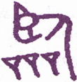
▲ 金文临
《临》，《兑》下《坤》上，《兑》，悦也，《坤》，顺也。《坤》曰“元亨”，以顺来也，《临》得《坤》之顺，故亦曰“元亨”，《兑》曰“利贞”，以悦致也，《临》得《兑》之悦，故亦曰“利贞”。“元亨利贞”，四德也，首备于《乾》，《乾》，天也，临民者，宜法乎天，故临亦备此四德。“八月”之说，诸儒纷议，然《易》之道，不外阴阳消长。以辟卦言之，《临》为二月之卦，二月当春仲，阳方长也，八月当秋仲，阳渐消也，阳消阴长，凶道也，故曰“至于八月有凶”。曰“至”者，未至而预防其至之谓也；曰“有”者，未有而预虑其有之谓也。若已至焉，若已有焉，凶既临身，虽欲避之，则已晚矣。圣人以《易》垂诫，期临民者先时杜维，亦即“履霜”“坚冰”之意也。万事能有吉而无凶，斯天下可常治矣。
《象传》曰：临：刚浸而长，说而顺，刚中而应，大亨以正，天之道也。至于八月，有凶，消不久也。
“刚”指《兑》下二画，谓初爻、二爻。“浸”，渐也，二阳渐长于下而上进也。内《兑》外《坤》，内悦而外顺也。“刚中”者，谓二爻刚得其中。“应”者谓五爻，得柔之中，以应刚中，是刚柔相应也。“大”即元，“以”即利。凡《彖传》以字，即释利字。卦德备“元亨利贞”者，《乾》《坤》《屯》《随》《临》《无妄》《革》，凡七卦，诸卦四德皆从《乾》六阳来，乾为天，故曰“天之道也”。“浸而长，悦而顺”，是道之得其亨；“刚中而应”，是道之得其正，所谓尽人以合天也。“八月，有凶，消不久也”，盖临当二月，“刚浸而长”，至八月柔浸而长，刚浸而消矣。“不久”者，言方消也，即浸之意。刚而浸长，君子应天而行，乃得“大亨以正”：刚而浸消，君子所当前时而戒，斯能免凶矣。阳长阴消，以天道言，则谓寒暑之往来；以治道言，则谓君子小人之进退。圣人特于《临》卦，反复垂诫，意深哉！
以此卦拟人事，或《临》高而望，或临渊而羡，或临事而惧，或临财，或临难，皆为临也。人事之害，不失于刚，即失于柔，刚之长，能济以柔，柔之长，能济以刚，斯和悦巽顺。刚柔两得，则必万事亨通，百为公正，是人事之至善者也。阴阳消长，天道之循环，固非人力所能挽，而人事之吉凶伏焉矣。浅言之，未寒而不谋其衣，既寒则谋之不及，必致冻矣；未饥而不谋其食，既饥而谋已迟，必致馁矣。推之恶未著时，而不自检摄，则恶必浸增，至恶大而不可复改；邪未盛时，而不自防闲，则邪必浸炽，至邪极而不可复治，皆凶道也。任其欲而纵之，放僻邪侈，盗跖之所以终盗跖；复其性而明之，戒慎恐惧，伯夷之所以终为伯夷。天道之阴阳寒暑，在转移之间，人事之善恶邪正，亦一转移间耳。临卦六爻，惟五爻刚柔得中，称曰“知临”，智则明，能察几，自有先时之吉，斯无后时之凶。人事之所以趋吉避凶，道不外是焉。
以此卦拟国家，六五之君，临御天下，以悦得众，以顺承天，握《乾》而闻《坤》，举直而黜枉，临之以庄，莫不大亨而得正矣。欲以一人临天下，其势难，以天下临天下，其势易，故人君不贵独临，必贵得人以共理，昔舜有五臣，武有十臣，皆是也。此卦六五之君，委任九二，刚柔相济，内悦外顺，察天时之变，度人事之宜，居正以“体元”，“嘉会”以敦“亨”，利用以裕民，“贞固”以“干事”，道足以教育天下英才，德足以容保子孙黎民。以此而临一国，而一国治，以此而临天下，而天下平。而君子不敢自为已治已平也，谓治难而乱易，必于未乱防其乱，谓泰极即否来，必于未否虑其否，此古人感羽翘而绸缪牖户，闻牛喘而调燮阴阳者，盖皆有深虑焉。《临》卦六爻，无一言凶，亦以其能思患预防耳。六爻中五居尊位，可谓聪明睿智，足以有临之圣君；二爻可谓咸有一德之大臣；初爻则行之以正；四爻则至近当位；上爻则敦厚终吉；虽三爻不中，幸其知忧而无咎。一人当阳，群贤荟萃，宜其君明臣良，得以长安而久治也，岂不休哉？
太阳历者，因方今外国交际频繁，沿而用之，至其数月，似于月之盈虚失准。然欧美各邦，古亦用太阴历，故今犹以十二分太阳历之一年，同以月称，是以占断上，数月必据大阴历。《易》以冬至为一月之初，故至一年终始，与太阳历无有大差，故不复附月之解释。
通观此卦，明主在上，为天下大悦之时也。地势卑而下顺，泽水浸而上悦，水土本相亲近，犹人主平易而近民，民皆欢乐而附上也，临之所以为临也。初九、九二，同为“咸临”，泽水自山而下也。初九泽犹未盈，故曰“行”；九二泽水已满，故“无不利”；六三水既及岸，故为“甘”；六四地与水接，故曰“至”；六五地泽正应，有智者乐水之象，故曰“智临”；上六，地愈厚，泽愈深，故曰“敦临”。“咸”者临之速也；“甘”者临之贼也；“至”者临之诚也；“智”者，临之明也；“敦”者，临之久也。“咸临”见其德之能感；“甘临”见其性之过柔；．“至临”见其位之得当；“智临”见其道之克明；“敦临”见其志之笃厚。盖六五之君，不以独临，而能任人，故以“智临”称之。用其“咸”，用其“至”，用其“敦”，而君子之道长；去一“甘”，而小人之道消。阳悦而长，阴顺而消，于是天时正，人事和，上下同德，熙熙皞皞，而天下治矣。是诚临民之极则也。
《大象》曰：泽上有地，《临》。君子以教思无穷，容保民无疆。
上卦之地高，下卦之泽卑，以上临下，故曰《临》。夫临下之道，不外教养二者。《兑》取夫悦，教而能悦，以集其思也；《坤》取夫顺，养而能顺，足以容其众也。教而有思，如泽之浸得其润；容而又保，如地之厚而能载。“无穷”者，泽之长也；“无疆”者，地之广也。又《兑》为口，是以能教；《坤》为腹，是以能容。君子取象泽地，以临万民，教之道在育英才，保之诚如抚赤子，泽普群生，量包一世，斯临治矣。
【占】 问时运：目下作事，恰如一潭活水，流行自在，好运正长。
○ 问商业：泽为货物，地为贩运之地也，得此占，其获利厚而尤远，大吉。
○ 问家宅：此宅必近水泽之乡，家业正旺，财丁两盛，大吉。
○ 问战征：其阵宜临水处，不特一时得胜，且有万民归服之象。
○ 问疾病：其命可保，其病必延久，一时难愈。
○ 问讼事：恐久久不了。
○ 问婚嫁：两姓和合，五世其昌，大吉。
○ 问六甲：生女。
○ 问行人：一时未归。
○ 问失物：在川岸处觅之，保可得也。
初九：咸临，贞吉。
《象传》曰：咸临贞吉，志行正也。
山泽通气之卦，名之曰咸；此卦泽上有地，阴阳之气相感，故初、二两爻，皆曰“咸临”。初居卦之始，其阳犹微，与四相应。四以柔而当位，初以刚而得志，行各得其正，乃能应而进于五，相与得行其道，以佐大君“智临”之治也，故曰“贞吉”。《象传》曰“志行正也”，盖初爻位居其正，是以志之所行，莫不正也。
【占】 问时运：目下新运初交，能守其正，行无不利。
○ 问商业：时当新货初出，市价平正，尽可贩行，无不如志。吉。
○ 问家宅：必是忠厚中正之家，现下适有吉事临门。大利。
○ 问战征：初次临阵，宜从大路进军。吉。
○ 问疾病：病是初起，正气充足，可保即愈。
○ 问婚嫁：门户相当，品行端正，佳偶也。
○ 问讼事：一经临审，即可了结。
○ 问六甲：生男，临盆有喜。
【例】 友人某来，请占气运，筮得《临》之《师》。
断曰：此卦地下有泽，泽者为水所停蓄之处。泽得地而流，地取泽而润，彼此相临，故其卦曰《临》。今足下占得《临》初爻，初与四相应，四近尊位，有贵显之象；但四爻贵显，阴柔而居阴位，势力尚有所缺。足下为初爻，阳而居阳，虽有才智，以无其位，未得行其志。在爻辞曰“咸临”，“咸”感也，两情定相感孚。今为初爻，是初次相见，意气虽投，尚未可望其速行，必俟二爻“咸临”，则无不利矣。必也其在明年也。
于是某敬服而去。
九二：咸临，吉，无不利。
《象传》曰：成临，吉无不利，未顺命也。
此爻成卦之主，以刚中之才，与六五柔中之君，阴阳相应，虽在大臣之位，任官之日犹浅，不保无众阴嫉之也。故直临则必有咎，宜待在上之君长，感我才德，而后临之，然后可得吉也。此爻曰“吉”，曰“无不利”，于六爻中特见赞美，盖初爻以正感，二爻以中感也。《象传》曰“未顺命也”，谓此爻在下体而不当位，故小人未尽从其命也。
【占】 问时运：目下正佳，又得贵人照应，大吉。
○ 问商业：初次既获吉，二次更利。
○ 问家宅：有福星照临之象，前后皆吉。
○ 问战征：再接再励，所向皆吉，但防偏裨中，有不从令者，以致败事。
○ 问婚嫁：咸利，惟属羊者最佳。
○ 问讼事：却不致败，但一时未得顺从。
○ 问六甲：生男，但未产也。
○ 问行人：在外者归期未定。
【例】 友人来，请占某贵显气运，筮得《临》之《复》。
断曰：此卦下之二阳长进，上之四阴衰微，阳者君子，而阴者小人也。君子在位，则国家安宁，万民得福，是临民之善者也。今占得此爻，以九二为贵显，与六五之君位，阴阳相应，谓之“咸临，吉，无不利”，可知某贵显本年之气运大吉。
【例】 明治二十七年，友人金原明善氏来访，曰：余生长之乡在远州滨松附近，以培植山林为业，近在东京经营银行，家乡旧事，未能兼顾。孙女现已及笄，欲得一配偶，使之相续家督，并可奉事老母，与余妻共归故乡。请占其吉凶如何？筮得《临》之《复》。
断曰：《临》卦下《兑》上《坤》，《坤》为老母，《兑》为小女，又《兑》为悦，《坤》为顺，是老母爱悦少女，少女顺从老母也。今占得二爻，其辞曰“咸临，吉”，二爻与五爻相应，二爻阳居柔位，五爻阴居阳位，恰合赘婿之象。爻辞曰“吉，无不利”，可使速完婚姻，若愆时期，三四两爻，皆不利。明后两年，未可成婚，必以本年为吉。金原氏谢而去。
六三：甘临，无攸利。既忧之，无咎。
《象传》曰：甘临，位不当也。既忧之，咎不长也。
“甘”者，五味之中，为人之所最嗜，为怡乐之义。“甘临”者，谓不能临人以德，而以甘言谄之，必无诚心实意也。三爻近二爻，见二爻未从其命，遂欲巧言求进。究之，言虽甘，而位不当，何利之有？既知其非而“忧之”，反邪归正，去恶从善，则以今日之是，亦足补前日之非，则可以免咎，谓之“既忧之，无咎”也。《象传》曰“位不当也”，以阴居阳，是位之不得其正也；“咎不长也”，幸以其忧之速，故其咎未至于长也。
【占】 问时运：运既不佳，行亦不正，幸能知悔，后运可望。
○ 问商业：店基不得其位，惟贩运糖业则佳。
○ 问家宅：屋运不佳，宜迁徙为吉。
○ 问战征：屯营地位不当，迁营则吉。
○ 问疾病：药不对症，宜进苦辛之剂，无咎。
○ 问婚姻：不合。
○ 问行人：外不得利，近时可归。
○ 问失物：可得。
○ 问六甲：生女，恐难长养。
【例】 明治五年，友人某来，请占某商人气运，筮得《临》之《泰》。
断曰：此卦地上有泽，地《坤》卦，《坤》以生育万物，为母，泽《兑》卦，《兑》以三索得女，为少女，有母女相临之义。《临》三爻曰“甘临”，以阴居阳，位不中正，恰如少女恃宠，以甘言取悦于母，冀专家政。今某商人，占得此爻，知某商人必夙性阴险，“专以机巧取利，一旦得志，便自盈满，如妇人小子之为，何利之有？若能迁改，尚可免咎。
友人曰：甚感《易》理之妙。某商人曾以一步金十钱价格，买横滨吉田新田之沼地若干，后因某豪商为抵当某省寄托金，以一步一元价格买之，以为抵当。故某商人一时占万余元巨利，从此遂生骄慢，轻视众人，其状恰类狂病者。余将对友人详说《易》占之妙，使之转告某商也。
六四：至临，无咎。
《象传》曰：至临无咎，位当也。
此爻位近至尊，才志俱弱，以柔顺之资，居台鼎之贵，能略分忘势，下应初九之刚正，尊贤尚德，情意恳至，故曰“至临”。盖大臣有休休好善之诚，无矜矜自足之意，以至诚之心，感应初九，初九之贤，亦感而悦服，共谋国事，是以无咎，临政之吉，莫大于此，《象传》曰“位当也”，谓得柔正之德也。
【占】 问时运：好运已至，无不得当，有吉元凶。
○ 问商业：目下贩运，正当其时，无往不利。
○ 问家宅：宅位得当，家业兴隆，无咎。
○ 问战征：其时已至，正可临敌获胜。
○ 问疾病：虽至危笃，尚可无咎。
○ 问婚姻：彼此欢洽，门户亦当。
○ 问行人：即至。
○ 问失物：即得。
【例】 友人某氏来，请占某贵显气运，筮得《临》之《归妹》。
断曰：此卦内卦《兑》为口，外卦《坤》为众，为俯听舆论，酌量民情，出而临事之谓，故名曰《临》。四爻具柔正之德，下应初九之刚正，忘势略分，厚意礼贤，可谓诚之至也，谓之“至临，无咎”。某贵显能体此意，可得无咎。
六五：知 ［84］ 临，大君之宜，吉。
《象传》曰：大君之宜，行中之谓也。
“知”者，智也，“智临”者，知人善任之谓也。夫以一人之身，临天下之广，自任其智，适足以为不智，惟能取天下之善，任天下之事，如此则“知周万物，道济天下”，是恭己无为之郅治也。此爻具柔中之德，居至尊之位，下应九二，知其贤而任之，所谓“聪明睿知，足以有临”，此爻得之矣，故曰“大君之宜”。舜之称大智，合天下之智以为己智，曰“舜好问而察迩言”，亦此意也。《象传》曰“行中之谓也”，谓五有柔中之德，倚任刚中之贤，以成“智临”之功，中道而行，是即不偏之谓也。
【占】 问时运：目下运得其时，又得好人相助，事事宜成，吉。
○ 问商业：知往知来，通晓商情，自然获利。吉。
○ 问家宅：有五福临门之兆。吉。
○ 问战征：能得军心，斯知己知彼，战无不胜也。
○ 问疾病：当得良医，详知病由，治之自然得愈。
○ 问婚姻：宜家宜室。大吉。
○ 问失物：有人拾得，久后自知。
○ 问六甲：生男，主贵。
○ 问行人：尚在半途，后日可归。
【例】 明治二十二年，占某贵显气运，筮得《临》之《节》。
断曰：此爻居五，为大君之位，爻曰“智临”有大君之象，非人臣所宜。今为某贵显占得此爻，五与二相应，五君，二臣也，当以二爻为某贵显。“智临”者大君，受大君所知者，某贵显也。受大君之知以临政，凡有善政，皆宜归君，故曰“智临，大君之宜，吉”。然位高任重，众忌所归，往往宜于君，转不宜臣，亦阴阳消长之机也。《临》六爻无凶象，特于《象》曰“至于八月，有凶”，圣人就此吉卦，突示凶灾，盖以长之初，消即伏之，福之来，祸即继之，谓吉在今日，凶宜预防于将来也。
《易》机甚微，未易测度。后十月某贵显淬遭凶暴所伤，不在八月《观》之数，延至十月《遁》之数。虽筮者有不能确知其数者，然吉凶之理，要不出消长循环中也。后进之士，须注意焉。
【例】 明治三十年五月十二日，访横山孙一郎氏于东京山下町雨宫敬二郎、小野金六两氏，亦在其座，谓余田：吾辈昨年以来，欲使英国左美以儿商会，买我国公债，极力斡旋，然价值不适，苦虑久之，请占此买卖约券成否？筮得《临》之《节》。
断曰：《临》者，彼此互相临之谓也。盖此卦以《兑》少女，与《坤》老母，有相顺相悦之象，公债买卖，意亦如此。我得战胜偿金，欲《益》扩张军备，示威信于各国，坚固国家之基础，因卖公债，俾补不足，彼商会亦将卖与本国低利之商人，得其赢余。两下互相谋利，犹老母与少女，亲悦而成事也。今占得此爻，知即可遂望，事在必成，勿复多虑。
翌日果有四干万元公债买卖约成之报。
上六：敦 ［85］ 临，吉，无咎。
《象传》曰：敦临之吉，志在内也。
“敦”者，笃也，厚也。此卦六五既应九二，上六又从而附益之，谓之“敦临”，犹复六四既应初九，六五亦从而附益之，谓之“敦复”，其义一也。此爻为《坤》之极，居《临》之终，阴柔在上，与二虽非正应，而志在从阳，屈尊从卑，降高就下，礼意敦笃，是临道之善持其终者也，故曰“敦临，吉，无咎”。凡卦于上爻为极，过极每多危象，此爻曰“敦临”，有“安土敦仁”之义，无过极之虑也，是以吉而无咎。《象传》曰“志在内也”，内者，指内卦二阳，虽与内卦无应，上六之志，惟在于内，故曰“志在内也”。可与《泰》初九之《象传》“志在外也”对看。
【占】 问时运：目下好运已终，惟其存心忠厚，故得无咎。
○ 问商业：贩卖内地，吉。
○ 问家宅：世代忠厚，内外肃穆，吉。’
○ 问战征：宜增兵益饷，以保护内地为要。
○ 问疾病：培养元气，勿药有喜。
○ 问六甲：生女。
○ 问失物：即在家内，未尝失也。
○ 问行人：即日可归。
【例】 友人某氏来请占谋事，筮得《临》之《损》。
断曰：此爻《临》之极，功业已完，别无他图。曰“敦临”者，亦于临道之中，复加敦厚而已，能敦厚以临，故得“吉，无咎”。今占得此爻，足下亦宜知此意，凡事宜加敦厚，则何谋不遂？何事不成？足下思虑之笃，可于《易》象见之。
某氏曰：《诗》云，“他人有心，予忖度之”，洵先生之谓也。深谢而去。
20 风地观
按：“观 ［86］ ”字，从雚，从见。雚即鹳，似鸿而大。鹳有白黑二种，白鹳巢树。鹳又能察时审变，每天阴晴雨雪，大风大水，气候不常，向树上瞻望，随所见之上下，以为趋避。故土人亦皆视鹳之飞鸣止食，以占常变。见，视也，常见曰见，非常曰“观”，故合雚与见为观。此卦下《坤》上《巽》，巽为风，坤为地。风本无形可观，以其触于物者而观之，犹上之德化无形，以施于政者观之，下之性情无形，以发于事者观之，有相观而化之义也。是以名其卦曰《观》。《序卦》曰，“物大然后可观，故受之以观”，此观之所以次于临也。
▲ 甲骨文观
按：盥字，从臼，从皿，水在皿上，有两手掬水之象。卦本《巽》，《巽》为入，谓以两手入水而洁之也。巽为不果，故曰“不荐”。《坤》下《坎》上，谓比，初爻曰“有孚盈缶”，缶亦盛水之器。《乾》下《巽》上，谓《小畜》，五爻曰“有孚挛如”，挛，即两手，均得有孚之象。《巽》下《坤》上谓《升》，与《观》互变，《升》二爻曰“孚乃利用禴”，有用祭之义焉。“颙”，《说文》曰“大首也”，谓昂首而望之，有《观》之象。“若”，顺也，有诚心而奉顺之意。“不荐”“有孚”，即不动而敬，不言而信，谓观于盥之用洁，而众情已孚，有不待荐而始感者也。是观在心不在貌，孚以神不以迹。即此盥手之初，而精诚所注，天下皆见其心焉，故曰“观：盥而不荐，有孚颙若”。
《彖传》曰：大观在上，顺而巽，中正以观天下。《观》，盥而不荐，有孚颙若，下观而化也。观天之神道，而四时不忒，圣人以神道设教，而天下服矣。
此卦两刚四柔，两刚在上，四柔在下，刚为大，柔为小，故曰“大观在上”。《坤》顺《巽》入，是能顺而《巽》也。九五处卦之中，刚居阳位得中。“天下”指四柔，谓其居于上卦之下。五爻为君，四柔皆臣也，中正之德大而在上，足以为观于天下。为观之道，全在精洁诚敬，至中至正，无稍间断。四柔观感诚意，咸思进而自洁，有不期其化而自化者矣，故曰“下观而化”。观圣即可观天，圣道无殊天道，天道神妙，故曰“神道”。天有“神道”，而时运“不忒”；圣有神道，而中正无私。天之道，不言而四时行，百物生，圣之道，“不荐”而万民孚也。圣人合天之德，法天之行，神而明之，发为政教，俾天下沐渥圣化，沦肌泱髓，妙合无言，所谓不识不知，顺帝之则，犹如戴天而不知天之高者矣，其化道之神为何如乎！故曰“圣人以神道设教，而天下服矣”。
以全卦观之，阳大阴小，四阳之卦，有曰《大过》，与《大过》相反，四阴之卦，有曰《小过》。《大壮》卦，四阳在下，二阴在上，此卦四阴在下，二阳在上，与《大壮》反，独不曰小。《彖传》曰“大观在上”，以九五阳刚，中正得位，故不言小。此全卦取名之主义也。凡阴盛阳微，必致以柔逼刚，爻多不吉，此卦六爻独不言凶，亦以五居君位，中正之德，足以仪型天下，群柔皆仰而观之，故相观者不致相持，而柔无复逼刚矣。卦义专取为观于下，不取阴盛之象。卦以四爻为主，四爻以柔居阴位得其正，上比二刚，下接三柔，率三柔以进于五，仰观德化，是以四爻为一卦之主也。初爻始阴在下，位与五违，所观者浅，如童蒙然，故曰“童观”。二与五本相应，但二阴暗柔弱，不能进而观光，而仅得窥见其仿佛，是效女子之贞也，故曰“利女贞”。三爻比四，四为主观，三观四之动作，以为进退，故曰“观我生，进退”。四比近于五，观最真切，五为君，四近于君而相得，故为“宾”。君之德教，发而为国之光华。“利用”者，谓将进而效用也，故曰“观国之光，利用宾于王”。五爻居一卦之尊，天下之民情风俗，由我而化，所谓正己以正万民者，故曰“观我生”。《象》曰“观民也”，盖内而观我，即外而观‘民也。上九居观之终，刚健有德，虽夙为民所瞻观，因其高而无位，不欲出而观民，惟反而自观，谨身免咎而已，故曰“观其生”。《彖》称“圣人”，《象》称“先王”，皆指五爻君位而言也。《彖》曰“神道设教”，以上体乾德，示观于天下；《象》曰“省方”“设教”，以俯效巽风，省观夫民俗也。故卦名之《观》，自上观下，爻辞之观，自下观上，义虽不同，各有所取。所谓“设教”，所以一其观德，消其逸志，使之咸归于中正之域，一道德而同风俗者也，故曰“大观在上”。
（附言）
神字从示从申。示，《唐韵》：“音侍，垂示也”。《说文》曰：“天垂象，见吉凶，所以示也”。《玉篇》曰：“示，语也”，以事告人曰示，申，引伸也，盖神者，所以引伸其道以示人者也。《象传》曰，“圣人以神道设教”。是以垂示神道，以教天下也。古昔圣王之祭神，以至诚求神告而已，故上则神明假格，下则群黎服从。《观》卦之圣人，以此设教，其妙有不可思议，天下一观，而感应捷于影响，莫不服圣人之观也。
余尝慨我邦神教之衰，明治二十四年春，曾创兴阴阳寮之议一篇，附记以补“神道设教”之说：
恭惟我国，称曰神国，我国治道，称曰神道，其所由来久矣。盖神道，邦语曰“计惟神之道”。惟神者，即随神之谓也，故一作神随。观古先皇之建国，以神祭为政事，以神敕为国是，凡一切政事、苟涉疑虑，皆依神教决之，是所以称我国曰神国也。国君通称天子，天子者，为天之子，谓奉天明命，抚临万国，尊无二上，以天为父，故尊之曰天子。上自大臣，下至属官，皆佐天子以敷教者也。孟子引《书》曰：“天降下民，作之君，作之师，惟曰其助上帝，宠之四方”，是天子而能助上帝也。《书》曰：“乃文乃武，乃圣乃神’”是天子而即为神皇也。《观》之《象》辞曰：“圣人以神道设教，而天下服”，可知治道通于神道，惟神道乃可以补治道之不及。
古者国有大事，必藉卜以决疑，此神道之最彰者也。天人感通之理，其在斯乎？夫人虽贤明，不能前知未来之事，惟卜筮则能前知。昔在我国神代之时，垂鹿卜之法，以问神意，称曰卜问，今奈良春日畜鹿，即此遗意也。后与支那交通，传得龟卜、蓍卜之术，神人感通之道愈备，未来前知之法益明。“天地设位，圣人成能，人谋鬼谋，百姓与能”，于是朝廷置阴阳寮于中务省，设阴阳头、阴阳助、阴阳博士、阴阳士等吏员，以供其职，以修其业。令典所垂，自古有然；中世以来，皇政式微，寮废宫阙。然当国家大事，皇上亲祭伊势大庙及贤所，使府县知事代拜全国官国币社，告以事由，派遣吏员于外国，使之参拜贤所。奉神威以临异域，朝廷之崇敬神教，未尝或替，下民效之，凡值神诞祭礼，及春祈秋报，陈俎豆以飨神明，荐馨香以祈福佑，虽卜筮之法几废，而酬报之礼犹存也。我国地居东海，古号神洲，是以神道之昭垂愈著，民心之爱戴愈虔，凡忠君爱国之忧，罔不敬神之诚而焕发也。其功如斯，若能尽诚尽敬，开明布教，克复前徽，斯精灵感格，有求必孚，其灵效之显赫，当更有进者矣。
皇政维新，百废俱兴，惟于阴阳寮，未见复设，无他，维新事业，多创建于兵马倥偬之际，既又侵入欧美文物，汲汲模效西学，无暇复古。况西人蔑视神道，创论为无，故习西法者，多惑其说，信口妄谈，谤毁神祗。由是渎慢之风，行于家庭则侮父兄，行于府县则侮官吏，行于国中则侮君上，败人间之秩序，害社会之安宁，方今天下之通弊也。察其弊所由来，皆由神道息微，以致人心狂妄，不知畏敬，极其所至，其祸有不可胜言者矣，可不慨叹乎！方今圣明在上，独断万机，大臣各进谠言，以相辅佐，复开贵族院、众议院，问国民之舆论，以定国是，是所谓君从相、从士、从庶民，从之时也。然谋于野而不谋于天，询于民而不询于神，未始非圣代之缺典也。古者命相则卜之，出师则卜之，求贤则卜之，礼曰，“卜筮者，所以决嫌疑，定犹豫者”是也。古时我国有行之者，即阴阳寮之属也。今朝堂之官吏，二万六千人，皆立君子之位，独阴阳寮职，不闻复古，粤稽古时，所称神随国者，其教既废，其名亦殆将灭绝矣。
余虽不肖，深为之惧，意欲修复阴阳之术，推阐感格之诚。然言之则罪犯僭越，不言则罪获冥明，其罪均也，则宁言之。不若使神国之称，得践其实，内可与四千余万生灵，同沾幸福，外可使欧西各国，昏昧而不知神道者，得闻此灵明玄妙之真理也。爰此，敢陈兴复阴阳寮一议。呜呼！所愿当道君子赞成此议，振兴舆论。得复阴阳寮之古职，不惟本邦之幸福，实足发世界之光辉也！谨议。
以此卦拟人事，不外观己观人两端，而家业之兴替关焉。卦体下《坤》上《巽》，二阳在上，四阴在下，五居尊位，一家之主，为家人所观仰也。四阴为家人，皆顺从于五，一家之主，道当庄敬严肃，时凛承祭见宾之意，使家人观感而化，群思澡身浴德，相争以诚，不敢偏存欺诈。虽家主柔顺谦和，绝无苛责，而中正之德，垂为仪型，自有不言而信，不动而敬者矣。天道正而四时调和，家道齐而一门肃睦，故人伦之重，称为天伦，物则之微，协于天则。人能敬从天命，与天合撰其神妙莫测之机，攸往咸宜，一旦出而临民，先王所谓“省方”“设教”者，措之裕如。而仅施诸一家一门之内，犹其小焉耳。初爻为一卦之始，如家中之幼子，所观者小，在小人固无咎也。二爻阴暗柔弱，仅能窥见仿佛，窥者从门隙而观之，在女子尚不失其贞也。三爻柔顺之极，能以顺时进退，故不失其道。四爻比近于五，是家主之亲人，其所观最为真切，为家主所信用也。五爻则刚阳中正，齐家之主，几家政之善恶，皆存乎其身，故曰“观我生”。上爻居五位之上，为家主之长亲也，虽其人已不关家政，而家人犹必仰观其道德，用为法则，故不能不避而自观也。古昔文王，德盛化神，必曰“刑于寡妻，至于家邦”可知治国必本治家，所谓观于家，而王道易见者也。此卦全体，阴盛阳微，道极可危。卦名曰《观》，五上两爻，二阳在上，虽不言凶，一则“观我生”，一则“观其生”，皆孜孜返观内省，其防危虑患，至深且切。凡人持身涉世，时时能敬凛此旨，庶可无咎矣。
以此卦拟国家，卦象为阴盛剥阳，惟赖神明之呵佑，挽回衰运之时也。盖内外二体，外卦为政府，二阳在位，具中正刚强之德，足为亿兆观瞻；内卦为人民，四阴在下，怀柔顺卑《巽》之情，常欲仰观政化。人民众多，政府高远，彼小民不能亲观夫圣德，必就近侍夫君者之观以为观。四爻比五，为《巽》同体，一卦之主，凡下三阴欲进而观五，必先观四，故初曰“童观”，如孺子之望富门，高不及见也。二爻曰“间观”，有畏怯不敢直前，仅以潜身窥伺也。三爻曰“观我生，进退”三与四近，是以得观视而定进退也。四爻比近尊位，得亲待圣躬，瞻仰国光，“利用宾于王”，宾，犹臣也，即利见大人之谓也。五为大君，中正得位，盖以二阳孤立，高而可危，故曰“观我生”，其兢兢业业，不问正人而先正己，意甚深切。六爻居《观》之极，在五之上，身虽无位，与五合德，曰“观其生”盖其惕厉之意，与五亦同。统观四阴之意，皆以窥察大君之动作，以为进退；二阳在上，惟以明德新民，孜孜以持盈保泰为虑。爻辞曰“盥而不荐，有孚颙若”，谓君能至诚精洁，可以格神明，即可孚黎庶，是恭己南面，无为而治之旨也。《象》辞即释此意而引伸之曰“大观在上”，即有岌岌乎可危之象；曰“巽而顺，中正以观天下”。就卦体之巽前不顺中正，言君首当修明其德，为天下观。“观天之道”数句，亦从“盥而不荐”来，言天道神化不测，寒暑往来，四时不忒，圣人能效法神道，当为政教，于变时雍，天下咸服矣。《象传》曰“先王以省方观民设教”，此即示以观之之道。盖《彖传》之旨，以观示下，《象传》之旨，以观察下。统之乘此阳德，足为民观，亦足以观民，而群阴服从，否则阳德有亏，群阴即因而上逼，亦可危也。二阳爻皆言“君子无咎”，君子者，有德之称。有德则无咎，无德即有咎，反观而自明矣。为国家者，安可不凛凛哉！
《大象》曰：风行地上，观。先王以省方观民设教。
《坤》为地，为国土，为众，《巽》为风，为命令。此卦“风行地上”有施教于民之象。“方”者谓四方，“省方”者，省察四方民心之向背也。“观民”者，考验风土民俗之所尚也“设教”者，随其地，察其俗，设教而施治也。夫天下之民情，或为风气之所囿，或为习俗之所移，各有所偏倚，不能归中正和平之域。先王见风行地上，有周流披拂，无处不遍之象，法此以省方，有嘘枯吹新，鼓动万物之象。法此以“观民设教”政以束其身，教以导其心。从“省方观民”之后，而复设以教，则因奢而教以俭，因惰而教以勤，斯教愈善矣。故孟子有曰：“善政不如善教之得民心也。”要其教之深入民心，犹风之通行天下也，如此则化行俗美，弊革风清。观之道，无以加之，谓之“省方观民设教”。
【占】 问时运：目下正当振作有为，宜出外历览，不宜杜门静守。
○ 问商业：贩运洋货，风险须防。
○ 问家宅：宅中或旧有供奉神佛，或皈入教门之家，或是家主设馆教徒。
○ 问战征：有风雷疾卷之势，可以掠得土地，收获民众。吉。
○ 问疾病：是风湿之症，宜流行活动，血调而风自息。
○ 问出行：远游吉，传教更好。
○ 问讼事：得平匀断结。
○ 问六甲：生男。
○ 问天时：有风即晴。
○ 问失物：初在地上，被风吹远，宜遍寻之，可得。
初六：童观，小人无咎，君子吝。
《象传》曰：初六童观，小人道也。
“童观”者，谓无远大之识见，犹童稚蒙昧，不能振拔以观道德之光。此卦六爻，各取义于观，以地之远近，分观之浅深，故其所观，一爻胜于一爻，此义不可不知也。初爻以阴柔在下，是幼稚之氓，抱昏愚之性，处荒僻之区，所居既远，所观亦微，故曰“童观”。“小人”者，以其昏昧，无远大识见，固不足怪，是以“无咎”，若君子而如是，不亦可吝乎？故曰“小人无咎，君子吝”。《象传》曰“人道也”，以其位卑识微，只得如是。“道”，即“小人道长”之道也。
【占】 问时运：初运未佳，幸无大碍。
○ 问商业：初立场面，只宜就小，无咎。
○ 问家宅：防有童仆偷窃之患。
○ 问战征：防有小胜大败。
○ 问疾病：小人无碍，大人不利。
○ 问行人：宜就近，无咎。
○ 问六甲：生女。
○ 问婚嫁：自幼结亲，吉。
○ 问失物：防为小儿抛弃。
【例】 某石炭会社员来曰：当某局石炭购入，试验甲乙石炭之火力，然后将付之入札，请占其胜败如何？筮得《观》之《益》。
断曰：观者见也，见石炭之真质也。今某局方购入石炭，试验火力，然后竞争入札，可谓行公平之法则者也，谓之“大观在上，中正以观天下”。今占得初爻，初六在下，僻处远方，曰“童观”。以幼童见识，昏愚短浅，盖指检查者之无识也。爻曰“小人无咎，君子吝”，是正者取败，不正者得胜之时也。兹竞争者某，富狡猾之智，于试验之际，其设计行诈，弊有不可胜防者，深恐会社取败。
后果如是。
【例】 友人来告曰：偶得某豪商招待状，余同业中，亦当集会，请占此日接待之景况如何？筮得《观》之《益》。
断曰：此卦《彖》辞曰“大观在上”，必是一绝大集会也。今占得初爻，初阴在下，地位甚卑。在足下见识高远，老成简练，余所知也。爻辞曰“童观，小人无咎”，恐有屈尊就卑之嫌。遇如此，小人尚可，君子未免不快于心，外耻于人，内惭于己，谓之“童观，小人无咎，君子吝”。
某闻之，如有所疑，因彼好意，亦不能辞，遂临其席。当日余亦同席，数十人中，某适列末座。某在同业中，智识才力，可驾众人上，此日受斯接遇，不知何故。
六二：窥观，利女贞。
《象传》曰：窥观女贞，亦可丑也。
《艮》为门；《坤》，阖户，“窥观”者，盖从门隙而窃窥之也。二爻以阴居阴，位得中正，虽进于初爻，其位尚卑，见识亦劣，不能观刚阳中正之大道。孟子“齐人一妻一妾”章，其妻曰“吾将阚良人之所之矣”。窥、窥字皆从门，义同，是女子之行也，故曰“利女贞”。在丈夫，当目观天地之广远，心观万理之幽微，内观自己之身心，外观天下之形势，岂得以潜探暗窥为得计乎？《象传》曰“窥观女贞，亦可丑也”，女以贞为利，女子而“窥观”，尚未为失，若丈夫则丑矣。“亦”字承初爻“吝”字来，初爻以小人励君子，二爻以女子激丈夫。
【占】 问时运：目下运不佳，只宜株守，若妇女占之，大利。
○ 问商业：蚕丝业大利，余不佳。
○ 问家宅：必是妇女主家，利。
○ 问疾病：是阴寒之症，无害。
○ 问出行：须携眷同往，若行人，必携眷偕归。
○ 问六甲：生女。
○ 问失物：恐在门隙之间，窥探得之。
【例】 明治二十三年，占贵族院，筮得《观》之《涣》。
断曰：二与五应，五爻阳刚为政府，居高而下观人民；二爻阴柔为人民，在下而仰观政府，上下相应也。乃二女不能正观，而曰“窥观”，以其阴柔，故为“女子”也。今占贵族院占得二爻，二爻居阴之正位，上应九五。贵族院者，集皇族、华族、国家之元老，其他多额纳税者亦与焉，是欲通观宇内之形势，创建维新之谠论，得与欧美各国竞进，取破之长，补我之短，更将驾各国而上之，为各国所瞻观也。爻辞曰“窥观，利女贞”是以我国一时只知顺从，观犹未远，殆将激励而更进之也。此占盖期见识更进一步。
六三：观我生，进退。
《象传》曰：观我生，进退，未失道也。
“我生”者，指动作施为之自己出者，意思之发动，亦谓之生。“观我生，进退”者，谓省视我志之正邪，我行之通塞，而进退之也。又‘进”者谓往刚，“退”者谓返柔，《系辞》曰“变化者，进退之象”是也。三爻居上下之间，在下卦之上，可以进，可以退，地位较二爻稍近，其见识亦稍胜，故能审观“我生”之所宜，以卜进退。度德而就位，量能而居官，随其可否而进退，谓之“观我生进退”。一出而成天下之事，是所行之通也，则可从而进；虽出不能成天下之事，是所行之塞也，则可从而退，其出处进退，于己取之而已。《象传》曰“未失道也”，谓其观己之才德，察时之可否，以用意于进退去就，虽未得道，要无误身失时之忧也。
【占】 问时运：目下运却平平，能度德量力，不自妄动，虽无所得，亦无失也。
○ 问商业：谨慎把握，随买随卖，听时计价，决无失也。
○ 问家宅：宜旧宅，不宜转移。
○ 问战征：宜审察军情，随机应变，决不致败。
○ 问行人：归心犹豫未决。
○ 问六甲：生女。
○ 问疾病：宜息心自养，可保无虞。
○ 问失物：即得。
【例】 友人来访，云同业者三名纠合，欲创始渔业于北海道，请占前途吉凶。筮得《观》之《渐》。
断曰：《观》，风行地上之卦也。风之为物，不可目观，以物之动摇，始知有风。占之事业，以座上之谈论，与最初之胸算，虽如容易，至其实际，有遭遇意外变动之象。今三名联合，创始渔业，其他二人，比足下才智金力，皆居下位，恐有半途辄退之虞，足下若无独力成全之力量，必不可着手。今占得此爻，曰“观我生，进退”，知此事业，进退全在“我生”，毫不须假他人之力，惟在已预筹其智略，自可定成否也。
后某不用此占，与他人联合，他二人未半途而挫折，某亦预支算外费用，且贷出多额之金，适海鱼不发，不获奏其功，却取大败。
六四：观国之光，利用宾于王。
《象传》曰：观国之光，尚实也。
“王”指九五。阳明阴暗，九五阳爻，有光明之象。不言君而言国者，君者专属当阳一人，国则统朝廷百官而言之也。“观国之光”，谓观国中风俗之美恶，政教之隆替。“光”者，国之光华也。“宾于王”者，谓古有贤者，人君宾礼之，故土之值进王朝者，谓之宾。明主在上，怀抱才德之士，皆愿进仕王朝，辅翼君上，以康济天下，此君子之志也。四爻近五位之尊，为一卦之主，黼黻王献，光被四表，故曰“观国之光，利用宾于王”。项氏曰：“履正故为宾，不正即为敌”，是国有光可观，则宾，国无光可观，则敌。四以柔居阴，位得其正，《纂言》曰得阴之正，故有效顺而无跋扈也。《象传》曰“尚宾也”，宾即《书》所云“宾于四门”之谓，盖敬礼之也。此卦四阴二阳，与剥之五阴一阳，阴盛逼阳，势皆危险，六四为四阴之魁，进逼君侧，五爻以宾礼尚之，是隆其礼而不假以权也，可谓善处其观者矣。《剥》之六五曰“贯鱼”，曰“以富人宠，无不利”，此爻与《剥》之六五，交互参看，可以察其义也。
【占】 问时运：目下当盛运，求利可，求名尤佳。
○ 问商业：宜贩运出洋，不特获利，且可得名。
○ 问家宅：主有喜事临门，光增闾里。
○ 问战征：必得大捷，论功邀赏，垂名竹帛。
○ 问疾病：不利。
○ 问行人：不归。
○ 问六甲：生男，且主贵。
○ 问讼事：得直。
【例】 明治七年，占某贵显渡航清国，筮得《观》之《否》。
断曰：观者四阴得时，上逼二阳之卦，有臣民得势，将犯君位之象。今占得四爻，贵显渡航清国，将与彼国有谈判之事，贵显必能不辱君命，彼国之王，当必以宾礼相敬待也，谓之“观国之光，利用宾于王”。
某贵显果如此占，不辱君命，完其任而归朝。
九五：观我生，君子无咎。
《象传》曰：观我生，观民也。
“观我生”者，与六三同辞，其义殊异。五爻尊位，居中履正，是当阳首出之一人也，阳刚在上，为观之主，四海之内，由我而化，治道之隆替，风俗之美恶，皆自我生而推暨，故不观人而观我。观之而我之教化善焉，则天下皆有君子之风，是可以无咎矣，谓之“观我生”，即《中庸》所云“本诸身，征诸庶民”者是也。《象》曰“观我生，观民也”，王者以中国为一人，民心之向背，无不自我，观我即所以观民也。
【占】 问时运：目下运得其正，直道而行，无往不利。
○ 问商业：当由我把定主意，买卖贩运，无不利。
○ 问家宅：此宅必由我建造，君子居之，大利。
○ 问战征：当审察己营，所谓知己，乃能知彼也。可获大胜。
○ 问疾病：有命在天，无咎。
○ 问行人：即返。
○ 问失物：仍在身边，未失也。
○ 问六甲：生贵子。
【例】 友人某为推选会社社长，请占会社之盛衰，筮得《观》之《剥》。
断曰：此卦名《观》，有上下互观之义。下之观上，仰其威仪；上之观下，察其贤否。今占得五爻，曰“观我生”，则是返而观己也，谓我而不善，何能望人之善，我而善，自足化人之不善，故观人不如观我，今足下选充社长，为一社之主，社中诸事，皆由足下一人而出也。足下当先内观于己，社友之从违，咸视足下之向背，即社运之盛衰，亦在足下而已。足下其自审之！
同氏闻之，努力奋励，社员及职工，皆感其风云。
上九：观其生，君子无咎。
《象传》曰：观其生，志未平也。
上爻具刚明之才德，居五爻之上，处一卦之终，虽高而无位，其一动一静，为众人所瞩目。既为众人所观，不能不自“观其生”，与五同德，故亦与五同观。“观我生”，观发施之政教；“观其生”，观平时之行义，稍有不同耳。而要皆以君子为归，庶无咎也。《象传》曰“志未平也”，言上处极必危，虽无其位，未忘恐惧；曰“志未平”，其谨畏可知也。
【占】 问时运：盛运已过，反躬自省，亦无失也。
○ 问商业：此种货物，已将告罄，由我得价，自然获利。
○ 问家宅：是老宅基，生息繁盛，有利无咎。
○ 问战征：军事将终，即可旋凯。
○ 问疾病：命运不久。
○ 问讼事：即结。
○ 问六甲：生男。
【例】 明治十八年岁杪，鸟尾得庵君来访，晨夕谈论《易》理。余言《易》理玄妙，今日之精通《易》道者，盖已寥寥矣。鸟尾君曰：天下之广，人才之多，岂无一二之能晓者乎？余曰：余自玩《易》理，二十有余年，然感通之力，仅得咸之初爻，犹未能穷其奥也。自孔子以来，真得神明变化者，世多不闻其名，由是观之，彼此之妄谈卜筮者，皆皮毛耳。论难数回，鸟尾君曰：有无之论辩，不须烦言，不如一占以决之。乃筮得《观》之《比》。
断曰：上爻者，卦外无位之地，此卦《彖》辞，首言神道，是假格神明之卦之例。以六爻配三才，以五为天位，上居五上，是谓天子之父，即天也。今占得上爻，曰“观其生”，明明教余反观内省，于《易》之道，果得窥透一二？余不能窥透，即知人亦以未能窥透也。又上爻于时为未来，今日虽无其人，后世或有能精晓者矣。
鸟尾君首肯曰：以此观之，今时之无其人，可知也。《易》原非再三可渎，余亦试一筮。筮得《节》之《需》。
爻辞曰：“六三。不节若，则嗟若。”
《象传》曰：“不节之嗟，又谁咎也。”
断曰：今时求之真通《易》道者，犹霜月求春花，暑夏欲冬粱，其不可得，天也，非人之咎也。
《易》之灵妙，二筮一旨，相与浩叹而别。
【例】 亲友某，为构造三层房屋，示建筑学士绘图，请占可否，筮得《观》之《比》。
断曰：此卦《彖》辞首曰“大观在上，”“观”字，亦作楼观之观，有高楼之象焉。今占得上爻，知学士见识高妙，其以欧美各邦有名建筑之图，画为模范。如此构造，壮则壮矣，欧洲风土气候，与我国异，则家屋之建筑，亦不得不从而异，在建筑师，所当体其意而折中焉可也。如我国以夏为本位而建造，被国以冬为本位而建造，故我国家屋，拟西洋构造者，夏日乏风而苦热，冬日乏阳而苦寒；他如事务室，有旦昼不能灭烛者。此构竣工以后，防有龃龉，多致改造变更之事，故《象传》曰：“观其生，志未平也。”
21 火雷噬嗑
“噬 ［89］ ”，啮也，“嗑 ［90］ ”，合也，啮而合之也。卦全象颐，以初、上二刚为两唇，以二、三、四、五四阴为齿，上下龂腭，有噬之象。以四爻一刚，梗于其间，如物之在口，初上二刚，以四为梗，遂致上下不得合。下唇动，上唇止，必噬乎四之梗，梗消而两唇乃合，谓之《噬嗑》。卦承《观》来，《序卦》曰：“可观而后有合，故受之以《噬嗑》，嗑，合也。”既有可观，后必来合，《噬嗑》所以次《观》也。
噬嗑：亨，利用狱。
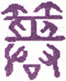
▲ 篆书噬
▲ 篆书嗑
《杂卦》曰：“噬嗑，食也。”凡食下咽则口合，有物梗之则口不合，不合则不通，合则亨通矣，故曰“噬嗑，亨”。由是而推之，在家庭则有谗邪以梗之，在朝廷则奸佞以梗之，在道路则有强暴以梗之。一如物之在口，有梗则不通也，欲期其通，当先治其梗，治梗者，“利用狱”。治狱宜刚，象取初上两刚，用之者，则在五爻也。“狱”，囚也，外卦《离》体，外实中虚，有狱象焉。内卦《震》，《震》威也，外卦《离》，《离》明也，威而且明，有治狱之才焉，故曰“利”。如是而噬嗑济矣。《彖传》曰：颐中有物曰噬嗑，噬嗑而亨。刚柔分，动而明，雷电合而章。柔得中而上行，虽不当位，利用狱也。
颐本合也，因中有物梗，则上下不合，卦体初上两刚在外，二、三、五三柔分列上下，四爻一刚在中，如颐中有物之象，必得初上两刚相交，噬而嗑之，啮去其梗，颐斯合矣。颐合梗去，则亨通也，故曰“噬嗑而亨”。此卦内卦一刚二柔，外卦二刚一柔，是刚柔相分也。雷动也，电明也，“动而明”。雷震而电煽，一时合发，威耀交彰也。“柔得中”，指六五言，以柔居刚，为刚柔得中也。“上行”，谓五居尊位，柔而处阳，位虽不当，而利于用狱。盖用狱过刚则伤猛，过柔则伤宽，刚柔得中，而狱平矣。统言之，物有害于口齿间者，人以噬嗑治之；物有害于造化者，天地以雷电治之；物有害于政治者，先王以刑狱治之。所谓“噬嗑而亨”者，道在此矣。故《噬嗑》一卦，为治天下之大用也。
按：《贲》卦亦有物在颐中之象，然上卦《艮》止，下卦《离》丽，上止下丽而不动，故不能噬物，虽有颐中含物之象，无噬物之义也。
以此卦拟人事，卦象为“颐中有物曰噬嗑”，谓颐因物梗不能合也。推物之所害，不第颐然，物入于耳而耳必不聪，物生于目而目必不明，物入于胸而胸必致病，物入于心则心必致蒙，是物之害在身也。极之父子之间，有物以间之，则父子乖；兄弟之间，有物以间之，则兄弟离；夫妇之间，有物以间之，则夫妇怨；朋友之间，有物以间之，则朋友疏，是物之有害于彝伦也。欲除其害，在治人则用刑狱，在治己则用内讼，其法一也。动为雷，明为电，动以致其决，明以察其几，动与明合，而赏罚彰焉。以位言之，五爻为君，以德言之，五爻为心，心所以称天君也。此卦五爻，以柔居阳，曰“柔得中”，谓心能柔而用刚，则刚柔得中，斯不失严，亦不失宽，而内松之功用全矣。卦名曰《噬嗑》，《彖》辞曰“颐”，皆取象于齿颊间，故六爻中，曰“灭趾”，曰“灭鼻”，曰噬肉，曰“噬胏”，曰“灭耳”，皆取象于人身，是诚为剥肤之灾也。在内则撤去而心身亨，在外则谗邪去而万事亨，所以善其治者，全在天君也。《易》理所赅甚广，为家，为国，为身，在占之者随事取之耳。
以此卦拟国家，朝廷中所最害政者，群僚在位，有一谗佞与立其间，颠倒朝政，惑乱君心，虽有贤能，被其离间，不能协办共事，此国家所以日替也。此卦四爻，一刚在中，间阻上下，即其人也。初上二阳，一上一下，不相会合，二三柔顺无能，五爻以柔居阳，比近于四，未免偏听。雷伏而不动，电匿而无明，治道之不亨，职是之故。《彖》辞所谓“颐中有物”者，其象亦犹是耳。“颐中有物”，治之利用齿，朝中有谗，治之“利用狱”，而主狱者则在五爻之君，相辅而治狱者，则在初上两刚。然以刚克刚，遇刚则折，犹必用二三两柔，调剂其间，斯四刚贴服。在五爻之君，以柔居阳，位虽不当，而能发雷之动，效电之明，雷电交作，治道乃彰。“动而明”则刑无或枉，明而动则罪无轻纵，是以刚柔中，而狱平矣。六爻历言治狱之方，初轻刑而寡过，二乘刚而易服，三“遇毒”而无害，四守贞而获吉，五用中而恤刑。要皆得刚柔之宜，惟上爻酷刑而有凶，是用刚之过也，即足为治狱者戒。就一卦言，九四为颐中之物，即梗法之人，是受狱而待治者也；就六爻言，九四刚直守贞，为治狱之能才也。盖卦象而爻辞，各取其义，玩其占者，毋以辞害意也。
通观此卦，其象取全体象颐，又取上下雷电二象，为治狱之用，雷以抉伏，电以烛奸，动则能断，明则能察，合而施之，刑法昭彰。六五虽不当位，以柔居阳，为治狱之主，专用初上两刚相合为治，刚柔合而间去，间去而狱平。卦旨如此，在六爻则又有各取其义。或以初上两爻无位，为受刑之人，中四爻为用刑之人。就卦体观之，以四爻一刚，为受刑之人，余五爻为用刑之人，然爻辞皆主“利用狱”，未尝有用刑受刑之别也。但两刚不能独噬，必合诸柔而共噬，故诸爻各有所噬，而噬之中，又分其坚柔焉。二“噬肤”，肤柔而易噬，其罪轻；三“噬腊肉”，较肤而稍坚矣，故有“毒”；四“噬乾胏”，胏肉而带骨，较腊肉而益坚矣，“利艰贞”；五“噬乾肉”，乾肉者，言狱之已成也。五为主狱，其所治者，皆刑官之已决者也，五重省之，故“贞厉”。初曰“屦校”，初在下，刚犹微，故刑在足，是薄罚也。上曰“苛校”，上居终，刚已极，故刑在首，则过猛矣。两爻独不言噬，或之所为受刑者，其以此乎？总之六爻用狱，各有次第，得其当，故皆曰“无咎”；“利艰贞”，则曰吉；用其极，则曰“凶”。平则劝之，过则戒之，慎之至也，故《象传》曰“雷电噬嗑，先王以明罚敕法”，言先王明威并用，即刑期无刑之意《易》之言用狱，《噬嗑》与《丰》二卦最详，《丰》田“折狱致刑”，《噬嗑》曰“明罚敕法”，其审决精详，足惩后世爰书之滥。此全卦之义也。
《大象》曰：雷电《噬嗑》，先王以明罚敕法。
《埤雅》曰：电与雷同气，雷从回，电从申，阴阳以回薄而成雷，以申泄而为电，是皆天地之怒气，震发而示威于天下者也，有用刑之象焉。或曰，雷出天气，电出地气，天地气合而雷电作，《噬嗑》即以初上二刚为雷电。先王取其象以治狱，明以象电之光，敕以象雷之震，罚明使民知避，法敕使民知畏，斯罚无枉曲，法无偏私。朝廷之刑罚，一如天延之雷电。天以好生为德，王以恤刑为心，其道一也，其治隆矣。
【占】 问时运：目下正当好运发动，有威仪，有光耀，声名远播上达之象，吉。
○ 问商业：买者卖者，一时会集，有货物旺销之象，吉。
○ 问家宅：天盘地盘皆动，防有火灾，须小心谨慎，可以免祸。
○ 问疾病：是郁热之症，导直透发，或热极作狂，须慎。
○ 问讼事：判决明允。
○ 问天时：有雷雨骤降之象，雨后即霁。
○ 问婚嫁：阴阳一气，定必百年好合，吉。
○ 问行人：即归。
○ 问失物：恐被人吞没。
《象传》曰：屦校灭趾，不行也。
《震》为足，初刚居阳在下，象足；初为《震》之下画，亦象屦。“校”刑具，木校也，加校于屦，即加于足也。“灭”没也，以校之小，仅没其趾，罪小而罚轻也。初阳犹微，用刑亦宽，小惩之，使不复为恶而己，故用刑与受刑，两“无咎”也。《象》曰“不行也”，古人制刑，有小罪则校其趾，禁止其行，使不敢复蹈前非，故曰“不行也”。
【占】 问时运：目下防有小灾，幸无大患，宜慎。
○ 问商业：木材交易，最为不利，余商亦宜谨慎。
○ 问家宅：有兴工改造之意，无咎。
○ 问疾病：或足患疮疡，或患脚气，症是初发，医治自易。
○ 问战征：防有埋伏，宜慎。
○ 问婚嫁：不利。
○ 问行人：未归。
○ 问六甲：生男。恐小儿有脚疾。
【例】 明治二十三年春，友人某来谓曰：今欲合兴一业，请占成否？筮得《噬嗑》之《晋》。
断曰：此卦下卦《震》为木，有动性，上卦《离》为火，其象恰如负薪向火，进必陷难，以勿进为宜。今占初爻，曰“屦校灭趾，无咎”，然虽曰“无咎”，不免小惩。《象传》曰“不行也”，明告以事不可行，宜罢而不复为。
友人闻之曰：今得此占，愈知其不可为也。余所欲为，本非十全之策，当谢绝同人也。尔后友人又来曰：实三人同谋贷金业，若有以株券及公债证书为抵当借金者，返还之际，一依财主之便宜，予以证书，得借主承诺之证书货金，其所抵当公债证书株券等，连即卖却；又以同一方法贷与其金，次第如此，是不须资本，可得大利。若有请返还者，付以低落之株券等，万一事不如意，则隐匿财产，为破产之策。后奸策发露，二人已下狱。《易》理之妙，实可惊叹！
六二：噬肤灭鼻 ［93］ ，无咎。
《象传》曰：噬肤灭鼻，乘刚也。
“肤”者，柔软无骨之肉，噬之甚易，喻狱之易治；“灭鼻”者，喻得情之深。二爻应五，居中得正，是用刑之得其中正也。刑得中正，则罪人易服，虽“噬肤”而“灭鼻”，“无咎”也。互卦艮为鼻，此爻居艮之初，上有互卦之《坎》，以《艮》陷《坎》下，有灭鼻之象。《象传》曰“乘刚也”，乘初之刚，以济其柔，故噬之，而深没其鼻也。
【占】 问时运：目下平平，因才力浅肤，宜乘大力者行事。
○ 问商业：现时货物，有辐辏而合之象，不妨深藏待价，乘时出售。吉。
○ 问战征：“肤”大也，“鼻”始也，从今伊始，可奏肤功，吉。
○ 问家宅：“鼻”为祖，“灭鼻”即灭祖，老宅不利。
○ 问疾病：现下邪在肌肤，致恐深入为患。
○ 问行人：偕伴而归。
○ 问婚嫁：定是兴旺之家，可成。
【例】 明治二十五年十月二十五日，杉浦重刚、菊地熊太郎、三宅雄次郎、志贺重昂、陆实诸学士，会于星罔茶寮，前一夕政府有命，停止《日本新闻》发行，时陆氏为该新闻主笔，问余以解停之期，筮得《噬嗑》之《睽》。
断曰：此卦“颐中有物”之象，噬之粉齑，自得亨也，故曰“噬嗑，亨”。今该新闻纸所载事项，有障害政府，政府停止发行，是其间为事所梗塞也。《噬嗑》之卦，“利用狱”，今六二居下，其罪不重。所谓“噬肤灭鼻”者，如噬美肉，误为热汁伤鼻，象编辑者匆促执笔，触政府之忌讳，被折其鼻也。鼻属金，灭鼻者，为停业而损货财也。下卦为《震》，于数为八，此爻变为《兑》，《兑》数为九，今后八日，或至九日，必可解停。
后八日，果解停。陆氏赠书，报知杉浦氏，感其奇中也。
【例】 亲友某来曰：有一商业，为有望之事，请占其成否并吉凶。筮得《噬嗑》之《睽》。
断曰：此卦口中有物所梗，拟之商业，则为积贮物品之象。占得二爻，是轻易看过商事，反来意外损失。“噬肤”者，谓肉柔而易噬，“灭鼻”者，为逢着刚强，商家致遭折鼻。故宜仔细留心，慎密从事，可无过也，故曰“噬肤灭鼻，无咎”也。后果如此占。
六三：噬腊 ［94］ 肉，遇毒，小吝，无咎。
《象传》曰：遇毒，位不当也。
“腊肉”者，肉中藏骨，难噬之物也。骨藏肉中，人所不察，此爻以阴居阳，外柔内刚，有腊肉之象。干肉历久，噬之有肉败生毒，互卦（三、四、五）为《坎》，《坎》者毒之象。肉毒，如罪人强暴，治之而遇反噬，是可吝也。然用刑非为不当，故虽可吝，吝亦小焉，终无咎也。《象传》曰“位不当也”，柔居阳位，不得其当，故罪人不服，而反遇毒也。
【占】 问时运：目下气运不正，于得意事中，每多失意，或待人而反受人怨，幸无大害。
○ 问商业：明明可获利之业，或反有小损，多以处置不得其当。
○ 问战征：屯营不得其地，防有小败，宜谨守。
○ 问家宅：宅神不安，恐有小灾，宜祷。
○ 问疾病：药不对病，幸小病无碍。
○ 问行人：因事未归。
○ 问六甲：生女。
【例】 友人某来，请占刑事裁判，筮得《噬嗑》之《离》。
断曰：此卦为口中有物，不噬则不通，犹彼我之事，中间被人阻隔，非用力除之，不得调和。今占得六三，曰“噬腊肉，遇毒”，腊肉肉中带骨，坚韧难噬，久则有毒，如犯人刚强难治，久将反噬，未免有“小吝”也。然秉公审断，终得罪状，故曰“无咎”。裁判此案，自当审慎。后果如此占。
【例】 占明治三十年秋丰歉，筮得《噬嗑》之《离》。
断曰：此卦颐中有物之象，占年成丰凶得此卦，尤见适应也。三爻辞曰“噬腊肉，遇毒”。腊肉者，腌干之小兽肉，体具备，腊时既久，易致生毒，是食物之不洁者也。此卦有雷电交作之象，防七八月间大雨发，损害田谷，秋收不足，谷食缺乏，致人民混食杂粮，或遇毒而致病，谓之“噬腊肉，遇毒”。然今有外国米谷，输入甚便，得以济饥，故曰“小吝，无咎”。
是年八月，果气候不顺，洪水遍发，致米谷缺乏，幸输入外国米，藉以济荒。
九四：噬乾 ［95］ 胏，得金矢，利艰贞，吉。
《象传》曰：利艰贞，吉，未光也。
“乾胏”，干肉之有骨者也，其坚至矣。坚以象九四之刚；肉柔骨坚，以象九四之阳居阴位。四刚在中，其治狱，必合初上两刚而并治。初刚一画为《乾》，《乾》为金，故初有金象；上刚一画属离，《离》为矢，故上有矢象。四近比五，为治狱之大吏，初上皆从之，故曰“得金矢”。金刚矢直，刚与直，为治狱之要道，九四得之，有何狱之不可治也！故乾胏虽坚韧，不难噬，犹言罪人虽强悍，不患不服矣。在四以柔居刚，刚或过严，故利用艰；柔或过宽，故利用贞，艰且贞，则吉矣。六爻中独四称吉。《象传》曰“未光也”，谓治狱则吉，而四居《离》之初，高明犹微，故曰“未光也”。
【占】 问时运：目下改旧从新，正当盛运，万事皆吉。
○ 问商业：譬如食肉得金，有利过于本之象，大吉。
○ 问家宅：家业素丰，安不忘危，常不忘变是保家要道，吉。
○ 问战征：能获敌粮饷，获敌弓矢，无坚不摧，所向皆利。但胜时，更宜谨慎为吉。
○ 问婚嫁：以勤俭之家，吉。
○ 问产生：此症非易治，须谨慎调养，吉。
○ 问六甲：生男。
○ 问行人：在外得利，尚未归也。
【例】 相识某，因商业上生一大纷议，请占其结果如何。筮得《噬嗑》之《颐》。
断曰：此卦有隔绝被我于中，谋攫大利者，首当用力除去其害。今占得四爻，曰“噬乾胏”，乾胏坚韧难噬，知其人必刚暴难治。曰“得金矢”，金矢贵重之品，想所以争讼者，即在此贵重之金矢也。就金矢取象，金刚象，矢直象，必得一刚直之人，方能判决。然处置甚难，非一时可了，故曰“利艰贞”。始终忍耐，虽多纷议，自然归结，可勿劳心也。后果如此占。
六五：噬乾肉，得黄金，贞厉，无咎。
《象传》曰：贞厉，无咎，得当也。
“噬乾肉”者，喻肉之无骨易噬。“得黄金”者，黄为正，取正中也；金为刚物，取坚刚也。此爻备刚明之德，尊居五位，即断狱之君也。乾肉为肉已干，狱而至于人君亲决，亦必狱之已成者，罪虽已定，而人君犹有罪疑惟轻之意，故曰“贞厉”。如是而用刑，复何有咎？《象传》曰“得当也”，谓能以柔用刚，守正虑危，治狱之道，得其当也。
【占】 问时运：运正得时，所求所谋，无不如意，吉。
○ 问商业：所贩运货物，皆是上品，干净完美，大得利益；不特一时，此业可保长久。吉。
○ 问家宅：方位得当，大利。
○ 问战征：主敌城柔弱易攻，吉。
○ 问疾病：肉食宣忌，久亦可危，须谨慎调摄。
○ 问行人：正获利归来。
○ 问六甲：生男。
○ 问失物：即得。
【例】 占明治二十二年之米作，筮得《噬嗑》之《无妄》。
断曰：《杂卦传》曰：“噬嗑食也”；《象传》曰：“颐中有物曰噬嗑，噬嗑而亨”，此卦辞皆关食物者也。此卦雷在下，电在上，互卦四爻为七八月，防有洪水。今占得五爻，为丰作之兆也。爻辞曰“噬乾肉”，干肉可藏，新谷登场，纳之仓廪，亦取藏也。曰“得黄金”，稻得黄熟时，称日遍野黄金，米粒称曰金粒、玉粒，盖言丰也。年丰谷熟，贩运者广，米价未必低落，农民既得十分收获，又得高价出卖，亦谓之得黄金也。
果至七八月间多雨，二三县虽有被水惨状，全国概得十分丰登，米价颇贵，知《易》理之精妙，不可测度。顷日会某贵显，谈及此占，贵显感叹不措。
【例】 明治二十七年十二月，我海陆军在清国山东省威海卫，清国军舰据要地防御，我军舰在港外，炮击不得其宜。是月二十日，余偶会土方宫内大臣于汽车中，大臣问余以威海卫战况，余筮得《噬嗑》之《无妄》。
断曰：此卦为“颐中有物”之象，今清兵因过日之败，退守僻地，我海陆兵包围清国海军，犹颐中有物也。今占得五爻，战机正熟，击敌之坚，可有意外之获也，谓之“噬乾肉，得黄金”。虽所行危险，可保无害，谓之“贞厉，无咎”也。后果伊东海军中将，以水雷艇击破铁索，侵入港内，击沉定远等数军舰，敌将丁汝昌以下自杀，镇远等军舰，悉归我有。
上九：何 ［96］ 校灭耳，凶。
《象传》曰：何校灭耳，聪不明也。
上居极位，在五之上，为《离》上画，刚明过盛。“校”，木校，刑具也。初阳在下，故校在足；上阳在上，故校在首。“何校灭耳”，校之厚，知刑之酷也。治狱之道，与其失人，不如失出，宜以钦恤为心。上九刚强自用，重刑示威，安能无凶乎？故曰“凶”。《象传》曰“聪不明也”，谓讼之听，全在于聪，刚而不中，失其聪，即失其明，故曰“聪不明也”。
【占】 问时运：目下大运已终，能以柔和处世，可保无虑，若任用强，难免凶矣。
○ 问商业：得利即止，不可过贪，斯无大损。
○ 问家宅：防有意外之灾凶。
○ 问战征：切勿前进，前进必凶。
○ 问疾病：或耳鸣耳聋，或项上生毒，凶。
○ 问六甲：生男，防有聋耳之疾。
【例】 东京曲街酒店主人某，家业上夙操苦心，顷日忽然不理事务。一日午前出家，日暮未归，家人寻之，不得踪迹。时平川町盲人铃木孝伯，尝就余学《易》，家人因请占卜，孝伯筮得《噬嗑》之《震》。
孝伯断曰：此卦内为《震》雷，外为《离》火，南离方也，趋街之南。雷火发动者，蒸气车也。占得上爻，其辞曰“何校灭耳，凶”，以此推之，恐主人触蒸气车，有灭耳而死之象也。
闻者皆惊，或犹未信，既而夜十时，爱宕下警察署急召唤家人，告以主人铁道上横死之事，验之果首耳俱裂。至是皆敬服《易》理之妙。余闻之，喜孝伯判断酷似余言，故附记之。
【例】 明治三十二年四月，某贵绅妻，初有孕，至临月，逾期未产。为占其分娩，用《易》筮，得《噬嗑》之《震》。
断曰：《噬嗑》之卦，二阳在上下，一阳在三阴之间，即妊娠之象。今占分娩，见有灭耳之辞，是胎儿肥大，难于生产，恐相轧而伤其耳也。
后果此妇临褥，久不得产，医师见产妇不堪，将施行截开，渐而分娩。盖因儿肥大，为产门所阻，致耳受伤，因以硝酸银灼之，疗其伤也。儿虽不至“灭耳”，其受伤也确矣。
22 山火贲
“贲 ［97］ ”从卉从贝。此卦上卦《艮》，《艮》，山也。《诗》“山有嘉卉”，故贲上从卉。且艮为果蓏，有卉之象。下卦《离》，《离》为鳖为蟹，为赢，为蚌，为龟，皆贝也。《尔雅》：“龟三足名贲”，故《贲》下从贝。《序卦》曰“贲饰也”，卉贝皆具彩色，是以谓饰。付氏云：“贲古班字，文章貌，言斑驳陆丽有文也。”《彖》辞所谓“天文”“人文”，由此来也。为卦山下有火，山生草木，下有火照彻，则草木皆被其光彩。《书》曰“贲若草木”，亦足证焉。卦上承《噬嗑》，《序卦》曰：“嗑者，合也，物不可以苟合，故受之以贲。”苏氏曰，“直情而行之谓苟，礼以饰情之谓贲”。礼以饰情，在乎相与为敬，敬则其合可久，此《贲》所以次乎《噬嗑》也。
贲：亨，小利有攸往。
▲ 篆书贲
《贲》卦上体山，山蕴质素，下体火，火吐文光，下火上烛，则质而有文，故曰《贲》。文质交错，刚柔得中，故曰“亨”。《离》火之明，遇山而止，则所进者小矣，故曰“小利有攸往”。其义，则《彖》辞详之矣。
《象传》曰：贲亨，柔来而文刚，故亨。分刚上而文柔，故小利有攸往，天文也。文明以上，人文也。观乎天文，以察时变；观乎人文，以化成天下。
此卦与《噬嗑》对，以《噬嗑》变。《噬嗑》六五柔来二，为六二，成《离》下，是为“柔来而文刚”。《噬嗑》初九刚往上，为上九，成《艮》上，是为刚往文柔，刚柔相杂而为成，是天下之文也。“柔来而文刚”，《离》明于内，故无不亨；刚往文柔，艮止于外，故“小利有攸往”。卦以上爻为极，极即天也。上爻曰“白贲”，自然之文，故谓之“天文”也。九三在人位，为一卦之主，当文明之盛会，故谓之“文明以止”，人文也。“天文”者，日月星辰，光华内焕，不假外饰，自然之文也。“人文”者，人伦庶物，纲纪在先，节文在后，修饰而成文也。有圣人作，仰观天文，晦朔何以代明，寒暑何以错行，察其时变，是欲以人合天也。俯观人文，道之以礼乐，教之以诗书，化成天下，是欲以人治人也。是圣人用《贲》之道也。
以此卦拟人事，贲，缘饰也，质先而文后。凡事之有待致饰者，皆后起也。此即绘事后素之说也。以之言礼，玉帛其饰也；以之言乐，钟鼓其饰也；以之言宫室，轮奂其饰也；以之言衣服，章采其饰也。是文饰必附质而著，如帛之受采，玉之受琢，有实而加饰，饰之足以增其美也。此卦山得火而焕彩，譬如在人，心光透发，面目生辉，内行修明，声闻卓著，德润而体胖，实至而名归，即《贲》之象也。就六爻言之，初爻“贲趾”，以处义为贲，贲得其正；二五贲须，以与上为裁，贲得其时；三爻“贲如德如”，贲而“永贞”，贲得其吉；四爻“贲如皤如”，贲而当位，贲“终无忧”；五爻“贲于丘园”，以敦本务实为贲，贲终“有喜”；上爻“白贲，无咎”，以黜美返朴为贲，贲乃“得志”。此六爻之义，所以治全体之贲也。而人事之饰伪而乱直，黜美而诬实者，皆当返而自省矣！以此卦拟国家，上卦为山，安止不动，如圣躬之德性镇定也；下卦为火，辉光远耀，如朝廷之政教焕布也。内崇德性，外敷政教，有本有文，刚柔并用，是贲之善者也。推之舞干羽而格顽民，是“柔来而文刚”；仗斧钺以安天下，是“刚上而文柔”。审时定历，以法天文也；制礼作乐，以昭人文也。德礼以行政，政乃善，忠信以折狱，狱乃平，《象》曰“君子以明庶政，无敢折狱”，即此旨焉。六爻言《贲》，各有次第，义深旨远。初刚在下，故曰“贲趾”，是守道无位之贤人也。二爻“柔来而文刚”，随刚而动，如须随颐而动，故曰“贲须”，是待时而动之君子也。三爻当《贲》之盛，故曰“贲如濡如”，是治贲而能守其贞者也。四爻则由《离》入《艮》，《贲》道变矣，故曰“贲如皤如”，是不随俗披靡，为能黜华而崇实也。五爻则为主《贲》之君，忘殿陛之华，守丘园之素，故曰“贲于丘园”，所以厚民生而敦风俗者，道在是焉。上爻为《贲》之极，物极必反，故曰“白贲”。《杂卦》曰；“贲，无色也”，郅治而期于无刑，盛德而极于无为，此治道之原也。如是而事济矣，如是而化成矣。
（附记）“观乎天文，以察时变”一则：
明治十八年一月，余浴于热海，一夕有大星见于月右，时饭田巽氏先见，呼余出视，余一见如有所悟，不言而入。邻席有《自由新闻》社员藤井新藏者，谓饭田氏曰：高岛氏一见而入，必有所解，君请往探之。饭田氏乃过余室叩其故，余曰：难言也。氏问之再三，余曰：数日内当有一大臣濒死者也。氏曰：子何以知其然乎？余曰：此所以为难言也。余历征多年实验，乃知星之示变也，子若不信，请观后日。未几三日，报有栖川宫殿下薨，氏复曰：子言果中矣，吾终不知其然也，请幸教我。余曰：《易》不曰乎？“观乎天文，以察时变”，此之谓也。
通观此卦，内《离》外《艮》，《离》文明也，卦德由内达外，以文明为主，故名卦曰《贲》，取贲饰之象也。《彖传》所言柔文刚、刚文柔、观天文、观人文，皆以文致饰，亦以文得亨，是《贲》之象，由《离》而来，得艮而济，此全卦之体也。《象传》不曰火在山下，而曰“山下有火”，是隐然有以山止火之象。“以明庶政”，明也，“无敢折狱”，止也，亦见文不过质之意。六爻言贲，内三爻，《离》本卦，初二两爻，贡犹微，惟三爻贲为盛；上三爻，自《离》入艮，其言贲，皆黜华崇实，是救贲之偏而返其本也。故四虽“疑”而“无忧”，五虽“吝”而“终吉”，六“无咎”而“得志”。将使之自文还质，无偏胜之患，斯为贲道之大成也。全卦之义如此。
《大象》曰：山下有火，贲，君子以明庶攻，无敢折狱。
《艮》山之下有《离》火，《艮》，一阳高出二阴之上，阳塞于外而不通，故止；《离》，二阳之中含一阴，是内虚而含明，故明。君子法之，“以明庶政”，“庶政”者，或兼教养，或兼兵食，《洪范》所谓“八政”皆是也。暗则紊，明则治，取之高，而政教明矣。明以致察，过察则失严，故于折狱，则曰“无敢”。“无敢”者，谓不敢自用其明也。虚明之心存于中，而慈祥之政行于外，明其所当明，而不敢过用其明，取之于《艮》，明于是乎止焉。丰田“致刑”，以“明而动”，贲曰“无敢”，以明而止。不动则民不畏法，不止则民不聊生，有相济而行也。
【占】 问时运：目下正当发动，百事顺适，但上有阻止，未能遂意径行。
○ 问商业：主经理人才干强明，足以任事；但精明者必刻利，还宜留意。
○ 问家宅：恐宅中时有火光发动，幸即扑灭，无大害也。
○ 问战征：前面有山，未易进攻。
○ 问疾病：是郁火上蒸之症，宜息火，犹不可过用寒剂，致真火扑灭。
○ 问行人：欲归又止，尚未定也。
○ 问六甲：生女。
初九：贲其趾，舍车而徒 ［98］ 。
《象传》曰：舍车而徒，义弗乘也。
初刚在下，故曰贲趾，“徒”，徒行也。古者从大夫之后，不可徒行，初无位，故“舍车而徒”。贲趾者，是践仁履义，以仁义“贲其趾”者也，不以乘车为贲，而以徒行为贲。乘车者，世之所贲，君子所耻，是以舍之。《象传》曰“义弗乘也”，喜初之能守义也。
【占】 问时运：生性清高，不合时趋，以德亨，不以名亨。
○ 问商业：必是肩负买卖，非舟车贩运之业，虽小亦亨。
○ 问家宅：是勤俭起家，颇有知足不辱之风。
○ 问战征：陆军利。
○ 问行人：中途遇阻，步行而归。
○ 问疾病：症在初起，不食药而可愈也。
○ 问讼事：恐有惩役之灾。
○ 问失物：已舍去之，寻觅徒劳。
【例】 明治十九年，占某贵显气运，筮得《贲》之《艮》。
断曰：此卦上《艮》下《离》，所谓高山仰止者，某贵显之德望也；所谓高明遍照者，某贵显之功业也，是当今所共知者也。现时退位闲居，今占得《贲》初九，曰“贲其趾，舍车而徒”，爻象正合。初爻为无位，阳刚在下，贲，有文也；趾，足也，从止，有退归之象。“舍车”，犹舍位而隐也，“徒”，行也，将复起也。舍车徒行，是某贵显将潜行民间，窥察民情风俗，以益光文明之治，补维新以来所未修，是某贵显之隐衷也，爻象以明示之。在某贵显为维新元勋，虽暂退间，其心头岂一日忘天下哉！兹值初爻，贲犹未光，至三而贲盛，至六犹能反其贲，以协于中。贲之运正长，知某贵显，后日必德望愈隆，功业愈大也。《彖》所谓“观乎天文，以察时变，观乎人文，以化成天下”，皆可于某贵显见之。
后果如此占。今辅佐朝政，望同山斗，遇际明良，是《贲》之所以为《贲》也。
六二：贲其须 ［99］ 。
《象传》曰：贲其须，与上兴也。
二以柔居柔，其爻自《噬嗑》六五柔来，变为六二，即《彖传》所谓“柔来而文刚”也。取象于颐，此爻曰“须”，须，随颐而动，故注曰：须之为物，上附者也。柔来文刚，文刚者，贲也，故曰“贲其须”。须眉为人生之仪表，所谓严其瞻视者，此也。《象传》曰“与上兴也”，“上”，谓上卦《噬嗑》，“兴”，动也。《噬嗑》内卦为《震》，《震》为动，须附上，爻自《噬嗑》来，故曰“与上兴也”。
【占】 问时运：目下平平，只可依人成事。
○ 问商业：与富商合业，必大兴旺，吉。
○ 问战征：必须与大军同进，方可得胜。
○ 问家宅：叨上人之福泽，藉以光大门楣。
○ 问婚嫁：“归妹以须，”尚宜待也。
○ 问六甲：生女。
【例】 明治十四年四月占国会。方今我国舆论，咸愿开设国会，群议纷纷，未可臆断，特占一卦，得《贲》之《大畜》。
断曰：此卦自二至上为五年，其间不见凶咎。《贲》下卦为《剥》，《剥》之上即第六年，其凶尤甚。今审度避凶趋吉之方，须就变卦《大畜》探索。为之先说《贲》终《剥》来之凶象，复述变卦《大畜》之卦义。
《彖》辞曰：“贲亨，小利有攸往”。贲者文饰也，凡事饰于外者，必由其内有缺乏也。今当开设国会，各府县推举代议士，才力学识，未必完全，多皆徒施外饰而已。《彖传》曰“柔来而文刚，”刚上而文柔”，谓上卦之柔，来贲下卦之刚，下卦之刚，上贲上卦之柔，上下各以刚柔，互相贲饰，此《彖传》义也。今拟之国会，上卦为官吏，下卦为代议士，各以论说相抵抗者也。曰“贲亨”，知国会之事无不亨通；曰“小利有攸住”，知国会虽可进行，未免有所退止也；曰“观乎天文，以察时变”，谓当察时机之会，审宇内之势，以维持国体于不朽也；曰“观乎人文，以化成天下”，谓应民心之归向，文运之昌明，开设国会，上下合志，可以计划国家之安宁。此就《彖传》义而释之如是，进推六爻，初爻“贲其趾”，舍车而徒”。初爻在下，是无位也，谓微贱下民，亦将持杖徒行，奔走而来观德化也。二爻“贲其须，”《象传》曰“贲其须，与上兴也，”二虽进初一等，其人不能自主，随人之议论以为议论，如须之随颐而动也。三爻“贲如濡如，永贞吉，”《象传》释之曰：“永贞之吉，终莫之陵也。”三居下卦之上，近比四爻，“贲如濡如”，贲之盛也。三以阳居阳，卦中为主贲，会中为主议，持论不易，能守“永贞”，故吉。《象》谓“终莫之陵”，言无与相抗也。四爻“贲如皤如，白马翰如，匪寇婚媾”，此爻为政府地位，与三接近。“贲如皤如”者，谓官吏示以从前政府施行之事状；“白马翰如”者，谓听者解得政府之实情；“匪寇婚媾”者，谓感官吏之勤劳，相与辅翼而赞成之也。五爻“贲于丘园”，“束帛戋戋”，谓议士中有知“丘园”之贤士，推荐于朝，当具“束帛”以招之，使之出而共议国是，故“终吉”。上爻“白贲，无咎”，乃退位老臣，谓创兴国会，未免近于粉饰，终宜黜华崇实，是返本之道也。从此节财省费，得谋裕国之策也。
《贲》之终，《剥》之始也，更论《剥》卦之义。《剥》《彖传》曰：“剥，剥也，柔变刚也。不利有攸往，小人长也。”“柔变刚”者，是“小人道长”之时也，故曰“不利有攸往”，戒辞也。初爻曰“剥床以足，蔑贞凶，”阴之剥阳，自下而上，邪害正也，谓有武人，恶人民之渐进逼上，欲压灭其党类之象。二爻曰“剥床以辨，蔑贞凶”，“辨”者床干也，指党类之长，初爻既灭党类，今又欲殄灭其长之象。三爻曰“剥之无咎”，其党类为时势所激，忽起变志，不复顾忌名分，是最不祥之占也。四爻曰“剥床以肤，凶”，有众阴逼上之势，渐逼渐近，其凶更甚。五爻曰“贯鱼以宫人宠，无不利”，谓剥之者凶，顺之则利，有一时委曲保全之象。上爻曰“硕果不食。君子得舆，小人剥庐”，谓虽当剥极，必有硕果之仅存者，君子处之，谓终得爱戴，小人处之，谓无所容身，是小人欲剥君子，自己亦罹其灾之谓也。
以上自《贲》移《剥》之卦象也。贲为文明而止之卦，方今人情，徒慕欧英文化，不察时势之可否，难免剥落之灾，如《剥》卦所述，故君子必贵思患而预防也。今占得《贲》之《大畜》，再释《大畜》之义，以示占者。
《大畜》《彖传》曰：“大畜，刚健，笃实，辉光，日新其德。刚上而尚贤，能止健，大正也。不家食吉，养贤也。利涉大川，应乎天也。”《大畜》者，畜之大者也，专在尚宾养贤，以为国家用，足以黼黻太平也。初爻曰“有厉利己”，《象传》曰：“有厉利己，不犯灾也。”初以四为正应，欲进而四畜之，即为艮所抑，有不能达志之象。二爻曰“舆脱輹”，《象传》曰：“舆脱輹，中无忧也。”二爻见初三两爻之止，有同愿屈抑之象。三爻曰：“良马逐，利艰贞，日闲舆卫，利有攸往。”《象传》曰：“利有攸往，上合志也。”三爻以刚健之才，欲锐进而从事者也，为四畜之，使不得进，遂变其志向，谋开垦牧畜等事。曰“良马逐”，曰“利艰贞”，皆开拓牧畜之象。又曰“闲舆卫”，曰“利有攸往”，并习练军事之象。如是有益政府，故谓之“上合志也”。四爻曰“童牛之牿，元吉”，《象传》曰：“六四元吉，有喜也。”此爻当县官地位，县官能使无产士族，从事牧畜开垦等事，犹牧童牛，易畜易制之谓也。五爻曰“豮豕之牙，吉”，《象传》曰：“六五之吉，有庆也。”此爻亦与六四同。上九曰“荷天之衢，亨”，《象传》曰“荷天之衢，道大行也”，谓全国士民各得其所，天下泰平之象也。
以上国会之占断如此。至翌年七月，政府颁示实施政令三条：一发布明治二十三年开设国会之令；一为救济无资士族，与以八十万元之授产金；一政府锐意开造铁路，计划中山道及奥羽之布设，与以年八朱之利息保护。皆呈象于《大畜》之爻义，得时势之宜者也。《易》象之灵妙如此。
九三：贲如濡 ［100］ 如，永贞吉。
《象传》曰：水贞之吉，终莫之陵也。
三以一刚介二阴之间，当贲之盛，“贲如濡如，”润泽之象。顾阴能贲人，亦能溺人，诫之以“永贞”，在我有常贞之操，斯彼无凌逼之嫌，故曰“吉”。《象传》曰“永贞之吉，终莫之凌也”，“终”字与“永”字相应，盖贞而不永，则非有终者也。谓我刚正而永贞，彼自不能凌侮也。
【占】 问时运：当此盛运，光华润泽，名利双收，大亨。
○ 问商业：财源如水，大得清润，基业亦可保长久，大吉。
○ 问家宅：屋宇华洁，又得流水掩映，可以久居，吉。
○ 问战征：一军皆感被德泽，欢洽同心，可称王师无敌。
○ 问讼事：得直，彼亦不敢复犯。
○ 问婚嫁：百年偕老，吉。
○ 问六甲：生男。
○ 问行人：衣锦荣耀而归。
○ 问失物：向水中寻之，得。
【例】 友人某来，请占气运，筮得《贲》之《颐》。
断曰：此卦一阳居二阴之中，如物入水中，沾濡润泽，光彩益章，故曰“贲如濡如”，贲之盛也。然贲饰过甚，外耀有余，往往内美不足，是贲之流弊也。今我国自维新以来，仕途一变，每多有自炫才华，以冀仕进，饰智惊愚，互相标榜，大都如斯。迨一旦得位，毫无寸能，此辈纯盗虚声者，固可暂而不可“永贞”者也，吉何有焉？足下有意当世，宜践实德，毋博虚名，持之以“贞”，守之以“永”，终得吉也。《象传》曰：“终莫之凌”。谓贲非虚贲，人复谁能相抗也。足下其留意焉！
六四：贲如皤 ［101］ 如，白马翰 ［102］ 如，匪寇婚媾。
《象传》曰：六四，当位疑也；匪寇婚媾，终无尤也。
四在上卦之下，《贲》已过中。“皤”，素白色也，“翰”，白色马也。卦体三、四、五互《震》，《震》为白马，故取白马之象。《震》上六曰“婚媾”，故亦有婚媾之象。四与初为正应，为三所隔，不获相贲，故曰“皤如”，“白马翰如”，亦未获其贲也。然九三刚正，“非寇”，乃求婚媾耳。四与初正应，必相亲贲，不能终隔也。《象传》曰“当位疑”，四疑二也。曰“终无尤”，谓初四正应。终必相合，故云“终无尤”也。
【占】 问时运：目下运有阻碍，安分则吉，明年便可亨通。
○ 问商业：宜迅疾贩售，迟缓，防货物变色。
○ 问家宅：一宅之内，既有丧事，又逢婚事，前塞后通，无咎。
○ 问战征：有和亲通好之议。
○ 问疾病：中胸有阻，故上下不调，积阻消化，便无咎也。
○同行人：有爱女眷恋，一时未归。
○ 问六甲：生女。
【例】 有人来，请占某缙绅气运，筮得《贲》之《离》。
断曰：四以阴居阴，与初为正应，为中间三爻所隔，不获相贲相亲，《象传》曰“当位疑也”。今占得四爻，知某缙绅在局，或亦因中有间阻，致生疑虑之处，然其中乘马翰如而来者，实欲相与亲密，并无他意。四爻初则疑之为寇，为将攘夺我利也，至后渐知其真，疑念始解，故曰“匪寇婚媾”。
当时某缙绅确有是事，初疑后解，两情甚洽，果如此占。
六五：贲于丘园。束 ［103］ 帛 ［104］ 戋戋 ［105］ ，吝，终吉。
《象传》曰：六五之吉，有喜也。
“丘园”者，园之依丘陵者。艮有丘之象，“贲于丘园”者，谓留意于农桑之事。“束帛”者，赠人之物，“戋戋”者，浅少之意。不贲市朝而贲丘园，敦本也。“束帛戋戋”，谓六五以柔居尊位，能修柔中之德，黜祛奢华，敦崇俭约，如大禹之卑宫室，菲饮食也，故曰“贲于丘园，束帛戋戋”。“吝”，谓居尊位，而留心鄙事，未免吝也，然不失黜华崇实之旨，故曰“终吉”。《象传》曰“有喜也”，有喜者，谓实有可喜也。天下之俗成于俭，败于奢，一人倡之，世风可返于淳朴，则所喜非在一人，喜其能移风易俗也。
一说，丘园为隐士所居，六五能以“束帛”，聘求丘园之遗贤，共辅文明之治。聘贤仅以“戋戋”束帛，礼意未隆，故曰“吝”；在贤者不以币帛为悦，而以恭敬为悦，是以币帛虽微，贤者亦应聘而来，故终有吉也。亦通。
【占】 问时运：目下恰行正运，然作事一宜俭勤为吉。
○ 问商业：买卖最直木材绸物二行，货物不必多，而获利颇佳。
○ 问家宅：农桑为业，勤俭家风，吉。
○ 问战征：宜招用野老，以作向导，可以得胜。
○ 问婚嫁：聘礼虽微，却好得一贤妇，大喜。
○ 问六甲：生男。
【例】 友人来，请占气运，筮得《贲》之《家人》。
断曰：此爻为五居尊位，崇尚俭德，将率天下而从俭也，故不贲宫殿，而贲丘园。“束帛”之礼，以诚相将，不尚丰厚。今占得此爻，知足下自幼从事商业，一番辛勤，得有今日，资产丰裕，亦足自乐。近来商业，多习欧美之风，全以欺诈为术，华丽自夸，反以曩时朴素敦厚为可吝也。在吾辈敦尚古风者，不屑与之较也，足下惟当安闲，觅一山林佳处，修筑园榭，栽植花木，以娱心目，为作养老之计也。人或以吾辈不事世事为吝，然以此而娱老，以此而传后，终得吉也，谓之“贲于丘园，束帛戋戋，吝，终吉”也。
友人从此占，亦足自乐。
上九：白贲，无咎。
《象传》曰：白贲，无咎，上得志也。
上处《贲》之终，终极不变，弊将无质，故《贲》之义，始因天下之质，饰之以文，并将天下之文，归之于质。“白贲”者，素朴自然，是无色也，如宝玉不雕，珍珠不饰，不使文掩其质，“白贲”之谓也。《象传》曰“上得志也”，居卦之上，处事之外，矫世俗之文饰，而敦尚朴素，独行其专，优游自得耳。
凡卦如《泰》与《否》、《剥》与《复》、《涣》与《萃》等，皆有对偶，惟《贲》无对，独于卦中，分贲与不贲两义为对。是读《易》之诀也。《中孚》一卦亦然。
【占】 问时运：好运已终，劳者宜归于逸，动者宜返于静，优游自适，聊以取乐耳。
○ 问商业：现在货价已高，时令将完，不必装饰，即可出售，定得利也。
○ 问家宅：清白家风，位置亦高，吉。
○ 问战征：身当上将，堂堂之阵，正正之旗，不用谲计奇谋，自然获胜。吉。
○ 问疾病：病在上焦，宜用清淡之剂，吉。
○ 问行人：得利归来。
○ 问六甲：生男。
○ 问失物：向高处寻觅，可得。
【例】 维新之际，浦贺管署吏员下村三郎左卫门，旧佐贺藩之士也，罹病日久，来横就医。医曰：病似轻而实重，非滞留受治，恐至危殆。下村氏告于长官，许以留医。下村氏不以病为虑，强还任地，长官谓余曰：下村氏之疾如何？子试筮之。筮得《贲》之《明夷》。
断回：下村氏必死。长官曰：医亦视为重症，但子何以豫言其死也？余曰：《贲》者上山下火，今山变而为地，是《离》明没于《坤》地之象。上九阳变而为阴，阳者生也，阴者死也，即生变为死之象。又上九之爻辞曰“白贲”，白者丧服也，其死不免矣。后未一月，果接其讣音。
23 山地剥
“剥 ［106］ ”字从刀，录声。录，《说文》“刻木也”《归藏》则作刀刀，从两刀。卦体上《艮》下《坤》，《艮》为山，《坤》为地，“山附于地”也。卦德五阴一阳，一阳居上，五阴在下。所谓山者，亦贲耳，阴盛阳微，有发发乎山崩为地之象。《彖传》不曰山在地上，而曰“山附于地”，“附”，寄托也，已难保安止而不动矣。日削日剥，势所必至，故名此卦曰《剥》。《剥》继《贲》而来，以《贲》之饰极，反而为《剥》，《离》变为《坤》，火化为土，土旷山微，所始培塿，《剥》之易易，是小人众而君子孤也。对卦为夬，夬五阳盛长，决去一阴，故曰“利有攸往”；《剥》五阴盛长，剥落一阳，故曰“不利有攸往”。
剥：不利有攸往。
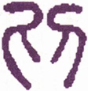
▲ 篆书剥
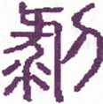
▲ 篆书剥
《彖传》曰：《剥》，剥也，柔变刚也。不利有攸往，小人长也。顺而止之，现象也。君子尚消息盈虚，天行也。
《彖传》曰：“剥，剥也。”《序卦传》曰：“剥者尽也。”《杂卦传》曰：“剥烂也。”或又为脱，为落，为褫，为裂，为击，是悉取剥消之义。《剥》为阴阳消长十二卦之一。《乾》之时，一阴始生于下，为《姤》，为《遁》，阴柔益长，阳刚渐消，刚变为柔，至此仅存上之一阳而已。今一阳又将消尽，故名曰《剥》。阳为君子，阴为小人，五阴灭一阳，是“小人道长，君子道消”，故曰“不利有攸往，小人长也”。卦体《坤》为顺，艮为止，君子观此象，宜体《坤》之顺，法艮之止，顺以安分，不与小人争功，止以待时，不与小人竞进，“消息盈虚”，合乎天行，方默持乎气数，以待一阳之来复也。当此剥乱之会，君子退居无位之地，顺其分，止其身，留作硕果转移之机，正赖有此君子也。故夬之一阴尽，而姤之一阴即生于下；《剥》之一阳尽，而《复》之一阳即生于下。此即“消息盈虚”，天行之循环也。
以此卦拟人事，凡命运之通塞，家道之盛衰，以及富贵、贫贱、寿夭、疾病皆存焉，其实原不外夫阴阳消长。阴阳二字，在人则分邪正，在心则判理欲，在事则别公私。邪人众则正人孤，欲心炽则理心亡，私事兴则公事败，家道因之衰，命运因之塞，危亦甚矣。人当此时，亦惟顺而止，任天行之自然，若欲强而往之，恐必多不利焉。盖剥之害，自下而来，渐剥渐近，初而剥床之足，继而剥床之辨，终而剥人之肤，阳愈消，阴愈长矣。虽有三之照应，五之调护，而硕果之存，系而无用。大厦将倾，独木支之，巨舟将覆，一索系之，少存也，虽曰人事，岂非天命哉！家道之衰而复盛，命运之塞复通，皆伏此一阳以作转机耳，则保此一阳之孤存，岂可不慎哉！
以此卦拟国家，是古今国家治乱之所由来也。大乱之来，不自乱始，至乱极而祸不可力挽矣。正当乱极之时，小人盈廷，忠臣受戮，志士殒亡，以柔变刚，刚阳殆将剥尽矣。如夏之龙逢，殷之比箕，其精忠一往，而辄遭不测者，自古以来，类皆如是，是所谓“不利有攸往”也。惟若微子之去殷，太公之避纣，我国菅右相之遇贬，为能顺而止也。小则谓明哲之保身，大则谓待时而翊运，《剥》之上九，所云“硕果不食”者，即指此翊运之君子也。在小人虽同恶相济，其间岂无稍知名分，顾惜忠良？如《剥》之六三，能应上九，《剥》之六五，能制群阴，以其柔居阳位，因能抑阴以扶阳，是为卦中一阳来复之机，即国家危而复安之兆也。天行循环，其运如斯，为国家者，不幸而时当剥乱，宁可顺止，毋为“攸往”，斯得矣。
通观此卦，阴盛剥阳，九月之卦，肃杀之气，剥落万物之象也。夫阴阳消长，天行也，治乱盛衰，世运也。造化之理，文胜必敝，朝华之草，夕而零落，此《剥》所以次《贲》也。夫祸起于微，悔生于终，强与之争，终必致灾，安而自守，可保厥初，《系辞》所以戒其攸往，勉其顺止者，即此理也。初为祸之始，《剥》之渐也；二则较凶矣；三知从正，其势自孤；四虽剥至于肤，灾切近矣；五居尊位，独能调剂群情，招怀以恩，女子小人，各安其分，使相率以从阳，不至进而剥上，上爻硕果之得以存者，赖有此耳。善变者，转祸为福，不善变者，化吉为凶，是以剥则始凶，而终则不凶也。
《大象》曰：山附于地，《剥》，上以厚下，安宅。
地之厚，足以载山，山之重，足以镇地。地在下，故取广厚，山在上，故取安镇。曰“山附于地”，如物之寄附然，则山几摇摇欲动，不得安止矣。上谓人君也，山附于地，犹云君附于民，则君亦危矣。君当此时，所宜厚其下以保其宅之安。上卦《艮》，下卦《坤》，《剥》之渐自下起，故曰厚其下。下厚则上安，即所谓地厚而山安也。爻中曰“床”，曰“舆”，曰“庐”，多取宅中之物，《象》曰“安宅”，从其类也。
【占】 问时运：运不甚佳，宜安定自守，无咎。
○ 问商业：须厚其资本，聚积货物，附运出洋，必获利也。商以剥人之财为利，故吉。
○ 问家宅：寄居之宅，可出资买归，自己之宅反不利。
○ 问战征：防敌袭击，宜厚其兵力。
○ 问疾病：魂不附体，恐不吉。
○ 问行人：附伴而行，即可归宅。
○ 问六甲：生女，始危后安。
○ 问失物：得则得矣，恐有残缺。
初六：剥床以足，蔑 ［107］ 贞，凶。
《象传》曰：剥床以足，以灭下也。
床者，人所坐卧也，此卦上实下虚，床亦上实下虚，故取其象。阴之剥阳，自下而上，初在下，象床之足，故先剥以足。床有足而立，剥足则倾矣，倾则凶。“蔑”，灭也，“贞”，正也，阴之剥阳，即邪之灭正，是小人之害君子也，故曰“蔑贞凶”。《象传》曰“以灭下也”，以床言，足在下，以爻言，初亦在下，故曰“灭下也”，是剥之始也。一说，“贞”即桢，《程传》“辨”谓干，则以贞为桢，可备一解。俞氏以“剥床以足蔑”为句，谓固执而不乱，变则凶，是又一解也。
【占】 问时运：目下运当剥削，防有足疾。
○ 问商业：堆积货件，防底部朽烂，或载运出洋，船底受水，被坏。
○ 问家宅：防柱础门限，有损将倾。
○ 问战征：防敌攻地道。
○ 问行人：有足疾，不能归也。
○ 问疾病：是足少阴之症，正不胜邪，凶。
【例】 相识某商来，请占气运，筮得《剥》之《颐》。
断曰：《剥》自下剥上，剥床以足，是下灭上，有奴仆灭主之象。今占得初爻，知足下用人不当，防下有不安本分，逞强而轻蔑主人者。爻象如是，足下宜注意焉。
其人谢而归，后闻知渠家雇人不下数十辈，因多不得力，主人拟减其给，下人各怀不平，结党而掠主家之财，致主家被困。悉与爻象相符。
六二：剥床以辨，蔑贞凶。
《象传》曰：剥床以辨，未有与也。
“辨”，《程注》谓“床之干也”，是床足之上，床身之下，分辨处也。初剥足，二剥辨，阴渐而进也。剥至于辨，床愈危矣，邪盛蔑正，凶与初同。《象传》曰“未有与也”，指上九言，谓二与初，同恶相济，谋《剥》上九，上九孤阳在上，未有应与。《象》盖为上九危也。
【占】 问时运：自去年来，逐渐低下，被人剥削，不能辨白。凶。
○ 问商业：置办货物，价渐剥落，不能获利也。凶。
○ 问家宅：“辨”，亦通变。言家宅速宜变迁，方得避凶。
○ 问行人：办装即归。
○ 问战征：未有应接之军，不可动也，动则凶。
○ 问疾病：病人已著床，未有良医，防不治也。凶。
○ 问六甲：生女难育。
○ 问失物：未能复有。
【例】 有一绅士来，请占气运，筮得《剥》之《蒙》。
断曰：此卦五阴剥一阳，故曰《剥》。二以阴居阴，本与五相应，欲同《剥》上爻，五爻以柔居阳，且与上比，不复剥上，二将并以剥五。“辨”，为床之干，“干”，床两边也，故见二有两边并剥之心，是不顾义理，只知剥人利己者也。然如此以剥，难免凶矣，故”《象传》曰，“未有与也”，言此等人，必无好相与也。
绅士听之，如有所感而去。后闻其人贷亲族巨万金，不思感谢，反欲灭没亲族，是最不义也《易》理能隐抉其奸，灵显可畏。
六三：剥之，无咎。
《象传》曰：剥之无咎，失上下也。
以阴居阳，与上相应，其类属阴，故其心在助阳。当群阴剥阳之时，为三独应刚，是以小人而保全君子者也，许以“无咎”，不没其善也。《象传》曰“失上下也”，谓其处上下诸阴之间，独能去党而从正，是失其党也，故曰“失上下也”。
【占】 问时运：运虽不正，能反其所为，可以免咎。
○ 问商业：同帮皆望高价，已独潜行脱售，虽失同帮之意，而独得利。
○ 问家宅：去其椽瓦，平其基地，剥落改造，无咎。
○ 问战征：是军中最有计谋者也。虽不与诸军约会，独自进攻，可得胜也。无咎。
○ 问疾病：宜消导攻伐之剂，服之得愈。
【例】 明治十七年冬，横滨洋银商某来，请占气运。筮得《剥》之《艮》。
断曰：剥者山崩为地之卦，故曰《剥》。五阴渐长，将剥灭一阳，剥者，夺也，削也。今占得三爻，三爻阴居阳位，与上一阳相应，是虽与群阴同党，独不与群阴同志，故“无咎”。犹是同此卖买，而能独出心裁，人弃我取，当必获大利。就剥之一卦言，谓山变为地，可见今时价高如山，易一时有低落如地之象。占者宜留意焉。
后某来谢曰：今回为朝鲜事，洋银腾贵，余信《易》占所云，就高价卖之，一时间得数拾万元。《易》占高妙，不可测度如此，感服感服！
六四：剥床以肤，凶。
《象传》曰：剥床以肤，切近灾也。
剥之灾，萌于初爻，至四爻，渐逼渐近。四以阴居阴，与初二同恶相济。在初二居内卦，卦分内外，床隔上下，距上爻远，所剥仅在“足”与“辨”。四爻与上同卦，愈近则剥愈甚，故直及于“肤”。就爻次第观之，初为床足，二为床辨，三爻为床身，四爻则为床上之人身。艮为指，为喙，有人身之象，故曰“剥床以肤，凶”。《象传》曰“切近灾也”，剥及于肤，灾及其身矣，故曰“切近灾也”，深为一阳危焉。剥者，小人剥君子，宜为君子凶矣，初、二、四三爻，不曰君子凶，而第浑言曰凶，知剥之害，国破家亡，君子固凶，而小人亦难免于凶也，故统象之曰“凶”，意微哉！一说以“肤”作箦，箦，床板也，足备一解。
【占】 问时运：运大不佳，有身体受伤之惧。
○ 问商业：恐剥耗过甚，又防意外之祸。
○ 问家宅：此宅必破败不堪，居人亦寥落，致防倾塌。
○ 问战征：恐主将有灾。
○ 问疾病：凶。
○ 问六甲：生女，产妇亦可危。
【例】 富商某来，请占气运，筮得《剥》之《晋》。
断曰：剥之为灾，由远及近，当其远时，其为灾小，犹可避也，及至切近，虽避难免。今占得四爻，四与上同卦，灾已切近，曰“剥床以肤”，则剥及肌肤矣。推其灾所来，知必足下同居中，且为切近相待之人。或祭祖祈神，期可免灾，然恐亦难保矣，并宜速作避居之计。又云占象既凶，并须参观容貌，如印堂有黑赤气，或天庭有细赤盘现，必难免祸。今足下幸血色得宜，不露灾形，避地或可免也。
某氏听之大惊，遂避居相州汤本，不料某伙友以贩米赴北国，在大阪赌买米市，大遭耗剥。此伙友平素诚实，为某所亲近，故以数万金委托之，未尝疑也。今遭此大耗，伙友忽复生奸计，瞒着主人，隐蔽资财，拼以一死，向亲族朋友，遍谢其罪。事出无奈，亦不复究问。《易》占之垂示昭彰，可不慎哉！
六五：贯 ［108］ 鱼 ［109］ ，以宫 ［110］ 人宠 ［111］ ，无不利。
《象传》曰：以宫人宠，终无尤也。
五为尊位，以阴居阳，与上比近，知群阴上逼，一阳已危，无可再剥，阴存护阳之计；以阳制阴，阴众阳孤，必不受制，不如率阴以从阳也。曰“鱼”，曰“宫人”，皆阴象。曰“贯鱼”，犹言率众阴而成贯也；曰“宫人宠”，是以宫人而受一阳之宠也。一阳既得免剥，众阴亦得免凶，故曰“贯鱼，以宫人宠，无不利”。《象传》曰，“终无尤也”，六五为群阴之首，能率群小而慑服于君子，硕果之得保存者，五爻之力也，故曰“终无尤也”。剥者，众阴皆欲剥阳，惟三五阴而居阳，能为一阳委曲保护。初以阳居阴，只知有《剥》，《剥》之灾，实起于初，盖以初卑微下贱，非仁之九者也。
【占】 问时运：目下气运堂皇，事事圆到，百无不利。
○ 问商业：可得满贯满万之利，北海海产生业尤佳。
○ 问家宅：有妇女主家之象。
○ 问战征：须行离间敌军之计，可获胜也。
○ 问疾病：是阴亏之症，须自珍爱，尚可无忧。
○ 问行人：有外宠，必将携伴而归。
○ 问六甲：生女。
【例】 横滨境町森锭太郎氏者，为英国外商书记，明治十四年春，腹内疼痛，请内外医诊察，服药无效。疼痛益甚，渠毋请余占之，筮得《剥》之《观》。
断曰：《剥》者剥落，至上爻，则一阳将尽，有精神消灭之象。占得五爻，速施治疗，尚可出万死而一生。爻辞曰“贯鱼，以宫人宠”，贯，穿也，以针穿物也，谓宜用针刺其穴也。余不通医道，且于针治，不知其适否，惟以《易》象言之而已。试以针治施之。
母氏曰：有东京针治家若宫氏，与伊宅相近，可招治。余曰：爻辞曰“以宫人宠”，其人适姓若宫，最妙，可速招之。其母归即招若宫氏诊察。若宫氏来，先抚患者肢体，并闻病状，如有所感，少间曰：是余所经验之症，再迟恐不及治矣！即时针治，二三时间腹中雷鸣，是平愈之兆。居时而腹不鸣，则术无所施，及针后果腹鸣。苦闷忽灭，不日平愈，《易》之妙理，可谓无微不著也。
余常语中村敬宇氏以此占，氏大赏，赞之曰：以“贯鱼”爻辞，充针治，他人所不能及，子之活断，敬服敬服！又医之姓适合若宫氏，可谓奇矣。《易》之精微如此！
【例】 明治三十二年三月甘八日，占晴雨。
维新之后，余有见旧奉圣像，安置于博览会，此大不敬也。余乃就大纲山建设圣庙，每年冬至日，占国家之事于此堂。三条相国来观，蒙赐神易堂额，尔后每年四月八日举行祭典。是年恐值雨期，为占一卦，以卜晴雨，筮得《剥》之《观》。
爻辞曰：“六五：贯鱼，以宫人宠，无不利。”
《象传》曰：“以宫人宠，终无尤也。”
断曰：此卦全卦无水之象，不雨可知也。五爻变则为《巽》，但有风而已。且《观》者祭祀之卦，适合祭典。
至期果天气快晴，午后三时有微风，恐测天家无计证验也。
凡晴雨之占，《小畜》之上爻变，必风止而为雨，其《彖》辞曰：“密云不雨”，至此曰“既雨”。推爻理，以卦面有水占雨，以水变为雨止；以内卦为午前，以外卦为午后，风亦同之。孔明赤壁之火攻，亦此旨也。
上九：硕果不食。君子得舆，小人剥庐 ［112］ 。
《象传》曰：君子得舆，民所载也。小人剥庐，终不可用也。
《艮》为果，果在树上，故于上爻，有硕果之象。艮止也，故“硕果不食”。“舆”，地也，地以载物，“得舆”者，得民之所承载也。“庐”，屋也，用以庇人，“剥庐”者，无所用其庇也。此爻一阳在上，譬如硕果仅存，高出卦外，非群阴所得蚀食，故曰“硕果不食”。原其不食之故，以天道观之，无众阳消灭，而群阴独存之义；以人事观之，无君子俱亡，而小人独存之理。天地之间，岂可一日无善类乎？《剥》当十月，正万木摇落之时，大果尚存木杪，果中有仁，足以复生，即剥未尽而阳复生之象。且剥极则乱，乱极则思治，故众心爱戴君子，谓之“君子得舆”，小人剥去君子，终自失其所庇，故曰“小人剥庐”。《象传》曰：“君子得舆，民所载也。小人剥庐，终不可用也，君子德泽长流，故民必载之，小人恶迹显著，故“终不可用也”。此爻变则为《坤》，是终不可用之象也。
【占】 问时运：目下气运衰微，一年后即值好运。
○ 问商业：卖出者尚得微利，买入者必多剥耗。
○ 问家宅：忠厚之家，尚有余泽，刻薄起家者，恐有墙屋倾圯之患。
○ 问战征：守者无咎，攻者必败。
○ 问疾病：有饮食不进之虑。
○ 问六甲：生男，是独子也。
【例】 明治二十三年，为国家筮元老院，得《剥》之《坤》。
断曰：《剥》至上九，所剥将尽，存无几矣，元老院其或废乎？时际国会之兴，元老院议官，大抵即为贵族院议员，或即为枢密顾问官，其尽心国事同也，元老院自可废止。在元老院之废，原可推知，而《易》象能前时明示，故附记之。
24 地雷复
“复 ［113］ ”从彳，行貌，从复，行故道也，有去而复来，消而复息之义。所谓以《坤》牝《乾》，灭出复震，为余庆也，故名曰《复》。为卦《坤》上《震》下，一阳在五阴之下，阴极而阳复，与《剥》相反，与《姤》旁通。《序卦》曰：“物不可以终尽，剥穷上反下，故受之以复。”此《复》之所以次《剥》也。
复：亨。出入无疾，朋来无咎，反复其道，七日来复。利有攸往。
▲ 甲骨文复
▲ 篆书复
《复》之内卦一画，自《乾》之下画来，一阳即《乾》，“亨”即从乾元来，故曰“亨”。外《坤》内《震》，出《震》入《坤》，《坤》为顺，《震》为动，以顺而动，阴不能伤，故“无疾”。同类为“朋”，《震》一阳，《兑》二阳，《兑》为朋。一阳先至，朋类皆来，阴不能阻，故“无咎”。《剥》之卦，一阳在上而几尽，《复》则一阳反生于下，故曰“反复其道”，“道”，路也。“七日来复”，姤五月卦，阴气始生，《复》十一月卦，阳气始生，阴阳反复，凡历七月，七阳数，故言“七日”。此为“君子道长”之机，故曰“利有攸往”。
《彖传》曰：复，亨。刚反，动而以顺行，是以出入无疾，朋来无咎。反复其道，七日来复，天行也。利有枚往，刚长也。复，其见天地之心乎？
“复，亨”，谓阳刚消极而来复，复则阳渐长而亨通矣。“刚返”者，谓剥之时，刚几去而不返，出于震而来复，震为反生，故曰“刚返”。“动而以顺行”，是出入皆在顺动之中，故“无疾”；自动者顺，朋来亦顺，故“朋来无咎”。一反一复，其道循环，“七日来复”，天行之自然也。以顺承天，则刚之方返者，日进而盛矣，故利往。“刚返”言方复之初，“刚长”言既复之后。《剥》《复》消息，天地之气所默转，即“天地之心”所发端也。“天地之心”，本无所不在，无从窥测，惟生意发露之初，方见得“天地之心”，故曰：“复，其见天地之心乎？”“其”、“乎”语辞者，愈觉仿佛想见之真。
以此卦拟人事，是善恶绝续之一转机也。人虽甚不善，而于平旦之际，未始无片念之偶萌，萌即复也，复则动矣。逆而动，动仍入恶？顺而动，出恶而入善矣，道无不亨也，疾于何有？朋以类聚，入夫善，则善朋皆来，自无咎焉。人身一小天地也，人有贤愚邪正，即天有雨旸燠寒，人有生老病死，即天有休咎灾祥。“七日来复”，以干支言，至七则为冲，以建除言，至七则为破，冲与破则皆为动，是以有反复也。故人之疾病寒热，亦往往以七日为一更，此皆阴阳刚柔之转移，人与天无二道也。按六爻之辞，初爻为人迁善之始，是以返身而诚也。二爻见人之迁善，欲同归于复也。三爻屡复屡失，虽危而终复于善也。四爻谓能舍群阴而从初阳，是取诸人以为善者也。五爻以阴居阳，独得其中，是能“安土敦仁”者也。上爻居卦之终，六几于七，而又将变矣。出复凶，深足为人之迁善者戒矣。《易》言天道，其所以为人事垂诫者，至深且切，于复可见天心。复时见天心，不复时则浑是人心矣。天心惟微，人心惟危，可不惧哉！可不慎哉！
以此卦拟国家，是国家治乱之一转机也。由治入乱，阴之始也，出乱入治，阳之复也，古今来一治一乱，其机莫不如是焉。是故乱不自乱始，治不自治始，机之动也甚微，复之一阳，即其阳之微动者也。其动也顺，则其道亨，其往利，如汤武之顺天应人，拨乱反正，一著戎衣而天下平也。“七日来复，天行也”，于格苗而曰七旬，于即戎而曰七年，亦可于此而得七日之义矣。六爻皆指复言，重在进阳也。阳，治道也，即君子之道也。初爻曰“不远复”，如殷武丁、周宣王、汉光武之中兴是也。二爻曰“休复”，如太甲之复位，成王之新政是也。三爻曰“频复”，如汉刘先主之治蜀，虽属偏安，尚无咎也。四爻曰“独复”，如大舜之明扬侧陋，允执厥中，以从尧而致治也。五爻曰“敦复”，如启之承禹，武之继文，能“敦复”治道，而致其盛也。若上爻则当戒焉，“迷复”而不知其凶，自桀纣之亡国者皆是也。《易》之言在天道，而治道即属于是，为国家者，于复而见治之渐浙，即当于姤而戒乱之始。治乱之机反复间耳，可不慎哉！可不惧哉！
通观此卦，《剥》之一阳在上者，《复》即阳生于下，如雷藏地中，无中含有。乾元资始者，于是露其机，贞下起元；坤元资生者，于是呈其候。天地生物之心，非至是而始有，乃至是而始见也。顺而动，动无不亨；顺而往，往无不利。出柔而入刚，刚有何病？以我而求朋，朋来何咎？一反一复，其道即在旬日间耳。六爻皆以复道为辞，初九之“不远复”，如克己复礼之颜子，贤而希圣，生而知之者也。六二之“休复”，下比初九之刚，如友直、谅、多闻之士，亲贤取友之宓子贱，学而知之者也。六三之“频复”，如日月至焉之诸子，士而希贤者也。六四之“中行独复”，如悦周公孔子之道之陈良，亦圣人之徒也，困而学之者也。六五之“敦复”，如反乎身之汤武，圣而希天者也。上九之“迷复”，则如飞廉恶来，怙终而不悛其恶者也，困而不学者也，不惟为一身之祸，且为天下祸，故曰“迷复，凶，有灾眚，终有大败”。圣人于六三之“频复”，犹曰“无咎”，而独罪上六之“迷复”，如此，其重改过而恶怙终也切矣。《系辞传》曰，“圣人之情见乎辞”，其此之谓乎？
《大象》曰：雷在地中，复，先王以至日闭关，商旅不行，后不省方。
此卦为十一月卦，故《象》取“至日”，是雷伏藏地中也。先王观此象，以“至日闭关”而不启，止商旅而不行，后于是日，亦“不省方”，盖为养其阳气之方来，而不敢或泄，务为安静，所以葆其贞也。月令仲冬，审门闾，谨房室，必重闭，推之即可知“闭关”之诸象焉。“闭关”取《坤》为阖户，“商旅”取《坤》为众民，“行”取《震》为大途，“方”取《坤》为国土。
【占】 问时运：好运初来，尚未发动，静以待之，自然获吉。
○ 问商业：货物完备，时价亦动，宜暂停售，必得利也。
○ 问家宅：此宅现时闭歇，须待春时，方可迁居。吉。
○ 问战征：防敌军埋伏地雷，须暂停战，以养兵力。吉。
○ 问疾病：是痰火之症，饮食不进，交冬令宜防。
○ 问讼事：一时不能审结。
○ 问六甲：生男，交春分产。
○ 问婚嫁：现因媒人尚未往说，春初可成。吉。
○ 问行人；冬季不归，开春归来。
○ 问失物：一时难觅，日后可得。
初九：不远复，无祗 ［114］ 悔，元吉。
《象传》曰：不远之复，以修身也。
此卦初九一阳，自《乾》阳来，入《坤》群阴中，忽复本位，名之曰《复》。卦之《复》就造化言，爻之《复》就人心言是也。此爻《复》之初，为《复》道之始。七日即复，故曰“不远”，是以不至悔而得“元吉”也。“元吉”者，即复《乾》之吉也。“祗”者至也，人虽圣贤，不能无过，惟贵速改，过而不改，则有悔而凶可知也。《象传》曰“以修身也”，修者所以补其缺，正其误也。占者知此，则人欲日消，天理日明，可以为圣，可以为贤。“修身”二字，包括深远，不可不知也，何则？六二之《传》日“仁”而称美之，六四之《传》曰“道”而赞叹之。“修身”二字，兼仁与道，其所关至大。心内而身外，以存养言，则在心；以修为言，则在身：身心一也。
【占】 问时运：好运即来，渐渐发动，一往顺利，大吉。
○ 问商业：前所耗失，即可复得，可免悔恨，大吉。
○ 问家宅：旧业复兴，即在目前，大吉。
○ 问战征：即日可转败为成，大吉。
○ 问讼事：始审不直，再控必胜，大吉。
○ 问婚嫁：主散而复成，大吉。
○ 问行人：不日即归，吉。
○ 问疾病：静养即可复，元吉。
○ 问六甲：即日生男。
○ 问失物：即日可得。
【例】 余欲购驱车之马，适遇儿玉少介君曰：余去岁求良马于南部，后无音信，遂别购一马，顷日南部马至，厩隘不容。谓余买之，余乃占其良否，筮得《复》之《坤》。
断曰：此马不适长途，朝出夕归，得其宜耳。爻谓“不远复，无祗悔，元吉”，可以见矣。初爻变则为《坤》，《坤》曰“利牝马之贞”，知此马必牝，无暴逸之虞者也。后购得其马，果如此占，性柔顺，最适驾车。
六二：休复，吉。
《象传》曰；休复之吉，以下仁也。
此爻以阴居阴，得其中正，与初九切比，志从于阳。嘉初之能复于道，甘心下己，以友其仁，切磋琢磨，恶念潜消，善心日生，故曰“休复，吉”。初爻得《乾》阳之正，开《复》道之首，故曰“元吉”；六二取人为善，自能从容改图，其功次于初矣，故曰“吉”。《象传》曰“以下仁也”，初复于仁，二比而下之，是以吉也。《易》三百八十四爻，未尝言仁，此爻言之。所谓“复其见天地之心”者，天地之心，即仁也；所谓仁，元善之旨也。
【占】 问时运：目下气运亦好，事事能择善而从，故事事得吉。
○ 问商业：能与人共利，其业必兴，吉。
○ 问家宅：家庭多休祥之征，自能兴复旧业。吉。
○ 问战征：一时暂休攻克，姑示其弱，以养锐气。吉。
○ 问疾病：宜初治之医，复诊视之。吉。
○ 问行人：必从长辈而归。
○ 问六甲：生女。
○ 问失物：就低下处寻之。
【例】 明治二十四年春，某裁判所长及检事长，访余山庄，请占某贵显辞表后之举止，筮得《复》之《临》。
断曰：雷者，春夏升出于地上，秋冬潜与地中。此卦雷复地中，而将再出者也，故某贵显今日虽优游闲居，可知其复职不远也。
两君怪余断之轻易，曰：《易》如此容易，天下之事，悉可问之于《易》也。余曰：固然。《易》之包蕴甚广，天下之事物，无一不具，而其变化神妙，不可测度，是以无事无物而不可占也。占之则过去、现在、未来皆得明示，其应如响。即贵下于两造之事，多匿奸藏诈，掩非为是，诬真为假，不易剖决者，占之而奸计显露，所谓问诸人，不如问诸神也。不然，贵下等只据法律，凭口辞，安能一一无枉乎？古云“卜以决疑”，此之谓也。在某贵显之辞职，世论嚣嚣，余一揲蓍，神示之以地下有雷之象，二爻之辞曰“休复”，知其一时休职，他日必复职也，明矣。《象传》曰，“休复之吉，以下仁也”，即此可知矣。
二人倾服而去。后某贵显果复职，钦服余断之不妄也。
六三：频复，厉，无咎。
《象传》曰：频复之厉，义无咎也。
三爻位不中正，志刚而质柔，质柔则见事而不明，志刚则狂躁而妄动，故屡复而屡失，是以有“厉”，亦屡失而屡复，终可“无咎”也。虽有失身亏行之惧，自无长傲遂非之过，故曰“频复，厉，无咎”。周公之系辞，隐其屡过之罪，称其“频复”之善；孔子释之曰“义无咎也”，是开人以改过迁善乏门也。意深哉！
【占】 问时运：一好一歹，时有得失，能据其得而不失，是在人也。
○ 问商业：有亏有盈，能使盈多亏少，亏而复盈，亦可获利。
○ 问家宅：有迁移不定之象。
○ 问疾病：屡治屡发，虽危，可保无害。
○ 问讼事：有频翻口供，转致危厉之象。
○ 问行人：归志未决。
○ 问六甲：生男，颇涉难产，无害。
○ 问失物：失非一次，当可寻得。
【例】 一商人来请占气运，筮得《复》之《明夷》。爻辞曰：“六三：频复，厉，无咎。”
断曰：《复》为雷藏地中，阳气来复之时，在人为迷惑情态，有悔悟复本之象。三爻位不中正，辞曰“频复，厉，无咎”，是谓屡兴屡败，劳而无功。其不至破产者，由于随时省悟，随失随改，故“无咎”也。夫运之盛衰，天数不可免，在盛运时，如放舟于上流，扬帆于顺风，不劳而取功；当其衰运，如浮舟于逆风，以溯上流，不特劳而无功，其不被损伤者殆稀。占者恐坐此弊，尤当注意气运之盛衰也。至明后年，气运乃可回复。
商人闻之，感曰：实如此占，从来屡遭失败，今闻之，始悟其误。谨守常业，以待时运。
六四：中行独复。
《象传》曰：中行独复，以从道也。
此爻居五阴骈列之中央，独应初爻之卦主，故能杰出群阴之间，依附仁人，是心知好善，不移习俗，而能复道者也，故曰“中行独复”。所谓“择乎中庸，得一善，则拳拳服膺，而不失之”者也。然其所复犹微，故不曰吉。《象传》曰“以从道也”，谓初复于道，而四从之，故曰“从道”。
【占】 问时运：气运柔弱，意欲振兴，惜力不能逮。
○ 问商业：谋划精当，不失其正，资本未充，为可惜也。
○ 问家宅：女眷多，男丁少，未免有独寐寤歌之慨。
○ 问战征：防中道设伏。
○ 问疾病：虚弱之症，宜从初治之医调治。
○ 问行人：至中路复回，得伴再归。
○ 问婚嫁：宜从前媒。
○ 问失物：半途觅之。
【例】 明治二十二年六月，友人某来曰：有人欲购余地，约以相当之价，领收约定金若干。其先亦有人欲购此地，余未定约，今复过余，所约之价高于前购，于是余将致偿金于前约之人，请其解约，但不知彼果肯允诺否？请为一筮。筮得《复》之《震》。
断曰：《复》者一阳来复之卦，有百事复旧之象。故得此卦，旅行无音信者，突然还家，贷金涩滞者，忽而归复，放荡游惰者，能复其本心，皆《复》之象也。则知足下已约之地，亦无阻障，必可复返也。后果如此占。
六五：敦 ［115］ 复，无悔。
《象传》曰：敦复无悔，中以自考也。
五有柔中之德，尊居君位，位得中，故能“复”，《坤》为厚，故曰“敦”。自知其非，不惮迁善，既能复之，又加以“敦”，是知之明，力之笃也，则一得而弗失之矣，何悔之有？故曰“敦复无悔”。《象传》曰，“中以自考也”，谓初之复，复在近，可免于悔，五之《复》，复于厚，悔之有无未知，时当返而“自考”也。盖初之“不远复”，入德之事，五之“敦复”，成德之事也。
【占】 问时运：目下气运当正，事事从厚，有前功，无后悔
○ 问商业：资财充足，往复获利。
○ 问家宅：祖基深厚，旧业复光，吉。
○ 问战征：军力厚实，可以攻复城池也。
○ 问疾病：病者精神充足，气体丰腴，无患也。
○ 问六甲：生男。
○ 问失物：宜自忖度。
【例】 某局长来，请占气运，筮得《复》之《屯》。
断曰：《复》者雷在地中之象，动极复静，故谓之《复》。今占得五爻，言修身复道者，复之不已，而又复之，故曰“敦复”。其复如是，亦可谓责躬自厚，而薄责于人者矣。此人督率众人，众心感服，复何有悔？时运可知矣。
上六：迷复，凶，有灾眚 ［116］ 。用行师，终有大败，以其国君凶，至于十年不克征。
《象传》曰：迷复之凶，反君道也。
上爻居《复》之终，《坤》之极，《坤》为迷，故曰“迷复”。迷而不复，故必有凶。“有灾眚”，灾自外来，眚由自作，迷溺至此，无往非害。《坤》为众，《震》为行，故“用行师”。《坤》上六所云“龙战于野，其血玄黄”，即行师大败之证也。“行师”既至“大败”，国君焉得不凶？兵连祸结，至十年而未已。十年者数之终，一败而终不能振，即谓有迷而终不能复矣。盖天下之祸，无不由一念之迷溺而来，迷在于身，则一身被祸，迷在于国，则一国被祸，深著迷复之害也。《象传》曰“反君道也”，《复》之君，初九阳也，《姤》之君，初六阴也，上迷复，不奉《复》之九，而奉《姤》之六，是阴阳相反也，故曰“反君道也”。
【占】 问时运：气运颠倒，作事乖张，谨慎免祸。
○ 问商业：货物不齐，期约不准，市价不的，必致大耗；时不能《复》业，凶。
○ 问家宅：防有怪崇，居者多不利。
○ 问战征：辙乱旗靡，大败之象。
○ 问疾病：症已危险，久病延年，犹为幸也。
○ 问行人：在外多凶，十年内恐不能归也。
○ 问六甲：生女。此女长成，亦大败之命。
【例】 明治二十年六月，板垣退助君奉朝命自高知县来，朝廷赏赐爵位，以酬前功，氏固辞者再，于是世人多评论之。或曰：氏之决意辞赐，是板垣氏之所以为板垣氏，其廉退逊让，非他人所能及。氏为自由党之首领，鼓舞众人，其伸张自由之声势，一旦受爵荣，未免为党中人窃笑乎？或曰：爵位者，朝廷之荣命，氏固辞不受，未免有违敕之谴也。余与板垣君有旧，缘是欲忠告之。往访旅亭，将命者以病谢，余遂转访佐佐木高行伯，面谒曰：余每岁冬至，斋戒沐浴，敬占国事及诸当道命运。兹占板垣君，得《地雷复》上爻。
断曰：《复》者，一阳来复之卦，积阴之下伏一阳。以人事观之，全使此一点微阳渐生渐发，天下绝大事业，皆从此一阳中做出来，国家之由乱而治，人生去邪从正，悉赖焉。今占得上爻，辞曰：“迷复，凶”，是冥迷沉溺，失其本然之明者也，乃至天灾人眚之并臻，辱君丧师而莫救，危之至矣，祸莫大焉。
爻辞凶恶如是，窃为板垣君虑之。昔板垣君秉政要路，大有功烈，今既辞职，其所主张专在自由党中，人众类杂，薰莸不齐，他日激而生变，亦不可测也。爻辞之凶，其或兆于此乎？
顷又为板垣君辞爵再卜一卦，筮得《困》之《大过》。
爻辞曰：“九二：困于酒食。朱绂方来，利用享祀。征凶，无咎。”
此卦四五之阳为三上两阴所蔽，二之阳亦为初三两阴所蔽，不能通志，是以成困。“困于酒食”者，见板垣氏现时之困难也；“朱绂方来”者，谓荣命之下来也；“利用享祀”者，谓拜受爵位而祝告于神也；“征凶”者，谓逆朝命而有凶也；拜命则平稳无事，故“无咎”也。此占详明，板垣君之宜敬拜受命也，慎勿辞焉。板垣君为阁下旧友，请以余之占辞转为奉告。
佐佐木伯曰：子言真切，余亦感铭，必当告之。子须再访后藤象次郎，告以此占。余亦与后藤氏谋，必可使板垣君拜命也。于是余又谒后藤伯，告之如前，且致佐佐木伯之意。后藤伯感谢曰：奇哉！子之《易》占，古今未闻其此也。板垣氏之事余与佐佐木氏谋，必可尽力，请子勿虑。后果闻板垣君拜受爵命。余始心慰。
25 天雷无妄
“无妄 ［117］ ”，诚也，是即《中庸》“至诚无息”之谓也。《序卦》曰：“复则不妄矣，故受之以无妄。”盖《无妄》之诚，天之道也；《复》而《无妄》，此为“诚之”者，人之道也。为卦《乾》上《震》下，《乾》健也，《震》动也，健而动，动合夫天也，合乎天即诚也。古圣经传皆言诚，无咎二字，独见于《易》。朱子解《中庸》“诚”字，谓“即真实无妄”，而解《易》“无妄”，谓“即实理自然”。要之理之出于自然者，天也，天即诚也，诚即《无妄》也，其旨一也。
无妄：元亨利贞。其匪正有眚，不利有攸往。
“元亨利贞”，是谓四德惟《乾》全具，余卦曰“元亨利贞”者，皆从《乾》来也。“元亨利贞”，统言之，一正而已，正则无妄矣，故曰《无妄》“元亨利贞”。此乃自然之实理，受之于天，不容间以一毫私意，间以私意，即非正矣，非正则妄，妄必多过，故“有眚”也。既已无妄，不宜妄有所往，故曰“不利有攸往”。
《彖传》曰：无妄，刚自外来，而为主于内。动而健，刚中而应，大亨以正，天之命也。其匪正有青，不利有攸往，无妄之往，何之矣？天命不枯，行矣哉？
此卦内《震》外《乾》，“刚”乾也。“刚自外来，而为主于内”，《无妄》以初九为卦主，《震》初九刚从《乾》来，故曰“刚自外来”，就内外卦而言也。动在下，健在上，“动而健”，是动之得其健也。“刚中而应”，谓二五也，九五阳刚中正，即《无妄》之天，六二复以居中得正应之，是应之得其正也。凡《彖传》言“大亨”，即“元亨”，“以正”，即“利贞”。《乾》之四德，天之命也，天之所命者，诚也，正也，即无妄也。命得于天，天必信之，攸往咸宜，吉无不利矣。“其非正”，则是自背夫天之命也，天必不能保之，行将何往？更有所往，往即入于妄矣，妄则逆天，逆天者天不佑，亦安见其可行哉！《程传》释“非正”二字，谓虽无邪心，苟不合正理则妄，知“非正”与不正，迥乎各别，正与“非正”，其辨甚微。“其”字指三上言，三之“灾”，上之“眚”，其失甚细，“非正”二字，正当体认。
以此卦而拟人事，盖此无妄之诚，与生俱来，浑然无私，即所谓天命之性也。卦自《复》来，《复》秉《乾》阳一画，以为“天地之心”，“天地之心”，即《无妄》之真元也，“元亨利贞”四者即此一心。自古圣人，必如尧舜之执中，汤之用中，孔子之时中，斯可谓“大亨以正”，浑全天命者也。下如颜子之已而待克，礼而待复，犹藉人为，其于《无妄》，尚未达一间耳。此外不必显背夫理，即于理稍有所偏，如动而过动，健而过健，刚而过刚，往失其正，即此有眚，天不我佑，往必无可往焉，至此而人事穷矣。卦体内《震》外《乾》，《震》，动也，盖教人以动合天。动以天则为《无妄》，动以人则妄矣。《易》之垂诫著明，六爻之辞，皆取任乎天者也，违即有咎。初爻备卦德之全，行无不吉，志无不遂也。二爻循当然之理，利本不计，往亦无心也。四爻则刚而无私，守之必贞，咎自无也。五爻则中而又正，如其有疾，可“勿药”也。惟三上两爻，不免近于妄矣。三之“灾”，是牵于“得”而来也；五之“眚”，是穷于“行”而得也。此即《彖》所谓“非正有眚”者矣。盖观于初、二、四、五四爻，以人合天，吉无不利；观三上两爻，几微不谨，过即随之。为圣为狂，争此一间，人可不知所勉哉！
以此卦拟国家，盖所谓无妄者，即唐虞授受，危微精一，千古治统之真传也。得之则治，失之则乱，全在大君真实无妄之一心耳。为卦内《震》外《乾》，《乾》君也，天也；《震》动也，行也。《乾》以君合天，是以健而刚；《震》动而能行，是以往有吉。古之帝王恭己南面，无为而治者，惟在此善承夫天命也。故以此而茂对天时，而时无不顺，以此养育万物，而物无不生。时一无妄也，物一无妄也，以无妄对之，以无妄育之。先王法天以行政，一如雷行天下，任时而动，即在无妄之中而已。统观六爻，劝诫昭焉。初爻是温恭充塞，诚至而物自化也，故曰“无妄，往吉”。二爻是不言而信，不动而敬，不期治而自治也，故曰“利有攸往”。三爻，是有意求治，转得此而失彼也，故曰有灾。四爻，是刚柔相济，为能久于其道也，故“无咎”。五爻，是以道自治，不待以乱治乱也，故曰“勿药有喜”。上爻，是好大喜功，行之有过也，故曰“无攸利”。为国家者，保其无妄，祛其“非正”，健而能动，刚而得中，庶几四时行，百物生，应天顺人，德美化行，“大亨以正”，而天下治矣。
通观此卦，上《乾》下《震》，动合夫天，刚而得中，故名曰《无妄》。无妄者浑全实理，绝无意外期望之谓也。是以循其实理之自然，则往无不利；出乎实理之所非，则动必得咎。虽祸福之来，亦有不测，福自天降，天所佑也；祸而天降，如六三之灾，九五之疾是也；祸而自致，则“非正”之“眚”是也。六爻中，言“吉”，言“利”，言“灾”，言“疾”，言“喜”，言“眚”，皆所谓祸福也。初爻为卦之主，浑全元善，故“吉”。二爻循乎自然，不假造作，故“利”。四爻止所当止，守之以恒，故“无咎”。上爻居卦之终，极而复动，故“有眚”。凡爻象，初动者必终静，初静者必终动。此卦初“往吉”，二往利，皆取其动也；三“灾”，四“贞”，五“疾”，皆勉其守而勿动也；上“有眚”则戒其动之穷也。卦体《乾》健《震》动，故初象多动，动极反静，故终必静也。知夫此，可以谈《无妄》之卦。
《大象》曰：天下雷行，物与无妄，先王以茂对时育万物。
“天下雷行”，阳气勃发，鼓动万物，万物与之共动，蛰虫振，草木萌，有翼者飞，有足者走，无不勃然发育，各正性命，而无有差妄，谓之“物与无妄”。法天之象，以茂对天时者，布顺时之化，以养育万物者，赞生物之功，使时行物生，物物各全其所与，春生养长，咸得其宜，斯吾心中之万物皆备，而天下之万物并育。此所谓尽性尽物也。
【占】 问时运：目下运得其时，百事咸宜，吉。
○ 问商业：正如大旱望雨，响雷一声，人人翘望。货物一到，无不旺销，百般获利，大吉。
○ 问家宅：此宅中时有作响，但无忌碍，屋运甚旺，人口繁盛，吉。
○ 问战征：有风雷席卷之势，务须正正之旗，堂堂之阵，若欲以诈取胜，反恐有祸。
○ 问疾病：是胸有积物，动而未化，宜随时运动，物自消化，“勿药有喜”。
○ 问行人：现时已动身，即日可归。
○ 问婚嫁：两家素有往来，门媚相对，大吉。
○ 问六甲：生男，临时安产，吉。
○ 问失物：或鼓旁，或磨下，或并臼之侧，寻之可得。
○ 问天时：一雨即晴。
初九：无妄，往吉。
《象传》曰：无妄之往，得志也。
初为内卦之主，《震》初之刚，自《乾》而来，故《彖传》曰“刚自外来”。初阳始生，诚一未分，不杂未起，率性而动，动罔不臧，以其动合乎天也；由兹而往，往无不吉焉，故曰“往吉”。《象传》曰“往得志也”，诚无不通，志无不遂，故往而得志也。
【占】 问时运：目下吉，但宜出而有为，不宜杜守家居。
○ 问商业：利行商，不利坐贾。
○ 问家宅：宜迁居，吉。
○ 问战征：宜进攻，吉。
○ 问疾病：宜出外就医，吉。
○ 问行人：或有事他往，吉。
○ 问六甲：生男，来月可产，吉。
○ 问婚姻：赘婿吉。
○ 问失物：宜往外寻之。
【例】 角抵士毛谷村六介者，土州人，体格肥大，重量三十贯余。明治十七年某月，余与友人某氏，见角解于两国回向院，友人特爱毛谷村，请占其进步。缀得《无妄》之《否》。
断曰：此卦上《乾》下《震》，《乾》为父，《震》为长男，有上体大而健，下体小而弱之象。又《震》为足，初爻变《震》体败，必主足疾，恐此人伤足。下爻六二曰“不耕获，不菑畲”，是农而废其业也。由是观之，力士明年殆将废其角解，而转就他业矣。翌十八年，六介果折足而转他业。
六二：不耕获，不菑 ［118］ 畲 ［119］ ，则利有攸往。
《象传》曰：不耕获，未富也。
《乾》为郊野，《震》为禾稼，故爻取农象。耕而有获，菑而有畲，原非意外期望；然以耕而期获，以菑而期畲，心有期望，无妄之望，即是妄也。爻曰“不耕获，不菑畲”，谓当耕则耕，耕未尝有心于获，宜菑则菑，菑未尝有意于畲，任乎先天，不假后起，犹之谋道者非为干禄，修德者非为求名，尽其在我，不计外来。如是则为《无妄》，《无妄》则“利有攸往”，言无妄心，自无妄行，则往无不利也。《象传》曰“未富也”，谓二爻居柔得正，中虚无欲，未尝有心于富也；未富而不妄意于富，此即所谓《无妄》也。
【占】 问时运：目下运得其正，自有意外财饷，大利。
○ 问商业：不谋而获，却得大利，吉。
○ 问家宅：此宅想是承继之产，或为人经管庄舍。
○ 问战征：前途倒戈，有不胜而胜之象。
○ 问疾病：“勿药有喜”。
○ 问婚姻：是招赘之亲。
○ 问行人：在外得利，一时未归。
○ 问六甲：生女。
【例】 明治十四年一月，余浴于热海，同浴者有花族岛津公及成岛柳北等，暇时相与攀谈。既而大隈伊藤进上诸君亦来浴，时大隈君顾众曰：方今俄清两国互争境界，两国派出委员，议论不决，和战未定，各国之所注目也。高岛氏幸为一占。余乃应命，筮得《无妄》之《履》。
断曰：清为我邻，以内卦充之，外卦为俄。《无妄》内卦为《震》，《震》为木，譬犹木槌；外卦为《乾》，《乾》为金，譬犹巨钟。今观清国政府，力尚不足，以清拒俄，譬犹以木槌叩巨钟，巨钟依然，而木槌早已摧矣。故知清必不抗俄，必以和议结局也，明矣。爻辞曰“不耕获，不菑畲”，俄之利，清之灾也。
一时座客，或拍手赞叹，或疑虑不服，后果如此占，使疑者亦服焉。
【例】 东京青山有一富商，自二三世来，分为本末两家，末家常守勤俭，家业益昌，本家不善治产，游惰相承，家业凋落。末家虽屡屡分金相助，如运雪填井，其消立尽。本家计穷，窃欲并吞末家之产，召唤末家主人相商曰：汝家之所有，非汝家所自有也，曩时曾从我本家分而与之也。今本家困乏若此，汝盍归还之乎？汝其了此意乎？末家主人惊愕，虽百方苦陈不听。本家主人，以事不谐，将欲讼之官，末家主人，就余请占其吉凶。筮得《无妄》之《履》。
断曰：此卦上《乾》下《震》，《乾》为金，《震》为木，金为本家，木为末家，末家持木，以击本家之金，末家必不胜，其理昭昭也。爻辞曰“不耕获，不菑畲”，耕者必获，菑者必畲，常也。今日耕而不获，菑而不畲，虽为理之所无，往往为事之所或有。以君家数代勤俭，贮蓄财产，一旦拱手而偿诸本家，固属心之所不甘，故曰“无妄灾也”。今既得此占，宜如其意而让之，独怀资金，另兴一家。爻曰“则利有攸往”，君从此孜孜勉励，当必再致繁昌也。
末家主人，果从余言，举财产让之，另开一户，励精家业，未几又获兴起。
六三：无妄之灾，或系之牛，行人之得，邑 ［120］ 人之灾。
《象传》曰：行人得牛，邑人灾也。
“无妄之灾”，谓非己之所致而灾，天数之灾厄，或有不可免也。六三位不中正，故事出意外，有如“或系之牛”。“系”者而曰“或”，原不知为谁氏之牛也；“行人”，行路之人也，见其牛以为无主也，而窃得之。在邑之人，未之知也，而捕者则必就邑人而诘之，是邑人无故而受灾也，即所谓“无妄之灾”也。三至五《离》，《离》为牛，下互《艮》，《艮》为拘，上互《巽》，《巽》为绳，有系牛之象。《乾》健行，象行人，《震》为守，象邑人。《乾》之行，至上止，上为行人，故上曰“行有眚”，是得牛而遭眚也。《震》之守，属于三，三为邑人，故曰“邑人之灾”。上得其牛，而三罹其灾，是三为“无妄之灾”。上之《象》曰“穷之灾也”，上乃自致之灾，所谓自作之孽也。《象传》曰“邑人灾也”，此意外之灾，惟顺受焉而已。
【占】 问时运：目下运值尴尬，防有意外之事，宜谨慎。
○ 问商业：防他人占利，而己耗财。
○ 问家宅：此宅恐为外人侵占。
○ 问战征：行军得胜，守军防有损败。
○ 问疾病：此病恐是外来人传染，可虑。
○ 问行人：归则归矣，恐家人有灾。
○ 问婚嫁：宜与远人结亲，吉。
○ 问失物：已被行人拾去。
【例】 一日友人某，突然来访曰：仆近与朋友某，共计一商业，书来约今日会晤，今忽以家事混杂谢绝，其中或有变计乎？请劳一筮。筮得《无妄》之《同人》。
断曰：爻辞谓“或系之牛，行人之得，邑人之灾”，按《离》为牛，亦为女，观此知其家必有远来亲友，以妇女寄托也。此女象取《离》卦，必有离绝之事，且《离》为孕，或女已怀孕矣。“行人之得”，是与行人而皆奔也，在某住所，非畜牛之地，故知其必为女也。“系”者，即寄托之谓也，“邑人”者，即君之友也。然此友受此女之寄，所谓“邑人之灾”，恐难免矣。某所称家事混杂，殆即此欤？
友人惊余言奇异而归，后数日，来谢曰：过日占辞，不误一语，悉合事实。
九四：可贞，无咎。
《象传》曰：可贞无咎，固有之也。
四阳刚而居《乾》体，刚而无私，无妄者也。然位当上下之交，初《乾》阳刚犹柔，恐固守未定，或有偶涉于妄者乎？故诫之曰“可贞”。盖以《乾》之健，乘《无妄》之体，更当以《乾》之贞，葆无妄之诚。斯无妄之理，静以存之，固以守之，自无过失矣，故曰“无咎”。《象传》曰“固有之也”，无妄之心，即天心也，秉于生初，非由外铄，故曰“固有”也。
【占】 问时运：目下气运平顺，循分则有获，妄动则有咎。
○ 问商业：坚守旧业，自然亨通。
○ 问家宅：此宅本是祖基，宜永保之，毋坠。
○ 问战征：已占入外卦之地，宜坚守城池，切勿妄进。
○ 问疾病：此时宜安静调养，来月“勿药”而愈。
○ 问行人：一时未归，在外无咎。
○ 问六甲：生男。
○ 问失物：必可复得。
【例】 某贵显来，请占气运，筮得《无妄》之《益》。
断曰：四近尊位，德秉乾刚，正合贵显身位。今占得第四爻，曰“可贞无咎”，在贵显德位俱优，功业素著，无复丝毫妄念；恐民在下，有以妄动干进，全在贵显坚贞而镇定之，得“无咎”也。
九五：无妄之疾，勿药有喜。
《象传》曰：无妄之药，不可试也。
“疾”犹灾也。五动体《坎》，《坎》为疾，故曰疾。疾之来也，有由自致者，有因天时而非自致者，非由自致而疾者，即所谓“无妄之疾”也。“无妄之疾”，如在天为日之食，风之暴，雨之淫，雷之迅，皆一时阴阳之偏，偶触而来，时过则平，未可以药救也。在人，“无妄之疾”亦犹是焉，不容以药治之也，故曰“勿药有喜”。“有喜”，谓疾去而为喜也。当疾之时，以药治之耳，五爻刚中得位，天德全，《无妄》之至者也，复何遗憾？爻之取象于疾者，盖以汤之幽夏台，文之囚羑里，或有为盛德之累者焉。此则谓无妄之疾也，顺以守之，祸患自释，即“勿药”之义焉。《象传》曰“无妄之药，不可试也，”“无妄之疾”，本非真疾，药之反成疾矣，故曰“不可试”，慎之至也。
【占】 问时运：目下气运当正，意外之事，不必介意，全乎在我而已。
○ 问商业：凡一时物价，无故上落，皆无害商业，过时自平，切勿扰动。
○ 问家宅：防有风扫雪压倾圯之患，然无大害，致有喜兆。
○ 问战征：防军队中有时疫流行之患，宜洁净营屯，勿妄用药。无咎。
○ 问行人：恐中途有涉意外之事，然即归来
○ 问讼事：有意外牵涉，不辩自释。
○ 问六甲：生男。
○ 问失物：不寻自得。
【例】 明治二十二年，占某贵显气运，筮得《无妄》之《噬嗑》。
断曰：五爻阳刚中正，下与二应，可谓《无妄》之至者也。今占得此爻，知某贵显德高望隆，复有何病？但道高招谤，或遭意处之嫌，是即“无妄之疾”也。宜勿与辩，逾时自释，若一为计较，转致多事，故曰“无妄之疾，勿药有喜”。
某贵显不用此占，遂酿纷纭，翌年遂罢职闲居。
【例】 明治十五年八月，余弟德右卫门，患大肠痞结，聘医师守永某，乞诊服药，数日不愈。某曰：是非施截解术，不可治也。谋之佐藤国手，余复为占施术之适否，筮得《无妄》之《噬嗑》。
断曰：“无妄之疾”，非自致也。今弟之疾，亦自然而发，非关自致。爻曰“勿药有喜”，盖为不假人治也，是宜安养任其自然，三周间（《震》之数为三八）后，必可愈快。后服补药，不复施术，三周后，果得痊治。
【例】 占明治三十年海军之气运，筮得《无妄》之《噬嗑》。
断曰：《无妄》全卦，卦德为真实无妄，括言之曰正。《彖》辞曰“非正有眚”，眚灾害也，故《说卦》曰“无妄灾也”。今占得五爻，曰“无妄之疾，勿药有喜，”“无妄之疾”，犹言意外之灾也，恐海军中于九十两月中，必有非常之惊异也。此事非关人为，实由天意，非可强也。
后横须贺镇守府长官相浦中将，巡见北海道炭山，余在汽车相晤，告以此占，中将如不介意。然至九月，闻扶桑舰沉没豫海，占兆乃验。
上九：无妄，行有眚，无攸利。
《象传》曰：无妄之行，穷之灾也。
上爻阳居卦之终，为《无妄》之极，极而复行，行必有眚，有何利焉！《彖》辞所谓“非正有眚”，盖指上也。上与三应，三为“邑人”，上为“行人”，三之灾，自上致之；三既被灾，上岂能无眚乎？《象》曰“穷之灾也”，位已上穷，复欲进行，是穷极而为害也。
【占】 问时运：好运已终，宜安守勿动，动则终凶。
○ 问商业：历来贸易，颇称得利，兹值岁终，或当时令交换之际，宜暂静守，切勿再进，防有损耗。
○ 问家宅：此虽旧宅，居之则吉，慎勿他迁，迁则有眚
○ 问战征：地步已极，不可复进，进则有害。
○ 问疾病：必是老年，宜颐养自适。
○ 问行人：即日可归，归后切勿出行。
○ 问六甲：生男。
○ 问失物：恐穷追不得。
【例】 每年一月，余必避寒于热海。明治二十二年一月，静罔县知事关口隆吉君偶巡回县下，同宿汤户某家。关口氏为幕府旧士，尝学于昌平校，夙具才学，维新之际，五棱廓将帅之一也。氏索余占当岁气运，筮得《无妄》之《随》。
断曰：异哉，何其爻象之凶也！《说卦》曰“无妄灾也”，“灾”谓天灾，是天降之灾也。爻辞曰“行有眚，无攸利”，观此爻象，恐于行路中，忽遭祸变。“眚”，损也，必身体大有损伤。《象》曰“穷之灾也”，言灾害之至极也。余就占象直言，吉人天相，君勿过虑，慎之而已。关口氏闻之，面为失色。
后见新闻纸报道，阿部川城之越间汽车冲突，关口知事被伤，政府闻之，遣侍医偌藤桥本医治。余阅报惊曰：果哉关口君，竟罹“无妄之灾”！愈感《易》占之神知，悚然者久之。
一日得静罔警部长相原安次郎氏来函云，知事被灾，果应热海之占，不堪敬服。今欲再占知事之生命如何，烦为一筮回告。筮得《泰》之《大畜》。
爻辞曰：“上六：城复于隍。”《象传》曰：“诚复于隍，其命乱也。”
断曰：《泰》为天地交泰之卦，今占得上爻，是《泰》之将终，转而为《否》之时。“城复于隍”者，倾毙之象；“其命乱”者，谓命之不全也。即以此旨答之。
时见者多怪余断之凶，曰：据医师诊断，有回生之兆，是新闻纸所报也，贵断毋乃过乎？余曰：诸君有疑，请俟诸他日。未几，关口氏讣至，于是当时诸君皆感服《易》占之妙用。
后复晤相原氏，氏曰当时得子返书，已知事不起。怀书往访，知事谓余曰：今春热海游浴之时，高岛氏占象，预诫余之遭难，果若此，殆夫命也。近得医治，言可回生，尚为幸耳。余因叹息，不忍以贵占出示。谈及当时车变云，此日知事至静罔停车场，适将发铁石杂车，知事急麾之，驿吏命暂停，使知事乘之。迨进行二里余，至铁路屈曲处，忽前面汽车蓦地驶来，与之冲突，轰然一声，积载货物，悉飞天外，乘客中即死一人，负伤二人，知事其一也。余本同行，因知事心急，单身乘车，余未知之，得免于祸，幸哉！
翌年春，晤关口氏养子某于热海，曰：亡父平素语足下《易》学，去岁自热海归，每闲居读君《易》断，至《无妄》一卦，常三复不已。
26 山天大畜
“大畜”为卦，下《乾》上《艮》，《乾》，健也，《艮》，止也，畜亦止也。大对小而言：《小畜》《巽》在《乾》上，五阳一阴，以一阴畜《乾》三阳，《巽》体柔顺，其力不固，故为《小畜》；《大畜》二阴四阳，《艮》体笃实，能厚其储，故为《大畜》。《杂卦传》曰，“大畜时也”，《大畜》以《艮》畜《乾》者也，《乾》之纯阳，进而不止，而《大畜》能畜之，若不欲其进者，时未可也。不惟其止，惟其动，健而又动，《无妄》所以为灾也；不惟其动，惟其止，健而能止，《大畜》所以为时也。《序卦》曰：“有无妄然后可畜，故受之以《大畜》。”此《大畜》之所以次于《无妄》也。
大畜：利贞。不家食，吉。利涉大川。
《大畜》以阳畜《乾》，得其正也，止而畜之，利于用也，故曰“利贞”。外卦《艮》，《艮》为居，有家之象；三、四、五互《震》，《震》为百谷，有食之象；二、三、四互《兑》，《兑》口在外，有“不家食”之象；内卦《乾》，初为《震》，《震》为行，有“利涉”之象；《乾》二为《坎》，有“大川”之象。畜其德以用于朝，养以鼎烹，故曰“不家食，吉”；畜其材以济于时，用以舟楫，故曰“利涉大川”。畜之义，不特为止，又为养也，为蕴也。止则止其健，养则育其德，蕴则储其材。“不家食，吉”，有以收养贤之效；“利涉大川”，有以见济世之功。
《彖传》曰：大畜，刚健，笃实，辉光，日新其德。刚上而尚贤，能止健，大正也。不家食，吉，养贤也。利涉大川，应乎天也。
《大畜》，以《艮》畜《乾》，畜之大者也。乾为天，天德刚健；《艮》为山，山体笃实；《乾》为大明，有辉光，《艮》为星斗，亦有辉光。以《艮》畜《乾》，则所谓“刚健，笃实，辉光”，不必分为《乾》为《艮》，要皆在此《大畜》中也。是以光华发越，盛德日新，此卦之所以曰《大畜》也。《艮》阳居上，故曰“刚上”；《艮》止能畜，故曰“尚贤”。《乾》健难止，《巽》不能止，其畜故小；《艮》能止之，其畜乃大。《艮》之所以能止，在得其正，故曰“大正也”。“大正”即“利贞”。下变《震》为《颐》，《颐》，《彖传》曰“养贤”，《象》曰“观其所养”，知必不在家食也。上变《坎》为《需》，《需》，《彖》曰“利涉”，先曰“位乎天位”，知其能“应乎天”也。故《艮》能止，亦能育，斯贤乐得其用矣；《艮》能止，亦能通，斯险无不可济矣。
以此卦拟人事，《彖》辞首曰“利贞”，“利”，和也，“贞”，正也，和且正，为人事之至要也。卦德以止畜健，以静畜动，是畜之大者也，故《彖传》曰“大正也”。盖畜之道，全在“大正”，有此“大正”，斯能有此《大畜》，所谓君子正己以正人者，即此道也。“刚健”者天之德，“笃实”者山之性，人能法山之性，以畜天德，斯德性充实，而辉光发越，自见日进而无疆矣。卷之则藏于一心，放之则发为万事，以此而“不家食，吉”，即家食亦吉；以此而不涉险利，即涉险亦利，是人事而应乎天者也。六爻内三爻为《乾》，欲健进而为《艮》所畜止也；外三爻为《艮》，以能止，而畜《乾》之健也。是以初爻惧危而自“已”；二爻不可而随止，三爻“往”矣，而犹能惕以“艰”，如人事步步留余，不令躁进也；四以畜初，“童牛”加牿，畜之尚易也；五以畜二，“豮豕之牙”，畜之得其要也；上以畜三，三既利“往”，则云霄直上，以不畜为畜也，如人事之般般谨慎，各合机宜也。盖凡人之作事，一于健则过之，一于止则不及，过则偾事，不及则不足以成事。孔子于求之退曰进之，于由之兼人曰退之，其深得《艮》止之义也夫！
以此卦拟国家，上卦为政府，秉《艮》山之性，止而不动，下卦为人民，挟《乾》健之性，欲急谋国家之进步，将进而犯上，而六五之君，得六四上九之辅翼，同心合志，以抑止下民刚强锐进之为，此畜之所以为大也。六五之君，温恭而能“尚贤”，与上九阴阳相比，言听计从，爻辞所谓“豮豕之牙，吉”也。上九身任天下之重，共天位，治天职，食天禄，以上畜三，其畜愈大而愈正，故曰“何天之衢，亨”也。六四处《艮》之始，履得其位，与上九同受六五之命，以四畜初，初阳尚稚，故曰“童牛之牿，元吉”也。盖内卦三阳，其性虽健，皆能受外卦之畜止，故初阳犹微，知进而有危，不待畜而自止；二得中，与五正应，知五处畜盛，未可犯也，能遇难而止，故“无尤”；三受上之畜，畜之极也，畜极则通，其德已成，可以进矣，故曰“良马逐”也。国家当此之时，君臣一德，在下免躁进之患，在上无窃位之讥。六五之君曰“吉”，有度也；上九之臣，曰“道大行也”，应天顺人，诚千载一时之会也，非夫圣人之畜，不克臻此。
通观此卦，六爻专言畜止之义。初九抱刚健之德，初阳尚微，能受六四之畜，知难而自止者也，故有“有厉利己”之辞。九二履得其中，有知时之明，知其功之不可遽成，止而不行者也，故有“舆脱輹”之辞。九三以阳居阳，志刚而才强，未免锐进之嫌，惟“艰贞”自处，见可进而进，则可以济世，又可以保身也，故有“利艰贞，利有攸往”之辞。六四当《大畜》之任，处《艮》之始，能止《乾》阳之初泄，故曰“童牛之牿”。六五处得尊位，制恶有道，柔能制刚，是以吉也，故曰“豮豕之牙”。上九所谓“刚上而尚贤”者也，居通显之地，体至公之道，舍己从人，以汲引从贤，此《大畜》之义，君子之道大行之时也，故曰“何天之衢，亨”。总之，初九居《乾》之始，其阳犹稚，故称曰“童牛”，戒其进也。九二以刚居柔，位刚势弱，故不能进也。九三纯秉《乾》德，《乾》为马，故称曰“良马”，又恐其径进也。君子之难进如此！
《大象》曰：天在山中，大畜，君子以多识前言往行，以畜其德。
此卦《乾》天居《艮》山之中，谓山中蕴畜一天地之象，其道含宏，其义深远，譬如君子方寸中，蕴畜三才之道义，古今之事理，广见洽闻，以之日新其德业也。夫“前言”者，训诰流传，德之华也；“往行”者，功业炳著，德之实也。嘉言懿行，皆德之散见者也，君子之学道也，考其遗迹，观其用，以身体之，以心验之，因其言而默识其所以言，因其行而默识其所以行，以畜成我德，此德所以日积而日大也，故曰“多识前言往行，以畜其德”也。
【占】 问战征：宜养精蓄锐，乘时而动，自然战无不克，攻无不利，定获大胜。
○ 问时运：目下心意纵奢，未可动也，必待二年后，运来福至，如骏马腾空，往无不利。
○ 问营商：暂宜株守，近则三月，远则三年，自得逐渐推广，日积月新，利源不竭，大有庆也。
○ 问家宅：宅居宜近山，或在岭上，或在谷中，必是素封之家。近来声名显达，家业日隆，大吉之兆。
○ 问功名：少年意气轩昂，未免稍有阻抑，至三十岁后，一举成名，云霄直上，为国为家，经纶焕著，诚大用之材也。
○ 问六甲：生男，且主贵。
○ 问讼事：始被屈抑，后得申理。
○ 问疾病：占得初爻至五爻，皆吉，上爻则恐寿源有阻。
○ 问婚姻：大吉。
初九：有厉，利己 ［121］ 。
《象传》曰：有厉，利己，不犯灾也。
此爻体《乾》，刚健而在下，势将锐意干进，然初爻《乾》阳尚微，距五位主爻犹远，应在四爻。四爻属《艮》，《艮》止也，初爻欲进而四爻止之，是应爻不相援，而悉相敌也。初九能知危而止，故“不犯灾也”，谓之“有厉利己”。
【占】 问战征：宜守不宜攻，斯无害也，必待四爻援兵得力，方可大进获胜。
○ 问营商：目下资本犹浅，宜谨慎自守，免致灾害，后得帮手相助，自能获利。
○ 问家宅：是新造之宅，为前面山势压制，屋宅不能过高，然无咎也。
○ 问功名：才学虽高，而初次求名，不宜发泄太早，宜自抑止，所贵大器晚成也。
○ 问六甲：可占一索生男。
○ 问讼事：不宜健进，健进则有灾。
○ 问婚姻：初阳为四爻所畜，是夫将受制于妻也；在夫能顺从其畜，亦无灾也。
○ 问出门：现宜暂止，以待时运。
○ 问疾病：现虽有病，可保无虞。
○ 问失物：待后自可寻获。
【例】 某县士族某来，请占气运，筮得《大畜》之《蛊》。
断曰；此卦以山之小，止天之大，故谓之《大畜》。今初爻以阳居阳，才力俱强，以应四爻之阴，四爻之阴，力能畜止初阳，知其谋望，一时必难就也，若一意躁进，恐必有祸。
时某不从余断，妄怀志愿，往干某贵显，不服书记官之说谕，三日间遂为警视厅所拘留。厥后某自悔悟，始叹《易》理之神妙也。
九二；舆说輹。
《象传》曰：舆说輹，中无尤也。
“舆”者，车也，喻进行之义；“輹”者，车轴之缚也。天之转旋，有大车之象。“舆脱輹”者，谓车脱輹，不能驾乘，而废进行之用。此爻变则为《离》，有脱离之义，故曰“说輹”。《艮》以畜《乾》，将畜止下民之冒进，使之自止也。二与五相应，五处畜盛，未可犯也，知势之不可而不进，可谓知风识时者矣。《象传》曰“中无尤也”，谓其得中，无躁进之尤也。按初九曰“有厉”，其辞缓，九二曰“舆说輹”，其辞急。初与三应，初为《乾》之始，始阳尚柔，故辞缓；二与五应，五居尊位，势不可犯，故辞急。况五之畜二，非徒因其进而止之，殆将尚其贤而用之也。盖时有盛衰，势有强弱，有不可已者，学《易》者所宜深识焉。
【占】 问战征：若锐意径进，防有辙乱旗靡之祸，致一败而不可复收，惟以退为进，斯无尤矣。
○ 问营商：凡有货物，宜早脱售，虽无大利，亦无耗失。
○ 问家宅：必是破败旧家，惟其能退然自守，家业自有复兴之象，故无尤也。
○ 问功名：宜待时，毋躁进也。
○ 问婚姻：《小畜》三爻“舆说輹，夫妻反目”，是不吉也；此二爻得中，与五相应，五居尊位，必是贵婿，大吉。
○ 问疾病：定是腹疾，一时难愈，然无害也。
○ 问六甲：生男，防有足疾。
○ 问讼事：败而复和。
【例】 亲友某县人某来，请占气运，筮得《大畜》之《贲》。
断曰：此卦内卦《乾》天，刚健锐进，外卦《艮》山，镇定不动，以山畜天，故曰《大畜》。在今政府，非不欲登进人才，亦知浮躁者非大器，急切者无实功，是以抑制而不用也。而一时急于求进者，或互相标榜，或高自议论，干谒公卿，奔走形势，梯荣乞宠，无所不为，当途益以此轻之矣。今九二能察时之不可，而退然自阻，谓之“舆说輹”。舆者所以载物而行也，脱其輹，示不复用，所以甘自晦藏，以待其时之至也，故曰“中无尤”。
某闻之曰：爻辞适合我意，愿从此占。果大得便宜也。
【例】 占明治三十年国家财政，筮得《大畜》之《贲》。
断曰：此卦以山之小，畜天之大，上卦一阳，畜止下卦三阳，足见其畜之大也。今占财政而得此卦，《乾》为金，故主货币，《艮》为山，故主藏蓄，九二《坎》爻，《坎》为车，故曰“舆”。“说輹”者，示不用也。我国古来所有货币，不出一亿之外，开港以来，购入兵杖、器械、船舶诸物，虽一时去出现金繁多，赖政府理财得人，渐得复旧时之款。征清之役，民间募集一亿五千万公债，其不足者，以政府预备金充之，战胜之后，受取偿金三亿五千万元。窥测宇内形势，强国合纵，分割弱国，不得不扩充军政，乃以其偿金，充备军资。在政府固出于不得已也，而在人民之愿望，以为获此巨偿，专以扩张军备，并赏恤战士，既不能清偿国债，又不能振兴商业，虽银行之贷出稍宽，而子利仍复腾贵，则百业之进，终被抑止，人民颇为失望。此即内卦《乾》天，为外卦《艮》山畜止之象也。辞曰“舆说輹”，舆之脱其輹，而不能进，犹金之别有需蓄，而不能应民之用也。政府之设施如此，可谓得其中矣，故《象》曰“中无尤也”。本年之财政，中止货币之运转，为商工困难之占也。后果如此占。
九三：良马逐，利艰贞。日闲 ［122］ 舆卫 ［123］ ，利有攸往。
《象传》曰：利有攸往，上合志也。
三辰在辰，上值轸，轸主车驾，故有“马”有“舆”，有“卫”。又三为《坎》中，《坎》为艰，故“利艰贞”。此爻内卦为《乾》，《乾》为马；“逐”，并进也。《乾》畜至三，其德已成，可以进矣，故其象为“良马逐”。“闲”，习也；“卫”，所以防不虞，《艮》在外为止，即卫之象。三之应在上，上处“天衢”之亨，途径大通，进行无阻，而犹必以艰贞自惕。如调马者，虽驰骋自得，犹必“曰闲舆卫”，乃可以“利有攸往”。《传》曰“上合志也”，此正畜极而通之时也。夫善骑者坠，善泳者溺，当此得意之日，故最宜戒慎，平常犹此，况《大畜》之时乎？“良马”以见锐进之义，“舆”以明徐行之象，逐马而继以舆卫，锐进徐行之两义，当参观而得之。
【占】 问战征：有马到功成之象，然必先临事而惧，斯无往不利也。
○ 问营商：三爻与应合志，是必卖买同心；曰“良马逐”，是必留适快捷；曰“利艰贞”，是虽遇险无虞也。大吉。
○ 问功名：有云霄得路之象。
○ 问家宅：必是勤俭起家，目下履当其位，家业日进，犹能安不忘危，故无往不利。
○ 问婚姻：三以上九为应，上九处畜之极，是全盛之象，占婚姻而得此爻，男女合志，大吉之兆。
○ 问疾病：宜谨慎调养，可保无虞。
○ 问六甲：生男。
【例】 余一日访友人某氏，某氏谓曰：吾尝约购驾车良马，今日当必有牵而来也，谓占马之骏驽如何？筮得《大畜》之《损》。
断曰：此卦内卦为《乾》，《乾》为马，又《乾》健也，知此马必健捷善驰。然不谙驾驭之术，御之亦难，故曰“曰闲舆卫，利有攸往也”。语未毕，有牵马者至，扬言曰：此马刚健疾驰，是良马也！友人见之，即欲鞭策一试；适前岸系舟，轰然有声，马遂惊逸，驭者尽力制之，不止，逡巡倒行，遂落沟中，友人见之大惊，不复购售。
【例】 某县土族某来，请占气运，筮得《大畜》之《损》。
断曰：《乾》在《无妄》为天德，在《大畜》为贤才，士惟法《乾》而后才德备。法《乾》则行健而进锐，进锐者恐不能致远，必“利艰贞”，而其识深，必受抑止，而其气定。如良马之性，必先颠踬，而后驰驱始受范也，故曰“良马遂，利艰贞”。今占时运，而得此爻，知其人必抱有用之才，足荷艰巨之任者也。《传》曰“利有攸往，上合志也”，可见目下时运已至，可以乘时得位也。爻曰“曰闲舆卫，利有攸往”，“卫”，守卫也，所以备不虞、示威武也。意者其将任守卫之职乎？
后此友果任某警部。
六四：童牛之牿 ［124］ ，元吉。
《象传》曰；六四元吉，有喜也。
六四爻辰在丑，丑为牛，四得《艮》气，《艮》为童，故曰“童牛”。以四畜初爻，动而体《离》，《离》为童牛，牛谓初九也。“牿”，《说文》云“牛马牢也”，引《书·费誓》，“今惟牿牛马”。《大畜》错卦萃，萃“用大牲吉”，童牛祭天之牛也。《礼记》：“郊特牲”，牛用犊贵诚也。《周礼》云“人祀五帝之牲，拴系于牢”，《郑注》“牢闲也”，必有闲防禽兽触啮。童牛系之于牢，备郊祀也。“童牛”谓初九，为之牿，四也。初阳最稚，始进而即闲之，如“童牛之牿”，牿之使不抵触，故吉而有喜也。夫天下之事，防未然者易为力，制己然者难为功，逆折其方长之奸，潜消其未萌之逆，则上不劳禁制，而化自行，下不伤刑诛，而奸自止。初阳尚微，刚暴之习未成，六四畜之，所以不劳力也。“元吉”者，柔以制刚，刚不敢犯，畜之盛也，喜莫大焉。
【占】 问战征：有强邻压制小国之象，幸四与上相应合志，得以保全。有喜。
○ 问营商：爻曰“童牛”，谓初阳也，意以贸易新出，时货为利。“牿”，谓牢也，意以畜积固藏为利，故曰“元吉”。
○ 问功名：六四辰在丑，上值斗，石氏曰“斗，将相爵禄之位”；又“丑，土也，其禽为牛”。孔子曰：“犁牛之子，骍且角，虽欲勿用，山川其舍诸。”盖童牛者，祭天之牛也，其必进用也明矣，故《传》曰吉而有喜也。
○ 问家宅：《乾》为门，《艮》为庭，为庐，为居，为舍，皆有家宅之象。“童牛”者，谓初九也，牿之者四也。初九者，阳之初也，必是初造之宅，为四所牿；必门前途径有阻，不能进行。然终必亨通，故曰“有喜”。
○ 问疾病：曰“童牛”者，意必老牛舐犊，灾在幼子。
○ 问六甲：生男。
○ 问婚嫁：四在丑，丑上值牵牛；四应初九，初九辰在子，上值女。曰童牛，必是少年结姻，大吉。
○ 问讼事：“童牛之牿”，《说文》云，“牿，牛马牢也”，恐有囚牢之灾。至上九曰天衢亨，当解脱而有喜也。
【例】 余有摄绵土制造所在爱知县下热田，其支配人来，请占明治二十三年摄绵土贩卖之商机，筮得《大畜》之《大有》。
断曰：六四辰在丑，丑土也，《艮》为手，又为厚，是能以手练成厚实摄绵土也。原来此物密合石灰与粘土，烧为粉末，入之水中，积久而成，凝固如石。今占得《大畜》，明明示我畜贮之象，可知今年此物淹滞。依六四爻辞曰“童牛之牿”，“牿”谓牛马之牢，畜之以防其逸，则知此物宜畜之于库，至二十五年以待价也。为上九“何天之衢，亨”，乃可通用自在也。后果如余占。
【例】 占明治三十一年，韩国与俄国之交际，筮得《大畜》之《大有》
断曰：此卦内卦为《乾》，外卦为《艮》，占韩与俄交际，当以韩为内卦，俄为外卦。《乾》阳欲进，为《艮》止所畜，明示以韩欲求进，为俄国所畜止也。六四曰“童牛之牿”，童牛者，初阳也，牿之者四也。童牛而入于牿，欲进不得，韩之为俄所止，其象更明。目下俄国公使，蔑视韩廷，以大国之威力畜止之，恰如施童牛之角以横木，谓之“童牛之牿”也。韩若于今不为之计，至西伯利亚铁路成后，恐不可保其全也。
《象传》曰：六五之吉，有庆也。
五为二之应，九二《坎》爻，辰在子，上值室。《广雅》云，“营室曰豕”；又《说文》，“亥为豕”；《分野》略云：“自危十六度，至奎四度，于辰在亥，为陬訾谓之豕韦。”戍亥，乾位也 ［127］ ，则豕属《坎》，亦属《乾》。“豮”，《尔雅》释兽“豮，豕子，豮豕幺幼”；《郭注》“俗呼小豮猪，为豕子”。六五爻辞曰“豮豕”，盖指九二而言，九二《乾》阳尚稚，故曰“猪豕”，犹童牛之属初九也。“牙”，郑读为互，《广韵》互字下注云“俗作牙”，是昔人以牙为互，后人转而作牙，误也。《周礼》修闾氏掌比国中宿互柝者，注云，“互，谓行马所以障互禁止人也。”互亦通枑，《韵会》：“枑者交互其木，以为遮拦”，正合止畜之义，与初爻牿为牛马牢，其义相同，皆所以禁止其骤进也。五爻居尊位，为民士之所归向，下应九二，九二之士，能脱輹潜修，畜养其德，待时而动，斯喜在一人，庆在天下，是以吉而有庆也。
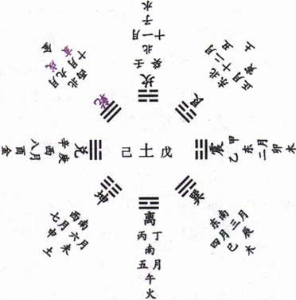
【占】 问战征：豕属《坎》，又属亥，是必在坎险湿泽之处，最宜畜意禁止，以防敌军豕突。能谋而后动，自然获吉。
○ 问营商：互，有互市之义，谓财物交互成市，正合近时通商之象。“豮豕”，谓小豕，譬如初次贸易，资本尚微，能受畜止，乃吉。
○ 问功名：此必年少求名，未免躁进，宜知自止，故曰“豮豕之牙，吉”也。
○ 问家宅：豕属亥，水也，前必有二水，交互而流，是以吉也。
○ 问疾病：六五辰在卯，东方为木，又豕属亥，亥为水，是必木旺水亏之症，宜自《节》止调养，方能有庆也。
○ 问六甲：生女。
○ 问婚嫁：六五爻辰在卯，为兔，五应二，九二爻辰在寅，为虎，寅卯相合。爻曰“豮豕”，豕属亥，亥与寅卯，木水相生，皆得制伏，大吉。
【例】 明治二年，友人某来，论时势曰：今箱馆平定，天下安静，朝廷选拔各藩俊士，登用人才，整理政务。承兵马倥偬之后，各藩士集合在官，未免互争权力，致生纷扰之患。请占其形势如何？筮得《大畜》之《小畜》。爻辞曰：“六五：豮豕之牙，吉。”
断曰：此卦下卦为《乾》，指各藩士族，上卦为《艮》，指政府也。下卦刚健，势欲锐进；下卦政府，将止其躁进，复给以禄养，是《大畜》之义也。当此兵马倥偬之后，各藩士族，始膺奉给，谓九二之《乾》阳尚稚，故曰“豮豕”，六五能畜止之，使不突进。“牙”，谓遮拦，有止畜之义也。犹言英才能隐居潜修，养成大器，故《象传》曰：“六五之吉，有庆也。”
后果如此占。后友人每相与会，谈及此占，未尝不感服也。
上九：何天之衢 ［128］ ，亨。
《象传》曰：何天之衢，道大行也。
“衢”者，四通八达之道，“天之衢”者，犹曰天路也，谓旷达而无障蔽，以喻其通也。案：上九《艮》爻，位近丑，上值牛，《文献通考》，“牛七度，日月五星之中道，其北二星，主道路”，故曰“衢”。又乾为天，《艮》为路，故曰“天衢”。“何”作荷，“荷天之衢”，犹《诗》所云“荷天之休”、“荷天之宠”也。此卦四畜初，五畜二，上畜三，上为卦主，所谓“刚上而尚贤”者是也，故《象传》曰“道大行也”。盖《艮》之畜，非畜之使不行，正畜之以成其才，大其畜，即所以大其行也。畜极则通，通则为《泰》，此爻之所以变即为《泰》也。
【占】 问战征：上九爻辰在戌，上值奎、娄、胃，奎象白虎，主兵，娄星主兴兵聚众，胃星主征诛，皆军事也。爻曰“荷天之衢”，言旌旗载道，一战成功，故《象》曰“道大行也”。
○ 问营商：上应三；三曰“利艰贞”，知当时贸易尚多艰苦。至上为畜之极，畜极则通，故曰“荷天之衢，亨”，即三所云“利有攸往”者是也。《象》曰“道大行”，是必大获其利。
○ 问功名：爻曰“荷天之衢”，是即可谓青云得路之时也，大吉。
○ 问家宅：爻曰“荷天之衢”，衢大道也，知此宅必在大道之旁。“荷天”者，得天之佑也。“亨”，吉也，其宅必吉。
○ 问六甲：生男。
○ 问婚嫁：想是天作之合，吉。
【例】 明治十四年，应某贵显之召，占国会开设，请愿成否，筮得《贲》之《大畜》。就《贲》之卦象推施今日之政略，知五年之间，国家无事；自明治十九年以降，迄明治二十四年，此五年，值山地《剥》，有不祥之兆。故余活用《贲》之二爻，变为《大畜》以述现今政略，推至明治二十年，正当《大畜》上爻。
断曰：《大畜》一阳止上，藏畜三阳于中，谓昔刚壮健行者，今以备历艰辛，通晓时势，不复须畜止也。《艮》山变为《坤》地，四通八达，无不豁然而开通，恰如天衢之广阔无碍，谓之“荷天之衢，亨”。明治二十年当此爻象，知铁道之建筑，必可盛行也。
后至明治二十年，果全国人心，皆倾向铁道，株券流行，建筑自骎骎日盛也。
27 山雷颐
“颐 ［129］ ”从臣，从页，臣为”颐”本字。页本首字，《说文》曰“头也”，从口，从一，一者，象舌，有养之义。卦体《艮》上《震》下，《艮》为山，《震》为雷，雷动也，山止也。卦以上下二阳象上下唇吻，内四阴象虚而求食。《颐》张而不合，有求食之状，故可以观《震》阳下动食象也。艮主止，止观象也。然《震》非自动也，系于艮以动，艮不上止，《震》虽欲动而不能，则其所以为《颐》之主，艮也。上下实而中虚，动而能止，曰《颐》，此卦之所以名《颐》也。
颐：贞吉。观颐，自求口实。
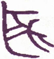
▲ 金文颐
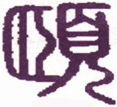
▲ 篆书颐
《序卦传》曰：“物畜然后可养，故受之以颐，颐养也。”“观颐”则思所养，思所养则知节，嗜欲可省，廉耻可立，心志可宁，养生养德在其中矣，故“贞吉”。大抵养道主静，天地万物皆上动下止，惟《颐》下动上止，静以制动，止以忍贪，“观颐”之义也。身之有颐，本以为养，颐中虚，实之所以为养也，故曰“自求口实。”
《彖传》曰：颐，贞吉，养正则吉也。观颐，观其所养也。自求口实，观其自养也。天地养万物，圣人养贤以及万民，颐之时大矣哉！
《颐》卦内《艮》外《震》，《艮》为黔喙之属，喙口也，即《颐》之象；又为蓏《震》为蕃鲜，为百谷，皆有养之义。“颐，贞吉”者，所养得正，则有吉也。然养有正不正，不观不足以知之。观其所养何人，则养之公与私自别也；观其自养何求，则养之贪与廉可见也。果其所养皆贤，自养有节，是养得其正，即养无不吉矣。至天地圣人，极言养道之大，人之养生，多在自养，必如天地之化育无私，而万物皆被其泽，必如圣人之恫痞在抱，而上自贤哲，下及万民，无不并沐其恩。盖圣人体天地之养以为养，故所养有与天地而并大。《彖传》曰“颐之时大矣哉”，谓其所养至广，即于养之时而已见矣；不言义，而义亦在其中也。
以此卦拟人事，上三爻为艮，《艮》六五曰艮其辅，辅上颔也，有《颐》之象；下三爻为《震》，上六曰“视矍矍”，有观之义；上下互《坤》，《坤》为缶，为浆，有养之义。然养亦不一法也，节宣所以养正，饮食衣服所以养形，威仪礼貌所以养德，推己及物所以养人。盖人莫不有所养，而养亦各有所在，内而养一身，外而养天下，而要在得其正者吉。夫士之得禄位，农之事稼穑，工之造器物，商之通货财，皆各食其力，各养其身，而得其正者也，否则因糊口之无资，而忘其廉耻，如孟子所谓“苟无恒产，则放僻邪侈，无不为矣”，此其人复何足观乎？然观人者，当先观其“口实”之求，人苟不以饥渴害其心，而能以箪瓢乐其道，则其所求，有在于“口实”之外，其所养，必得夫性情之正。其自养如是，其养人当更有大者矣，必如天地之养物，圣人之养贤，以及养育万民，而其养不特得其贞，益且获其吉矣。颐养之道，尽在是也。
以此卦拟国家，下卦为人民，下民好动，有《震》之象，上卦为政府，政府能安止下民，有《艮》之象。卦名曰《颐》，《颐》，口也。下民各有一《颐》，下民即各自求养，农以力耕，商以贸货，工以造器，皆各以才力“自求口实”。而犹有自养而不足者，政府为之薄其征敛，蠲其租税，甚至发粟以救饥，给药以疗疾，朝廷之仁浆义粟，适为下民续命之恩。在政府并非以此市惠也，亦体夫天地好生之德，以为养也。至下民之中，有所谓贤者，政府尤必尊其位，重其禄，养之以大亨，而不敢不优也。时贤者沐朝廷之荣恩，而并能推朝廷之德泽，及于万民。此颐养之道，所以愈推愈广也，《彖传》曰“颐之时大矣哉”，有以夫！
通观此卦，上卦三爻，皆所以养人，下卦三爻，皆所以自养。养之道，以养人为公，自养为私；自养之道，以养德为大，养体为小。故初、二、三皆养口体，私而小者也；四、五、上皆以养德而养人，公而大者也。无论为养人为自养，要皆以得正为吉，故《象》曰：“山下有雷，颐，君子以慎言语，节饮食”。谓《颐》之为用，吐露言语，咀嚼饮食，皆由颐而出，君子观《颐》之象，而知所直慎宜节也。初爻以阳处下，为动之始，是动而自求养也，舍“灵龟”而观“朵颐”，是以凶也。六二处下体之中，无应于上，返而养初，故曰“征凶”。六三虽应上爻，上九而拂颐养之节，自纳于上以馅媚者也，故至“十年”而犹“勿用”，复何利之有？六四身处上体，居得其位，应于初爻，以上养下，得养之宜，又能威严寡欲，所以得吉。六五以阴居阳，而比于上，行则失位，居则“贞吉”，故“不可涉大川”。上九以阳处上而履四阴，众阴皆由此得养，故曰“由颐”：然其所以得此养者，不知几历危厉而始得吉也，故曰“厉吉”；养至此，则无往不他故曰“利涉大川”而“有庆”也。盖《颐》之全卦，专言养生之道，其本在初。曰“龟”，曰“虎”，曰“颠”，示其用也；曰“拂”正其趋也；曰“由”竟其委也。圣人所以握造化之机，而尽性命之理者，于《颐》之一卦见之矣。
《大象》曰：山下有雷，颐。君子以慎言语，节饮食。
此卦山下有雷，为上止下动之义，即《颐》口之用也。夫言语者，祸福之所由招；饮食者，疾病之所由生。动止得其道，斯言不妄发，食不过度矣。君子观《颐》之象，而知其所慎，知其所节；大之则命令所出，慎之而无失，货财所入，节之而无伤；极而言之，则养德以养天下，皆无不然也。
【占】 问战征：上止下动，防队下有妄动招乱者，或机密漏泄，或酗酒启衅，最宜谨慎。
○ 问功名：山下有雷，雷发声而山亦鸣，有声名腾达之象。
○ 问经商：《颐》象内动外止，主货物内地升动，外地低落之象；又恐贩货出外，一时不能销售。其货物大约不离食品。
○ 问家宅：《艮》山欲止，《震》雷欲动，山在上，雷在下，恐地盘震动，宜防火灾。
○ 问疾病：上止下动，山属土，雷属火，主上焦寒闭，下焦热泻之象，必待五爻，《象》曰“顺以从上”，庶上下通顺乃吉。一爻一日，必至五日可愈。
○ 问行人：内卦动而外卦止，必已动身，为外事阻止。上九日“利涉大川”，知必从水路而来。近则六七日可到，远则六七月方归。
○ 问六甲：生男。
○ 问失物：山下有雷，知其物为重物压止，一时不见，待后可得。
○ 问讼事：主为言语饮食细故启衅；下欲动而上止之，必有上官出而阻止，不终讼也。
○ 问婚姻：颐养也，妇主中馈，有养之义。外夫内妻，内动而外止，有妇从夫之象，吉。
初九：舍尔灵龟 ［130］ ，观我朵颐，凶。
《象传》曰：观我朵颐，亦不足贵也。
凡爻辞尔与我对言，是《易》中比应，互为宾主之一例。此爻尔我云云，自应位之六四告初九之辞，“尔”指初九，“我”则六四自称也。龟为四灵之一，不饮不食，服气吐纳，渊默自养者也。《颐》初上两阳而包四阴，《离》象也，《离》为龟，故曰“灵龟”。初九一阳之始，胚胎万有，是即吾身之灵龟，不待养于外者也。舍“灵龟”而观“朵颐”，是捐其廉明之德，以行其贪窃之情，蠢兹众生，可悲可叹，故戒之曰“凶”。《象》曰“不足贵”者，谓养小失大，纵得所欲，亦不足贵也。
【占】 问战征：古者行军必先占卜以定吉凶，爻辞曰“舍尔灵龟，观我朵颐”，是不畏神明，而徒贪财物，故曰“凶”也。
○ 问营商：初爻为一阳之始，变而为《剥》，《剥》者解《剥》也，《象》曰“不利有攸往”，营商恐难获利。爻辞曰“尔”“我”者，主宾也；“朵颐”者，口之动而食物也。舍“灵龟”而观“朵颐”，有利亦恐为他人食没也，故凶。
○ 问功名：“灵龟”者内心也，“朵颐”者外貌也，舍内而求外，舍己而观人，徒慕虚声，必无实学，功名难成。
○ 问家宅：宅中六神不安，恐有外鬼作祟，动来求食，凶。
○ 问疾病：病由饮食不节所致，宜问神祈祷，可愈。
○ 问婚嫁：尔我者，男女两姓也，“舍尔”“观我”，显见两姓不谐，其故在争论礼物，必不成也，成亦必凶。
○ 问讼事：必由口舌启衅。曰“舍我”，曰“观尔”，是两造各执一见，一时不能就理。凶。
【例】 友人某来曰，余窃有希求，欲面谒某贵显，请占其成否如何？筮得《颐》之《剥》。
断曰：此卦内卦《震》雷，雷动也，外卦《艮》山，山止也，显见雷欲动而为山所止也。今得初爻，明明足下将有所动作，而为贵显所阻止。爻辞曰“舍尔灵龟，观我朵颐”，所谓“尔”者属贵显，“我”者是足下，“舍尔”“观我”，是足下欲强贵显而从我所求也。所谓“朵颐”者，口腹之求，无餍之欲，以此往谒贵显，非特不成，恐反受谴责，故曰“凶”也。
友人闻之，不快于意，后往谒贵显，为所谢绝。
六二：颠 ［131］ 颐，拂经于丘颐，征凶。
《象传》曰：六二，征凶，行失类也。
二爻比初应五，阴柔不能自养，犹女不能自处，而必从男，阴不能独立，而必从阳也。“颠”倒也，“拂”违也，“经”义也，“丘”所履之常处也。夫颐养之道，以自上养下为常，今二爻虽与五为应，阴柔不能养五，反而求养于初爻，辞曰“颠颐，拂经”，是颠倒而违于常理也。以此求养，未见其福，以此而行，未见有与，故曰“颐，征凶”。《象》曰“行失类也”，《震》为行，阴阳各从其类，二爻不知养内卦之《乾》，反养外卦之《坤》，是为“失类”，故“征凶”也。
【占】 问战征：行军之要，首在纪律严明，步伐整齐。爻曰“颠颐，拂经”，是必背违纪律，步伐错乱也。凶莫大矣。
○ 问营商：二爻变《损》，《损》，耗损也，于商不利。爻辞曰“颠”，曰“拂”，是明言买卖出入不合常理也，故曰“征凶”。
○ 问功名：“颠颐，拂经”，是不循常道，侥幸求成，虽得终凶。
○ 问婚嫁：六二阴柔居下，不奉上而反养下，是谓颠倒拂乱，不得其正，妇道不可问矣。故《象》曰“行失类也”，凶可知矣。
【例】 友人医师伊藤某，其子在横滨营商业，伊藤某一日来访，请占其子终身运限，筮得《颐》之《损》。
断曰：《颐》之六二，以阴居阴，才智俱弱，未足兴立事业也。《颐》者养也，当居下以奉上，不当以上而养下，此为养之常道也。今二爻辞曰“颠颐，拂经于丘”，是颠倒拂乱而失其正也。足下占问令郎终身，而得此爻，知令郎虽从事商业，必不能获利而养亲，而反将耗损父产，故曰“征凶”。且其所与共事者，皆非善类，故《象》曰“六二征凶，行失类也”。为今之计，惟嘱令郎停止商业，可免后患。
伊藤某闻之，大为叹息，谓《易》象所云，丝毫不爽。即命其子闭店，其子不从，竟至产业荡尽，可惜可惜！
六三：拂颐，贞凶，十年勿用，无攸利。
《象传》曰：十年勿用，道大悖也。
三爻居内卦之极，阴柔而不中正。《颐》三变而为《贲》，《吕氏春秋》；孔子卜得《贲》，曰不吉，以《贲》不得五色之正也。《颐》三比二应上，谄媚以奉上，是拂夫《颐》养之贞，故凶。上下互《坤》，《坤》为十年；故曰“十年”：《坤》又为用，以其拂贞，故曰“勿用”。三至六为《剥》，《剥》，《彖》曰“不利有攸往”，注谓当《剥》之时，强亢激拂，触忤陨身，是以“不利有攸往”。《颐》三拂贞，故直曰“无攸利”，是无所可往，无所得利也。《象传》曰“道大悻也”，极言于《颐》养之道，大相拂乱，故至“十年”而“勿用”，深责而弃绝之也。
【占】 问战征：师以贞为吉，拂贞则不吉。颐养也，养兵以备用，养拂其道，则兵不可用。《象》曰“道大悖也”，是犯上好乱，其败亡必矣，故凶。
○ 问营商：商业专在获利，曰“无攸利”，无论营业之大小，无论贩货之远近，皆无所得利也。极之“十年勿用”，是久久而不成事也，故凶。
○ 问功名：功名之道，要在出而用世，得以利济群民，是将以道养天下也。若拂夫《颐》之正，而极之“十年勿用”，则将终其身而不得见用也，故曰“无攸利”。
○ 问家宅：是宅必久无人居住矣，且恐有鬼祟出而求食，家宅不安，住之不利。
○ 问婚姻：主闺门不贞，其婚事亦必过十年可成。
○ 问六甲：生男。
【例】 明治二十五年，占国家之气运，筮得《颐》之《贲》；又占众议院，得初爻，推理如左：
此卦雷在下，山在上，雷欲动而为山所止。《颐》之象为人口，上腭止而下腭动。《颐》之义为养，如张口以求食也。今占国家气运得此卦，盖国家所重在人民，人民之所重在食，人一日不食则饥，七日不食则死，人民之旦夕忙忙不惮劳苦者，无非自求其食也。内而家，外而国，仰事俯畜，皆藉得食以为养也。且《颐》之反卦仍为《颐》，人民发动，政府自上得以止之，政府行动，人民在下，亦得以止之，犹是颐之上下唇，有互相开合以为用也，故利用观。“观颐”者，即观其《颐》之贞不贞也，贞即正，所谓养正则吉，由一己以推诸家国天下，皆以得养之正为吉。我日本全国人口繁殖，明治五年三干五百万人，二十年间，已达四千余万，今以一年平均计之，约有四十万人增加。论土地之开垦，每年仅不过二万町步，以地之所产，合计人口之所食，每年有二十万人民不得其食，是以人民不能不“自求口实”矣。求而正者吉，不正则放僻邪侈，无所不为，由是廉耻道丧，争夺日滋，而盗贼群起，原其故，无不由“自求口实”来也。朝廷治以禁暴之法，而不开其养生之源，譬如见赤子呱呱啼饥，不为之哺乳，而与以止啼之苦药，终无益也。为今之计，惟在诱导穷民，使人开垦荒芜不毛之地，又起国家公益之事业，而从事之，以与为民力食之地而已，谓之“颐贞吉”。
三爻之辞曰：“拂颐，贞凶，十年勿用，无攸利”，是即《彖》辞所云“颐贞吉”者，而反言之也。“十年勿用，无攸利”，是凶之极致也。三爻以阴居阴，不中不正，上下俱悖《颐》养之正道，故曰“拂颐，贞凶”。国家气运，值此爻象，及今而不急为调剂，恐异日之尤，有不可测者矣。且今后十年，即至《大过》上爻之气运，则有穷民转沟壑之象，故曰“十年勿用，无攸利”。占象如斯，可惧！可惧！
占众议院，得初爻，辞曰：“舍而灵龟，观我朵颐，凶。”《象传》曰：“观我朵颐，亦不足贵也。”龟者介虫之最灵者，曳尾泥途，是葆养灵德，而不求口实者也。初爻《震》阳之始，为下卦之主，爻辞曰“舍而灵龟，观我朵颐，凶”。今就议员而论，所谓“尔”者属主选之人，所谓“我”者必属应选之人，是舍主选者之明鉴，而专观应选者之口实，则龟无其灵，不足以为龟，即议员无其才，不足为议员也。故《象》曰，“观我朵颐，亦不足贵也”，明言此徒求温饱之辈，虽幸充议员，何足贵乎？又此爻变则为《剥》，《剥》之为卦，“君子道消，小人道长”，此最为国家盛衰所攸关，主议员之选者，所当凛凛也。
【例】 友人某，从事商业，家道富裕，生有一子，平生悔己不学，使子就学东京。虽卒业学校，因素无家教，遂至所交非人，征逐酒食，浪费金钱，或侮慢老成，或诽谤亲友，甚至以父为顽固而奴视之，逼迫父母，分析财产。复来东京，充辩护之士，间营米商以争输赢，乃至亡失资本，复托友人，请求于父。于是其父来请一占，筮得《颐》之《贲》。
断曰：《颐》养也，谓宜以下养上者也。今令郎分父财产，未几耗尽，而复求食于父，是下不能养上，而转欲以上养下也。故三爻之辞曰：“拂颐，贞凶，十年勿用，无攸利。”以令郎素失教训，不知生产之艰难，必至“十年勿用”，困苦穷厄，历尽艰辛，使之困极知悔，十年以后，或可有为也。为今之计，惟稍给口食，得以度日而已，是今日处置之法也。
其父叹息曰：所谓“子不教，父之过”，余知所悔矣！乃谢而去。
六四：颠颐，吉。虎视耽耽 ［132］ ，其欲逐逐，无咎。
《象传》曰：颠颐之吉，上施光也。
四爻柔正，与初九刚正相应，居得其位，以上养下，得《颐》之义，故曰“颠颐，吉”。四爻属上体，得《艮》气，《艮》为虎，耽耽下视之貌，是威而不猛之谓也。“逐逐”，《子夏传》作“攸攸”，苟作“悠悠”，刘表作“耽耽”，云“远也”。按《汉书·叙传》，“六四耽耽，其欲浟浟”，师古注，“浟浟，欲利之貌”。初取象于龟，龟者介虫之长；四取象于虎，虎者百兽之长，是两相应也。龟之德在灵，虎之威在视，初与四，取义各有所在。且《颐》卦旁通《大过》，“大过颠也”，故四称“颠”，二亦称“颠”。六二“颠颐凶”，六四则以“颠颐”得吉者何也？盖六二处下体而又养下，是以凶也；六四处上体，又应于初，阴而应阳，又能威严寡欲，所以吉也。《象》曰：“颠颐之吉，上施光也”，“上”谓上九。上得《乾》之一画，《乾》阳上烛，光明无所不照，四知养其乾元，则《乾》之光施于四，四即得之以为光，是以曰“上施光也。”
【占】 问战征：战士之勇者称虎臣，亦称虎贲，皆谓其有力也。然必须养其精锐而后用，非徒恃威猛而轻进也，故曰“颠颐，吉”。
○ 问营商：“颠”，恐一时物价有倒跌之象。“虎视耽耽，其欲逐逐”，譬言商人谋利之状，能视其贱价而置货，故吉而无咎。
○ 问功名：功名之兆，自古多取龙虎，是以吉也。“视耽耽”，“欲逐逐”，皆谋望腾达之意。
○ 问家宅：此宅必右山白虎居高，有怒目欲噬之形，幸四爻以阴居阴，位得其正，可无咎也。
○ 问六甲：生男。
【例】 内务省参事官松本郁郎氏，将以公事赴浓尾，因请占任命事件。筮得《颐》之《噬嗑》。
断曰：此卦内卦为《震》动，外卦为《艮》止，知足下赴浓尾地方，为办理震灾后之事宜也，《震》动《艮》止，其象昭然。颐养之道，以下养上为正，今《震》灾之后，民不得食，朝廷为发粟赈济，是以上而养下也，颠倒也，故曰“颠颐，吉”。“虎视耽耽，其欲逐逐”，属在灾民，其惶惶求食，俨如饿虎，亦无足怪。然其中保无奸吏营私，视政府赈灾之饷，阴作中饱之图？所谓“视耽耽”，“欲逐逐”者，亦未始无人也。足下办此灾案，尤当察其奸曲。此爻变为《噬嗑》，《噬嗑》为卦，用狱明罚，所谓“小惩而大诫之”也。恤此灾民，惩彼奸吏，虽有“虎视耽耽，其欲逐逐”，固无咎也。
松本氏首肯而去，后果如此占。
【例】 友人某来，请占某贵显，筮得《颐》之《益》。
断曰：四爻位近六五，显见宰辅之象。四处上体，为《艮》之始，其威德能镇定群动，其恩泽能养育群生；应于初爻，阴而养阳，又能威严而寡欲，故曰“颠颐，吉。虎视耽耽，其欲逐逐，无咎”也。友人曰：断语如见其人。
六五：拂经，居贞吉，不可涉大川。
《象传》曰：居贞之吉，顺以从上也。
五爻以阳居阳，无应于下，而比于上，是为君者不能养人，反为人所养者也，即拂君道之常经，故曰“拂经”。《颐》卦六爻，惟初上属阳，阳宜行，阴宜居，且五体《艮》，《艮》为止，行则失类，故曰“居贞吉”。五又中虚象《坎》，《坎》为险，又为大川，“居贞”虽吉，而养道未成，不能以济险，故曰“不可涉大川”。按二曰“拂经”，三曰“拂颐”，拂，违也，二三以违拂颐养之道，故皆曰“凶”。五亦曰“拂经”，而独曰吉，何也？不知五爻之吉，不在“拂经”，而在“居贞”，故《象传》曰：“居贞之吉，顺以从上。”“上”谓上九，谓五近上，能以阴顺阳，故居贞得吉也。
【占】 问战征：行军之道，有经有权，谓能达权，似不必拘拘守经也，故“拂经”无咎。曰“居贞吉”，则宜固守，不宜进攻。“不可涉大川”，恐于川流之际有伏兵；舟揖前往，防有风波之厄，皆当谨慎。
○ 问营商：利于坐贾，不利行商，贩货出洋，更为可虑。
○ 问功名：出而应试，难望成名。
○ 问家宅：上体属《艮》，山居则吉，若在临江近水，其宅不利。
○ 问婚嫁：恐有不得媒聘之正者，若能从一而终，则亦吉也。
○ 问六甲：生男。
○ 问疾病：病在五爻，久则四五月，近则五六天，由于调养失宜。能安居静养则吉，若冒风雨，涉远路，恐难治也。
【例】 明治十年中秋，东京增上寺大教正福田行诫，偕其徒少教正朝日氏来访，曰：我增上寺佛殿，往罹火灾，已阅十年，寺僧谋请重新，余谓兵革之余，集资非易，僧徒闻之，不以余言为是，谓本山而无大殿，是失庄严之相，咸各誓愿募化，计图再建。于是预算经费，一切所需，凡若干万元，后因物价腾贵，施工未竣，金款告匮。敢请一占。余曰：《易》道尽人事而俟天命，琐琐细事，未可渎问，不如占间佛殿之建筑何时完成，朝日氏诺，筮得《颐》之《益》。
断曰：筮得《颐》五爻，可观现今佛家之结果也。“经”即佛经，“拂经”者，有违佛经之旨趣也。维新以来，佛制亦从而改革，寺领既还，法禁遂改，食肉畜妻，在所不禁，出家在家，复何区别？是之谓“拂经”。然佛家宗旨，自来不一，古之名僧，有以饭鸽为食者，经文所载，有以法喜为妻者，是以身犯法而为虚无，空诸所有而归寂灭者也。此亦一法也，但必以安居守贞为吉，若不避危险，与俗人争利逐欲，则不可也，故曰“不可涉大川”。《颐》反卦为《大过》，《大过》四爻曰“栋隆，”吉”；九四互《乾》，辰在亥，上值危室，《开元占经》引甘氏曰，“危主架屋”，又引《地轴占》曰：“营室大人之宫”，故“栋隆”。佛殿以供大佛，是以亦有“栋隆”之象。《颐》五爻《象传》曰：“居贞之吉，顺以从上也。”“上”指上九，上九曰：“由颐厉吉，大有庆也。”五至上，相隔一爻，谓一年，顺以从上，俟明年，佛殿可成，故曰“有庆”。
上九：由颐，厉吉。利涉大川。
《象传》曰：由颐，厉吉，大有庆也。
此卦初上两刚，合养四阴，初爻在下，《震》阳尚微，势力未充；上爻交上，艮阳已极，德足养人，卦中四阴，皆由上九而养，故曰“由颐”。上爻在卦为成卦之主，在爻为养人之主，其任甚重，且以阳刚之才，居危疑之地，苟其稍形骄惰，君疑众怨，是危殆之道也。故人臣当此，惟常怀危厉之念，斯可保其吉也。伊尹、周公忧勤惕厉，终得其吉，即此道也，故曰“厉吉”，以厉而得吉也。养至此，则乾元在我，川可涉，危可济，弱水不能陷，大海不能阻，夫亦安往而不可哉！故曰“利涉大川”。较六五之可“居贞”而“不可以涉大川”者，又有进矣，是足以当天下之大任，济天下之艰危，以成天下之治安者也，在此“由颐”之功耳。《象传》曰“由颐厉吉，大有庆也”，谓阳刚在上，能由养己以及养人，推而至于养天下，则无人而不被其养，即无人而不获其庆也，故《象》曰“大有庆也”。
【占】 问战征：谚云“养兵千日，用在一朝”，其得效力疆场者，皆由平日教养来也，故曰“由颐”。兵，危事也，不知几经危厉，乃得此克捷之功，故曰“厉吉”。“利涉大川”者，必其军士同心同德，斯得涉险，临危而不避，如周师之会孟津，诸葛之渡沪水是也。
○ 问营商：商业专在谋利，得利则足以养身养家。然商不能安居而得利也，必将涉历险途，或远贾重洋，方可获利，故曰“厉吉”。
○ 问功名：功名一道，由小而大，由卑而尊，然必忧勤惕厉，乃得功成名遂也。《象》曰“大有庆也”，是即所谓得之有喜也。
○ 问疾病：虽危得救，故曰“厉吉”。
○ 问六甲：生男，故《象》曰“大有庆也”。
【例】 余每年于冬至日，占翌岁事物之吉凶，以为常例。明治二十二年冬，为占一卦，筮得《颐》之《复》。
今岁一月，某贵显来访，问及麦作丰歉如何？余曰：本年政府蓄金备荒，购入外国米，以济灾黎。某贵显问何以知之？答曰：冬至余曾占今年麦作，遇《颐》之《复》。《颐》之为卦，其象为口，其义主养，小之则养在一身一家，大之则养及天下万民，群生衣食，由此而推暨也，故曰“由颐”。上九一阳在上，四阴在下，定卜先时多雨，麦作不丰，及至上爻，阳光发露，收成尚可，故曰“厉吉”。在昨年，因遭水灾，谷粒歉收，今年春，麦又不丰，则民食阈乏，米价腾贵，势必困苦流离，有不堪着想者矣。政府目击时艰，设法赈济，计惟招购外国洋米，以济民饥。其米之来，或自清国，或自印度，或自暹罗，皆由舶运，故曰“利涉大川”。后余以此占上申大藏省，政府乃察其机，即以备荒蓄金购入外国米，出卖于诸港，民心遂得安悦。
28 泽风大过
《大过》自《颐》而来，《颐》上下二阳，中包四阴，《大过》反之，以二阴包田阳，四阳过盛，故曰《大过》。夫道中而已，阳欲其盛，不欲其过，太刚必折，太实必裂。今四阳中满，二阴屏居无位之地，阳虽盛而下无基，上无系，反借资于二阴；二阴微弱，不能为助，是失其中也，失中即为过。卦体上《兑》下《巽》，《兑》正秋也，秋金气，水之母也，故兑为泽；《巽》辰在巳，上值轸，轸主风，故巽为风，合之谓泽风《大过》。然《大过》异《小过》，何也？《小过》以《艮》遇《震》，止而动，其动未危，阴虽盛而下有基，止则吉也；《大过》以《巽》遇《兑》，入而悦，悦极不出，阳虽盛而下无根，入则颠也。《杂卦传》云“大过颠也”，《大过》一卦，不言颠，而《颐》卦言颠，以《颐》与《大过》，颠倒以相为用。《序卦》是以置诸上《易》之末，天地再交，以成《坎》《离》也。
大过：栋挠 ［133］ 。利有攸往，亨。
《大过》，阳大阴小，刚积于中，足以任重，有似栋然；《兑》上《巽》下，《巽》为木，《兑》为毁折，木而毁折，栋斯挠矣。当此大厦将倾，非一木所能支，惟当出门求助，以拯患难，乃得亨通，故曰“利有攸往，亨”。
《彖传》曰：大过，大者过也。栋挠，本末弱也。刚过而中，巽说行，利有攸往，乃亨。大过之时大矣哉！
此卦下《巽》上《兑》，四阳积中，刚阳过盛，故曰《大过》，阳大阴小，故曰“大者过也”。“栋”屋脊也，《巽》木而为《兑》金所伤，故“挠”。《巽》木本柔，上无根柢，下无附属，故本末俱弱。“刚过而中”，非二五之中，谓四刚连亘，位处于中，刚虽过而位处中也。然不可以恃夫刚，须以“《巽》而悦”者行之。《巽》主初言，悦主上言，四刚互《乾》为行，以柔济刚，黾勉前进，乃得亨也，故曰“利有攸往，乃亨”。盖奇才生于困厄，定力出于艰辛，转败为成，在此时也，故曰：“大过之时大矣哉！”
以此卦拟人事，就卦体言，四刚居中，为主于内，二柔在上下，为客于外，为主者刚过，是主刚而客柔也。就卦象言，四刚排列中间，二柔分居上下，俨若栋然，大人必具刚强之德，斯足充栋梁之选；然过刚无制，则太强必折，其“栋挠”矣。要必以“巽而脱”者行之，庶几刚而有济。刚不患其过刚，挠不至于终挠，盖惟其有大过之材，乃克济《大过》之事。“利有攸往，乃亨”皆本乾元用九而来，“利有攸往”，即《乾》之“行健”也，“乃亨”，即《乾》之“元亨”也。圣人于《易》，虽以扶阳抑阴为主，而有时亦借阴以济阳。《巽》以出之，悦以行之，是祛其大过而就以时中也，则变而不失其常，穷而不失其正，故曰“大过之时大矣哉”。所谓“时”者，亦即“终日乾乾，与时偕极”之道也。
以此卦拟国家，下卦为人民，巽为风，有四方风动之象；上卦为政府，兑为泽，有我泽如春之象。卦体刚在中，二柔居初上，是四刚当权，有威有福，居中而秉政者也。凡国家建大功，兴大役，皆以一人身任其重，如大屋之有栋，以负荷众材；然任载过重，则不胜其任，而立见其挠也，是“本末弱”也。所谓“本末”者，指上下二阴而言，二阴才力柔弱，不克任重，故“挠”，此乃阴衰而阳失其辅，臣弱而君失其卫，阳刚过中所致也。当此之时，在蹈常守辙之人，多不敢为，惟知时达变之士，所欲奋然而往也。必其秉刚阳之德，而能以巽顺和悦行之，宽以克猛，柔以济刚，得时中之宜，无亢阳之患，方足以平大难，兴大业。《乾》卦所云乾元“以美利利天下，不言所利”者，胥是道也，故曰“利有攸往，乃亨”。盖往以济时之过，其必能通其时之变，反其势之平，整顿天下于一新，维持世道于无穷，而可得亨通也。
通观此卦，阳刚太实，有不能运动之象，譬如人之肢体肥重，不能转运也。又四阳居中，二阴退而听命，下无根柢，生气已断，上无附属，枝叶既凋，故爻有“枯杨”之辞，曾不如《剥》《姤》之犹可来复。然《大过》自《颐》来，“颐，养也”，谓当养其二阴以相济也。《兑》泽在上，《巽》木在下，《象》曰“泽灭木”，泽本下而反上，木本上而反下，此《大过》之所以为颠，过越常分之大者也。君子法之，“独立不惧，遁世无闷”，是能以退藏者养其阳而防其过也，非君子则不能。《大过》六爻，二阴四阳，有阳爻而处阴位焉，有阴爻而处阳位焉，有阳爻而处阳焉，有阴爻而处阴焉，爻有不同，义亦各判。初爻以阳居阴，是过之尚微也，巽为茅，茅虽柔物，藉之亦足助刚，故“无咎”。二爻亦以阳居阴，是过而不过也。《巽》木为杨，泽灭之而枯，得阳九生气，枯而复稊，故亦“无咎”。三爻以阳居阳，是过而又过也；四刚在中，如屋之有栋，刚果自用，终致“栋挠”，故凶。四爻亦以阳居阴，是亦过而不过也。四与初应，得其所藉，三曰“挠”而四曰“隆”，故吉。五爻以阳居阳，是过而无复过也。“枯杨”之象，与二爻同，然阳至五而极，虽华已衰，故曰“何可久也”。六爻以阴居阴，四刚既倾，是过之终极也，“利有攸往”，正在此时。所谓“过涉”者，忠在救时，故“灭顶”虽凶，而“无咎”也。六爻以相对者言之，初与六对，《彖传》所云“本末弱”者，指初上也。一以藉茅而无咎，一以“过涉”而忘凶，皆足以救其过也。二与五对，“枯杨”之象，所取相同，“生稊”“生华”，久暂分也。三与四对，“栋”之为象，所取亦同，曰“桡”，曰“隆”，吉凶判也。总之，卦以阴阳相偶谓得中，偏则为过，四阳二阴，是《大过》也，故曰“大者过也”。君子于此，以“独立不懼，遁世无闷”处之，抱忧时嫉俗之念，具拨乱反正之才，利害不计，成败不言，上六之“过涉灭顶”者，必斯人也，复何咎矣！
《大象》曰：泽灭木，大过。君予以独立不懼，遁世无闷。
此卦泽水浸淫《巽》木之上，木为之枯，故曰“泽灭木”。当是时，世俗之士，或皆随流逐波，鲜有不磨灭者矣，惟君子具《大过》人之才干，虽时当困厄，而操守弥坚，所信者理，所乐者天，谓之“独立不惧，遁世无闷”。是必刚而能柔，过而能往，可谓善处《大过》之时者也。
【占】 问战征：“灭”，灭绝也，大欲灭国，小欲灭身，其象凶矣。行军占此，恐有暴水淹没之祸。
○ 问营商：《象》曰“泽灭木”，有低价忽而高涨之势。
○ 问功名：“独立不懼，遁世无闷”者，谓当退身隐处，未可求名也。
○ 问家宅：《兑》泽在上，《巽》木在下，其象反复，位置不正，防有灭凶之祸。
○ 问疾病：是肝火内郁之症，肾气冲上，医治非易。
○ 问婚嫁：“泽灭木”，恐配偶之间，有老幼不匀。
○ 问六甲：生女。
○ 问失物：必坠入水沟之处。
初六：藉 ［134］ 用白茅，无咎。
《象传》曰：藉用白茅，柔在下也。
“藉”者，铺地也，“白茅”，取其洁也，古者祭祀，藉之灌酒，以降神也。茅白取《巽》象，《巽》在下卦，藉茅于下，所以承上之刚也。初爻阴柔居下，不犯刚而能承刚，当此《大过》之时，敬慎事上，不得谓过分也。故比之礼义之适中者，则有过于敬慎之失，比之傲慢侮人者，则其胜亦不啻霄壤；在高傲者固有咎，而卑下者必无咎焉。盖茅柔物也，藉之足以相助，未可以茅之微而忽之。《象》曰“柔在下也”，以爻言则初在下，以茅言则藉在下。初六居阴，阴为柔，茅质柔弱，故曰“柔在下也”。
【占】 问战征：当此初次出师，最忌刚暴过甚，宜宽柔待下。
○ 问营商：贩运之货，必是药品，或是茶叶木棉，其色必白，其质必柔，均可获利。
○ 问功名：拔茅连茹，是有连类同登之象。
○ 问家宅：其宅必近卑湿低下之处，屋外蔓草荒芜，建筑也。
○ 问疾病：病体柔弱，下焦有湿，须用温燥之药治之。
○ 问失物：于草地上觅之。
○ 问六甲：生女。
【例】 明治元年，东久世中将、锅岛肥前守充先锋，将收横滨，余时在肥前守营中，兼管各种事务。藩士下村某，率兵士百人，奉命先收浦贺，以向导嘱余，为筮一卦。筮得《大过》之《夬》。
断曰：凡古军事，内卦为我，外卦为敌。初爻在内卦之下，以阴居阳，阴属柔，显见我宜用柔。兑为泽，所攻取者，必是水泽之地。白茅柔软之物，用以藉地，履之而安，无失足之虞，是教我喜啣尾潜进也。今闻浦贺港上，有开阳、回天以下六舰碇泊，募兵脱走者数干人搭载之，浦贺兵士，又与之同心联络，敌势过盛，未便用强攻击。爻辞曰“藉用白茅”，《象》曰“柔在下也，”是明示以用柔之道，以柔克刚，收取海门咽喉为上策也。
下村某，率领十数人前进，不战而平。
九二：枯杨生稊，老夫得其女妻，无不利。
《象传》曰：老夫女妻，过以相与也。
二爻以阳居阴，阴尽则死，阳来则生，物之常理。《巽》为木，克为泽，木之近水者为杨，泽而灭木，杨必枯矣，得九二阳气生助，故得枯而《复》生。“稊”，杨之秀也。按，二爻体《乾》，《乾》为老，为男，故曰“老夫”；下得《巽》在初，《巽》为处女，故曰“女妻”；二与初比而得初，故曰“老夫得其女妻”。夫夫妇配偶，以年之相若为正，老夫女妻，是亦颠也，然老少虽非正匹，而阴阳自得相济。“老夫”“女妻”，犹枯杨之生稊，终得妊育也，故曰“无不利”。《象》曰“过以相与也”，卦之义在刚过，夫而过老，妻而过少，故曰“过以相与”。《杂卦传》曰，“大过颠也”，斯之谓欤？
【占】 问战征：有转败为胜之象。
○ 问营商：《兑》为阴，亦为金，《巽》为风，亦为木，定为金木生意。“枯杨生稊”，于种植林木，或贩运树木，皆“无不利”。
○ 问功名：就爻象看来，必待晚年，方可成名。
○ 问家宅：此宅昔年定多不利，系阳宅居于阴地；近来得阳九发动，必有枯树开花，此其兆也。利。
○ 问婚姻：主有老鳏重娶，得以生育，大利。
○ 问疾病：虽危得安。
○ 问失物：必得。
【例】 明治二十二年，友人来请占某家气运，筮得《大过》之《咸》。
断曰：此卦上《兑》下《巽》，是以《兑》少女，居《巽》长女之上，少女不善理家，长女将取而代之，故一家因此有颠覆之患。今占某家得此爻，家业之衰，得人理之，自然复盛，犹木之既枯，得阳气发动，自然生稊。人虽既老，得配少妻，亦能生育，皆有既败复成之象，所谓“枯杨生稀，老夫得其女妻，无不利”者是也。
【例】 明治二十七年十二月，我军入海城，有敌将宋庆乘雪中通路，屡来逆袭挑战，海城几危。筮得《大过》之《咸》。
断曰：此卦合上下二卦，有坎险之象，是两军共履困难。今爻辞曰“枯杨生稊”，杨以冬枯春生，必待春暖，我军乃可突击。“老夫得其女妻，无不利”，是我《师》既老，必得新来之兵，发助壮气，可以制胜也。后果有第二军精兵新来，占领盖平，声援海城。二月十四日克太平山，三月四日占领牛庄，六日占领营口，九日陷田庄台。
【例】 明治三十一年，占我国与清国交际，筮得《大过》之《咸》。
断曰：此卦《兑》上《巽》下，《兑》为金，为泽，属正西；《巽》为风，为木，属东南；金来克木，显见西来侵夺东南，《象》曰“泽灭木”，是其兆也。今占得二爻，二爻以阳处阴，爻辞谓“枯杨生稊”，杨即《巽》木，为泽所灭，故“枯”。“枯”者衰败之象，足见东南之衰弱；“生稀”者是得春阳之发动也；“老夫”者，亦衰象，“得其女妻”，是得少阴之相助也。论我日本与清国，皆地居东南，朝鲜一国，介在我两国之间，我国向欲与清国合力保护朝鲜，清国以朝鲜为属邦，不容我议，我两国因之启战，清国败北。割地讲和后，俄、德、法三国联合，意属护清，逼我割还辽东；在三国包藏祸心，未必不借此为功，迫索清国，分割要地，此亦势所必至也。清国近知欧洲列国之不可恃，愿联盟，我国亦愿从此与清国合保东南，力拒欧西，犹如“枯杨”之“生稊”。《象》曰“过以相与也”，以言我两国昔日相战，今日相和，是“过以相与”也。
九三：栋挠，凶。
《象传》曰：栋挠之凶，不可以有辅也。
就全卦言，四刚连亘在中，如屋有栋，上下两阴皆弱，故“挠”。就三爻言，九三互《乾》，辰在亥，上值危宿，按危三星，在虚东北，形如盖屋，有栋之象。三以刚居刚，过而又过，过刚必折，故“挠”。九三刚愎自用，视群策群力，皆莫己若，遂至孤立无助，愈高愈危，终致“栋挠”之凶。《象》曰“不可以有辅也”，言三予智自雄，不能与人共事，集思广益，故不可相辅有成也。亦三自取之耳。
【占】 问战征：“栋”者一屋之主，即一军之主帅也；“挠”者，摧折也，栋而挠，是主帅受伤之象。弊在主帅过于刚猛，不听人言所致，故凶。
○ 问营商：商业必须得人为辅，方能成事，若自运自刃，非特经营不大，且恐致意外耗失。“栋挠”云者，有人财两失之虑，故凶。
○ 问功名：能任大任者，称栋梁之材，云“挠”，则栋非其栋矣，虽成终败，凶。
○ 问家宅：此宅不吉，栋折榱崩，不可居也，凶。
○ 问婚嫁：九三以阳居阳，孤阳无助，婚姻不成，成亦不吉。
○ 问六甲：生男，恐不能养。
【例】 明治二十三年某月，友人某来曰：依市町村制，将选举市长。我市民向所瞩望者，有甲乙二人，我以甲为适当，故将投票，请占其成败。筮得《大过》之《困》。
断曰：此卦四阳居中为栋，初上二阴柔弱，不克任重，故“挠”。今占选举市长得此爻，在甲方才力俱强，足以任事，但恃己傲人，刚愎过甚，刚则必折，挠之所由来也。三爻以阳居阳，是谓过而又过，虽与上六相应，上爻以阴居阴，柔弱无力，纵极力为之推荐，无能为也。四爻为乙，曰“栋隆”，得选必在四矣，甲无望焉。后果如此占。
九四：栋隆，吉。有它，吝。
《象传》曰：栋隆之吉；不桡乎下也。
九三曰“栋挠”，九四曰“栋隆”，其义相反，以九四在下卦之上，以阳居阴，亦过而不过也。下与初应，初爻虽弱，得其所藉，即可不挠。按九四辰在午，上值张，南宫候曰，“张为天府”，故有栋象。“隆”，《说文》曰，“丰大也”；《玉篇》曰，“中央高也”。栋以任重，故宜大栋在屋中，故宜高。高必以下为基，下有所藉，斯高而不危。三之所以挠者，下无藉也；四得其藉，故隆。凡事之得所凭藉，而大险可济，大功可成，上不辜君之托，下不负民之望，皆犹是也，其吉可知，故曰“栋隆，吉”。“有它，吝”者，言四若怀他志，厌初之本弱，而不屑用其藉，则三之挠，即为四之挠，必不免于吝矣。《象》曰“不桡乎下也”，谓栋既隆起，下必不挠也。
【占】 问战征：行军屯营，宜占高阜要地，下有所藉，斯营基巩固，可进可退，自不为敌所挠也，故吉。
○ 问营商：想必是材木生意，木料高大，足备巨室之用，若他项经营，恐未必隹。
○ 问功名：爻曰“栋隆”，必是大才，可当大任，斯足副“栋隆”之兆，其他小试，非其所长，有不屑为也。
○ 问家宅：此宅栋榱辉煌，门户宏阔，吉。
○ 问疾病：想是中胸有痞块高起，然无害。
【例】 有甲乙两会社，同业相竞，一日甲社社长某来曰：今当市内贩路之点，势难两立，因请一占。筮得《大过》之《井》。
断曰：卦名《大过》，是刚过也，而当地立两社，亦为过分。占得四爻，爻曰“栋隆，吉”，此卦三四两爻，皆取象于栋，犹之二社并立也。可知甲乙之争，即在此三四两爻：乙社九三，以阳居阳，是材力与资本俱足，其应为上爻，上爻无可凭藉；甲社为九四，以阳居阴，材力与资本稍卑，其应为初爻，初爻得其所藉。有藉者“隆”，无藉者“挠”，甲社胜矣，谓之“栋隆，吉”。后果甲兴乙仆。
九五：枯杨生华，老妇得其士夫，无咎无誉。
《象传》曰：枯杨生华，何可久也。老妇士夫，亦可丑也。
“枯杨”之解，见九二下。此爻与上六阴阳相比，得阴之助而生华，故曰“枯杨生华”。杨华无实，飘荡随尽，荣无几时也。九二以得初阴之助而“生稊”，九五下无有助，惟与上六相比，犹断根之杨，得雨露之润，虽一旦发华，不久凋落。“老妇”指上六，喻上六阴极而衰；“士夫”指九五，喻九五之无内助。“士”，未娶妻者之称，即谓少年。阴而居上，故呼“老妇”；阳而居下，故称“士夫”，是亦《大过》之义也。九五以刚在刚，三阳皆不为用，独与上六阴阳相比，故曰夫妇。从夫妇之序而论，当曰士夫得老妇，今曰老妇得士夫者，原其配偶之所起，志出老妇，老妇首倡而求士夫，丑体尤在老妇，亦以见圣人尽人情、考世故之妙也。《象传》曰“老夫士夫，亦可丑也”，丑者污辱之义，深恶之之辞也。
【占】 问战征：行军占此，必军中主将偏裨，位置颠倒，任用不当。一时虽获胜仗，未能持久。
○ 问营商：防经商者贪恋外遇，致播丑声。
○ 问家宅：防闺房不正，墙侧有茨。
○ 问功名：必主晚年获隽。
○ 问婚嫁：必年齿不齐，匹偶不正。
○ 问六甲：生女，不育。
【例】 明治十七年，因朝鲜滋事，占日清关系。
断曰：此番朝鲜发炮启衅，不特关涉朝鲜，即关涉清国，是三国中一大关涉之事也。在朝鲜，孱弱已极，譬如枯杨，即一时开花，不久遂零落矣。清国且以朝鲜为属邦，朝鲜政令，悉皆听命于清，俨如少男受制于老妇也。今我国受朝鲜之辱，必将大启兵端。清国亦知其然，故愿与议和。就爻象而细究之，知日清必不至决裂也，其间机密，爻象虽露，未可显言焉。
【例】 明治十八年夏，余避暑于箱根，与贵显某某等同宿旅舍中。一日相与闲游山野，某贵显曰：此间幽闲僻静，觅一胜地，结一别墅，足以避嚣，足以娱老，洵可乐也！足下亦有意否？闻言亦觉欣然，既而思之，不能自决，为占一卦，筮得《大过》之《恒》。
断曰：五爻以阳居阳，贵显属阳，未可以闲退也。就其地论，箱根属在东海道，是为《巽》木之位，爻曰“枯杨生华”，知箱根繁盛，亦不久矣；且游客往来，多在避暑之时，过此鲜有到者。“老妇得其士夫”者，以喻箱根之地，名胜久著，若老妇之素有艳名。“士夫”者，少年也，少年闻其名，未涉其胜，是以多来游赏。究之一过即往，“无咎”亦“无誉”也。且少年人不识风雅，反来作践，故《象》曰“亦可丑也”。因谢某贵显之劝。
【例】 明治三十一年，占国民协会气运，筮得《大过》之《恒》。
断曰：五爻以阳居阳，是过而又过，宜其民心盛强，而爻辞曰“枯杨”何也？盖以《巽》本柔木，一经《兑》泽所灭，几成枯木，虽一时复华，亦不久摇落矣。且阳至五而极，阳极则衰，阳将变而为阴，故称“老妇”。“士夫”，少男也，近年社会，往往多用少年，亦时势使然也，故曰“老妇得其士夫”。究之老大者无能，反以少年之议论为得计，噫！“亦可丑也”。爻曰“无咎无誉”，可知本年协会之气运，”亦无荣无辱而已。
上六：过涉灭顶，凶，无咎。
《象传》曰：过涉之凶，不可咎也。
“过涉灭顶”者，谓犯危险而涉河，不得达岸，水没其首也。互卦《乾》为首，爻例上为顶，上六《兑》爻，《兑》为水泽，位在酉，上值胃，附星积水，石氏云“积水星明，则大水出”，故有“过涉灭顶”之象。六爻以阴居阴，才力俱弱，但其志在救时，虽履患踏险，明知“过涉”之多凶，而忘身济国，有不遑反顾者，即使其功不成，其志深足尚焉，复有何咎？此所谓勇士不忘在沟壑，志士不忘丧其元，万世纲常，正赖此辈以存也。
【占】 问战征：恐有主将阵亡之惨。
○ 问功名：有头悬梁、锥刺之苦志，宜其声名远达，有志竟成。
○ 问营商：运货出洋，最宜谨慎。
○ 问疾病：恐水气上冲，头面浮肿，凶。
○ 问家宅：恐有大水泛涨，墙倾屋倒之患。
○ 问六甲：生女。
【例】 某县人携友人某之书来曰：今谋新创一事业，深有所虑，请占其成否如何？筮得《大过》之《姤》。
断曰：六爻居《兑》卦之终，志在救时，未免过于决裂，是以凶也。今足下占事而得此爻，知足下所谋事业，有关公益，但其中事多颠覆，率意径行，祸有不测，还宜待时而动，毋蹈于危，徒自苦耳。切嘱切嘱！后此人不用此占，遂至失败。
【例】 明治二十八年，占我国与法国交际，筮得《大过》之《姤》。
断曰：上爻居外卦之极，殆谓外交既平以后，又将别起一波乎？爻辞曰“过涉灭顶，凶”，我国自过海远征，清国战败，我军即此凯旋。就爻象《观》之，或者他国谓我刚强过甚，将有出而干涉其事者，亦未可知也。后果有俄、法、德三国同盟，干涉与清国和款，逼我即还辽东。我政府措置，能适此卦意，无事结局云。
29 坎为水
《坎》从《大过》来。《序卦传》曰：“物不可以终过，故受之以《坎》。”《坎》字从土，从欠，欠，不足也，以不足备其《大过》，故继之以《坎》。卦体一奇二偶，二偶《坤》地，一奇《乾》天，《乾》天藏于《坤》地之中，元气充溢，化湿而生水，是谓“天一生水”，此《坎》之所以为水也。
习坎 ［135］ ：有孚，维心亨。行有尚。
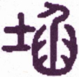
▲ 篆书坎
卦体上《坎》下《坎》，是上下皆水也。八纯皆上下一体，独《坎》加“习”。“习”有二义：一谓便习，即“学而时习之”之习，谓坎险难涉，必须便习谙练，方可以济；一谓重习，谓上下皆《坎》，是取重叠之义。《坎》中一画即《乾》阳，《乾》阳刚正，诚实居中，故曰“有孚”。一阳在中，中即心也，元阳开通，故曰“维心亨”。“心亨”者，亦即从《乾》“元亨”来也。以此行险，则孚而能格，亨无不通，故曰“行有尚”也。
《彖传》曰：习坎，重险也。水流而不盈，行险而不失其信，维心亨，乃以刚中也。行有尚，往有功也。天险不可升也，地险山川丘陵也，王公设险以守其国，险之时用大矣哉！
“习坎”，习，重也；《坎》，险也，是险不一险，故曰“重险”。习字从羽，从白，注谓鸟数飞也。盖鸟以数飞，能避罗网之险；故《坎》曰“习坎”，亦取其可以避险也。《坎》为水，水流不息，随流随进，而未尝见其盈也。水随月为盈虚，朝潮夕泛，涨落有常，而未尝失其时也。二五两爻，体《乾》皆中实，中者，心也，惟中实乃“有孚”，亦惟中实乃能“亨”。心之所以亨者，以其刚之在中也，中有刚则心泰，心泰则神旺，神旺则一往直前，而所在有功，其行是可嘉尚也。大凡天下之事，处顺则易，履逆则难。孔子论仁，征之于造次颠沛，《中庸》论道，极之于夷狄患难，艰险之地，非有定识定力者不敢行也，若鲁莽而行之，亦鲜见其有功者哉。八卦之德，美而多吉，惟《坎》为险多凶。人皆以险为可惧，而《坎》乃以险而为用，天以险而成其高明，地以险而成其博厚，国以险而成其强大。险之为险，其用甚大，知险之为用，则可知《坎》之为用矣。
以此卦拟人事，《彖传》曰“重险”，以见险之不一险也。卦体上下虚而中实，知虚者皆水，而中实为土，亦虚处为陷，而中实为孚。孚者何？以心相格也。人能以心相格，其心自然亨通，所谓忠信可涉波涛者，此也。在初经涉险者，往往临险而却步，然万里风帆，贾客频行而不惧，千重绝壑，樵夫徒步而忘危，何也？以其习熟也。《坎》之一卦，所以加一“习”字，正以勉人当习验之而无忽焉。水之流时往时来，不愆期候，是其信也；水之行，注浍注川，自然流通，是其功也。人皆以水为阴柔，不知水有刚中之德，惟其刚中，是以能亨。人若狃于阴柔，必致迂滞不通，其奚以能亨乎？亦奚以能行乎？知其刚中，而习练以行之，则视险如夷，而所往有功，询可嘉尚矣。盖观夫天而悬邈高远，其险不可登也；观夫地而深山大泽，其险有各在也；观夫国而下阳大岘，其险有必争也。谓险可用，而险亦有时不可用，非险之不可用也，亦在用之得其时耳，故不曰险之用大，而曰“险之时用大矣哉”。
以此卦拟国家，《坎》卦二阳四阴，二五君臣之位，皆陷于二阴之险中，朝政紊乱，民志嚣张，加以气候失节，谷麦不登，正值天时人事之穷，因之以成坎险之世也。内卦初爻，为《坎》之始，是国家初值其险，失道则凶矣。三爻是一险未平，一险又来，国家之势几危矣。二爻虽秉阳刚之德，而力求济险，无如两《坎》相接，陷溺已深，所得亦小矣。外卦四爻，以阴居阴，处重险多惧之地，樽簋之二，以象其重累，是国家危急存亡之际也。上六与初爻，相为首尾，初为险之始，上为险之终，初犹得曰昧于未经，上则狎以为常矣，不可以理论也。九五为卦之主，阳刚独揽，与九二相应，九二能操心虑患，夙夜靖共，辅佐九五之君，拨天下之乱，靖国家之难，上下交孚，治道乃亨，往而有功，乌容没也哉！圣人于《坎》而勉以“习”，于险而惕以“重”，于“流而不盈”者言其深，于行而有信者验其诚，而坎险乃可济矣。君子之所以“常德行，习教事”者，胥是道也。盖天之所以高，地之所以厚，王公之所以立国，皆险之用也。如《坎》、睽、蹇，皆非美事，圣人有时而用之，故皆赞叹之曰“时用大矣哉”，此义不可不知也。
通观此卦，是进固险，退亦险，是谓重险，困上加困之象也。《彖》说君子之难，爻说小人之难，以示出《坎》之道者也。夫处险而动心忍性者，君子之《坎》也；值险而坠节陨身者，小人之《坎》也。人生值世，莫不有坎，而所以防险者，要自有道也。故《彖》辞首勉之曰“习”，继惕之曰“孚”，而终美之曰“亨”。盖渭水之为物，流而顺行，则无涨溢之患，塞而滞，则必溢，故行险者谨慎恐惧，不失其信，可终得其成功也。察六爻之情，同处困难，各有吉凶。初六为履险之始，习而未精，遂陷深坑，外无应援，不克自济，是以凶也。九二刚中，求而有得，则险而不险，险在其中，即亨在其中也，是以日“未出中也”。六三两《坎》相接，入险既深，阴柔不正，未能出险，是以“终无功”也。六四虽抱忠贞之心，而局量狭隘，自乏救险之才，唯祈鬼神，从九五之阳，而得出险者也，是以曰“刚柔际也”。九五阳刚中正，高居尊位，为《坎》体之主，《象传》所谓“水流而不盈”者，惟五当之。水德在平，平则险不为险，是以曰“无咎”也。上六居《坎》之极，《坎》为狱，此为陷险而入于狱也。初之失道，尚可宥焉，终之失道，不可宥也。惩以“三岁”，期其悔复，是以三岁凶也。盖人之涉世，如水流坎，无时无险厄，无地无缺陷，庸人处之，遂步成荆棘，君子履之，畏途亦康衢。何者？君子习惯，庸人生疏，此《坎》之所以贵习也。
《大象》曰：水洊至，习坎，君子以常德行，习教事。
《坎》为水，水性本至平，可为物之准则也，故《坎》为通，为平，为中实之信。“洊”，重袭也，雷曰浪者，声相续也，水曰洊者，流相续也。“常”者谓终始如一，“习”者谓一再不已。君子法水之洊，而日新其德，法《坎》之习，而不倦其教，德以有常而不改，教以练习而不辍。内卦三爻属己，所以修己也；外卦三爻属人，所以教人也。修其既成，勉其未成，君子济险之功在是焉。
【占】 问战征：有敌兵频番侵袭之势，宜时刻防备。
○ 问功名：有逐步升腾之象。
○ 问营商：财如流水，源源而来，可久可大，商运亨通。
○ 问家宅：此宅外北首，必有坑陷，泉流不息。《坎》辰在子，上值虚危，危主盖屋，恐邻居有营造之象。
○ 问疾病：防是水泻之症，历久未愈，宜祷，取“樽酒簋贰”之义。
○ 问婚嫁：必是亲上加亲，有重复联亲之象。
○ 问六甲：生男。
初六：习坎，入于坎窞 ［136］ ，凶。
《象传》曰：习坎入坎，失道凶也。
“习”者，重复惯习之义；“窞”者，《坎》中小穴也。初爻为卦之始，即为《坎》之始也。《列子》曰，“人有滨河而居者，习于水，勇于泅”，所谓善泅者不溺也。初爻习而未善，是以不能出《坎》，而反入于窞。窞为小《坎》，小《坎》则陷愈深，而出愈难，故凶。《象》曰“习坎入坎”，谓习坎者本欲出《坎》，习坎而入坎，非习坎误之，在习坎之失道者误之耳，故曰“失道凶也”。
【占】 问战征：有设计埋伏，因之反坠敌计，凶道也。
○ 问功名：有侥幸求名，反致遭辱，是无益而有损也。
○ 问营商：因贩货失利，转运他处，货到，市面更小，不能脱售。
○ 问疾病：求医疗疾，医失其道，其病益危。
○ 问婚姻：恐堕骗局，必非明媒正娶也。
○ 问六甲：防生产有难。
【例】 友人某来请占气运，筮得《坎》之《节》。
断曰：《坎》为水，为大川，为沟渎，皆水流污下之地。初爻当卦之始，居卦之下，是初入水处，不知其深几重也。兹卜气运而得此爻，论人生命运，平顺兴旺者吉，缺陷穷厄者凶。《坎》者陷也，可见目下不利，宜以道自守，若失道妄动，恐入陷益深，凶难言矣。凡卦爻一爻为一年，必待五爻，曰“坎不盈，祗既平”，可无咎矣。其后果如所占。
九二：坎有险，求小得。
《象传》曰：求小得，未出中也。
上《坎》为穴，下《坎》为险，“有险”者，谓前后左右皆险地也。此爻以一阳陷二阴之中，又无应援，固不能遽出坎险，惟其有刚中之德，忍耐困守，纵不及五之不盈而平，可以免咎，而求之不已，亦不至毫无一得，故曰“求小得”，盖虽小亦得也。《象》曰“未出中也”，可知亨在中矣。
【占】 问战征：可暗通隧道，以袭敌营，虽未大捷，必有小胜。
○ 问营商：小利可谋。
○ 问功名：小试必利。
○ 问家宅：宅外恐有河岸崩颓，宜加修治。
○ 问疾病：必是疮疡等症，延医治之，当得小效，难期全愈。
○ 问六甲：得男。
【例】 有东京某富商甲干，来请占其店气运，筮得《坎》之《比》。
断曰：九二以阳居阴，位得中正，为内卦之主，与五相应，五位居尊，必是五为主店，二为分店也。今占得《坎》二爻，曰“坎有险”，必两店共际险难，一时商运衰微，动遭损耗，非人力之咎，是气运使然也。足下既代主人而占，必能尽心于店事，惟当至正至中，不涉偏私，竭力图谋，虽无大利，必有小得也。
后果如所占。
六三：来之坎坎，险且枕。入于坎窞，勿用。
《象传》曰：来之坎坎，终无功也。
此爻以阴居阳，不中不正，才弱而志强，在二《坎》之间，而一无应援，欲越险而前行，有上卦之《坎》阻止，欲避险而他往，有下卦之《坎》横来，是本位既不得安居，而前后左右，进退动止，亦复无地非《坎》，故曰“来之坎坎”。“枕”，止也，安也，谓既履其险，且为休止而暂息焉，虽一时未能出险，亦不至入而益深。若勿用安息，而强力争，必致入于《坎》窞，而不可救矣。“窞”，《说文》曰，“坎中更有坎也”；虞曰，“坎中小穴”。初三两爻皆阴，空穴，故皆称窞。《象》曰“终无功也”，谓自来豪杰，皆自困苦中磨砺而成，坎险足以厄人，坎险实足以成人，若遇险而徒晏息偷安，是失险之时用矣，故曰“终无功也”。又按“险且枕”，费易古文作“检且沉”，检，检押，谓筑堤防水，为之检押；沉，川祭名。《礼记》曰：“祭川沉，凡沉辜，谓碟牲以祭川也。”夫治水者，惟在顺其性以导之，若但用检押，则水势雍而愈猛，决堤崩岸，所伤益多，虽沉牲以祭，究何济乎？故爻戒以“勿用”，《传》释以“无功”。此又一说也，似较训枕谓安谓止者，其义尤精。
【占】 问战征：象为营垒四面，皆临坎险，进退两难，宜枕戈暂息，以待应援。
○ 问营商：观爻象为海运生意；舟行且阻，宜入奥暂守。
○ 问功名：观象，是值万般困厄，为饿肌劳肤之时也，目下无功，晚成可望。
○ 问家宅：此宅水法错乱，杀气多凶，屋北有一《坎》窞，急宜填满。
○ 问婚嫁：《坎》为男，是为男家求婚也，爻曰“勿用”，必不成也。
○ 问六甲：生男。
【例】 某氏来请占气运，筮得《坎》之《井》。
断曰：《坎》者，险也，险者，难也。爻曰“来之坎坎”，是坎险重复，困苦缠绵之象。占问气运而得此爻，显见前进为险，后退亦险，一时终难解脱厄运。若妄用妄动，必致陷入深窞，不可得救。宜困穷自守，以待后运。
【例】 明治三十年占外国爻际，筮得《坎》之《井》。
断曰：此卦上下皆水，《坎》体一阳，陷于二阴，是为《坎》之又《坎》，困难重复之象。今占外国爻际而得此爻，我日本滨海之邦，东西南北，环抱重洋，舟舶往来，岛屿重叠，所在皆坎险之地，设险守国，固其宜也。论外国交际，自海禁一开，”西夷北狄海舶时通，“来之坎坎”，是其象也。际此时艰，惟当严修内防，枕戈以待，若妄用干戈，则愈生艰难，故曰“入于坎窞”。《象》曰，“来之坎坎，终无功也”，谓坎险频来，内防不暇，而妄开外衅，何能见功哉！
果哉！是年政府从事海陆军之扩张，筑造炮台，正合爻象。
六四：樽酒簋 ［137］ 贰 ［138］ ，用缶 ［139］ ，纳约自牖 ［140］ ，终无咎。
《象传》曰：樽酒簋贰，刚柔际也。
“樽”，酒尊也；“簋”，黍稷器也，“贰”，副也。礼有副尊，按《周礼》大祭三二，中祭再二，小祭一二，谓就三酒之尊而益之也。缶，即谓之盎，瓦器也。又六四辰在丑，上值斗，可以斟之，象尊，上又有建星，形如簋，建星上有弁星，形如簋，故六四皆取其象。“约”俭也；“贰”，以致其礼之隆，缶，以昭其用之俭。“牖”，室中通明之处，《坎》为纳，故曰纳。《诗·采苹》“于以奠之，宗室牖下”，“纳约自牖”，义取此耳。六四以阴处阴，本易有咎，乃四爻能以“樽酒簋贰”，约而自牖纳之，可以馐王公，可以享宗庙，故终得“无咎”。《象》曰“刚柔际也”，谓上下两卦二刚曰柔之际，两《坎》相重，樽簋之贰，以象其重也。谓处刚柔相交，能以樽簋自牖纳之，亦足昭其诚也，故曰“无咎”。
【占】 问战征：行军以粮饷为重，所谓足兵，首在足食。“纳约自牖”云者，牖非纳食之地，犹言潜地运饷，以防敌兵劫夺也。
○ 问营商：《坎》为酒，想是造酒之业。
○ 问功名：想是春风得意，燕乐嘉宾，可喜可贺。
○ 问疾病：宜祷。
○ 问婚姻：吉。
【例】 缙绅某来，请占气运，筮得《坎》之《困》。
断曰：四爻处多惧之地，坎险重重，本易招咎。今贵显占气运，而得此爻，爻曰“樽酒簋贰，用缶，纳约自牖”，据此可知贵显食用俭约，以礼自守，固无咎也。且四与五比，四以阴居阴，五以阳居阳，四臣也，五君也，《象》曰“刚柔际”，正见君臣相得也。
【例】 明治三十年，占我国与韩国交际，筮得《坎》之《困》。
断曰：韩邦僻处东海，国小而弱，地当海道之要，为外交各国所窥伺。今见重险，国运至此，是险之又险者也。今占与我国交际，而得《坎》之四爻，按《周易郑苟义》云，六四象大臣，出会诸侯，四承九五，天子大臣之象。“樽酒簋贰”，主国飨之之礼也。现今各国交际，皆属在使臣，使臣燕飨亦礼之常，而惟“纳约自牖”一言，颇有可疑。盖燕飨之礼，献之于筵，断不纳之自牖。四居外卦，或者韩君出避于外，而就食于使臣之馆乎？“纳约自牖”，盖潜送食品之谓也。曰“终无咎”，谓一时虽遭其难，而终必复位。此年韩王果有出投俄国使馆之事。
九五：坎不盈，祗既平，无咎。
《象曰》：坎不盈，中未大也。
九五以阳居阳，位得中正，为《坎》之主，《彖传》所谓“水流而不盈”，惟五足以当之。水之德在平，平则险不为险也。“祗既平”者，谓适得其平。《坎》穴也，穴中之水，不盈则平，盈则泛滥横流，便有冲决之患。凡天下之事，多以盈满招灾，水亦如是，惟其不盈而平，是以“无咎”。《象》曰“中未大也”，大犹满也，惟其《坎》流不大，斯得平稳无险，否则大水为灾，水亦何取夫大裁！故曰“中未大也”。坎险危地，本非美也，五之“不盈”，虽为善处险者，亦但云“无咎”而已，未足称吉也。
【占】 问战征：为将之道，最忌恃功而骄，以致众心不平，取败之道也，虽孙吴复起，不能为功。
○ 问营商：不贪一时意外之利，必酌量物价之平，以计久远，是善贾者也。
○ 问功名：名位不大。
○ 问时运：谦受益，满招损，终身诵之可也。
○ 问家宅：宅外有小地，水流清浅，又有一平坡，风景颇好，无咎。
○ 问婚姻：两姓门户相当，吉。
【例】 相识商人某来，请占气运，筮得《坎》之《师》。
断曰：《坎》为困难之卦，今得第五爻，则从来辛苦，渐得平和，而后可交盛运，故曰“坎不盈，祗既平，无咎”。后果如此占。
上六：系用徽 ［141］ 纆 ［142］ ，寘 ［143］ 于丛棘，三岁不得，凶。
《象传》曰：上六失道，凶三岁也。
上爻以阴居阴，当坎险之终，而不知悔悟也。初之失道，犹得曰未经，上之失道，狎之以为常矣，不可以理喻，惟有以法绳之。《坎》为罪，为狱，为丛棘。“徽纆”。绳索也，“丛棘”，狱墙也，系之以徽纆，置之于丛棘，所以治其罪而使之悔也。《坎》为三岁，故禁锢三年，律所谓“上罪三年而舍”也。三年而悔过迁善，斯得反其正矣；三年而不改，是将终身失道矣，故《象》曰“失道凶也”。圣人之惩恶也，始则严以绳之，终必宽以宥之，治至久而不俊，亦未以之何也，已矣。此可知圣人未尝轻弃人也。
【占】 问战征：有劳师远征，久役不归之虑。
○ 问营商：想是采办蚕丝生意，三年之后，方可获利。
○ 问功名：恐有意外之灾，不特功名不就，防有牢狱之罪，凶。
○ 问婚姻：红丝系足，婚姻有前定也，但良缘未到，须待三年后可就。
○ 问六甲：得子，须迟。
○ 问家宅：此宅不知缘何荒废，墙围遍生藤蔓，宜加修葺。前住者不利，后住者吉。
【例】 明治十七年十月，崎玉县秩父郡暴徒蜂起，势甚猖獗，将延侵各郡，予深忧之。偶一友人来，请占结局如何，筮得《坎》之《涣》。
断曰：爻象明示以教化之不从，治之以刑法也。拘以徽缰，锢以丛棘，是治罪之律也。当时国家效法西欧，改革旧政，其间梗之徒，窃苦新政不便，惑众蜂起，侵掠各郡，此皆无赖之民，刁不畏法，自陷于坎险而罔知顾忌也。国家不得已，执其巨魁，置之刑狱之间，不遽加以显戮，囚之三岁，俾知悔也，三岁而不改，凶莫大焉。其后政府处分，不外此占之意。
【例】 我国战胜清国之后，俄、法、德三国同盟，假托保护清国，迫我还付辽东，后三国因此得假旅顺、山东、云南之地，强设铁道，领收矿山，其所为有与前日之口实大反者。在我国当时，已逆料三国之志，问占一卦，筮得《坎》之《涣》。
断曰：上六为《坎》卦之终，本可过此以出险也；上六又以阴居阴，位在卦外，显见外国有阴谋谲计，出而图事者。逼我还付辽东，非为清也，实三国为自计耳。未几各强借山东、旅顺、云南等要区，设立铁道，此狡计之可明见也。“系以徽纆，寘于丛棘”，譬言其强逼之状。“三岁”者，犹言三国也，谓三国若不遂其欲，必不了事。《象》曰．“上六失道，凶”，“道”，路也，谓三国兴筑铁道，在清明明失其路也，故凶。
30 离为火
《离》卦二阴四阳，上下一体，《离》者，偶象也。奇实阴中，积而成《坎》；偶分阳中，两而为《离》。水资始，火资生，水化气，火化形，故“地二生火”。火者，其象为偶；奇《离》成偶，偶两成《离》，是故善《离》莫如火。火一星也，《离》为万炬，遇物而皆焚；人一心也，《离》为万应，触处而皆通。惟火中虚，虚则能离也。
▲ 篆书离
▲ 篆书离
《坤》二成《离》，阴虚内合，卦体主柔；柔则近于不正，不正则不亨通，故利在行正，乃得亨通，是以“亨”在“利贞”之下也。按，他卦皆言“亨利贞”，《离》独先言“利贞”，而后“亨”，盖《离》内柔外刚，不得其正，始虽通，终必塞矣，故利在贞，贞而后乃亨也。“畜牝牛吉”者，《离》为《坤》之子，《坤》为牛，《离》亦为牝牛，牝牛柔顺，得《坤》之性。六爻阴为牝，二五在中，以阳包阴为畜。牝牛不中牺牲之用，利在孳生，故曰“畜”。《离》由《坤》二成，《坤》曰“牝马”，牝马利在行远，故取其贞；《离》曰“牝牛”，牝牛利在生息，故不取其贞也。《坤》资生，《离》为火，火生土，牛土性也，有生息不已之象，故曰“畜牝牛吉”。
《彖传》曰：离，丽也。日月丽乎天，百谷草木丽乎土，重明以丽乎正，乃化成天下。柔丽乎中正，故亨，是以畜牝牛吉也。
《离》卦上下皆火，以取“明两作，离”之象。“离，丽也”，《离》为火，火之为物，有气而无形，著物而显其形。夫物莫不有所丽，“本乎天者亲上”，则丽于天，“本乎地者亲下”，则丽于地。日月之在天，百谷草木之在地，其明象也。“重明”者，重《离》也，《离》以中虚而明，得正明之体，六二为《离》之主爻，五因而重之，与二相附以成其明，故曰“重明以丽乎正”。惟其所丽者正，故得向明而治，化成天下。“柔丽乎中正”，谓六二也，六二以柔处柔，中而又正，得所丽也，故亨。《离》互《巽》《兑》，《兑》辰在酉，上值昴，昴南有星曰天苑，主畜牛马，苑西有刍藁六星，主积草以供牛马之食，故曰“畜牝牛”。牝牛性柔，待人刍牧，其丽无心，无心之丽，正之至也，正故吉。丽夫天地，亨之大，牝牛之畜，亨之小，举小大而丽之，用悉赅矣。
以此卦拟人事，《离》以中虚而成，人心亦中虚，故《离》为火，人心亦为火；《离》取明，人心亦取其明；火本无质，有所丽而焰生，心亦无形，有所丽而神发。是以丽于目则为视，丽于耳则为听，丽于口则为食，丽于身则进退周旋皆是也。人心莫不有丽，然丽道则正，丽欲则邪，丽德则中，丽利则偏，邪而偏者必塞，中且正者乃亨也。由其心之所存，发而为事，则所丽者，皆得其正矣；由一人之心，而及之众人，则天下无不化矣。盖人心虚则灵，灵则明，明则通矣，而其所以虚而能灵，在得乎柔之正耳。
《离》之为卦，柔居其中，以二刚包一柔，即以二刚畜一柔。凡物性之柔者惟牛，牝牛则柔之又柔也，最为易畜。《离》以二画得《坤》柔，故《坤》曰“牝马”，《离》曰“牝牛”，义皆取其柔也。是殆教人以牧畜之事也。
以此卦拟国家，上卦属政府，下卦属人民，《离》为火，火炎上，则威德皆出于上；《离》又为孕，孕能育，则下民皆受其养。《离》以二为主位，五为尊位，二五皆阴，上下同体，足见君臣一心，朝野合志。“离者，丽也”，丽于物而始彰，“在天垂象，在地成形”，皆因所丽而显，国家之治象，亦犹是焉。丽于政令，则象魏之悬书也；丽于刑罚，则虎门之读法也。政者正也，丽苟不正，则刑罚不中，而民多怨谤；丽而得正，则政教乃亨，而民皆感化矣。教化之行，由近而远，化及天下，即可由此而赞也。“畜牝牛”者，畜其柔也。牧畜牧民，其道本同，孟子所云“受人之牛羊而为牧之”者，大旨本为牧民者发也。知夫此，而治道得焉矣。
通观此卦，《离》得《坤》二，《坎》得《乾》二，天地之用，莫要于水火。文王《序卦》始《乾》《坤》，中《坎》《离》，以二卦为天地之中气，上承乾《坤》，下启《咸》《恒》者也。盖以《坎》之中实为诚，以《离》之中虚为明，诚明者，《易》理之妙用，圣人之心学也。明之本在身，其用在国家。
《离》者火也，今试以飞萤视烛火，则烛火明也；以烛火视列星，则列星明也；以列星视日月，则日月明也。故一曲之学，犹飞萤之明也；文学之士，犹火烛之明也；贤人之学，犹列星之明也；圣人之学，犹日月之明也。圣人之明，其存也无瑕，其运也无间，明之至也。夫明由虚生，中实者必暗而无光；明以柔著，过刚者必发而遂灭。
《离》之卦，中虚而柔，柔得其正，圣人以火食化天下，而天下化之，《离》之用正，《离》之道亨矣。就六爻而推论之，初爻为始，如火之始燃也，始宜“敬”，故得“无咎”。二爻居中得位，如日之方中也，《离》色黄，故曰“黄离，元吉”。三爻处内卦之终，其明将没，如日之将夕也，哀乐失常，故凶。此为内三爻也。九四介内外二火之间，火势为炎，上卦多为凶，九四适值其位，故有“突如其来”之祸，“焚”、“死”、“弃”，皆言其凶也。六五得中居尊，为外卦之主，《离》至五，以日言为重光，是大人继明久照时也，忧盛防危，励精图治，是以吉也。上九处明之终，《离》道已成，化及天下矣，其有梗顽不化者，不能不以干戈从事，是以征伐济礼乐之穷也。歼厥魁，舍厥从，所谓王者之师也，有何咎焉！此为外三爻也。统之，《离》之全卦，以二五两偶，内外相应，二得履盛之方，五凛保泰之惧，至中至正，均获其吉。《象》所谓“大人以继明照乎四方”，二五两爻得之矣。
《象》曰：明两作，离。大人以继明照乎四方。
“明两作”者，内外两《离》之象。《离》者日也，然不曰日而曰“明”者，以天无二日也。《离》者六画，重《离》之象。日月之明，终古不忒，大人之明，四方毕照，辨忠邪，知疾苦，烛幽侧，处久长。大人以德言，乃王公之称，有与天地合德，与日月合明者也。“继明”云者，内卦之《离》，继以外卦之《离》，即“明两作，离”之义也。明之功不继，则有时而昏，故必如《大学》之称“明明德”，《汤盘》之云“日日新”，可以向明出治，光被四方也。
【占】 问战征：克敌者宜用火攻，防敌者亦宜备火攻，“两作”者，恐前后一时俱焚。
○ 问营商：想营业定是近火，或运办硫黄，或创设电火，或制造火柴等业，皆利。
○ 问功名：《离》为目，可有榜眼之兆。
○ 问家宅：此屋必系新造，前后开通，窗户生明，屋外四围空阔，是巨室贵人之宅也，吉。
○ 问婚姻：此非原配，必是继妻；夫家定属贵室，非寻常百姓之偶也。
○ 问六甲：生女。
○ 问疾病：热势甚重，恐一两日内即防神魂离散。
《象传》曰：履错之敬，以辟咎也。
初爻为内卦之始，如日之始出，黎明乍起，为作事谋始之时也。“履”，践履也，“错然”者，谓应酬交错也。当至纷至叠来，而不以敬将之，必致动辄得咎矣。《履》卦曰“履虎尾”，履而知惧，故曰“吉”；此卦曰“履错然”，履而能敬，故“无咎”，其履同也。夫祸福每兆于几微，始而能谨，斯终必无祸，所谓君子敬而无失，得者得此旨也。《象》曰“履错之敬，以避咎也”，夫人以身接物，不必居功，最宜避咎，避之之道，惟在居敬而已矣。
【占】 问战征：初爻为始，是三军始行，旗辙交错之时也。“敬”者，即所谓临事而惧之意。战，危事也，慎重持之，或可免咎也。或曰邪行谓错，宜从横路进兵。
○ 问商业：必是新立之业。初九爻辰在子，北方属水，卦位居南属火，想是南北生意。一时难许大利，要可无咎。
○ 问功名：《诗》云“他山之石，可以攻玉”，盖言得助而成也。
○ 问家宅：《履》卦云，“履道坦坦，幽人贞吉”，是宅必在大道之旁。吉。
○ 问六甲：生女。
【例】 友人某来请占气运，筮得《离》之《旅》。
断曰：《离》者，火也，火之性炎炎而上，其功在明，其用足以取暖，又足以烹调，是人世不可一日无者也。以人身配之，火为心魂，有心魂乃有知觉，有知觉乃可谋为万事。今占得初爻，知必为谋事伊始。然火之为功甚大，火之为祸亦甚烈，当其始燃，最宜谨慎小心，苟一不慎，初与四应，延及四爻，则“突如其来”，咎莫大焉，故戒之曰“敬之无咎”。足下占得此爻，宜知所畏惧焉。凡爻象一爻为一年，三年后正当四爻，尤宜谨慎，至四年则吉。
六二：黄离，元吉。
《象传》曰：黄离，元吉，得中道也。
二爻以阴居阴，为《坤》二成卦之主，位处中正，《彖传》所谓“柔丽于中正”者，即指二爻也。《离》为黄，故曰“黄离”，黄者中色，《离》者文明，居中而处文明，是以“元吉”也。《象》曰“得中道也”，《离》卦六爻，惟二爻以一柔居二刚之中，中而且正，《象》曰“得中”，不言正而正在是焉。
【占】 问战征：《离》二变《大有》，《大有》，《象传》曰“大车以载，积中不败也”。“大车”，谓兵车；黄，中之色也；“积中”者，谓中营军粮充实；“不败”者，谓兵士勇健，得以获胜也。故吉。
○ 问营商：《离》属南方之卦，经营利在南方；黄为土，土生木，又利在土木。
○ 问功名：《离》位在午，上值文昌，有文明之象，功名必显。
○ 问家宅：《离》为火，土色黄，火之子，喻言其家得有令子，能振起家声。吉。
○ 问婚姻：二爻以阴居阴，位得中正，主夫妇顺从，佳偶也。吉。
○ 问疾病：必是内火郁结中焦之症，宜凉解之。无咎。
○ 问六甲：生女。
【例】 某来请占某贵显，筮得《离》之《大有》。
断曰：《离》为火，又为日，得其柔暖之气，自足嘘枯回生，有煦育万物之象。今占得六二，二爻与五相应，五为尊位，知某贵显辅翼至尊，君臣合德。《离》有文明之德，黄属中央之色，知必能握中图治，化启文明也，故曰“黄离元吉”。
九三：日昃 ［148］ 之离，不鼓缶而歌，则大耋 ［149］ 之嗟。凶。
《象传》曰：日昃之离，何可久也！
九三以阳处阳，是由明入晦之象，故曰“日昃”，昃者，日之将倾也。“缶”，即盎，大腹而敛口，《离》卦上下奇而中偶，形似缶，故象取缶。《坎》曰“用缶”，《坎》中实，则用以盛酒；《离》中虚，则鼓以节乐。“不鼓缶而歌”，必歌无节也。《离》互《兑》，《兑》属正西，日出东入西，日薄西山，谓衰年暮景，故象取“大耋”。八十曰耋，三爻居二卦之中，犹年在半百，未可云大耋也。“嗟”，悲叹声，谓未老而叹其老也。其歌也，乐失其节，其嗟也，哀失其常，哀乐无时，致神魂颠倒，寿命不永矣，是以凶也。《象传》曰“何可久也”，谓若此之人，忽歌忽嗟，乃天夺其魄也，安能久乎？
【占】 问战征：“日昃”，日将夕也。军中长歌浩叹，皆失纪律，不吉之兆，尤防敌兵夜袭。
○ 问营商：《周礼》地官司市，“大市日昃而市”，谓大市交易繁多，至日昃始集市。爻曰“日昃之离”，是日昃后而散也。市区扰杂，或歌或嗟，哀乐无度，必伤正业，宜戒。
○ 问功名：恐老大无成，徒自悲耳。
○ 问婚姻：鼓缶而歌，难望偕老，凶。
○ 问六甲：生女，难育。
【例】 友人某来曰：余将娶某女，请占吉凶。筮得《离》之《噬嗑》。
断曰：爻辞曰，“日昃之离”，《离》，离散也，“日昃之离”，谓婚后而复离也。“鼓缶而歌”，惮亡也；不鼓而歌，非惮亡，必生离，“大耋之嗟”，是叹其不得偕老也。此婚不成为上，成则亦必离散，不吉之兆。
后友人不信此占，媒娶成婚，未几因家门不和，又复离散，果如所占云云。
【例】 明治三十年，占我国与法国交际，筮得《离》之《噬嗑》。
断曰：《离》为甲，为刀，为矢，皆主战兵器也；《离》亦为火，又足备火炮之用。今占法国交际，而得三爻，是令我急备兵甲战具也。爻辞曰“日昃之离”，“日昃”者，日将西倾，可见西土运旺之时。“不鼓缶而歌，则大耋之嗟”，谓不当歌而歌，不当嗟而嗟，犹言措置失时也。善谋国者，当及时修备，固不可自耽安逸，亦不必自示衰弱。睦邻修好，以保永图，斯为善也。
九四：突如其来如，焚 ［150］ 如，死如，弃 ［151］ 如。
《象传》曰：突如其来如，无所容也。
“突如其来如”者，谓刚暴之祸，不可测度；“焚如”者，谓如烈火之焚物；“死如，弃如”者，谓其身灭亡，其名亦遂废弃。四爻处上下卦之间，下卦之火将熄，上卦之火又炽，火炎于上，其势尤烈。“突”，杨子《方言》，“江湘人谓卒相见曰突”，“突如其来”，是骤来而不及防也。“焚如”，烧其庐；“死如”，毁其身；“弃如”，举之而委诸沟壑也。“焚如”，《离》火本象；四动体《艮》，《艮》为鬼冥门，故曰“死如”；又互《兑》，《兑》刑人，刑人于市，与个弃之，故曰“弃如”。焚而死，死而弃，其势相连，其祸甚凶，以九四在三火相传之际，是以凶焰如此。《象传》曰“无所容也”，谓火焰逼近，无可容身也。四与初应，初之火其咎可避，四之火猛，屋毁人亡，无地可容矣。或曰突谓灶突，《汉书》所云“其灶直突”之突。“突如其来”者，所谓祭神如神在，恍惚而见其来也。“焚如，弃如”者，谓灶神察其为恶，而降兹凶也。此又一说也。
【占】 问战征：有营垒被焚，枪炮暴烈之祸，来势汹涌，紧官慎防。
○ 问营商：有人财两亡之祸，宜藏身退避，或可免也。
○ 问功名：有唾手可得之势，但位名愈重，得祸尤烈，不如隐退。
○ 问家宅：旧说以“突”为不孝子，此家必生逆子。“焚”、“死”、“弃”，皆言逆子之罪也。
○ 问婚姻：四动体《艮》，《艮》为鬼冥门，又《离》互《兑》，《兑》为刑人，此婚大不吉利。
○ 问六甲：生女，必不育。
【例】 明治二十三年春，友人某来，请占本年气运。
断曰：九四在上下二火之间，下火将熄，上火复燃，火炎上，故《离》卦以四爻为最凶。今占气运，而得四爻，四爻以阳处阴，外刚内柔，位不中正。主有阴险邪僻之徒，拨弄其间。初若不觉，及其势焰一炽，“突如其来”，不特祸延家室，而身肌发肤，并受其殃，如火之燎原，有不可扑灭者矣，谓之“焚如，死如，弃如”。足下宜谨防小人，毋为饲犬而啮手也。
某氏素性柔弱，不甚介意，委用亲族少年，不料妄作妄为，既凶且毒，某氏家产，因人倾败，祸又未已，某氏始为悔悟，亦已晚矣。
六五：出涕 ［152］ 沱 ［153］ 若，戚 ［154］ 嗟若，吉。
《象传》曰，六五之吉，离王公也。
六五为外卦之主，得中居尊，与二相应，《象传》所谓大人继明久照，即指五爻也。《离》为目，自目出者曰涕，故曰“出涕沱若”。又《离》互《兑》为口，嗟是口之喑声，故曰“戚嗟若”。所谓“若”者，是未当“出涕”而有若“出涕”，未当“戚嗟”而有若“戚嗟”，盖形容忧伤之情状也。九三乐尽悲来，“大耋之嗟”，则为凶兆。九五忧盛虑危，所谓“先天下之忧而忧，后天下之乐而乐”，故吉。《象传》曰“《离》五公也”，九五为王公之位，故云。
【占】 问战征：据爻辞“沱若”“嗟若”，有临事而惧之意。战危事也，能惧则能谋，能谋则可以制胜矣，故吉。
○ 问营商：此经营必是王家商务公业，非下民私计也。故曰“离王公也”。其业亦必由辛苦艰难而成。
○ 问功名：位至宰辅，极贵极显，然一身忧劳倍甚，如武侯之鞠躬尽瘁，乃吉。
○ 问婚姻：此姻事极贵，然有先号咷而后笑之象。
○ 问六甲：生女，防难产，终吉。
【例】 占某豪商时运，筮得《离》之《同人》。
断曰：五居尊位，在国为一国之君，在家为一家之主，在乡为一乡之望也。爻辞所云“出涕沱若，戚嗟若”，谓能先事预谋，防危虑盛，百计图维，以期万全者，此非老成练达者不能也。足下占得此爻，可知足下历尝艰苦，在平时悲泣号叹之状，不知若何哀切者；亦由此继明之德，足以察识事机，而能保守家业，不为亲族少年所得欺瞒也。故吉。
上九：王用出征，有嘉折首，获匪其丑 ［155］ ，无咎。
《象传》曰：王用出征，以正邦也。
“王”者指六五，“用者”，指上九也。《离》为兵戈，故用以“出征”。“首”者首恶，“丑”者类也。“嘉”者，赏其功也；所嘉者，在折其魁首，而不及丑类，《书》所谓“歼厥渠魁，胁从罔治”者是也。九三居下卦之上，与上为敌，不顺王化，残害民生，上九于是奉命出师，以除天下之害，获其首恶，诛而戮之，其余党类，皆从赦免。此诚吊民伐罪，王者之师，复何咎焉！《象传》曰：“以正邦也”，谓如汤之征葛伯，文王之伐昆夷，惟在戡乱以安邦，夫岂好为穷兵哉！
【占】 问战征：观爻辞已明示矣。王者之师，不妄杀人，斯道得焉矣。
○ 问营商：贩售货物，宜选取上等佳品，不取低劣，乃可获利。
○ 问功名：必膺首选，吉。
○ 问疾病：“折”，夭折也，不利。
○ 问六甲：生女。
【例】 明治七年三月，佐贺乱，朝廷将发师征讨，有陆军大佐某，同中佐某来，谓曰：今将出师，请为一占。筮得《离》之《丰》。
断曰：爻辞所云“王用出征”，适合今日之事也。在佐贺乱党兴叛，其中必有主谋，即所谓“魁首”，是乃乱之首，罪之魁也，罪在不赦；一时响应而起，皆胁从之徒，是丑类也。今以佐贺启叛，命师往征，在我皇上神机庙算，素以不嗜杀人为心，必将布告天下，谓构兵倡乱，罪在一人，寡人誓必取而戮之，余无所问，有能擒获渠魁者必膺上赏，与爻辞云“有嘉折首，获匪其丑”，如出一辙焉。按上与三相应，上为王师，敌必属三，三爻曰：“日昃之离，何可久也”，知此番行军，定卜马到功成，不数旬而戡定矣。
后果未匝月，而渠丑受诛，佐贺遂平。
注 释
［1］ 乾：qián，从乙，倝声，乙，像植物屈曲生长的样子，本意为上出，植物由地里向地面冒出。六十四卦中用来象征天、阳、日、君、父、夫、圆、玉、金、冰、寒、马、赤色、快速、快车、不知疲倦等。刚健，健行不息，善于行走，到处奔波，不知辛苦，不知疲劳，广大包容，万物姿始，内外皆强，表里如一，包容万物，不偏不倚，生机勃勃，休养生息。
［2］ 义：文中指义字的繁体“義”。
［3］ 六爻之位：六爻之位的类象分类
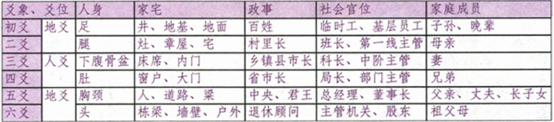
［4］ 此爻变则为《姤》：指乾卦的初爻阳爻变成阴爻，由乾为天 变为天风姤 。后文中其他爻变均为此意，注略。
［5］ 筮得《乾》之《姤》：指得到的卦象为乾为天 一爻动，变为天风姤 。后占例类似，注略。
［6］ 见：xiàn，見，会意，甲骨文字形，本意为看见，看到。通“现”，出现，发现、显露。还读jiàn，四声件，看见、看到、引见、求见、拜见、接见、召见、见解、见识、介绍、引见。
［7］ 惕：tì，有“敬”的意思，小心谨慎、惊动、急速、快速、忧伤、忧愁。
［8］ 咎：jiù，会意，从人，从各，表示相违背，违背人的心愿，人各不相同，彼此容易发生矛盾冲突，本意为灾祸，灾殃。过失，罪责，咎有应得，引咎自责；责备，处分，既往不咎。
［9］ 互卦：去除初爻和上爻，以中间四爻分作两卦，分为下互和上互。以地天泰 为例，下卦乾卦的互卦为兑☱卦，上卦坤的互卦为震☳卦。
［10］ 毕：二十八宿之一。我国古代天文学家把天空中可见的星分成二十八组，叫做二十八宿，东西南北四方各七宿。东方青龙七宿是角、亢、氏（dī）、房、心、尾、箕；北方玄武七宿是斗、牛、女、虚、危、室、壁；西方白虎七宿是奎、娄、胃、昴（mǎo）、毕、觜（zī）、参（shēn）；南方朱雀七宿是井、鬼、柳、星、张、翼、轸（zhěn）。
［11］ 咸池：《史记·天宫书》记载“东宫苍龙、南方朱鸟、西宫咸池、北宫玄武。”在这里的不是白虎，而是咸池。而咸池是主五谷的星，主秋季，因五谷是在秋天有收成的，所以就把它放在秋季。但它不是动物，如何能和龙、鸟、龟配成四灵呢？所以以白虎替之。咸池还有一个解释，就是太阳洗浴之所，在《淮南子·天文篇》：“日出于旸谷，浴于咸池，拂于扶桑，是谓晨明”，可见咸池原是羌人视为日出之处，因此“洗浴”之意被命理学引为神煞之一，也就是我们熟悉的桃花煞。咸池其实就是咸水湖，也就是青海湖，青海湖在中原以西故为“西宫咸池”。
［12］ 乾的疾病类象：头面之疾、筋骨疾、肺疾、骨病、寒症、硬化性疾病、老病、急性病、变化异常之病、结肠病、便闭奎结。
［13］ 坤：kūn，繁体作“堃”，代表土地，大地，田野；西南方位；阴柔，阴性的，女性的，老太太，母亲，大腹之人；车，大车；厚，载。
［14］ 牝：pìn，雌性的鸟或兽，与“牡”相对。《离》卦辞有“畜牝牛，吉”。
［15］ 独有《水火既济》而已：是指只有水火既济 一三五为阳爻，二四六为阴爻，阴阳得位。
［16］ 久则难医：在古代占筮中（主要是六爻），把八纯卦（乾兑离震巽坎艮坤）及雷天大壮和天雷无妄视为六冲卦，测病逢六冲，近病必愈，久病则凶。
［17］ 语出自《易·无妄》：“九五，无妄之疾，勿药有喜。”“妄”，妄为。“疾”，小病。“喜”，指病愈。此句意思是说：不妄为却染上了疾病，不用吃药就全愈了。因“九五”之阳刚有抵抗疾病的能力，不用吃药就会好的，以此喻“九五”能够自己改正错误。如求子得此卦说明身体没有病，可以怀孕。
［18］ 春秋时鲁国季平子即位后，对南蒯不加礼遇，南蒯产生了反叛的念头，要在费邑那个地区扯起反旗，得此卦：“黄裳元吉。”南蒯以为大吉利。但信心又不足，找子服惠伯（鲁大夫，孟献子之孙，孟孙氏中分出的一氏）分析此卦。惠伯问南蒯所论何事。南蒯不敢说，让惠伯就卦论卦，就辞论辞。“忠信之事则可，不然必败。”惠伯说，“外强内温，忠之义；和以率贞，信之义。”南蒯问：“在卦象中，如何看出这‘忠’与‘信’？”惠伯说：“《坤》之《比》，而《比》者，外卦为坎为阳，内卦为坤为阴；阳坎主强横，阴坤主温顺。所以说‘外强内温’，忠臣之象。坎为水，坤为土，水土和合而固。所以说‘和以率贞’，守信之象。”惠伯继续说：“《坤》之六五，爻位处中，其辞说‘黄裳，元吉’。‘黄’为土色，土主信；‘黄’居中位，则为忠信。‘裳’，是下身的服饰，必须与上身所穿相配合，共成一体，否则不伦不类。‘元’，是善长仁翁，以利物济人为本。具备这‘黄’、‘裳’、‘元’三德则美善，否则不当为。不是作此‘黄’、‘裳’、‘元’三德的事，筮虽吉，必不吉啊！”南蒯站起身要离开。惠伯对着南蒯的背，大声问：“《易》不可以占险，你究竟为何事？”南蒯一意孤行，终于举起了反叛的旗帜。
［19］ 坤的疾病类象：腹部、肠胃、消化道之疾、饮食停滞、湿重浮肪、皮肤、肌肤病、湿疹、疣、晕病、中气虚弱、劳累疲乏、慢性病、癌症。
［20］ 屯，音zhūn，本义为艰难，引申为聚集的意思。也读tún。
［21］ 象形，甲骨文为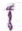 ，象虫形。本义：虫，后作“蛇”。后称代人以外的事物。
［22］ 虚宿：“丘谓之虚。”古代的城邑，往往是丘居的，在城邑毁灭后，丘就改称为墟。虚位于北官的中央，为北方第四宿。虚宿古时也称“天节”。当半夜时虚宿居于南中正是冬至的节令。冬至一阳初生，为新的一年即将开始，如同子时一阳初生意味着新的一天开始一样。
［23］ 枵：xiāo，假借为虚，空虚。
［24］ 假借为“非”，表示否定。下同：《易·比》比之匪人、《易·涣》匪夷所思。
［25］
会意兼形声字， 。从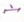
从子，子亦声。在屋内生孩子，体内怀着胎儿。这里可以当怀孕讲。
。从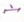
从子，子亦声。在屋内生孩子，体内怀着胎儿。这里可以当怀孕讲。
［26］ 也作“返”。
［27］ 几微、凭借、将近、接近、苗头、危险，也可通“机”
［28］ 蒙：méng，本意指大的女萝草，又叫兔丝，在饲养豕（猪）时，为了防止它逃跑，用巾覆盖眼睛，所以蒙指覆盖、挡盖、遮住的意思。又指欺诈、蒙骗；遭受，继承，承蒙，幼稚，无知的，愚昧的；古时“蒙”mēng，一声，“蒙”méng，二声萌，“蒙”měng三声猛，通用。在此卦中“蒙”代表：蒙昧、朦胧、迷茫、阴暗、遮盖、启发、启蒙、教育、指导、开拓之义，草木在萌芽未壮时期，比喻孩童还在智力未开发之时，虚心向教师长辈请教的态度，欲进欲退、疑惑不前，像大人给小童讲课一样。
［29］ 筮：本意指用蓍草占卜、算卦。蓍，草名，俗称“蚰蜒草”“锯齿草”，李时珍《本草纲目》草部：“蓍乃蒿属，神草也。”古人认为用蓍草占卜非常灵验。
［30］ 娶：qǔ，三声取，把女子娶过来成亲的意思。此卦：“勿用娶女”的娶底下有女字，而《咸》卦与《姤》卦卦辞“勿用取女”，却用了无女的“取”，既然“取”“娶”通用，为何不用同一个字呢？这绝不是《易经》作者的失误，而是有其深远含义的。“娶”应该理解为娶女为妻；而“取”应该理解为取女为玩物，有玩弄的意思。
［31］ 需：xū，须也，需求，需要，等待，停止，不进，等候，期待，待机，隐忍，自重，静心，踌躇，迟疑不定，养精蓄锐，饮食之道；还读nuò，四声诺，通“懦”，懦弱，软弱；还读ruǎn，三声软，软弱，柔弱，柔软。
［32］ 孚：fú，孚字上边是爪，下边是子，表示抓到一个孩子。在上古的战争中，胜利方往往将失败一方的男子全部杀掉，将妇女和孩子抓走，所以孚的本意是指俘获，用作名词，指俘虏。那么就现实社会而言，对于上边的“爪”可理解为公、检、法部门及人员及战胜者，下边的“子”就是俘虏，就是囚犯，所以孚对战胜者来说，是收获，俘获，对犯法的人来说是牢狱。也代表相信，信任，君臣上下相孚。孚是孵的本字，也表示爪子放在代表卵的“子”上边，孵卵。
［33］ 穴：土洞，岩洞，动物或古人类栖身之处，巢穴，可以藏身的洞穴，防空洞，窟窿，缝隙；也指墓穴；人体可以针灸的部位，穴位；在此卦中也指身体的耳、目、鼻、口、眼、阴部、肛门。
［34］ 高岛断易讲究灵活，对爻辞理解也不可局限在某个意思，这里的“入于穴”就是指卦主的儿子沉迷于女色，穴就是指女人身体的“穴”，而上一卦例的“穴”又指的是采矿或入了坟墓。
［35］ 窒：zhì，从穴，至声，洞穴狭小阻塞，故从穴，本意为阻塞，堵塞不通；遏止，抑制；呼吸被阻，窒息而死。
［36］ 逋：bū，逃跑，逃亡；拖延，拖欠。
［37］ 眚：shěng，眚自“生”“目”二字组成，表示眼睛生了病，即眼球上的白膜，眼睛上长白翳；错误，过失。疾苦，灾祸。
［38］ 天弁：石氏中官中的星宿，《开元占经》中的描述：天弁星占二十四：石氏曰：“天弁九星，在建星北。”（西星入斗六度太，去极九十度太，在黄道内一十七度太。）石氏曰：“天弁九星，在天市垣外，天下市官之长也，主市中列肆诸价入在市籍者，商税还，方持物来，皆当贵其租税。其星明大，由市物盛兴；其星不明，则万物衰耗。”《黄帝》曰：“天弁星欲明大，则天下安宁，万物兴隆，珠玉珍物贱；其星不明，天下空虚，万物衰恶，五谷不成，珍物贵。”《乐纬》曰：“弁星，羽也，壬子候之，羽乱恻危，其财匮，百姓枯渴，为旱。”石氏曰：“天弁星主恭俭，明吉；不明凶。”焦延寿曰：“天弁星近建星，若明大动摇，天下有女乐见，人主为害者。”《石氏赞》曰：“天弁九星知市珍，其星明大万物兴。”
［39］ 渝：yú，本意指变污浊；违背，变更。泛滥。通“愉”，地名；还读shū，通“输”，宣泄，发泄。
［40］ 锡：xī，一种金属元素；又借为赐，表示赐给，赏赐；通緆，指细布；姓氏；还读tì，通鬄，假头发。
［41］ 鞶：pán，用皮革制作的带子，皮革带，小囊，用来盛佩巾等物，束于腰带。
［42］ 师：shī，繁体为“師”，古代军队的编制单位，《周礼·地官》：“二千有五百人为师”，就是2500个人为一师；部队，军队，家人，众也；称某种传授知识技术的人，教师，老师，师父；对和尚的尊称，法师；官名，乐官的称谓，周常称乐官为“师”或“太师”；拜师，学习；仿效，效法；也代表狮子；姓氏。
［43］ 左：zuǒ，古代特指东的方位，江左（江东），山左（山东）；位置在左的，往左，向左；较低的位置或等级，古人常以右为下，以左为上，左青龙右白虎，所以文官一般是左站立，武官右站立，（但根据年代的不同，左右的尊贵卑贱也发生了变化，夏、商、周、晋、春秋战国、南北朝、五代十国、秦、唐、宋、明尊左。汉、元、清、三国时期尊右。）左迁一般指贬官，降职；辅佐，辅助；见外，疏远；偏邪，不正；偏远，偏僻。
［44］ 承：chéng，本意是指用双手捧着，托着，接受，承托，承担，承受，担任，继，继承；还读zhěng，通“拯”，援救，挽救，拯救。
［45］ 比：bǐ，挨着，紧靠；等同，相等，相比，比较，较量；串通，勾结，比拟；动作或事物的连续，频频，屡次；最近，近来，等到；同类或异类之间的对比；所有，每个。
［46］ 它：tuō，小篆字形，像虫形，是由虫字延长尾巴构成，后通“蛇”，古代当蛇意；还读tā，别的，第三人称；非人类的物质都可称“它”，应包括神、佛，或其他教派，特异现象和游魂。原书作“他”。
［47］ 匪：fěi，从“匚”，盛物之器。本意：“篚”的古字，竹器，形似竹箧，古时的竹筐器具；指车马美盛；假借为“非”，表示否定，不、不是，获益匪浅；行为不正的人，土匪，匪徒。
［48］ 畜：xù，畜养，饲养，养育，积蓄，积累，储藏；还读chù，饲养的家禽牲畜，古以马牛羊鸡犬豕为六畜。
［49］ 辐：fú，古代用来捆绑车伏兔与车轴的绳子；有的版本是“舆说輹”；还读fù，车轮中把车毂（gǔ）和车辋（wǎng）连接起来的辐条；车轮的辐条。
［50］ 挛：luán，攣，从手，羉声，互相牵系，牵系不断；连缀。通“孪”，所以也可指双胞胎，孪生，双生，双双。通“恋”，还读liàn，四声，依恋，留恋。
［51］ 望：wàng，甲骨文的望像一个人站在土墩上翘首远看的样子，金文加月字，有望月等待归来的意思；月亮圆满的时候，与太阳遥遥相望，远望，期盼，极目远看；视线之内；期望，盼望，指望，名声；天文学指月亮圆的一天，即阴历十五日，叫望日；祭祀山川；埋怨，怨恨，朝着，至，到；几望：就是月亮几乎圆的前一天，即阴历十四日。
［52］ 履：lǚ，小篆字，从尸，即人，从彳，表示与行走有关，践踩，走过，履历；执行，实行，履行；履在战国以前一般只作动词用，为踏意，而用“屦”（jù）称鞋子，削足适屦，履用“鞋”意是唐以后的事了，如西装革履。
［53］ 咥：dié，咬，啮，咬啮，咥噬（咬食，吞吃），现在还是陕西话中出现率非常高的字之一，意思就是“吃”，常说的就是“咥饭”“咥面”。隆起突出的样子；还读xì，讥笑，咥咥（笑或讥笑的样子）。还读xī，大声笑的样子，咥然（笑的样子）。
［54］ 考：kǎo，本意是指年纪大，老，高寿，父亲，还特指死去的父亲，先考；扣，扣击，敲击；考核，考察。
［55］ 旋：xuán，本意是指士兵的脚随着旗帜的指挥向前后左右转动，旋转，转动；回来，归来，凯旋而归；转过来，掉转；接着，随后，不久。
［56］ 泰：tài，“泰”上三人，下水，意为人们脱离水而在水上，古代水患多，在高处可避水患，于是泰本意为避水患而得平安的意思。通“太”和“汰”。表示程度，通达，通泰，亨通，安泰，幸运，吉祥，稳固，流通，太平，顺利，平安，骄纵，傲慢，逆转，统一，掌握；古代盛酒的器具。山名，泰山，五岳之一。
［57］ 汇：huì，滙、匯，本意是指一种器物，后指河流会合，聚合，同类；茂盛的样子；通“猬”指刺猬。
［58］ 冯：píng，靠垫，靠着，背对着，依靠，凭借；欺凌，侵犯，徒涉，蹚水；通“凭”，扶持，辅佐，凭借，依靠，帮助；侵凌，侵犯；登临；愤恨；满，盛；马疾行的样子；还读féng，指姓氏。
［59］ 遐：xiá，从辵，叚声，本意是指空间远，远，久远，长久，远走，远去。
［60］ 行：xíng，航行，行走，运行，经过，推行；行动，实行，行为；将，将要，快要；还读háng，道路；行，行列；辈分或兄弟姐妹长幼排列次序，排行老大，排行老三等；还读hàng，刚强不脆弱的样子。
［61］ 陂：pō，陂地，倾斜不平整的样子；还读bēi，山坡，斜地，水边，堤岸，蓄水的池塘，依傍，靠近；还读bì，四声必，倾斜的样子。
［62］ 恤：xù，繁体“卹”、“賉”，形声，从心，血声，本意为忧虑。对别人表同情，顾念，体恤，怜悯；救济，周济，抚恤。
［63］ 帝乙，商纣王之父，史称殷高宗。姓子名羡，商王文丁（太丁）之子。文丁死后继位，在位26年，死后由其子辛（即众所周知的纣王）继位。帝乙在位期间，商朝国势已趋于没落。当时，江淮之间的夷族又强盛起来，准备大举进攻商朝。帝乙在位的第九年，出兵征伐岛夷和淮夷，半路上受到孟方（今河南省睢县附近）的截击。帝乙率领诸侯伐讨孟方，得胜。此后帝乙连续南下征伐夷族，得胜而归。正因为商王朝连年征战，虽强大，帝乙仍旧恐惧腹背受敌，毕竟，西北方一直有一支蠢蠢欲动的宿敌——鬼方。此时，西部边界另有一支游牧部族正在崛起，那就是周。帝乙是成功的宗教改革者和政治、经济领袖，此时，他决意培养西周为大商的藩国，以西周之力来抵御鬼方。为了表示诚意，帝乙决定将自己的妹妹嫁给周部落的领袖姬昌做妻子，以示商周世世代代交好。归妹就是帝乙把妹妹嫁给周文王姬昌。
［64］ 否：pǐ，从口，从不，“不”亦兼表字音，坏，邪恶，穷困，不顺；不通，壅塞；通“痞”，病症名；还读fǒu，为本意，不是这样，表示不赞成，不同意，否决，否定，否认，否则；用在疑问句末，表示询问。否是由“不”“口”二字组成，不该吃的食物吃了，造成体内消化不良，阻塞不通；不该喝的喝了，酒精中毒、饮用水中毒，病从口入等；不该说的说了，祸从口出；不该干的干了，也是引起祸患的根源，总之，这都是“不”“口”造成。“否”塞也，闭塞，不通，隔阂，蒙蔽，错误，背叛，差距，危机，崩溃，黑暗。
［65］ 羞：xiū，本意是指进献食品，进献美味，美味食品；羞惭，耻辱，认为羞惭，感到羞惭。
［66］ 畴：chóu，疇，已经耕作的并整治好了的田地；同类，类别；还当“谁”讲。
［67］ 倾：qīng，歪斜，倾覆，倒塌，崩溃，颠覆，倾尽，倒出；压倒，超过，超越，凌驾；倾轧，排挤；倾向，敬佩，倾慕，钦佩；还读qǐng，三声请，不久，顷刻之间。
［68］ 喜：xǐ，会意，甲骨文上面是“鼓”本字，下面是“口”，“鼓”表示欢乐，“口”是发出欢声，本意：快乐，高兴，听到音乐而高兴；欢乐，高兴；爱好，喜好；吉祥，吉庆之事；结婚，生子；妇女怀孕；容易；适于，五行喜水，喜光植物。
［69］ 同：tóng，从冃，从口，重复，本意：聚集一样的。共，一起，一齐，会合，聚，使之相同，一起参与，跟随，附和，和美，和谐，意见一致，赞同；古代诸侯共同朝见天子，每隔十二年，诸侯一齐来朝见天子叫“同”；结盟的国家；中国古代土地面积单位，地方百里为同；古代音律的阴律，又称“吕”；中国古代爵一类的酒器。
［70］ 野：yě，从里，予声，本意：郊外，野外，原野，田野；非家养的，野生的，未经人畜养的，野菜，野猪；不驯服，不受拘束；粗鲁，粗野，野蛮，不文雅；不正常，不合礼制的，非正式的，不合法的，野心；通“墅”。
［71］ 莽：mǎng，从犬，从茻，原意是犬跑到草丛中逐兔，假借为茻，草丛，草木丛生的地方；粗鲁，不精细，莽撞。
［72］ 有：yǒu，金文字形，从又（手）持肉，意思是手中有物，本意：具有，与“无”相对有，持有，拥有，占有，存在，所属；发生、出现，有病；大、多，有学问；与“某”相近，有一天；还读yòu，通“佑”，帮助，辅助，保佑。
［73］ 威：wēi，表示婆婆，即丈夫的母亲。本意是指威力，使人敬服或惧怕的力量，权利，权势，威势；威严，威望，尊严，震慑，威慑，使之害怕，使之恐惧。
［74］ 谦：qiān，从言，兼声，本意是指对别人恭敬。谦虚，谦让，谦恭，谦逊；退也，公平，控制，优秀，均分，美好，谦虚有礼，谦和忍让；还读qiè，满足，满意的样子；谷穗越满越弯腰。
［75］ 劳：láo，繁写“勞”，小篆字形，上面是焱，即“焰”的本字，表示灯火通明，中间是“冖”字，表示房屋，下面是“力”，表示已入夜，但仍然点燃灯火或篝火继续劳作，本意为努力劳动，使受辛苦；费力，吃力，疲劳，乏力，勤奋，犒赏，慰劳，麻烦，烦劳，操心，操劳，功绩，功劳；还读liáo，通“辽”，辽阔，辽远。
［76］ 撝：huī，分裂，剖开，破开；诚挚和谦逊的，谦虚，谦逊，撝挹，撝抑，撝损，撝卑（谦恭）；通“挥”，“麾”，指挥。
［77］ 簪：zān，古代男女用来别头发的针形首饰，在头上插戴。
［78］ 冥：míng，从日，从六，日为十，与六组合为十六日，月亮开始幽暗，“冖”表示覆盖，冥的本意是指幽暗不明；昏暗，幽深，深远；静静地，静默，深入，深刻；暗合，暗中，默契；通“溟”，大海；还读mián，通“瞑”，眠，睡眠。
［79］ 蛊：gǔ，繁写蠱，表示器皿中有很多虫子，古时传说把许多毒虫放在器皿里，让它们互相吞食，最后剩下不死的毒虫叫蛊，所以《蠱》叫三虫食血之卦。古人所说有害的毒虫，是陈谷中所生的飞虫。有毒的热气。巫师巫术中用来害人的东西。传说云南少数民族，有会画蛊的人，使人有怪病或迷惑，就像佛家道家的画符，凡是佛家、道家、气功师、数术师、跳大神的画的符咒等，特别是用符诅咒咒他人的，都可以算“蛊”。癌症，祸事，腐败，溃烂，混乱，腐朽，败落，诱惑，欺骗，治乱，多事，多难，化厄，转危、革新。单位、公司腐败，人心涣散。还表示女惑男，即女人勾引男人。
［80］ “先甲三日，后甲三日。”一说甲是天干的开始，引申为事件的发端。第二种解释是：甲的前三日辛，同新，是自新的意思；甲的后三日是丁，是丁宁的意思。甲的前三日，是说事物盛极而衰，将要崩溃，事前应当有自新的精神，尽力防患于未然；甲的后三日，是说事端在刚发生时，还不严重，应当反复丁宁观察，留意不可重蹈覆辙，以便有时间加以挽效。
［81］ 考：kăo，丂（kăo）声，按甲骨文、金文均像偻背老人扶杖而行之状，与老同义，本意就指老，年纪大。敲，击；假借为“拷”，拷打；查核，考试，试验，测验，审察，察考，推求，研究；完成，建成。
［82］ 裕：yù，从衣，谷（yù）声，衣物丰饶，本意为富饶，财物多。丰富，丰足；宽大，宽容；道理；教导，引导；使之丰足，裕民（使民众富裕）。
［83］ 临：lín，繁体为臨，会意，从卧，品声，金文字形看，右边是人，左上角像人的眼睛，左下角像众多的器物，整个字形象人俯视器物的样子，本意是从高处往低处察看。面对，靠近，走近，将要，迫临，将近，观察，审视，宽容，相助，给予，支配，保护，亲近，以大临小，以上临下，居高临下，上级来看望、考察下级之象；研习书法，临池，临本；喻指秉性和平，态度温顺；情况比较紧急，目前就要来到或面临；往往代表事情就在眼前，有点突然发生之意。
［84］ 知：zhī，理解，知道；知觉，感觉；知识，见闻，见解；交好，交往；主持，管理；赏识，特殊礼遇；还读zhì，同“智”，有智能，聪明。
［85］ 敦：dūn，敦厚，纯朴厚道；重视，崇尚；督促，勤勉；还读duī，一声堆，治理，整治；堆积，叠加；还读duì，四声对，愤怒，诋毁，怨恨；用来盛粮食的器物，圆形、有足、有盖；还读diāo，通“雕”，彩绘，刻画；还读tuán，圆，满；聚拢，聚集的样子；还读tún，通“屯”，驻扎，屯聚，布阵。
［86］ guān，繁体为“觀”，从见，雚（guàn）声，本意为仔细看。还读guàn，古代宫廷或宗庙门外两旁的建筑，指普通宫殿，道教的庙宇，道观；还读quàn，通“劝”，勉励，鼓励；求也，观望，观看，凝视，仔细看，观察，考察，学习，观摩，参观，展览，等待，展示，欣赏，观仰，观赏，彻底，真实，清楚，静思，展示；学会观察方法；观看一段时间再说，供人游览的景致，景色，游山观景，出国观光；有目的地仔细察看，有目的地向别人显示；将道理展示于民众，象征君臣各居其位，各守中正之道。
［87］ 荐：jiàn，薦，本意是指兽和畜所吃的草；草垫，草席；进，献；祭品，祭祀；推举；屡次；还读jìn，通“搢”，插，插取。
［88］ 颙：yóng，本意是指大头，大脑袋，大的样子；仰慕，景仰的样子；姓氏。
［89］ 噬：shì，从口，筮声，本意为咬，吞；古文中用作助词。
［90］ 嗑：hé，合，闭上，口张而不能嗑。还读kè，咬开有壳的或硬的东西；多话，闲聊，说话，东北说的唠嗑；还读xiá，指笑声。噬嗑：吃，咬合，咬碎，咀嚼，嚼磨，品味，考察，饮食，难啃，嚼咬硬食物；阻碍，旺盛，排除，挑战，活动，刑罚，态度强硬，绑架。
［91］ 屦：jù，通履（鞋子），娄声，本意：用麻、葛等制成的单底鞋，后泛指鞋即履，汉朝之前的鞋都为屦；古代也指践踏。
［92］ 趾：zhǐ，古代指足，不指脚趾，脚趾叫做指。指脚；支撑器物的脚；踪迹；通“址”，地址，地基，基础。
［93］ 鼻：bí，从自，从畀（给予、付与的意思），本意为鼻子。器物上凸起如鼻状的部分，器物上穿线的孔；开始，最初。
［94］ 腊：xī，臘，干肉，晒干肉；还读là，祭祀名，农历十二月，祭祀祖先、百神，故后来定十二月为腊月。极限，顶点。
［95］ 通“干”。但这里的“乾”也读作“qiǎn”，即乾卦的乾，属阳刚之物，“乾胏”即男的生殖器。“噬乾胏”就是割掉男的生殖器，指“宫”刑。“噬乾肉”与此义同。
［96］ “何”同荷，即带上木枷。
［97］ 贲：bì，从贝，卉声，本为装饰，打扮。文饰，装饰得很好，修饰，美容；颜色斑杂不纯；华美，光彩；“膈”古称，膈膜或横隔膜，如：贲门（中医指胃上端的开口）；还读bēn，通“奔”，奔跑，奔走，虎贲、贲士（勇士）；还读fén，大的样子，三只脚的龟；通“坟”，地面突起像坟堆；还读fèn，通“偾”，覆败，灭绝。
［98］ 徒］：tú，从辵（chuò），土声，本意为步行，徒步，步行，步兵（周代盛行车战，车上的兵称“甲士”，车后跟着步行的兵叫“徒”）；党徒；门徒，弟子；被惩罚服劳役的犯人；空的，光了，裸；徒然，白白地；只，仅仅。
［99］ 须：xū，繁体“鬚”，后来写成須，现在又简化为“须”，象形，从彡（shān），表毛饰，指人面上的毛，本意为胡须，或像胡须一样的东西。等到，等待，通“需”，需要。应当，应该，必然。
［100］ 濡：rú，音如，沾湿，润泽，浸湿，沾染；滞留，延缓；尿；河名，今河北滦河；通“软”，软弱，柔顺；通“儒”，儒士，学者；假借为“堧”，空地。还读ér，同“腼”，烹煮食物。
［101］ 皤：pó，从白，番声，本意为白色，老年人头发胡须的白色，白发皤然；腹大，肚子大，皤腹。
［102］ 翰：hàn，从羽，倝声，本意为天鸡，有红色羽毛，也叫锦鸡或山鸡。长而硬的羽毛；毛笔，书卷，文章，文件，书信，翰墨，华翰，文翰。
［103］ 束：shù，从口、木，在木上加圈，像用绳索把木柴捆起来，本意为捆绑。扎紧口袋，绑，捆，扎，收拾，打理，拘束，约束；控制，限制，收拾，整理，搁置；量词，把，小捆；事情的结果，结束。
［104］ 帛：bó，从白从巾，或者从白从贝，本意：丝织品或者财物的总称，也指白色纺织品，中国战国以前称丝织物为帛，包括锦、绣、绫、罗、绢、丝、绮、缣、绸等，曾在古代长期作为实物货币使用，古代财帛连用，所以又指有吃、有穿又有钱。
［105］ 戋：jiān，繁体为“戔”同“残”，从“二戈”，小或少的意思，为数戋戋，不足应用，水之少者曰浅，金之小者曰钱，歹而小者曰残，贝之小者曰贱，都是以戋为义。还读cán，通“残”，残疾，残缺。
［106］ 剥：bō，本意指割裂，割开，削开，剖开，脱落，剥落，落也，掉下，脱掉；还读bāo，剥掉衣服，剥光，外层，剥皮，侵蚀，烂也，危机，取代，崩坏，衰减，放荡，浸食；还读pū，通“扑”，打，击打，八月剥枣。
［107］ 蔑：miè，从苜（mò），从戍，“苜”是眼睛歪斜无神，“戍”是戍守人，合而表示人过于劳倦或受伤的眼睛歪斜无神，看不清。灭，杀伐，灭杀；弃，抛弃；不，无，微小。
［108］ 贯：guàn，从毌（guàn），从贝（表示与钱财有关），“毌”是贯穿之贯，像穿物之形，本意为穿钱的绳子。条理，先例；穿透，贯穿，通晓，贯通，服侍，侍奉，习惯，惯常，穿成一串的东西，穿成串的钱，一千钱为一贯；出生地或世代居住地，籍贯。
［109］ 鱼：yú，繁体“魚”，甲骨文字形，像鱼形，本意为一种水生脊椎动物。双眼毛色白的马；捕获；星宿名；姓氏；在此卦爻辞中还代表生殖器。
［110］ 宫：gōng，房屋，住宅，比较大的房屋建筑或建筑群，官殿；亦作“阉”讲，宫刑，又称腐刑，就是把犯罪人的阴茎割除；子宫，宫颈；古代五音：宫、商、角、徵、羽。
［111］ 宠：chǒng，荣耀，荣誉，光荣；推崇，纵容，偏爱；妾，被宠幸之人，多指姬妾，当今社会也指路边野花及三陪女。
［112］ 庐：lú，繁体为“盧”，从广，卢声，表示与房屋有关，本意特指田中看守庄稼的小屋，寄居田野的棚舍，也指房屋，宾客住的宿舍，守墓住的简陋屋子，古人结婚时临时用青布搭的帐篷。
［113］ 复：fù，繁体字为“復”，小篆字形，下面的意符“攵”，是甲骨文“止”字的变形，表示与脚或行走有关。上面是声符“畐”的省形，有“腹满”义，在字中亦兼有表义作用。后来繁化，加义符“彳”，表示行走，现在又简化为“复”。本意为返回，回来。再，又，回去，回答，履行，实践，恢复，报复，复杂，反也，复兴，反复，重复，回复，覆盖，开始等。
［114］ 祗：zhǐ，通“只”，仅仅，恰好；还读zhī，恭敬，祗仰；还读qí，通“祇”（只的繁体），地神，天神称神，地神称祗，合称“神祗”；安适、安定；大，祗悔：大悔。
［115］ 敦：dūn，繁体“惇”，厚，厚道，诚恳，敦厚，敦请；勉力，勉强；还读duì，青铜器名，古代用来盛放黍、稷、粱、稻等饭食的器皿，通“憝”，憎恨；还读tún，通“屯”，屯驻；还读duī，治理，孤独之貌，迫，逼迫；还读tuán，聚拢，圆形；还读diāo，通“雕”。
［116］ 眚：shěng，从目，生声，本意为眼睛生翳（yì）长膜；眚目，眼病之一，眼睛生白翳；通“省”，削减；过失，过错，灾异，灾难；疾苦，病；日食。
［117］ 妄：wàng，本意是指乱，没有凭据地胡乱猜想或行动；胡作非为，胡乱；不实的，荒诞的；随便，随意；平庸，寻常；还读wú，通“亡”无，没有；表示选择，抑或，还是。
［118］ ：zī，古同“菑”，形声，从艹，甾声，荒地，本意为刚刚开垦耕作一年的田地。开荒，开垦；还读zai，通“灾”，灾祸。
［119］ 畲：shē，火耕，焚烧田地里的草木，用草木灰做肥料的耕作方法，畲刀，畲田，畲耕指用刀耕火种的方法耕种田地；畲族，中国少数民族，绝大部分在闽东浙南；还读yú，开垦了二、三年的熟田。
［120］ 邑：yì，会意，甲骨文字形，上为口（wéi），表疆域，下为跪着的人形，表人口，合起来表城邑，先秦民众聚居地，包括城市或村镇及其附属田地。古代称侯国为邑；国都，京城；指古代无先君宗庙的都城；泛指一般城镇，大曰都，小曰邑；旧时县的别称；通称诸侯的封地、大夫的采地：邑万家；居民聚居的地方；“邑”是汉字的一个部首，变体为右耳旁，从“邑”的字多和地名、邦郡有关。
［121］ 己：jǐ，象形，甲骨文字形，像绳曲之形，本意为丝的头绪，用以缠束丝，指为了缠束丝而区分出来的丝缕的端绪。“己”是古“纪”字，假借作“自己”用，本人，自己，己身。因古人抄写刻版的误差，己巳已三字又很接近，所以有版本作“巳”，甲骨文字形，像在子宫中生长的小儿，天干第六位，也表示次序第六；有版本为“已”，原与“子”同字，表示停止。
［122］ 闲：xián，木栅栏，马厩；范围，多指道德，法度；约束，限制；防御；无事，与“忙”相对，空闲。安然，寂静；与自己或正事无关的，房屋、器物等放着不用的，闲人，闲事，闲话，闲散，闲居；通“娴”，文雅，熟练。
［123］ 卫：wèi，繁体“衞”，从韦、币，从行，甲骨文中“卫、韦”同字，意思是在大道（行）站岗保卫（韦），本意为保卫，防护。巡行守卫，保卫，卫士；箭羽，箭杆上的羽毛；周代诸侯国名；边陲，边远的地方；驴的别称；肢体；水名；姓氏。
［124］ 牿：gù，关牛马的圈栏；绑在牛角上使其不能触人的横木；牿亡（受遏制而亡），牿服（圈禁，制服）；古同“梏”，桎梏，束缚。
［125］ 豮：fén，雄性牲畜，未发情或被阉割过的猪，豮豕和童牛相类似，都需要监管的，未成年的人或动物。
［126］ 豕：shǐ，象形，同“豚”，甲骨文字形，像猪形，长吻，大腹，四蹄，有尾，本意为猪，主要指家猪。豕是小猪、小猪仔；彘是大猪，野猪（彘字中间有个矢，就是指打猎中箭的野猪），猪生六个月叫豵，豚是指家里喂养的用来吃肉的猪，春秋战国之前没有“猪”字，都是用“豚”和“彘”表示。
［127］ 地支方位如下页图示。
［128］ 衢：qú，从行，瞿声，行，四达谓之衢，本意是四通八达的道路。歧，岔，衢道（岔道）；引申指途径；树枝长出的枝杈。
［129］ 颐：yí，从页（头部），臣（yí面颊）声，本意为头部的下巴，两颊，两腮。弓箭的名字；自求生活出路，养护，保养，颐养，慎重，中毒，病源、节制，饮食。颐卦的形状，像是张开的口，上下牙齿相对，食物由口进入体内，供给营养，所以，有养的含义。将这一卦上下分开来看，上卦“艮”是止，下卦“震”是动，吃东西时，大半上颚不动，下颚在动，所以也有口，即颐的含义。
［130］ 龟：guī，龜，象形，甲骨文字形，头像蛇头，左像足，右像甲壳，下面像尾，本意为乌龟。古代占卜用的龟壳，作货币的龟壳，官印或印纽，兽类背部隆起部分；男生殖器；高寿；奸妇的丈夫（用作骂人语）。
［131］ 颠：diān，从页，真声，本意为头顶，顶部。同“巅”，高而直立的东西的顶端；上下震动：颠簸，跌倒，颠倒，坠落，仆下；同“癫”，神经错乱；还读tián，通“填”，填塞，充满。
［132］ 耽：dān，从耳，冘声，本意为耳朵大而且下垂。沉溺；喜欢；迟延，耽误。通“眈”，虎视，雄视。
［133］ 桡：náo，橈，本意是指弯曲的树，弯曲不直。屈服，服从；通“挠”，扰乱，折毁，削弱，柔弱；还读ráo，指船桨。
［134］ 藉：jiè，祭祀时铺于地面，放置祭品的垫子，用草编成。铺垫，垫压；践踏，凌辱；同“借”，凭借，依靠；假使，如果；还读jí，古代的帝王开春伊始，做做样子给文武百官看，亲自耕种，收获用以奉祀宗庙；欺凌，欺负。通“籍”。
［135］ 坎：kǎn，从土，欠声，本意为坑穴，地面低陷的地方。挖坑，掘土；敲鼓的声音；
［136］ 窞：dàn，坎中小坑，深坑，也泛指洞穴。
［137］ 簋：guǐ，从竹，从皿，从皀，本意为古代青铜或陶制盛食物的容器，圆口，两耳或四耳，也可以盛放祭品。
［138］ 贰：èr，从贝，弍声，本意为副的，居次要地位的，与正相对。不专一，不一样，不同；背离，背叛，贰心，贰臣；还读tè，通“忒”，差错；变更，改变，怀疑，太，过分。
［139］ 缶：fǒu，甲骨文字形，上面是“午”字，即“杵”，下面是“缶”的本体，“杵”是棒子，“缶”又是秦乐器，“杵”可以敲击成曲。本意为瓦器，圆腹小口，用以盛酒浆等。
［140］ 牖：yǒu，从片户甫，片，锯开的木片，“户”指窗，先秦多用牖，窗少见，本意为窗户。通“诱”，引导。
［141］ 徽：huī，从糸，表示与线丝有关，微省声，本意为三纠绳，三股绳。琴徽，系琴弦的绳，后用做抚琴标记的名称，古琴全弦共十三徽；标志，符号；旗帜；徽州的省称；束缚，捆绑。
［142］ 纆：mò，绳索，两股绳缠在一起的绳子。
［143］ 寘：zhì，从 眞声，本意为同置，放置，安放，安排。还读tián，通“填”，填满。
［144］ 离：lí，繁体“離”，形声，从隹（zhuī），表示与鸟类有关，离声，“离”是“鹂”的本字，因而声符亦兼表字义，本意为鸟名，即黄鹂，也称仓庚，鸣声清脆动听。离假借为“剺”，离开，分散，离散；还通“漓”，淋漓；通“螭”，没有角的龙；通“缡”，古代女子出嫁时系的佩巾；通“樆”，山棃；通“蓠”，香草；通“丽”，明亮，燃烧，附丽，附着，美丽，文身，美容，文明，文采；通“罹”，遭遇，遭受，触犯。
［145］ 牝：pìn，从牛，匕声，依甲骨文，“匕”为雌性动物的标志，本意为雌性的禽兽。泛指阴性的事物。
［146］ 履：lǚ，本意：践踏，践踩，走过，步伐，执行，实行；通“礼”，礼节，礼貌。
［147］ 错：cuò，从金，昔声，本意为用金涂饰，镶嵌。在物体上涂饰金属饰物，可以磨刀的磨刀石；交叉，交错；磨；参差；不正确，跟“对”相对，过失，坏，差；通“措”，放置。
［148］ 昃：zè，太阳偏西，引申为倾斜。
［149］ 耋：dié，同“耊”，本意是指十岁，后七八十岁都称耋，年老，高龄，耋耄（耄为八九十岁的年纪）。
［150］ 焚：fén，从火，从林，甲骨文字形，像火烧丛木，古人田猎，为了把野兽从树林里赶出来，就采用焚林的办法，本意为用火烧林。焚烧，焚毁，烧香，烧纸。还读fèn，通“偾”，毙命，击毙。
［151］ 弃：qì，棄，甲骨文字形，上面是个头向上的婴孩，三点表示羊水，头向上表示逆产，中间是只簸箕，下面是两只手，合起来表示将不吉利的逆产儿倒掉之意，本意为扔掉，抛弃。离弃，舍弃；蔑视，忽视。
［152］ 涕：tì，落泪，后又转指鼻涕。眼泪，哭泣，流泪。
［153］ 沱：tuó，江水的支流。眼泪往下流的样子。
［154］ 戚：qì，四声气，古代斧子类的兵器。亲属，亲戚。忧愁，悲伤。还读cù，四声促，疾速，快速。窘迫，困窘。
［155］ 丑：chǒu，繁体“醜”，形声，从鬼，酉声，古人以为鬼的面貌最丑，故从鬼，本意为貌丑。在古代，“醜”和“丑”是两个字，意义各不相同，除作地支和时辰用“丑”以外，都不能写作“丑”，现在“醜”字简化为“丑”。“醜”指相貌难看，丑陋；丑恶，不好；侮辱；愤怒；污秽；不光彩，可耻；类，种类，相同，众多，随从者。传统戏剧角色名：丑角。“丑”为象形，甲骨文像爪形，本意是爪；为地支第二位，意为纽。